Dans tout le cours, \(\mathbb{K}=\mathbb{R}\text{ ou }\mathbb{C}.\)
Soit \(E\) un ensemble non vide. On appelle distance sur \(E\), toute application \(\begin{array}{lllll} d & : & E\times E & \to & \mathbb{R}^{+} \\ & & (x,y) & \mapsto & d(x,y) \end{array}\) qui vérifie
(Symétrie) \(\forall x,y \in E, d(x,y) = d(y,x)\)
\(\forall x,y \in E\), \(d(x,y) = 0 \iff x=y\)
(Inégalité triangulaire) \(\forall x,y,z \in E, d(x,y) \leq d(x,z)+d(z,y).\)
\((E,d)\) est alors appelé un espace métrique.
Pour la distance euclidienne usuelle du plan, l’inégalité triangulaire s’interprète comme « la ligne droite est le chemin le plus rapide ».
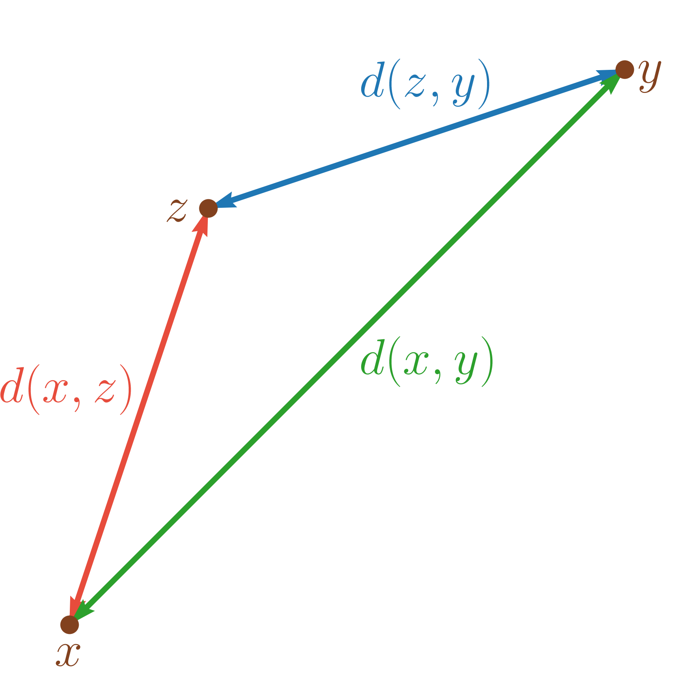
Pour \(E = \mathbb{C}\), \((x,y) \in E \mapsto \left|x-y\right|\) est une distance.
Pour \(E\) un ensemble quelconque, \(d(x,y) \in E \mapsto \left\{\begin{array}{ll} 1 & \mbox{ si $x \neq y$} \\ 0 & \mbox{ si $x=y$} \end{array}\right.\) est une distance sur \(E\).
Si \(E = E_1 \times E_2 \times \ldots \times E_n\), \(d: (x,y) \in E \mapsto \mathop{\mathrm{card}}\left\{i / x_i \neq y_i\right\}\) est une distance sur \(E.\)
D’abord, \(d\) est bien à valeurs dans \(\mathbb{R}^{+}.\) Puis, soient \(x,y,z \in E\),
On a clairement \(d(x,y) = d(y,x).\)
On a aussi clairement \(d(x,y) = 0 \iff x=y.\)
Soit \(1 \leq i \leq n\) tel que \(x_i\neq y_i\) alors nécessairement \(x_i\neq z_i\) ou \(y_i\neq z_i.\) Ainsi, \(\left\{i\mid x_i\neq y_i\right\}\subset\left\{i\mid x_i\neq z_i\right\}\cup\left\{i\mid y_i\neq z_i\right\}.\) Par conséquent, \[d(x,y) \leq \mathop{\mathrm{card}}\left\{i\mid x_i\neq z_i\right\} +\mathop{\mathrm{card}}\left\{i\mid y_i\neq z_i\right\} =d(x,z)+d(z,y).\] Donc \(d\) vérifie l’inégalité triangulaire.
Soient \(x_1,\ldots,x_n \in E\), \(d(x_1,x_n) \leq \sum_{j=1}^{n-1}d(x_j,x_{j+1}).\)
Soit \(A \subset E\) et \(\begin{array}{lllll} d_A & : & A\times A & \to & \mathbb{R}^{+} \\ & & (x,y) & \mapsto & d(x,y) \end{array}\) est une distance sur \(A\) et \((A,d_A)\) est un espace métrique.
Soient \(E\) un ensemble, \(d\) une distance sur \(E\) et \(x,y,z \in E\) alors \[d(x,y) \geq \left|d(x,z)-d(y,z)\right|.\]
Par inégalité triangulaire, on a \(d(x,z) \leq d(x,y)+d(y,z)\) donc \(d(x,y) \geq d(x,z)-d(y,z).\)
De même, \(d(y,z) \leq d(y,x)+d(x,z) = d(x,y)+d(x,z)\) donc \(d(x,y) \geq d(y,z)-d(x,z).\)
Donc \(d(x,y) \geq \left|d(x,z)-d(y,z)\right|.\)
Soit \((E+,.)\) un \(\mathbb{K}\)-espace vectoriel. On appelle norme sur \(E\), toute application \(\begin{array}{lllll} \left\|\cdot\right\| & : & E & \to & \mathbb{R}^{+} \\ & & x & \mapsto & \left\|x\right\| \end{array}\) qui vérifie
(Définie positive) \(\forall x \in E, \left\|x\right\| = 0 \Longrightarrow x=0_E\),
(Homogénéité) \(\forall x \in E, \lambda\in \mathbb{K}, \left\|\lambda x\right\| = \left|\lambda\right|\left\|x\right\|\),
(Inégalité triangulaire) \(\forall x,y \in E, \left\|x+y\right\| \leq \left\|x\right\|+\left\|y\right\|.\)
Alors, \((E,\left\|\cdot\right\|)\) est appelé un espace vectoriel normé.
Sur \(E = \mathbb{R}\text{ ou }\mathbb{C}\), \(N(x) = \left|x\right|\) est une norme.
Pour les vecteurs du plan muni de la norme euclidienne usuelle, l’inégalité triangulaire s’interprète encore de la même façon. On l’lillustre ici pour deux vecteurs \(\overrightarrow{u},\overrightarrow{v}.\)
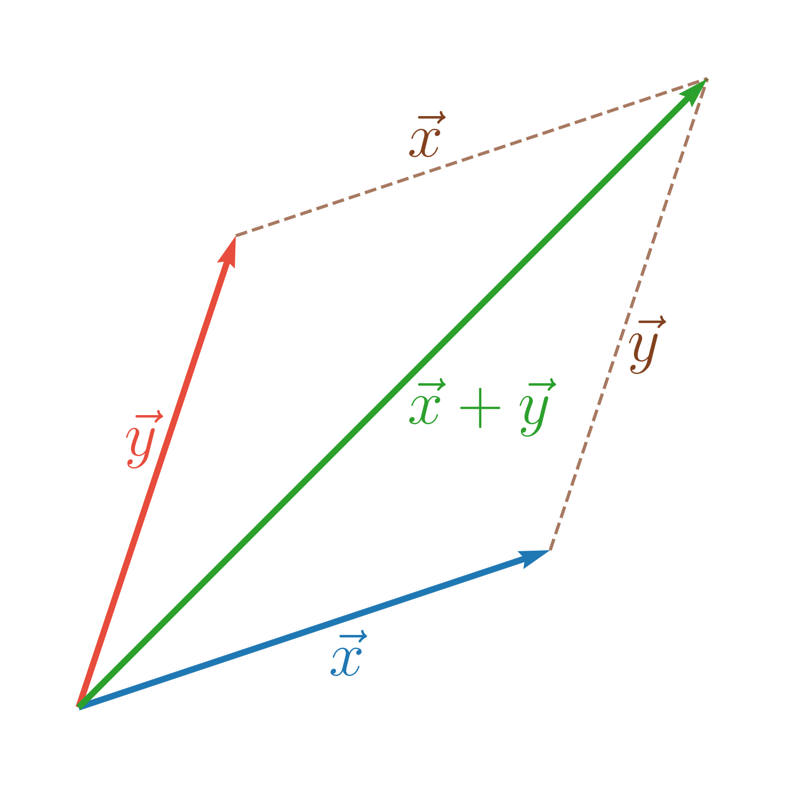
Par le 1. et le 2., on a \(\left\|x\right\| = 0 \iff x=0_E\) donc \(\left\|x\right\| > 0 \iff x \neq 0_E.\)
Si \(x \neq 0\), par le 2., \(v = \pm\frac{1}{\left\|x\right\|}.x\) est de norme \(1.\) On dit alors que \(v\) est un vecteur unitaire ou normé.
Soit \(F\) un sous-espace vectoriel de \(E\) alors \(\begin{array}{lllll} \left\|\cdot\right\|_F & : & F & \to & \mathbb{R}^{+} \\ & & x & \mapsto & \left\|x\right\| \end{array}\) est une norme sur \(F\) et \((F,\left\|\cdot\right\|_F)\) est un espace normé.
Si \(\left\|\cdot\right\|\) ne vérifie que les 2. et 3., on dit que c’est une semi-norme.
\(\left\|\cdot\right\|\) est une fonction convexe sur \(E\) car pour tout \(x,y \in E\), \(\left\|(1-\lambda)x+\lambda y\right\| \underbrace{\leq}_{\substack{\text{par inégalité} \\ \text{triangulaire}}} \left\|(1-\lambda)x\right\|+\left\|\lambda y\right\| \underbrace{=}_{\text{par homogénéité}} \underbrace{(1-\lambda)}_{\geq 0}\left\|x\right\|+\underbrace{\lambda}_{\geq 0}\left\|y\right\|.\)
Soit \((E,\left\|\cdot\right\|)\) un \(\mathbb{K}\)-espace vectoriel normé.
Alors, \(\begin{array}{lllll} d & : & E\times E & \to & \mathbb{R}^{+} \\ & & (x,y) & \mapsto & \left\|x-y\right\| \end{array}\) est une distance sur \(E\) qui est appelée la distance associée à \(\left\|\cdot\right\|.\)
\(d\) est effectivement à valeurs dans \(\mathbb{R}^{+}.\) De plus, soient \(x,y,z \in E\),
\(d(x,y) = \left\|x-y\right\| = \left\|(-1)(y-x)\right\|=\left|-1\right|\left\|y-x\right\|=\left\|y-x\right\|=d(y,x)\),
\(d(x,y)=0 \iff \left\|x-y\right\|=0 \iff x-y=0_E \iff x=y\),
\(d(x,y) = \left\|x-y\right\| = \left\|x-z+z-y\right\| \leq \left\|x-z\right\|+\left\|z-y\right\| = d(x,z)+d(z,y).\)
Soit \((E,\left\|\cdot\right\|)\) un \(\mathbb{K}\)-espace vectoriel normé et \(d\) la distance associée à \(\left\|\cdot\right\|.\) Alors, pour tout \(x,y,v \in E\) et \(\lambda \in \mathbb{K}\),
\(d(x,0_E) = \left\|x\right\|\),
\(d(x+v,y+v) = d(x,y)\),
\(d(\lambda x, \lambda y) = \left|\lambda\right| d(x,y).\)
\(d(x,0) = \left\|x-0_E\right\|= \left\|x\right\|\),
\(d(x+v,y+v) = \left\|x+v-(y+v)\right\|=\left\|x-y\right\|=d(x,y)\),
\(d(\lambda x, \lambda y) = \left\|\lambda(x-y)\right\| = \left|\lambda\right|\left\|x-y\right\|=\left|\lambda\right| d(x,y).\)
Soit \((E,\left\|\cdot\right\|)\) un \(\mathbb{K}\)-espace vectoriel normé. Soient \(x,y \in E\) alors \[\left\|x-y\right\| \geq \left|\left\|x\right\|-\left\|y\right\|\right|.\]
Par l’inégalité triangulaire, \(\left\|x\right\| = \left\|x-y+y\right\|\leq \left\|x-y\right\|+\left\|y\right\|\) donc \(\left\|x-y\right\| \geq \left\|y\right\|-\left\|x\right\|.\) De même, \(\left\|y\right\| = \left\|y-x+x\right\|\leq \left\|y-x\right\|+\left\|x\right\| = \left\|x-y\right\|+\left\|x\right\|\) donc \(\left\|x-y\right\| \geq \left\|y\right\|-\left\|x\right\|.\)
On a donc \(\left\|x-y\right\| \geq \pm\left(\left\|y\right\|-\left\|x\right\|\right)\) donc \(\left\|x-y\right\| \geq \left|\left\|x\right\|-\left\|y\right\|\right|.\)
On a donc aussi \(\left\|x+y\right\| \geq \left|\left\|x\right\|-\left\|y\right\|\right|.\)
Soient \(x,y \in E\) tels que \(\left\|x\right\| = 2\) et \(\left\|y\right\| \leq \frac{1}{2}\), que peut-on dire de \(\left\|x+y\right\|\) ?
Par l’inégalité triangulaire, \(\left\|x+y\right\| \leq \left\|x\right\|+\left\|y\right\| \leq 2+\frac{1}{2} = \frac{5}{2}.\)
D’autre par, par la proposition [prop:inegalite_triangulaire_inverse] (et la remarque [rem:prop:inegalite_triangulaire_inverse]), on a \(\left\|x+y\right\| \geq \left\|x\right\|-\left\|y\right\| \geq 2-\frac{1}{2}=\frac{3}{2}.\)
Donc \(\frac{3}{2} \leq \left\|x+y\right\| \leq \frac{5}{2}.\)
Sur \(E = \mathbb{K}^n\), \(\left\|\cdot\right\|_1\) tel que \(\left\|x\right\|_1= \sum_{j=1}^n \left|x_j\right|\) pour \(x = (x_1,\ldots,x_n) \in \mathbb{K}^n\) constitue une norme sur \(E.\)
\(\left\|\cdot\right\|_1\) est à valeurs dans \(\mathbb{R}^{+}.\) De plus, pour \(x,y \in \mathbb{K}^n\),
\(\left\|x\right\|_1= \sum_{j=1}^n \left|x_j\right| = 0 \Longrightarrow \forall 1 \leq j \leq n, \left|x_j\right| = 0\) car tous les termes sont positifs.
Cela implique donc \(x_j = 0\) pour \(1 \leq j \leq n\) et \(x=0.\)
Soit \(\lambda \in \mathbb{K}\), \(\left\|\lambda x\right\|_1 = \sum_{j=1}^n \left|\lambda x_j\right| = \sum_{j=1}^n \left|\lambda\right|\left|x_j\right| = \left|\lambda\right|\sum_{j=1}^n \left|x_j\right| = \left|\lambda\right|\left\|x\right\|_1.\)
\(\left\|x+y\right\|_1= \sum_{j=1}^n \left|x_j+y_j\right| \underbrace{\leq}_{\substack{\text{par l'inégalité }\\\text{triangulaire}\\\text{ dans $\mathbb{C}$}}} \sum_{j=1}^n \left|x_j\right|+\left|y_j\right|= \sum_{j=1}^n \left|x_j\right|+\sum_{j=1}^n \left|y_j\right| = \left\|x\right\|_1+\left\|y\right\|_1.\)
Sur \(E = \mathbb{K}^n\), \(\left\|\cdot\right\|_\infty\) tel que \(\left\|x\right\|_\infty= \max_{1\leq j \leq n}\left|x_j\right|\) pour \(x = (x_1,\ldots,x_n) \in \mathbb{K}^n\) constitue une norme sur \(E.\)
\(\left\|\cdot\right\|_\infty\) est à valeurs dans \(\mathbb{R}^{+}.\) De plus, pour \(x,y \in \mathbb{K}^n\),
\(\left\|x\right\|_\infty= \max_{1 \leq j \leq n} \left|x_j\right| = 0 \Longrightarrow \forall 1 \leq j \leq n, \left|x_j\right| \leq 0\) donc \(x_j = 0\) pour \(1 \leq j \leq n\) et \(x=0.\)
Soit \(\lambda \in \mathbb{K}\), \(\left\|\lambda x\right\|_\infty = \max_{1 \leq j \leq n} \left|\lambda x_j\right| = \max_{1 \leq j \leq n} \left|\lambda\right|\left|x_j\right| \underbrace{=}_{\substack{\text{car}\\ \left|\lambda\right|\geq 0}} \left|\lambda\right|\max_{1 \leq j \leq n} \left|x_j\right| = \left|\lambda\right|\left\|x\right\|_\infty.\)
Soit \(1 \leq i \leq n\), \(\left|x_i+y_i\right| \leq \left|x_i\right|+\left|y_i\right| \leq \max_{1 \leq j \leq n} \left|x_j\right|+\max_{1 \leq j \leq n} \left|y_j\right| = \left\|x\right\|_\infty+\left\|y\right\|_\infty.\)
Donc \(\left\|x+y\right\|_\infty= \max_{1\leq i \leq n}\left|x_i+y_i\right| \leq \left\|x\right\|_\infty+\left\|y\right\|_\infty.\)
Soit \(E\) un \(\mathbb{K}\)-espace vectoriel et \(\mathscr{B}= (e_i)_{i \in I}\) une base de \(E\) avec \(I\) fini ou non. Alors, en posant \(\left\|x\right\|_{1,\mathscr{B}} = \sum_{j\in I} \left|x_j\right|\) et \(\left\|x\right\|_{\infty,\mathscr{B}} = \max_{j\in I}\left|x_j\right|\) pour \(x \in E\) tel que \(x = \sum_{j\in I}x_je_j\), on a \(\left\|\cdot\right\|_{1,\mathscr{B}}\) et \(\left\|\cdot\right\|_{\infty,\mathscr{B}}\) qui sont des normes sur \(E.\)
Par exemple, dans \(\mathscr{M}_{n}(\mathbb{K})\), on peut poser pour \(A = \left(a_{ij}\right) \in \mathscr{M}_{n}(\mathbb{K})\), \(\left\|A\right\|_1 = \sum_{1 \leq i,j \leq n} \left|a_{ij}\right|\) et \(\left\|A\right\|_\infty = \max_{1 \leq i,j \leq n} \left|a_{ij}\right|.\)
Dans \(P \in \mathbb{K}[X]\), pour \(P= \sum_{n \geq 0} a_n X^n\), on peut poser \(\left\|P\right\|_1 = \sum_{i \geq 0} \left|a_{i}\right|\) et \(\left\|P\right\|_\infty = \max_{i \geq 0} \left|a_{i}\right|.\)
Soient \(a,b \in \mathbb{R}\) tels que \(a<b\) et \(E = \mathscr{C}([a,b],\mathbb{R}).\) \(\left\|\cdot\right\|_1\) tel que \(\left\|f\right\|_1 = \int_a^b \left|f\right|\) pour \(f \in E\), \(\left\|\cdot\right\|_1\) est une norme sur \(E.\)
\(\left\|\cdot\right\|_1\) est à valeurs dans \(\mathbb{R}^{+}.\) Ensuite, soient \(f,g \in \mathscr{C}([a,b],\mathbb{R})\),
\(\left\|f\right\|_1 = 0 \Longrightarrow \int_a^b \left|f\right|=0.\) Or, \(\left|f\right|\) est une fonction positive et continue donc \(\left|f\right| = 0\) et \(f = 0.\)
Soit \(\lambda \in \mathbb{R}\), \(\left\|\lambda f\right\|_1 = \int_a^b \left|\lambda f\right| = \left|\lambda\right|\int_a^b \left|f\right| = \left|\lambda\right|\left\|f\right\|_1.\)
Pour tout \(x \in [a,b]\), \(\left|f(x)+g(x)\right| \leq \left|f(x)\right|+\left|g(x)\right|\) donc \(\left\|f+g\right\|_1\leq \left\|f\right\|_1+\left\|g\right\|_1.\)
Sur \(\mathscr{C}_{\mathrm{m}}\left([a,b]\right)\), \(\left\|\cdot\right\|_1\) n’est pas une norme mais une semi-norme.
Soient \(a,b \in \mathbb{R}\) tels que \(a<b\) et \(E = \mathscr{C}([a,b],\mathbb{R}).\) \(\left\|\cdot\right\|_\infty\) tel que \(\left\|f\right\|_\infty = \sup_{x \in [a,b]}\left|f(x)\right|\) pour \(f \in E\), \(\left\|\cdot\right\|_\infty\) est une norme sur \(E.\)
D’abord, \(\left\|\cdot\right\|_\infty\) est bien définie car toute fonction de \(\mathscr{C}([a,b],\mathbb{R})\) est bornée, comme fonction continue sur un segment. On a même \(\left\|f\right\|_\infty = \max_{x \in [a,b]}\left|f(x)\right|.\) Ensuite, soient \(f,g \in \mathscr{C}([a,b],\mathbb{R})\),
\(\left\|f\right\|_\infty = 0 \Longrightarrow \sup_{x \in [a,b]}f(x)=0.\) Donc pour tout \(x \in [a,b], \left|f(x)\right| \leq 0\) donc \(\left|f\right| = 0\) et \(f=0.\)
Soit \(\lambda \in \mathbb{R}\),
\(\left\|\lambda f\right\|_\infty = \sup_{x \in [a,b]}\left|\lambda f(x)\right| =\sup_{x \in [a,b]}\left|\lambda\right|\left|f(x)\right| \underbrace{=}_{\text{car $\left|\lambda\right|\geq 0$}} \left|\lambda\right|\sup_{x \in [a,b]}\left|f(x)\right|= \left|\lambda\right|\left\|f\right\|_\infty.\)
Pour tout \(x \in [a,b]\), \(\left|f(x)+g(x)\right| \leq \left|f(x)\right|+\left|g(x)\right| \leq \left\|f\right\|_\infty+\left\|g\right\|_\infty\)
donc \(\left\|f+g\right\|_\infty=\sup_{x\in [a,b]}\left|f(x)+g(x)\right|\leq \left\|f\right\|_\infty+\left\|g\right\|_\infty.\)
Sur \(\mathscr{C}_{\mathrm{m}}\left([a,b]\right)\), \(\left\|\cdot\right\|_\infty\) est aussi une norme mais pas sur \(\mathscr{C}(]a,b[,\mathbb{R}).\)
Les rappels sont relatifs au cours sur les espaces euclidiens de première année.
Soit \(E\) un \(\mathbb{R}\)-espace vectoriel et \(\varphi : E\times E \to \mathbb{R}.\)
\(\varphi\) est un produit scalaire sur \(E\) si
\(\varphi\) est bilinéaire ie \(\varphi\) est linéaire par rapport à chacune des variables, ou encore pour tout \(u,v \in E\), \(\begin{array}{lllll} \varphi_1 & : & E & \to & \mathbb{R} \\ & & x & \mapsto & \varphi(x,v) \end{array}\) est linéaire (linéarité à gauche) et \(\begin{array}{lllll} \varphi_2 & : & E & \to & \mathbb{R} \\ & & y & \mapsto & \varphi(u,y) \end{array}\) est linéaire (linéarité à droite).
\(\varphi\) est symétrique ie pour tout \(u,v \in E\), \(\varphi(u,v) = \varphi(v,u)\)
\(\varphi\) est définie positive ie pour tout \(v \in E\), \(\varphi(v,v) \geq 0\) (\(\varphi\) est positive) et \(\varphi(v,v) = 0 \iff v = 0_E\) (\(\varphi\) est définie positive).
\(\varphi(u,v)\) est alors généralement noté \(\langle u,v \rangle\), \(\left(u \mid v\right)\) ou \(\left[u,v\right].\)
Sur \(\mathbb{R}^n\), \(x = (x_1,\ldots,x_n)\) et \(y=(y_1,\ldots,y_n)\), le produit scalaire usuel est \(\langle x,y \rangle = \sum_{i=1}^n x_iy_i.\) Remarquons qu’avec \(X = \begin{pmatrix} x_1 \\ x_2 \\ \vdots \\ x_n \end{pmatrix},Y = \begin{pmatrix} y_1 \\ y_2 \\ \vdots \\ y_n \end{pmatrix} \in \mathscr{M}_{n,1}(\mathbb{R})\), on a \(\langle x,y \rangle = {}^tXY = ^{t}YX.\)
Soit \(E\) un \(\mathbb{R}\)-espace vectoriel et \(\left(e_i\right)_{i\in I}\) une base de \(E\) (avec \(I\) fini ou non) alors on a le produit scalaire \(\langle \cdot,\cdot \rangle\) tel que \(\langle x,y\rangle = \sum_{i \in I} x_i y_i\) pour \(x = \sum_{i \in I} x_i e_i \in E\) et \(y = \sum_{i \in I} y_i e_i \in E.\)
Sur \(E = \mathbb{R}[X]\), on a \(\langle P,Q \rangle= \sum_{n \geq 0} a_n b_n\) pour \(P = \sum_{n\geq 0} a_n X^n\) et \(Q = \sum_{n\geq 0} b_n X^n.\)
Sur \(E =\mathscr{M}_{n}(\mathbb{R})\), on a \(\langle A,B \rangle = \sum_{1 \leq i,j \leq n}a_{ij}b_{ij} = \mathop{\mathrm{Tr}}({}^t AB)\) pour \(A = \left(a_{ij}\right), B = \left(b_{ij}\right) \in \mathscr{M}_{n}(\mathbb{R}).\)
Sur \(\mathscr{C}([a,b],\mathbb{R})\), on a le produit scalaire \(\langle \cdot,\cdot \rangle\) tel que \(\langle f,g\rangle = \int_a^b fg\) pour \(f,g \in \mathscr{C}([a,b],\mathbb{R}).\)
En revanche, \(\langle \cdot,\cdot \rangle\) est bien bilinéaire symétrique positive mais pas définie positive sur \(\mathscr{C}_{\mathrm{m}}\left([a,b]\right).\) La fonction \(f\) représentée ci-contre est continue par morceaux sur \([0,1]\) et vérifie \(\int_0^1 f^2=\int_0^1 f = 0\) sans qu’on ait \(f = 0.\)
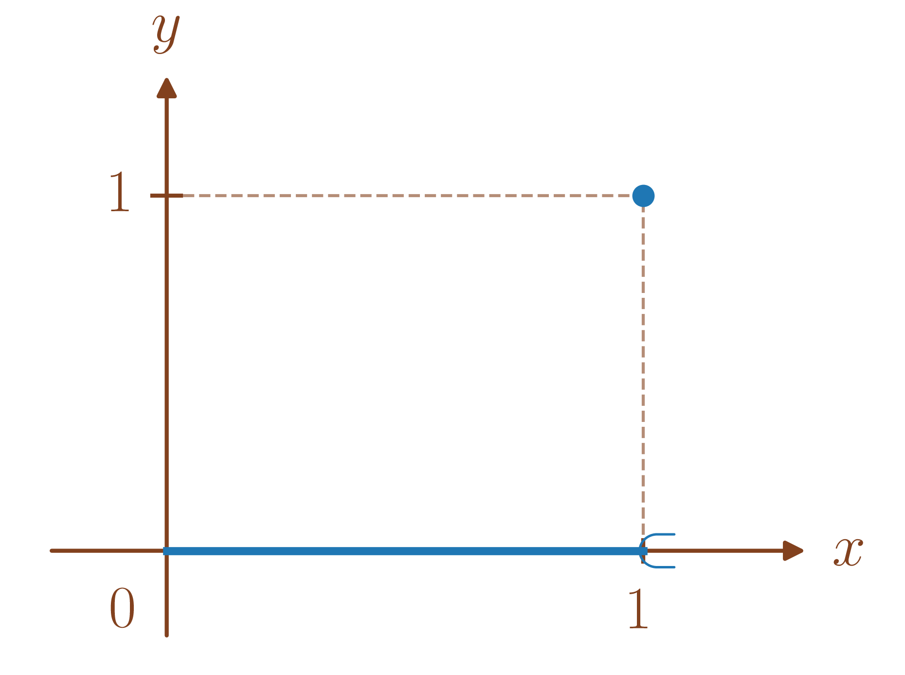
(Inégalité de Cauchy-Schwarz) Soit \(E\) un \(\mathbb{R}\)-espace vectoriel et \(\varphi: E\times E \to \mathbb{R}\) une fonction bilinéaire symétrique et positive (pas forcément définie positive).
Soient \(u,v \in E\) alors \[\left|\varphi(u,v)\right| \leq \sqrt{\varphi(u,u)}\sqrt{\varphi(v,v)}.\] De plus, il y a égalité dans l’inégalité si \((u,v)\) est liée. Si de plus, \(\varphi\) est définie positive, il y a égalité dans l’inégalité si et seulement \((u,v)\) est liée.
Soit \(t \in \mathbb{R}\) alors, par bilinéarité et symétrie de \(\varphi\), \(\varphi(u+tv,u+tv) = \varphi(u,u)+t^2\varphi(v,v)+2t\varphi(u,v)\) et comme \(\varphi(u+tv,u+tv) \geq 0\), \(t \in \mathbb{R}\mapsto \varphi(u,u)+t^2\varphi(v,v)+2t\varphi(u,v)\) est un polynôme toujours positif.
Soit \(\sqrt{\varphi(v,v)} = 0\) et dans ce cas ce polynôme est une fonction affine toujours positive donc on a aussi \(\varphi(u,v) = 0\) donc \(0=\left|\varphi(u,v)\right| \leq \sqrt{\varphi(u,u)}\sqrt{\varphi(v,v)} = 0.\)
Soit \(\sqrt{\varphi(v,v)} \neq 0\) et dans ce cas, \(t \in \mathbb{R}\mapsto \varphi(u,u)+t^2\varphi(v,v)+2t\varphi(u,v)\) est un polynôme du second degré avec au plus une racine.
Son discriminant est alors négatif, ce qui donne
\(4\varphi(u,v)^2-4\varphi(u,u)\varphi(v,v) \leq 0 \iff \varphi(u,v)^2 \leq \varphi(u,u)\varphi(v,v) \iff \left|\varphi(u,v)\right| \leq \sqrt{\varphi(u,u)}\sqrt{\varphi(v,v)}.\)
Traitons le cas d’égalité.
\((\Longleftarrow)\) Si \((u,v)\) est liée, alors
soit \(v=0_E\) et \(\left|\varphi(u,v)\right| =\sqrt{\varphi(u,u)}\sqrt{\varphi(v,v)}=0\),
soit \(v \neq 0_E\) et il existe \(\lambda \in \mathbb{R}\) tel que \(u = \lambda v.\)
On a alors \(\left|\varphi(u,v)\right| = \left|\varphi(\lambda v, v)\right| = \left|\lambda\varphi\left(v, v\right)\right| = \left|\lambda\right|\varphi(v,v)= \sqrt{\varphi\left(\lambda v,\lambda v\right)}\sqrt{\varphi(v,v)} =\sqrt{\varphi(u,u)}\sqrt{\varphi(v,v)}.\)
\((\Longrightarrow)\) En cas d’égalité de l’inégalité de Cauchy-Schwarz, en supposant de plus \(\varphi\) définie positive,
soit \(v=0_E\) et \(\left|\varphi(u,v)\right| =\sqrt{\varphi(u,u)}\sqrt{\varphi(v,v)}=0\),
soit \(v \neq 0_E\) et en reprenant la preuve de l’inégalité de Cauchy-Schwarz, le polynôme \(t \in \mathbb{R}\mapsto \varphi(u+tv,u+tv)= \varphi(u,u)+t^2\varphi(v,v)+2t\varphi(u,v)\) du second degré admet le discriminant \(4\varphi(u,v)^2-4\varphi(u,u)\varphi(v,v) =0.\)
Il admet donc une racine \(t_0 \in \mathbb{R}\) tel que \(\varphi\left(u+t_0v,u+t_0v\right) = 0.\) Comme \(\varphi\) est définie positive, on a \(u+t_0v = 0_E \iff u=-t_0v\) donc \((u,v)\) est liée.
Pour \(f,g \in \mathscr{C}_{\mathrm{m}}\left([a,b]\right)\), on a \(\left|\int_a^b fg\right| \leq \sqrt{\int_a^b f^2}\sqrt{\int_a^b g^2}.\) Si de plus, \(f\) et \(g\) sont continues, on a égalité si et seulement si \((f,g)\) est liée.
Soit \((x_1,\ldots,x_n) \in \mathbb{R}^n\), en appliquant l’inégalité de Cauchy-Schwarz avec \(y = (1,\ldots,1)\), on a \[\left|\sum_{i=1}^n x_i\right| \leq \sqrt{\sum_{i=1}^n x_i^2}\sqrt{n}\] avec égalité si et seulement si \(x_1=\ldots=x_n.\)
Soit \(E\) un \(\mathbb{R}\)-espace vectoriel, muni d’un produit scalaire \(\langle \cdot, \cdot \rangle\), on pose \(\left\|x\right\|_2 = \sqrt{\langle x,x\rangle}\) pour \(x \in E.\) Alors, \(\left\|\cdot\right\|_2\) est une norme dite associée au produit scalaire \(\langle \cdot, \cdot \rangle\) et est qualifiée de préhilbertienne. \(\left(E,\langle \cdot, \cdot \rangle\right)\) est appelé un espace préhilbertien et s’il est de plus de dimension finie, il est appelé espace euclidien.
\(\left\|\cdot\right\|_2\) est à valeurs dans \(\mathbb{R}^{+}.\) De plus, soient \(x,y \in E\),
\(\left\|x\right\|_2 = 0 \iff \langle x,x \rangle = 0 \iff x=0\),
Soit \(\lambda \in \mathbb{R}\), \(\left\|\lambda x\right\|_2 = \sqrt{\langle \lambda x, \lambda x \rangle} = \sqrt{\lambda^2 \langle x,x \rangle} = \left|\lambda\right|\left\|x\right\|_2\),
\[\begin{aligned} \left\|x+y\right\|_2^2 & = \langle x+y,x+y \rangle \\ & = \langle x,x \rangle+ \langle x,y \rangle +\langle y,x \rangle +\langle y,y \rangle \text{ par bilinéarité du produit scalaire}\\ & = \langle x,x \rangle+\langle y,y \rangle+ 2\langle x,y \rangle \text{ par symétrie du produit scalaire}\\ & = \left\|x\right\|_2^2+\left\|y\right\|_2^2+2\langle x,y \rangle \\ & \leq \left\|x\right\|_2^2+\left\|y\right\|_2^2+2\left|\langle x,y \rangle\right| \\ & \leq \left\|x\right\|_2^2+\left\|y\right\|_2^2+2\left\|x\right\|\left\|y\right\|\text{ par inégalité de Cauchy-Schwarz} \\ & = \left(\left\|x\right\|_2+\left\|y\right\|_2\right)^2. \end{aligned}\]
Donc \(\left\|x+y\right\|_2 \leq \left\|x\right\|_2+\left\|y\right\|_2.\)
Si on remplace \(\langle \cdot, \cdot \rangle\) par une fonction bilinéaire, symétrique, positive mais pas définie positive, on obtient une semi-norme.
Soit \(\left(E,\langle \cdot, \cdot \rangle\right)\) un espace préhilbertien et \(\left\|\cdot\right\|_2\) la norme préhilbertienne associée,
Alors, soient \(x,y \in E\),
\[\begin{aligned} \left\|x+y\right\|_2^2 & =\left\|x\right\|_2^2+\left\|y\right\|_2^2+2\langle x,y \rangle\\ \left\|x-y\right\|_2^2 & =\left\|x\right\|_2^2+\left\|y\right\|_2^2-2\langle x,y \rangle\\ \langle x,y \rangle&=\frac{1}{4}\left(\left\|x+y\right\|_2^2-\left\|x-y\right\|_2^2\right)\\ \left\|x+y\right\|_2^2+\left\|x-y\right\|_2^2&=2\left\|x\right\|_2^2+2\left\|y\right\|_2^2. \end{aligned}\]
Soient \(a,b,c \in E\), en considérant \(x=a-b\) et \(y=a-c\), on a \[\begin{aligned} \left\|x+y\right\|_2^2+\left\|x-y\right\|_2^2 & = \left\|2a-\left(b+c\right)\right\|_2^2+\left\|b-c\right\|_2^2 \\ & = 2\left\|x\right\|_2^2+2\left\|y\right\|_2^2 \\ & = 2\left\|a-b\right\|_2^2+2\left\|a-c\right\|_2^2. \end{aligned}\] Donc en divisant par \(4\), on obtient \[\left\|a-\frac{b+c}{2}\right\|_2^2 = \frac{1}{2}\left\|a-b\right\|_2^2+\frac{1}{2}\left\|a-c\right\|_2^2-\frac{1}{4}\left\|b-c\right\|_2^2\] ce qui constitue l’égalité de la médiane.
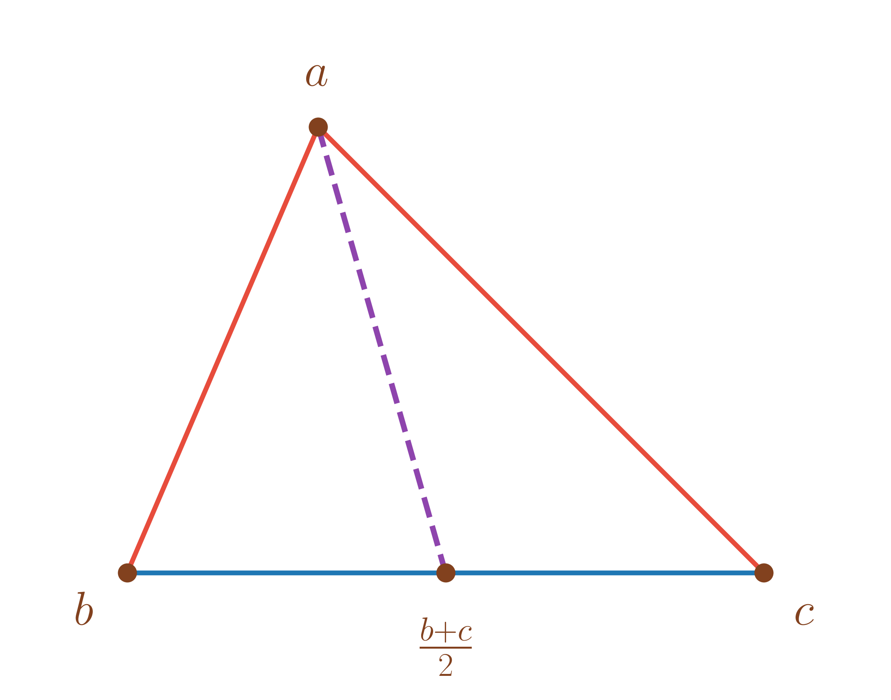
(cas d’égalité de l’inégalité triangulaire) Soit \((E,\langle \cdot, \cdot\rangle)\) un espace préhilbertien et \(\left\|\cdot\right\|\) la norme préhilbertienne associée.
Alors, soient \(x,y \in E\),
\[\left\|x+y\right\| = \left\|x\right\|+\left\|y\right\| \iff \left\{\begin{array}{ll} & x = 0_E \\ \text{ ou }& \text{ il existe $\lambda \in \mathbb{R}^{+}$ tel que $y = \lambda x.$} \end{array}\right.\]
\((\Longleftarrow)\)
Si \(x=0_E\), \(\left\|x+y\right\| = \left\|y\right\| = \left\|x\right\|+\left\|y\right\|.\)
S’il existe \(\lambda \in \mathbb{R}^{+}\) tel que \(v = \lambda u\),
\(\left\|x+y\right\| = \left\|\left(1+\lambda\right)x\right\| = |\underbrace{1+\lambda}_{\geq 0}|\left\|x\right\| = \left(1+\lambda\right)\left\|x\right\| = \left\|x\right\|+\lambda\left\|x\right\| = \left\|x\right\|+\left|\lambda\right|\left\|x\right\| = \left\|x\right\|+\left\|\lambda x\right\| = \left\|x\right\|+\left\|y\right\|.\)
\((\Longleftarrow)\) En reprenant la preuve de l’inégalité triangulaire, \(\left\|x+y\right\| = \left\|x\right\|+\left\|y\right\|\) donne \(\langle x,y\rangle=\left\|x\right\|\left\|y\right\|.\)
Cela impose \(\langle x,y\rangle \geq 0\) et donc \(\left|\langle x,y\rangle\right| = \langle x,y\rangle = \left\|x\right\|\left\|y\right\|.\)
On est dans le cas d’égalité de l’inégalité de Cauchy-Schwarz donc \((u,v)\) est liée et
soit \(u=0_E\),
soit \(u \neq 0_E\) et il existe \(\lambda \in \mathbb{R}\) tel que \(v = \lambda u.\) De plus, \(\langle x,y\rangle \geq 0\) impose \(\langle x,y\rangle = \lambda \underbrace{\left(u\mid u\right)}_{> 0} \geq 0\) donc \(\lambda \geq 0.\)
Pour \(f,g \in \mathscr{C}([a,b],\mathbb{R})\), on a \(\sqrt{\int_a^b \left(f+g\right)^2} \leq \sqrt{\int_a^b f^2}+\sqrt{\int_a^b g^2}\) avec égalité si et seulement si \(f\) et \(g\) sont positivement linéaires.
Pour rappel, \((x,y)\) liée (ou \(x,y\) colinéaires) \(\iff \left\{\begin{array}{ll} & x = 0_E \\ \text{ ou }& \text{ il existe $\lambda \in \mathbb{R}$ tel que $y = \lambda x.$} \end{array}\right..\) On peut donc lire la propriété comme \(x\) et \(y\) positivement colinéaires.
En replongeant dans \(E = \mathbb{R}^2\), on retrouve l’égalité de l’inégalité triangulaire avec les dessins ci-contre. On comprend aussi pourquoi il est nécessaire que \(\lambda \geq 0.\)
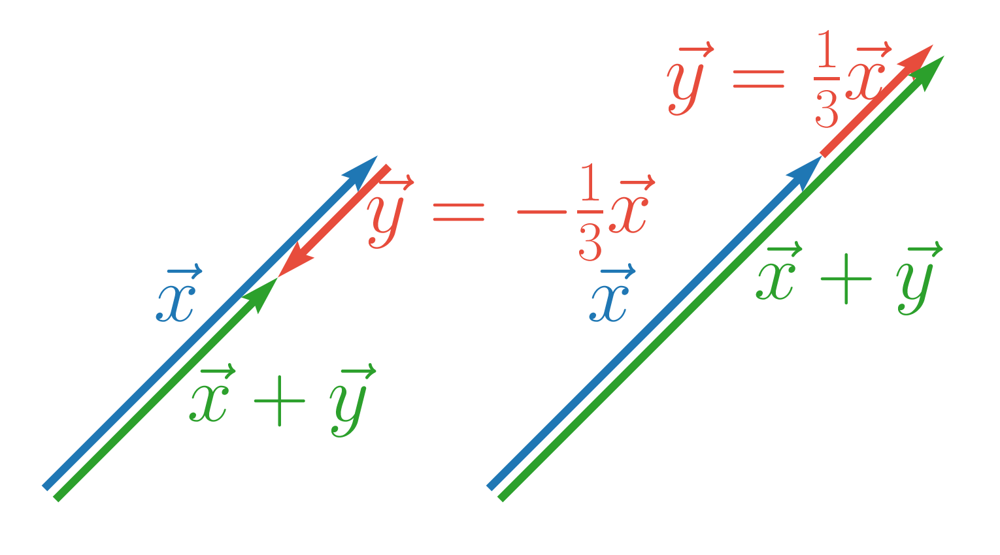
Cette proposition donne un moyen de détecter si une norme n’est pas préhilbertienne. Précisément, dans le cas où une norme vérifie une égalité de l’inégalité triangulaire sans que les deux vecteurs soient positivement colinéaires, on peut affirmer qu’elle n’est pas préhilbertienne.
Dans \(\mathbb{R}^n\), \(\left\|.\right\|_1\) n’est pas préhilbertienne car avec \(x = (1,0,\ldots,0)\) et \(y = (0,\ldots,0,-1)\), on a \(x+y = (1,0,\ldots,0,-1)\) et \(\left\|x\right\|_1 +\left\|y\right\|_1= 1+1=2 = \left\|x+y\right\|_1\) mais \(x\) et \(y\) sont non colinéaires.
Dans \(\mathbb{R}^n\), \(\left\|.\right\|_\infty\) n’est pas préhilbertienne car avec \(x (0,\ldots,0,1)\) et \(y = (-1,0,\ldots,0,1)\), on a \(x+y = (-1,0,\ldots,0,2)\) et \(\left\|x\right\|_\infty +\left\|y\right\|_\infty= 1+1=2 = \left\|x+y\right\|_\infty\) mais \(x\) et \(y\) sont non colinéaires.
Soient \(\left(E,\langle \cdot, \cdot \rangle\right)\) un espace préhilbertien et \(x,y \in E.\)
On dit que \(x\) et \(y\) sont orthogonaux si \(\langle x,y \rangle = 0\) et l’on note \(x \perp y.\)
\(x \perp x \iff x = 0\),
\(y \perp x\) pour tout \(x \in E\) \(\iff\) \(y = 0\),
\(\left.\begin{array}{l} x \perp y_1 \\ x \perp y_2 \end{array}\right\} \Longrightarrow \forall \alpha, \beta \in \mathbb{R}, x\perp \alpha y_1 + \beta y_2.\)
(Théorème de Pythagore) Soient \(\left(E,\langle \cdot, \cdot \rangle\right)\) un espace préhilbertien et \(x_1,\ldots,x_n \in E\) deux à deux orthogonaux (ie pour tout \(i \neq j\), \(\langle x_i, x_j\rangle = 0\)). Alors, \[\left\|x_1+\ldots+x_n\right\|^2 = \left\|x_1\right\|^2+\ldots+\left\|x_n\right\|^2.\]
\[\begin{aligned} \left\|x_1+\ldots+x_n\right\|^2 & = \langle \sum_{i=1}^n x_i, \sum_{j=1}^n x_j \rangle \\ & = \sum_{1 \leq i,j \leq n} \langle x_i, x_j \rangle \\ & = \sum_{1 \leq i=j \leq n} \langle x_i, x_j \rangle +\sum_{1 \leq i\neq j \leq n} \langle x_i, x_j \rangle \\ & = \sum_{i=1}^n \left\|x_i\right\|^2+2\sum_{1 \leq i < j \leq n} \underbrace{\langle x_i,x_j\rangle}_{=0} \\ & = \sum_{i=1}^n \left\|x_i\right\|^2. \end{aligned}\]
(Cas des \(\mathbb{C}\)-espaces vectoriels) Sur \(\mathbb{C}^n\), \(\begin{array}{lllll} N & : & \mathbb{C}^n & \to & \mathbb{C} \\ & & x & \mapsto & \sum_{i=1}^n x_i^2 \end{array}\) n’est pas une norme (elle n’est même pas à valeurs dans \(\mathbb{R}\)) mais on peut considérer \(\left\|x\right\|_2 = \sum_{i=1}^n \left|x_i\right|^2\) qui prolonge la norme sur \(\mathbb{R}^n\) (car pour \(x_i \in \mathbb{R}\), \(x_i^2 = \left|x_i\right|^2\)). De même, on peut considérer \(\left\|f\right\|_2 = \int_a^b \left|f\right|^2\) pour \(f \in \mathscr{C}([a,b],\mathbb{C}).\)
Soient \(p,q \in \mathbb{R}\) tels que \(p > 1, q > 1\) et \(\frac{1}{p}+\frac{1}{q}=1\) (ie \(q = \frac{1}{p-1}\)).
Prouver le lemme suivant.
Pour \(a,b \in \mathbb{R}^{+}\), \(ab \leq \frac{1}{p}a^p + \frac{1}{q}b^q.\)
Montrer l’inégalité d’Hölder : pour tout \(x,y \in \mathbb{K}^n\), \[\left|\sum_{j=1}^n x_j y_j\right| \leq \sum_{j=1}^n \left|x_j\right|\left|y_j\right| \leq \left(\sum_{j=1}^n \left|x_j\right|^p\right)^{\tfrac{1}{p}}\left(\sum_{j=1}^n \left|y_j\right|^q\right)^{\tfrac{1}{q}}\]
En déduire qu’en posant \(\left\|x\right\|_p = \left(\sum_{j=1}^p \left|x_j\right|^p\right)^{\tfrac{1}{p}}\), on définit une norme sur \(\mathbb{K}^n.\)
Si \(a=0\) ou \(b=0\), l’inégalité est évidente.
Si \(a > 0\) et \(b > 0\), remarquons que \[ab \leq \frac{1}{p}a^p + \frac{1}{q}b^q \iff \ln(ab) \leq \ln\left(\frac{1}{p}a^p + \frac{1}{q}b^q\right).\]
Or, \(\ln(ab) = \ln(a)+\ln(b) = \frac{p}{p}\ln(a)+\frac{q}{q}\ln(b) = \frac{1}{p}\ln\left(a^p\right) + \frac{1}{q}\ln\left(b^q\right).\)
L’inégalité recherchée devient donc \[\begin{aligned} & \frac{1}{p}\ln\left(a^p\right) + \frac{1}{q}\ln\left(b^q\right) \leq \ln\left(\frac{1}{p}a^p + \frac{1}{q}b^q\right) \\ & \iff \lambda \ln\left(a^p\right)+(1-\lambda)\ln\left(b^q\right)\leq \ln\left(\lambda a^p + (1-\lambda)b^q\right)\text{ avec }\lambda = \frac{1}{p} \in [0,1] \end{aligned}\] et cette inégalité est vérifiée par concavité de \(\ln.\)
La première inégalité s’obtient par inégalité triangulaire dans \(\mathbb{K}.\)
Posons \(\left\|x\right\|_p = \left(\sum_{j=1}^n \left|x_j\right|^p\right)^{\tfrac{1}{p}}\) et \(\left\|y\right\|_q = \left(\sum_{j=1}^n \left|y_j\right|^q\right)^{\tfrac{1}{q}}.\) On cherche alors à montrer \[\sum_{j=1}^n \left|x_j\right|\left|y_j\right| \leq \left\|x\right\|_p\left\|y\right\|_q.\]
Commençons par le cas particulier où \(\left\|x\right\|_p=\left\|y\right\|_q=1.\)
On cherche alors à montrer \(\sum_{j=1}^n \left|x_j\right|\left|y_j\right| \leq 1.\)
En utilisant le lemme [lem:pour_holder], on a \[\begin{aligned} \sum_{j=1}^n \left|x_j\right|\left|y_j\right| & \leq \sum_{j=1}^n \left(\frac{1}{p}\left|x_j\right|^p+\frac{1}{q}\left|y_j\right|^\frac{1}{q}\right) \\ & = \frac{1}{p}\sum_{j=1}^n \left|x_j\right|^p+\frac{1}{q}\sum_{j=1}^n\left|y_j\right|^\frac{1}{q} \\ & = \frac{1}{p}+\frac{1}{q}=1 \end{aligned}\] et l’inégalité est donc vérifiée.
Sinon,
Si \(\left\|x\right\|_p = 0\), on a \(\sum_{j=1}^n \underbrace{\left|x_j\right|^p}_{\geq 0} = 0\) donc \(\left|x_1\right|=\ldots=\left|x_n\right| = 0\) et \(x_1=\ldots=x_n = 0\) puis l’inégalité est évidente,
Si \(\left\|y\right\|_q = 0\), de même, on a \(y_1=\ldots=y_n = 0\) donc l’inégalité est évidente,
Si \(\left\|x\right\|_p > 0\) et \(\left\|y\right\|_q > 0\),
alors \(x' = \frac{1}{\left\|x\right\|_p}x\) vérifie \[\begin{aligned} \left\|x'\right\|_p & = \left(\sum_{j=1}^n \left|x'_j\right|^p\right)^{\frac{1}{p}}\\ & = \left(\sum_{j=1}^n \frac{\left|x_j\right|^p}{\left\|x\right\|_p^p}\right)^{\frac{1}{p}} \\ & = \left(\frac{1}{\left\|x\right\|_p^p}\sum_{j=1}^n \left|x_j\right|^p\right)^{\frac{1}{p}} \\ & = \frac{1}{\left\|x\right\|_p}\left(\sum_{j=1}^n \left|x_j\right|^p\right)^{\frac{1}{p}} \\ & = \frac{\left\|x\right\|_p}{\left\|x\right\|_p}=1. \end{aligned}\] De même, \(y' = \frac{1}{\left\|y\right\|_q}y\) vérifie \(\left\|y'\right\|_q = 1.\)
On a donc, par le cas précédent, \[\begin{aligned} & \sum_{j=1}^n \left|x'_j\right|\left|y'_j\right| \leq 1 \\ \iff & \sum_{j=1}^n \frac{\left|x_j\right|}{\left\|x\right\|_p}\frac{\left|y_j\right|}{\left\|x\right\|_q}\leq 1 \\ \iff & \sum_{j=1}^n \left|x_j\right|\left|y_j\right| \leq \left\|x\right\|_p\left\|y\right\|_q \end{aligned}\]
Il ne reste qu’à démontrer l’inégalité triangulaire, l’homogénéité et le caractère défini positif ayant été démontrés au détour de la question précédente. Soient \(x,y \in \mathbb{K}^n\),
Si \(x=0\) ou \(y=0\), l’inégalité triangulaire est évidente.
Sinon, \(\left\|x\right\|_p > 0\) et \(\left\|y\right\|_p > 0.\)
On a alors \[\begin{aligned} \left\|x+y\right\|_p^p & = \sum_{j=1}^n \left|x_j+y_j\right|^p \\ & = \sum_{j=1}^n \left|x_j+y_j\right|\left|x_j+y_j\right|^{p-1} \\ & \leq \sum_{j=1}^n \left|x_j\right|\left|x_j+y_j\right|^{p-1}+\sum_{j=1}^n \left|y_j\right|\left|x_j+y_j\right|^{p-1} \end{aligned}\]
Alors, en utilisant l’inégalité d’Hölder sur chaque somme, on en déduit \[\begin{aligned} \left\|x+y\right\|_p^p \leq & \left(\sum_{j=1}^n \left|x_j\right|^p\right)^{\frac{1}{p}} \left(\sum_{j=1}^n\left|x_j+y_j\right|^{(p-1)q}\right)^{\tfrac{1}{q}} \\ + & \left(\sum_{j=1}^n \left|y_j\right|^p\right)^{\frac{1}{p}} \left(\sum_{j=1}^n\left|x_j+y_j\right|^{(p-1)q}\right)^{\tfrac{1}{q}} \\ & = \left(\left\|x\right\|_p+\left\|y\right\|_p\right)\left(\sum_{j=1}^n\left|x_j+y_j\right|^{(p-1)q}\right)^{\tfrac{1}{q}} \end{aligned}\] Or, \((p-1)q=\frac{(p-1)p}{p-1}=p\) donc \[\begin{aligned} \left\|x+y\right\|_p^p & \leq \left(\left\|x\right\|_p+\left\|y\right\|_p\right)\left(\sum_{j=1}^n\left|x_j+y_j\right|^{p}\right)^{\tfrac{1}{q}} \\ & = \left(\left\|x\right\|_p+\left\|y\right\|_p\right)\left\|x+y\right\|_p^{\frac{p}{q}}. \end{aligned}\] On en déduit \[\begin{aligned} \left\|x+y\right\|_p^p \leq \left(\left\|x\right\|_p+\left\|y\right\|_p\right)\left\|x+y\right\|_p^{\frac{p}{q}} & \iff \left\|x+y\right\|_p^{p-\frac{p}{q}} \leq \left\|x\right\|_p+\left\|y\right\|_p \\ & \iff \left\|x+y\right\|_p^{p\left(1-\frac{1}{q}\right)} \leq \left\|x\right\|_p+\left\|y\right\|_p \\ & \iff \left\|x+y\right\|_p \leq \left\|x\right\|_p+\left\|y\right\|_p. \end{aligned}\]
De même, on a la norme \(\left\|f\right\|_p =\left(\int_a^b \left|f\right|^p\right)^\frac{1}{p}\) sur \(\mathscr{C}([a,b],\mathbb{K}).\)
Soit \(\left(E,\left\|\cdot\right\|\right)\) un espace vectoriel normé, \(a \in E\) et \(r \in \mathbb{R}^{+}.\)
On définit la boule ouverte de centre \(a\) et de rayon \(r\) comme \(B(a,r) = \left\{x \in E/ \left\|x-a\right\|< r\right\}.\)
On définit la boule fermée de centre \(a\) et de rayon \(r\) comme \(\overline{B}(a,r) = \left\{x \in E/ \left\|x-a\right\|\leq r\right\}.\)
On définit la sphère de centre \(a\) et de rayon \(r\) comme \(S(a,r) = \left\{x \in E/ \left\|x-a\right\|= r\right\}.\)
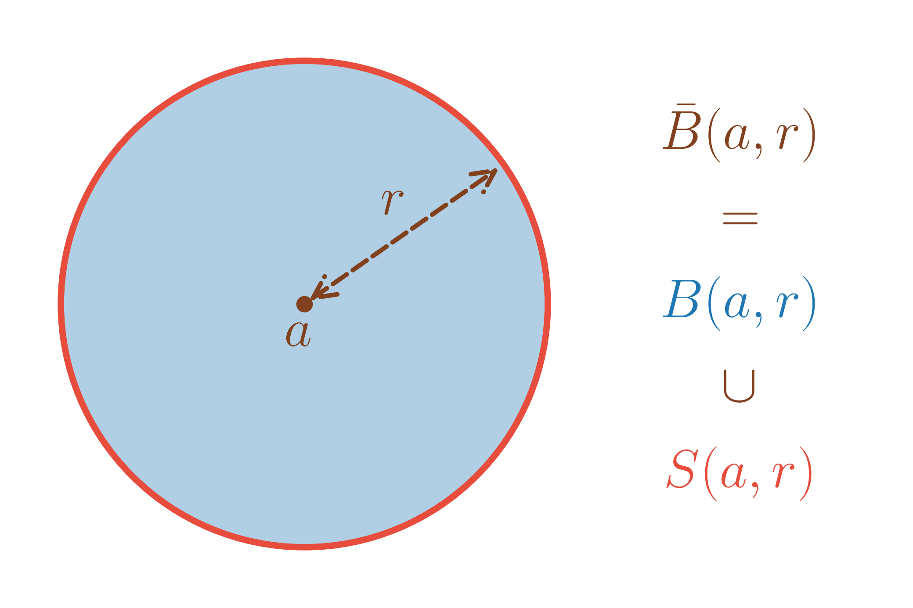
Dans \(\left(\mathbb{R},\left|\cdot\right|\right)\),
\(B(a,r) = ]a-r,a+r[\),
\(\overline{B}(a,r) = [a-r,a+r]\),
\(S(a,r) = \left\{a-r,a+r\right\}.\)
Soit \(\left(E,\left\|\cdot\right\|\right)\) un espace vectoriel normé, \(a \in E\) et \(r \in \mathbb{R}^{+}.\)
\(B(a,r)\) et \(\overline{B}(a,r)\) sont convexes,
\(B(a,r)\), \(\overline{B}(a,r)\) et \(S(a,r)\) sont symétriques pas rapport à leur centre,
Pour \(u \in E\), \(\left\{\begin{array}{ll} B(a,r) +u & = B(a+u,r) \\ \overline{B}(a,r) +u & = \overline{B}(a+u,r) \\ S(a,r) +u & = S(a+u,r) \end{array}\right.\),
Pour \(\lambda \in \mathbb{K}^\star\), \(\left\{\begin{array}{ll} \lambda B(a,r) & = B(\lambda a,\left|\lambda\right| r) \\ \lambda\overline{B}(a,r) & = \overline{B}(\lambda a,\left|\lambda\right| r) \\ \lambda S(a,r) & = S(\lambda a,\left|\lambda\right| r) \end{array}\right.\),
On démontre les résultats pour \(B(a,r)\) mais les preuves s’adaptent exatement en remplaçant \(<\) par \(\leq\) ou \(=\) (excepté pour la convexité pour \(=\)).
Soient \(x,y \in B(a,r)\) et \(\lambda \in [0,1].\) Alors, \[\begin{aligned} \left\|(1-\lambda)x+\lambda y - a\right\| & = \left\|(1-\lambda)x+\lambda y - (1-\lambda+\lambda)a\right\| \\ & = \left\|(1-\lambda)(x-a)+\lambda(y-a)\right\| \\ & \leq \left\|(1-\lambda)(x-a)\right\|+\left\|\lambda(y-a)\right\| \text{ par inégalité triangulaire} \\ & = (\underbrace{1-\lambda}_{\geq 0})\left\|x-a\right\|+\underbrace{\lambda}_{\geq 0}\left\|y-a\right\| \text{ par homogénéité} \\ & < (1-\lambda)r+\lambda r = r \end{aligned}\] donc \((1-\lambda)x+\lambda y \in B(a,r)\) et \(B(a,r)\) est convexe.
Soit \(x \in B(a,r)\), le symétrique de \(x\) par rapport à \(a\) vérifie \(\frac{x+s(x)}{2}=a \iff s(x) = 2a-x.\)
On a donc \(\left\|s(x)-a\right\|=\left\|a-x\right\| < r\) et \(s(x) \in B(a,r).\)
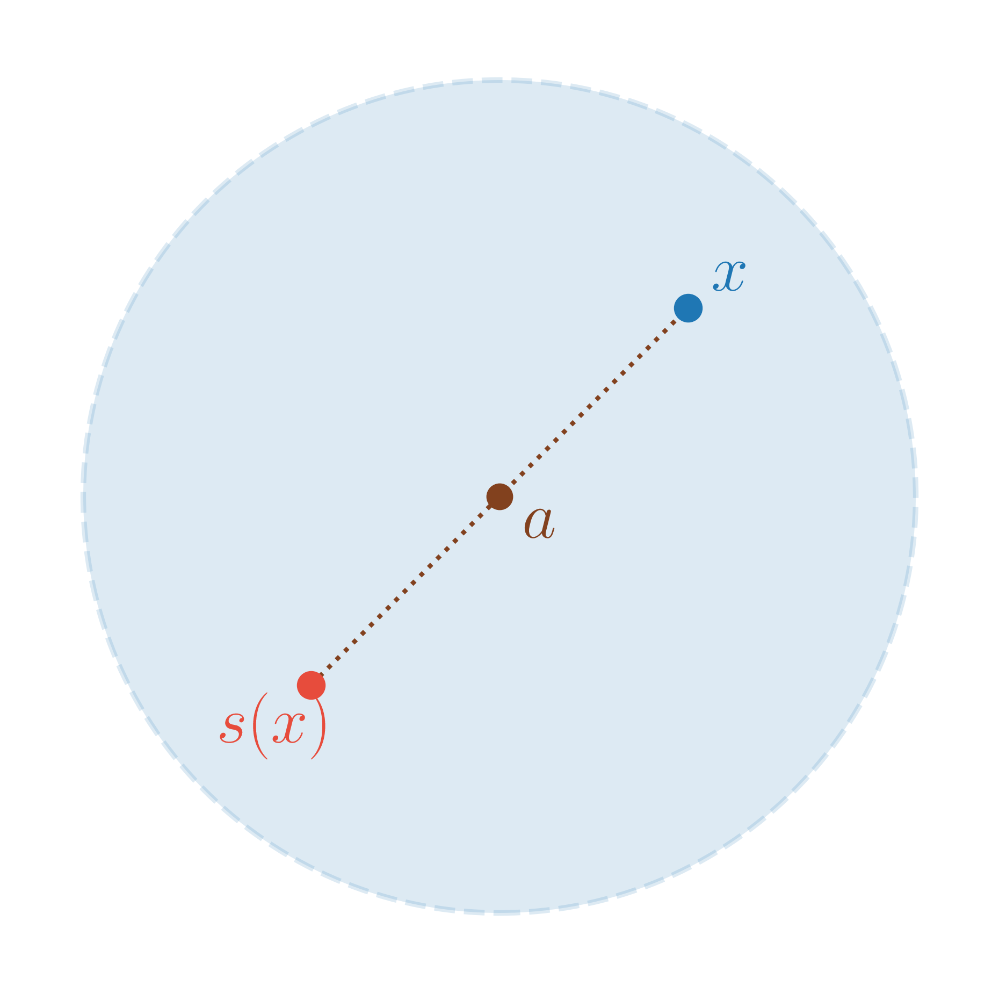
Notons \(B' = B(a,r)+u\) et montrons \(B' = B(a+u,r)\) par double inclusion.
(\(\subset\)) Si \(x \in B'\), il existe \(y \in B(a,r)\) tel que \(x=y+u.\)
On a donc \(\left\|x-(a+u)\right\| = \left\|y-a\right\| < r\) et \(x \in B(a+u,r).\)
(\(\supset\)) Si \(x \in B(a+u,r)\), montrons que \(x-u \in B(a,r).\) On aura ainsi \(x=\underbrace{x-u}_{\in B(a,r)}+u\in B'.\)
On a \(\left\|\left(x-u\right)-a\right\| = \left\|x-\left(u+a\right)\right\| <r\) car \(x \in B(a+u,r).\) Donc \(x-u \in B(a,r)\) et \(x \in B'.\)
Notons \(B' = \lambda B(a,r)\) et montrons \(B' = B(\lambda a,\left|\lambda\right|r)\) par double inclusion.
(\(\subset\)) Si \(x \in B'\), il existe \(y \in B(a,r)\) tel que \(x=\lambda y.\)
On a donc \(\left\|x-\lambda a\right\| = \left\|\lambda(y-a)\right\|=\left|\lambda\right|\left\|y-a\right\| < \left|\lambda\right|r\) et \(x \in B(\lambda a,\left|\lambda\right|r).\)
(\(\supset\)) Si \(x \in B(\lambda a,\left|\lambda\right|r)\), montrons que \(\frac{x}{\lambda} \in B(a,r).\) On aura ainsi \(x=\lambda\underbrace{\tfrac{x}{\lambda}}_{\in B(a,r)}\in B'.\)
On a \(\left\|\frac{x}{\lambda}-a\right\| = \left\|\frac{1}{\lambda}\left(x-\lambda a\right)\right\| = \frac{1}{\left|\lambda\right|}\left\|x-\lambda a\right\| <\frac{1}{\left|\lambda\right|}\left|\lambda\right|r=r\) car \(x \in B(\lambda a,\left|\lambda\right|r).\) Donc \(\tfrac{x}{\lambda} \in B(a,r)\) et \(x \in B'.\)
\(\left\{\begin{array}{ll} B(a,r) & = rB(0,1)+a \\ \overline{B}(a,r) & = r\overline{B}(0,1)+a \\ S(a,r) & = rS(0,1)+a \end{array}\right.\) et \(B(0,1)\) est appelée la boule unité.
Une sphère n’est en général pas convexe comme l’illustre l’exemple \(S(a,r) = \left\{a-r,a+r\right\}\) dans \(\mathbb{R}\) avec \(r > 0.\)
Soit \((E,\left\|\cdot\right\|)\) un espace vectoriel normé et \(A \subset E\) non vide, on définit le diamètre de \(A\) comme \(\mathop{\mathrm{diam}}A = \sup \left\{\left\|x-y\right\|/x,y \in A\right\} \in [0,+\infty].\)
Calculer \(\mathop{\mathrm{diam}}\overline{B}(a,r).\)
Calculer \(\mathop{\mathrm{diam}}S(a,r).\)
Calculer \(\mathop{\mathrm{diam}}B(a,r).\)
Montrons assez naturellement \(\mathop{\mathrm{diam}}\overline{B}(a,r)=\mathop{\mathrm{diam}}B(a,r)=\mathop{\mathrm{diam}}S(a,r) = 2r.\)
D’abord, \(\mathop{\mathrm{diam}}\overline{B}(a,r) = 2r.\)
On a \(\mathop{\mathrm{diam}}\overline{B}(a,r) \leq 2r.\)
En effet, si \(x,y \in \overline{B}(a,r)\), \(\left\|x-y\right\| = \left\|x-a+a-y\right\| \leq \left\|x-a\right\|+\left\|a-y\right\|\leq 2r\) donc \(\mathop{\mathrm{diam}}\overline{B}(a,r)= \sup_{x,y \in \overline{B}(a,r)}\left\|x-y\right\| \leq 2r.\)
On a \(\mathop{\mathrm{diam}}\overline{B}(a,r) \geq 2r.\)
En effet, soit \(u \in E\) tel que \(u \neq 0_E.\)
Alors, \(a\pm r\frac{u}{\left\|u\right\|} \in \overline{B}(a,r)\) car \(\left\|a\pm r\frac{u}{\left\|u\right\|}-a\right\| = \left\|r\frac{u}{\left\|u\right\|}\right\| = r\frac{\left\|u\right\|}{\left\|u\right\|} = r.\)
De plus, en posant \(x = a+r\frac{u}{\left\|u\right\|}\) et \(y = a-r\frac{u}{\left\|u\right\|}\), on a \(\left\|x-y\right\| = \left\|2r\frac{u}{\left\|u\right\|}\right\|=2r.\)
Donc \(\mathop{\mathrm{diam}}\overline{B}(a,r)= \sup_{x,y \in \overline{B}(a,r)}\left\|x-y\right\| \geq 2r.\)
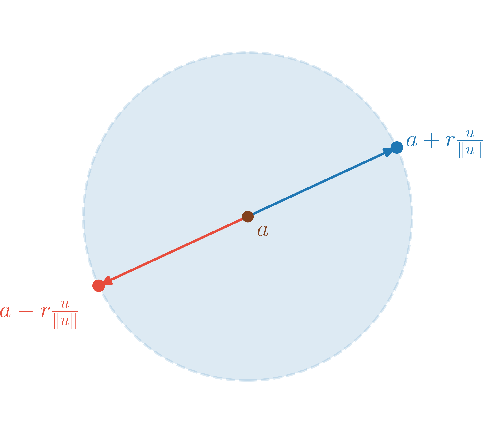
La preuve précédente pour \(\overline{B}(a,r)\) fonctionne exactement pour \(S(a,r).\)
La preuve précédente pour \(\overline{B}(a,r)\) est la même pour obtenir \(\mathop{\mathrm{diam}}B(a,r) \leq 2r.\) En revanche, la deuxième partie ne fonctionne pas pour \(B(a,r)\) car \(a\pm r\frac{u}{\left\|u\right\|} \notin {B}(a,r).\) Remarquons néanmoins que pour \(0 < \varepsilon <r\), \(a\pm (r-\varepsilon)\frac{u}{\left\|u\right\|} \in B(a,r).\)
En posant \(x_{\varepsilon} = a+(r-\varepsilon)\frac{u}{\left\|u\right\|}\) et \(y_\varepsilon = a-(r-\varepsilon)\frac{u}{\left\|u\right\|}\), on a \(\left\|x_\varepsilon-y_\varepsilon\right\| = \left\|2(r-\varepsilon)\frac{u}{\left\|u\right\|}\right\|=2r-\varepsilon.\)
On a donc \(\mathop{\mathrm{diam}}B(a,r)=\sup_{x,y \in B(a,r)}\left\|x-y\right\| \geq 2(r-\varepsilon)\) pour tout \(0 < \varepsilon <r.\) Ce \(\varepsilon\) étant arbitrairement petit, on en déduit bien aussi \(\mathop{\mathrm{diam}}B(a,r) \geq 2r.\)
Traçons l’allure de la boule unité fermée centrée en \(0\) de rayon \(1\) pour quelques normes de \(\mathbb{R}^2\), qui donne l’allure de toute boule par la remarque [rem:boules_Centrees_egal_toutes_boules].
Pour \(\left\|\cdot.\right\|\ _\infty\)
Soit \(\left(x,y\right) \in \mathbb{R}^2\), \[\begin{aligned} \left(x,y\right) \in \overline{B}(0,1) & \iff \left\|(x,y)\right\|_\infty \leq 1 \\ & \iff \max(\left|x\right|,\left|y\right|) \leq 1 \\ & \iff \left\{\begin{array}{ll} \left|x\right| & \leq 1 \\ \left|y\right| & \leq 1 \end{array}\right. \\ & \iff \left\{\begin{array}{l} -1 \leq x \leq 1 \\ -1 \leq y \leq 1 \\ \end{array}\right.. \end{aligned}\] Donc \(\overline{B}(0,1) = [-1,1]\times [-1,1]\) est représentée comme ci-contre.
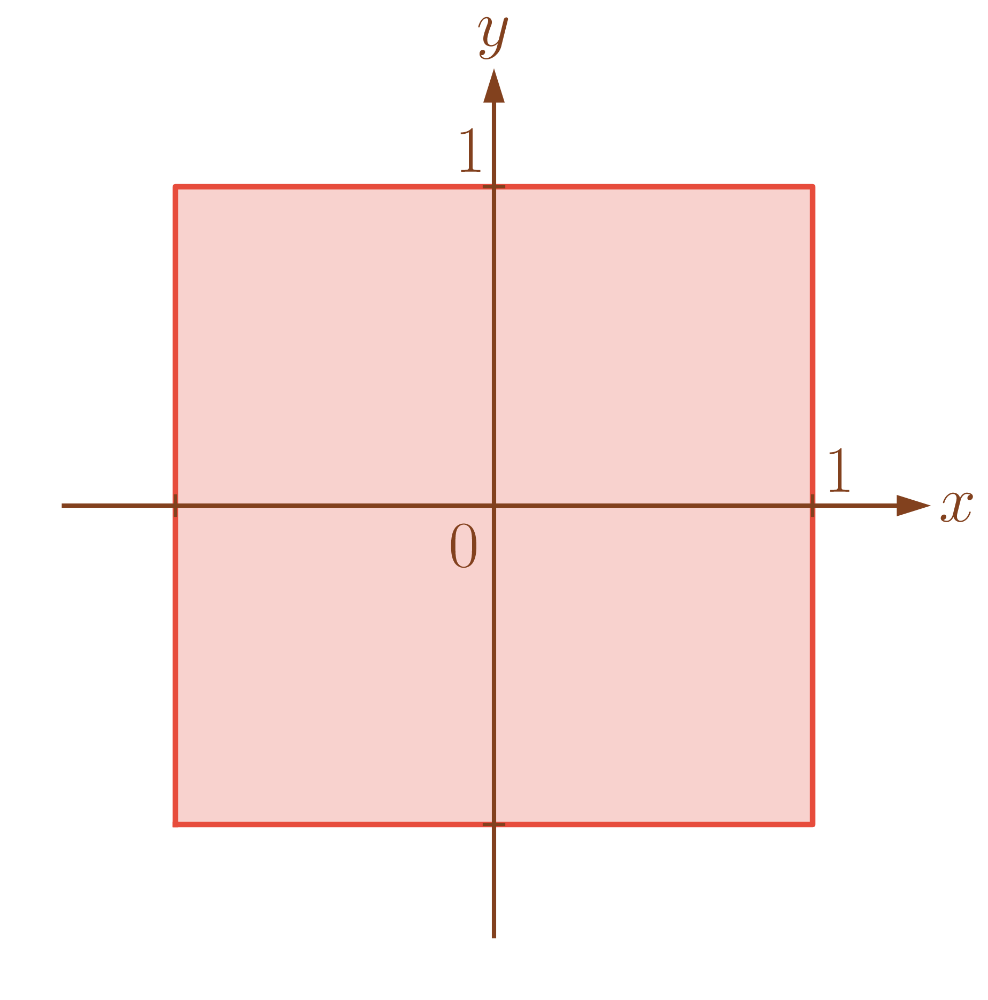
Pour \(\left\|\cdot.\right\|\ _2\)
Soit \(\left(x,y\right) \in \mathbb{R}^2\), \[\begin{aligned} \left(x,y\right) \in \overline{B}(0,1) & \iff \left\|(x,y)\right\|_2 \leq 1 \\ & \iff\sqrt{x^2+y^2} \leq 1 \\ & \iff x^2+y^2 \leq 1. \end{aligned}\] On voit alors que la sphère a l’équation d’un cercle de centre \((0,0)\) et de rayon 1 dans le plan et \(\overline{B}(0,1)\) est représentée comme ci-contre.
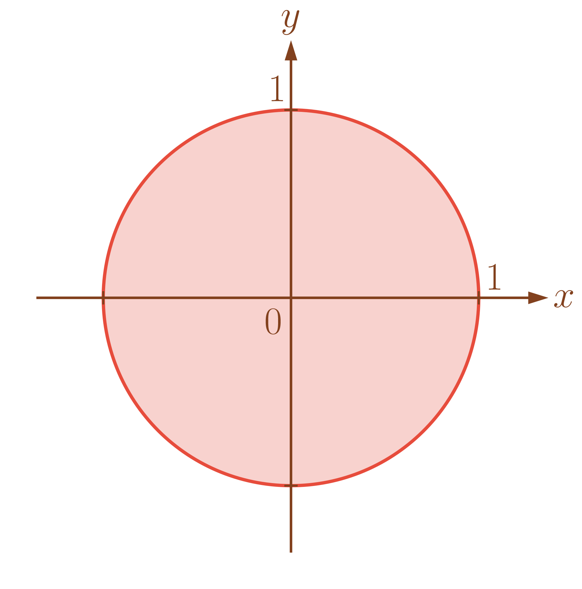
Pour \(\left\|\cdot.\right\|\ _1\)
Soit \(\left(x,y\right) \in \mathbb{R}^2\), \[\begin{aligned} \left(x,y\right) \in \overline{B}(0,1) & \iff \left\|(x,y)\right\|_1 \leq 1 \\ & \iff \left|x\right|+\left|y\right| \leq 1 \\ \end{aligned}\] Dans le quart de plan où \(y \geq 0\) et \(x\geq 0\), l’équation de la sphère vérifie donc \(x+y=1 \iff y=1-x.\) Dans le quart de plan où \(y \leq 0\) et \(x\geq 0\), l’équation de la sphère vérifie donc \(x-y=1 \iff y=x-1.\) Par symétrie, on représente les autres morceaux de la sphère dans les autres quarts de plan et on obtient \(\overline{B}(0,1)\) qui est représentée comme ci-contre.
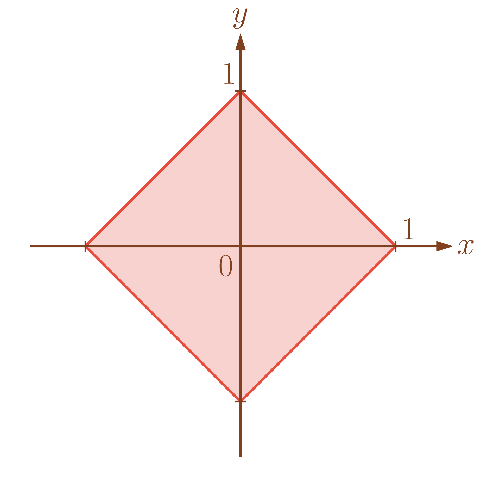
Pour \(\left\|\cdot.\right\|\ _p\)
Pour la culture, voici les sphères associées aux normes \(\left\|\cdot\right\|_p\) définies dans l’exercice [exoc:norme_p] pour \(p > 1.\) Elles se rapprochent de la sphère de la norme \(\left\|\cdot\right\|_\infty\) quand \(p\) augmente. Coïncidence ?
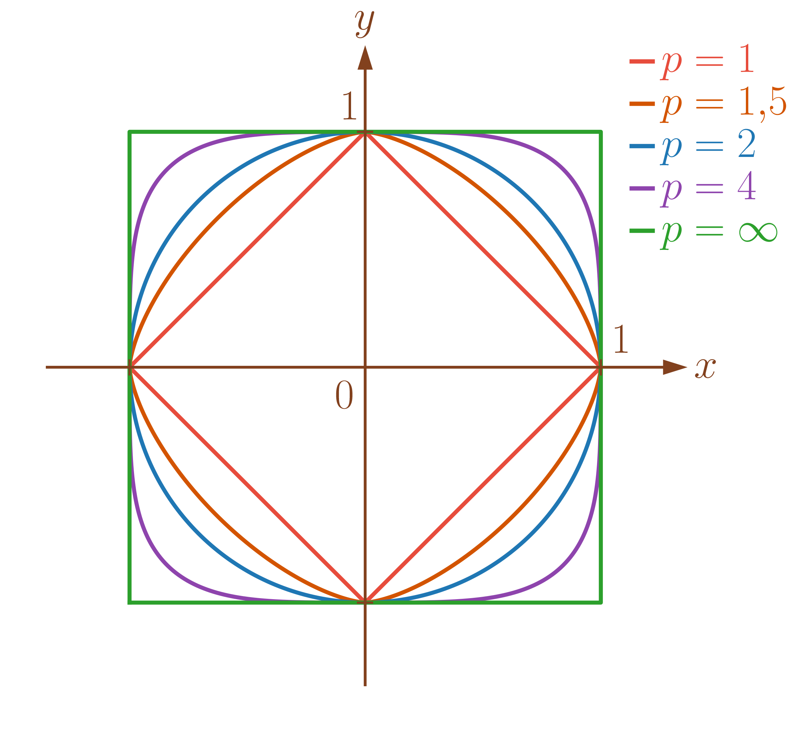
Voici une représentation des boules unités pour \(\left\|\cdot\right\|_1, \left\|\cdot\right\|_2, \left\|\cdot\right\|_\infty\) dans \(\mathbb{R}^3.\)
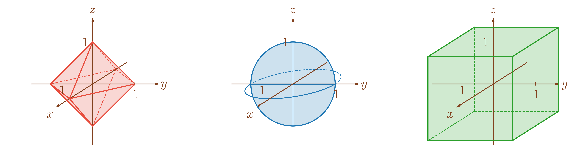
Soient \((E,\left\|\cdot\right\|)\) un espace vectoriel normé et \(A \subset E.\)
On dit que \(A\) est bornée s’il existe \(M \in \mathbb{R}^{+}\) tel que pour tout \(x \in A, \left\|x\right\| \leq M.\)
La définition équivaut à dire que \(\left\{\left\|x\right\|/x \in A\right\}\) est majorée,
Si \(B \subset A\) et \(A\) est bornée alors \(B\) est bornée,
Si \(A\subset E\) et \(B \subset E\) sont bornées alors \(A \cap B\) et \(A\cup B\) sont bornées,
Dans \(\mathbb{R}\), pour rappel, \(A\) bornée \(\iff\) \(A\) minorée et majorée.
Soit \(\left(E,\left\|\cdot\right\|\right)\) un espace vectoriel normé, \(a \in E\) et \(r \in \mathbb{R}^{+}.\) Alors, \(B(a,r)\), \(\overline{B}(a,r)\) et \(S(a,r)\) sont bornées.
\(\forall x \in \overline{B}(a,r)\), \(\left\|x\right\| = \left\|x-a+a\right\| \leq \left\|x-a\right\|+\left\|a\right\| \leq r+\left\|a\right\|\) donc \(\overline{B}(a,r)\) est bornée.
\(B(a,r) \subset \overline{B}(a,r)\) donc \(B(a,r)\) est bornée.
\(S(a,r) \subset \overline{B}(a,r)\) donc \(S(a,r)\) est bornée.
Soient \((E,\left\|\cdot\right\|)\) un espace vectoriel normé, \(X\) un ensemble non vide et \(f\) une fonction de \(X\) dans \(E.\)
On dit que \(f\) est bornée si \(f(X)\) est bornée ie s’il existe \(M\in \mathbb{R}^{+}\) tel que pour tout \(x \in X\), \(\left\|f(x)\right\| \leq M.\)
On note \(\mathscr{B}(X,E)\) l’ensemble des fonctions bornées de \(X\) dans \(E.\)
Pour \(f \in \mathscr{B}(X,E)\), on pose \(\left\|f\right\|_\infty = \sup_{x \in X}\left\|f(x)\right\|.\)
Soient \((E,\left\|\cdot\right\|)\) un espace vectoriel normé et \(X\) un ensemble non vide alors \((\mathscr{B}(X,E),\left\|\cdot\right\|_\infty)\) est un espace vectoriel normé.
D’abord, \(\mathscr{B}(X,E)\) est un espace vectoriel. Montrons que c’est un sous-espace vectoriel des fonctions de \(X\) dans \(E\) \(\mathscr{F}(X,E).\)
\(\begin{array}{lllll} 0 & : & X & \to & E \\ & & x & \mapsto & 0_E \end{array} \in \mathscr{B}(X,E)\) avec \(\left\|0\right\|_\infty = 0.\)
Ensuite, soient \(f,g \in \mathscr{B}(X,E)\) et \(\lambda \in \mathbb{K}\), pour tout \(x \in X\),
\(\left\|(f+\lambda g)(x)\right\| \leq \left\|f(x)\right\|+\left\|\lambda g(x)\right\| \leq \left\|f\right\|_\infty+\left|\lambda\right|\left\|g\right\|_\infty\) donc \(f+\lambda g \in \mathscr{B}(X,E).\)
Ensuite, \(\left\|\cdot\right\|_\infty\) constitue en effet une norme sur \(\mathscr{B}(X,E).\) Soient \(f,g \in \mathscr{B}(X,E)\),
\(\left\|f\right\|_\infty = 0 \Longrightarrow \forall x \in X, \left\|f(x)\right\| = 0 \Longrightarrow f=0\),
Soit \(\lambda \in \mathbb{K}\), pour tout \(x \in X\), \(\sup_{x \in X}\left\|\lambda f(x)\right\| = \sup_{x \in X}\left|\lambda\right|\left\|f(x)\right\| = \underbrace{\left|\lambda\right|}_{\geq 0}\sup_{x \in X}\left\|f(x)\right\| = \left|\lambda\right|\left\|f\right\|_\infty.\)
pour tout \(x \in X\),
\(\left\|(f+ g)(x)\right\| \leq \left\|f(x)\right\|+\left\| g(x)\right\| \leq \left\|f\right\|_\infty+\left\|g\right\|_\infty\) donc \(\left\|f+g\right\|_\infty\leq \left\|f\right\|_\infty+\left\|g\right\|_\infty.\)
Dans le cas particulier où \(X = \mathbb{N}\), on tombe sur les suites \(u=\left(u_n\right)_{n \geq 0}\) à valeurs dans \(E.\)
On note alors \(\ell^\infty(E)\) plutôt que \(\mathscr{B}(\mathbb{N},E)\) et on a alors pour \(u \in \ell^\infty(E)\), \(\left\|u\right\|_{\infty} = \sup_{n \in \mathbb{N}} \left\|u_n\right\|.\)
Soient \((E,\left\|\cdot\right\|)\) un espace vectoriel normé, \(x \in E\) et \(B\) une partie non vide de \(E.\)
On appelle la distance de \(x\) à \(B\), notée \(d(x,B)\), la quantité \(d(x,B) = \inf_{y \in B} \left\|x-y\right\|.\)
Dans \(E = \mathbb{R}\), \(d(1,]3,4[) = 2.\)
\(d(x,B) \in \mathbb{R}^{+}\) car \(\left\{\left\|x-y\right\|/y \in B\right\}\) est minorée par \(0.\)
Si \(x \in B\), \(d(x,B) = 0\) mais la réciproque est fausse. Par exemple, \(d(3,]3,4[) = 0\) mais \(3 \notin ]3,4[.\)
Bien qu’en général, il n’existe pas de \(y\in B\) tel que \(\left\|x-y\right\|=d(x,B)\) (comme l’illustre \(d(1,]3,4[) = 2\)), il existe \(\left(y_n\right)_{n \geq 0}\) suite de \(B\) telle que \(\left\|x-y_n\right\|\xrightarrow[n \to +\infty]{} d(x,B).\)
Par caractérisation de la norme inférieure, pour \(n \in \mathbb{N}\), il existe \(y_n \in B\) tel que \(d(x,B) \leq \left\|x-y_n\right\| < d(x,B)+\frac{1}{n+1}\) et par encadrement de limites, \(\left\|x-y_n\right\|\xrightarrow[n \to +\infty]{} d(x,B).\)
Dans l’exemple \(d(1,]3,4[) = 2\), on peut considérer \(\left(y_n\right)\) tel que \(y_n = 3+\frac{1}{n+1}\) pour \(n \in \mathbb{N}.\)
Soient \((E,\left\|\cdot\right\|)\) un espace vectoriel normé \(A,B\) deux parties de \(E\) non vides.
On définit la distance de \(A\) à \(B\), notée \(d(A,B)\), comme \(d(A,B) = \inf\left\{\left\|x-y\right\|/x\in A, y \in B\right\}.\)
On a \(A \cap B \neq \emptyset \Longrightarrow d(A,B) =0\) mais la réciproque est fausse comme l’illustre dans \(\mathbb{R}\), \(d(]1,2[,]2,3[)=0.\)
Bien qu’en général, il n’existe pas de \(x\in A\) et \(y\in B\) tels que \(\left\|x-y\right\|=d(A,B)\) (comme l’illustre \(d(]1,2[,]2,3[)=0\)), il existe \(\left(x_n\right)_{n \geq 0}\) suite de \(A\) et \(\left(y_n\right)_{n \geq 0}\) suite de \(B\) telles que \(\left\|x_n-y_n\right\|\xrightarrow[n \to +\infty]{} d(A,B).\)
Par caractérisation de la norme inférieure, pour \(n \in \mathbb{N}\), il existe \(x_n \in A\) et \(y_n \in B\) tels que \(d(A,B) \leq \left\|x_n-y_n\right\| < d(A,B)+\frac{1}{n+1}\) et par encadrement de limites, \(\left\|x_n-y_n\right\|\xrightarrow[n \to +\infty]{} d(A,B).\)
Dans l’exemple \(d(]1,2[,]2,3[)=0\), on peut considérer \(\left(x_n\right)\) et \(\left(y_n\right)\) telles que \(x_n = 2-\frac{1}{n+1}\) et \(y_n = 2+\frac{1}{n+1}\) pour \(n \in \mathbb{N}.\)
Soient \((E,\left\|\cdot\right\|)\) un espace vectoriel normé \(A,B\) deux parties de \(E\) non vide. On rappelle que la définition de \(\mathop{\mathrm{diam}}A\) est donnée dans l’exercice [exoc:diametre].
Montrer que \(\mathop{\mathrm{diam}}\left(A \cup B\right) \leq \mathop{\mathrm{diam}}A + \mathop{\mathrm{diam}}B + d(A,B).\)
Soient \(x,y \in A \cup B\),
Soit \(x,y \in A\) et donc \(\left\|x-y\right\| \leq \mathop{\mathrm{diam}}A \leq \mathop{\mathrm{diam}}A + \mathop{\mathrm{diam}}B + d(A,B)\),
Soit \(x,y \in B\) et donc \(\left\|x-y\right\| \leq \mathop{\mathrm{diam}}B \leq \mathop{\mathrm{diam}}A + \mathop{\mathrm{diam}}B + d(A,B)\),
Soit \(x \in A\) et \(y \in B.\) Considérons alors \(\left(a_n\right)\) suite de \(A\) et \(\left(b_n\right)\) suite de \(B\) telles que \(\left\|a_n-b_n\right\|\xrightarrow[n \to +\infty]{} d(A,B).\) On a alors \[\begin{aligned} \left\|x-y\right\| \\ & = \left\|x-a_n+a_n-b_n+b_n-y\right\| \\ & \leq \left\|x-a_n\right\|+\left\|a_n-b_n\right\|+\left\|b_n-y\right\| \\ & \leq \mathop{\mathrm{diam}}A+\left\|a_n-b_n\right\| + \mathop{\mathrm{diam}}B. \end{aligned}\] Puis en passant à la limite quand \(n \longrightarrow +\infty\), on a \(\left\|x-y\right\| \leq \mathop{\mathrm{diam}}A+d(A,B) + \mathop{\mathrm{diam}}B.\)
Soit \(x\in B\) et \(y\in A\) et on peut procéder comme précédemment.
On a donc \(\left\|x-y\right\| \leq \mathop{\mathrm{diam}}A + \mathop{\mathrm{diam}}B + d(A,B)\) pour tout \(x \in A, y \in B\)
et donc \(\mathop{\mathrm{diam}}\left(A\cup B\right) = \sup_{\substack{x \in A \\ y \in B}}\left\|x-y\right\| \leq \mathop{\mathrm{diam}}A + \mathop{\mathrm{diam}}B + d(A,B).\)
Soient \((E_1,N_1),\ldots,(E_p,N_p)\) des espaces vectoriels normés.
Pour \(x= (x_1,\ldots,x_p) \in E_1 \times \ldots \times E_p\), on pose \(\left\|x\right\|_\infty = \max(N_1(x_1),\ldots,N_p(x_p)) \in \mathbb{R}^{+}.\)
Alors, \(\left(E_1 \times \ldots \times E_p, \left\|\cdot\right\|_\infty\right)\) est un espace vectoriel normé.
Soient \(x=(x_1,\ldots,x_p),y=(y_1,\ldots,y_p) \in E_1 \times \ldots \times E_p\)
\(\left\|x\right\|_\infty = 0 \Longrightarrow \forall 1 \leq i \leq p, N_i(x_i) = 0 \Longrightarrow \forall 1 \leq i \leq p, x_i = 0\) donc \(x = 0.\)
Soit \(\lambda \in \mathbb{K}\),
\[\begin{aligned} \left\|\lambda x\right\|_\infty & = \left\|(\lambda x_1,\ldots,\lambda x_p)\right\|_\infty \\ & = \max(N_1(\lambda x_1),\ldots,N_p(\lambda x_p)) \\ & = \max(\left|\lambda\right| N_1(x_1),\ldots,\left|\lambda\right| N_p(x_p)) \\ & = \left|\lambda\right|\max(N_1(x_1),\ldots,N_p(x_p)) \\ & = \left|\lambda\right| \left\|x\right\|_\infty. \end{aligned}\]
Pour tout \(1 \leq i \leq p\), \(N_i(x_i+y_i) \leq N_i(x_i) + N_i(y_i) \leq \left\|x\right\|_\infty + \left\|y\right\|_\infty.\)
Donc
\(\left\|x+y\right\|_\infty = \left\|(x_1+y_1,\ldots,x_p+y_p)\right\|_\infty = \max(N_1(x_1+y_1),\ldots,N_p(x_p+y_p))\leq \left\|x\right\|_\infty + \left\|y\right\|_\infty.\)
Pour \((\mathbb{K},\left|\cdot\right|)\) que l’on répète \(n\) fois, on obtient \(\mathbb{K}^n\) muni de la norme \(\left\|\cdot\right\|_\infty\) définie précédemment.
Soient \((E_1,N_1),\ldots,(E_p,N_p)\) des espaces vectoriels normés, \(E_1 \ldots E_p\) muni de \(\left\|\cdot\right\|_\infty\), \(a=(a_1,\ldots,a_p) \in E_1 \times \ldots \times E_p\) et \(r > 0.\)
Alors, \[\begin{aligned} \overline{B}(a,r) & = \overline{B}(a_1,r) \times \ldots \times \overline{B}(a_p,r), \\ B(a,r) & = B(a_1,r) \times \ldots \times B(a_p,r), \\ S(a,r) & = S(a_1,r) \times \ldots \times S(a_p,r). \end{aligned}\]
On prouve le résultat pour la boule ouverte mais la preuve est identique pour la boule fermée et la sphère. Soit \(x = (x_1,\ldots,x_p) \in E_1 \times \ldots \times E_p\), \[\begin{aligned} x \in B(a,r) & \iff \left\|x-a\right\|_\infty < r \\ & \iff \forall 1 \leq i \leq p, N_i(x_i-a_i) < r \\ & \iff \forall 1 \leq i \leq p, x_i \in B(a_i,r) \\ & \iff x \in B(a_1,r) \times \ldots \times B(a_p,r). \end{aligned}\]
\((\mathcal{A},+,\times,.)\) est une \(\mathbb{K}\)-algèbre si
\((\mathcal{A},+,.)\) est un \(\mathbb{K}\)-espace vectoriel,
\((\mathcal{A},+,\times)\) est un anneau,
Pour tout \(\lambda \in \mathbb{K}\), \(x,y \in \mathcal{A}\), \(\lambda . (x \times y) = (\lambda .x) \times y = x \times (\lambda . y).\)
\(\mathbb{K}\), \(\mathbb{K}[X]\), \(\mathscr{M}_{n}(\mathbb{K})\), \((\mathscr{L}(E),+,\circ,.)\), \(\mathscr{F}(X,\mathbb{K})\) sont des \(\mathbb{K}\)-algèbres.
Soit \((\mathcal{A},+,\times,.)\) une \(\mathbb{K}\)-algèbre, on dit que \(\left\|\cdot\right\|\) est une norme d’algèbre sur \(\mathcal{A}\) si
\(\underbrace{\left\|1\right\|}_{\text{neutre de $\times$}}= 1\),
Pour tout \(x,y \in \mathcal{A}\), \(\left\|x \times y\right\| \leq \left\|x\right\|\left\|y\right\|.\)
\(\left(\mathcal{A},\left\|\cdot\right\|\right)\) est alors appelée une algèbre normée.
On a par récurrence : pour tout \(k \in \mathbb{N}\), \(\left\|x^k\right\| \leq \left\|x\right\|^k.\)
\(\left(\mathscr{B}(X,\mathbb{K}),\left\|\cdot\right\|_\infty\right)\) est une algèbre normée (avec \(\left\|f\right\|_\infty = \sup_{x \in X} \left|f(x)\right|\)). Il suffit de montrer que \(\left\|\cdot\right\|_\infty\) est une norme d’algèbre.
\(\begin{array}{lllll} 1 & : & X & \to & \mathbb{K} \\ & & x & \mapsto & 1 \end{array}\) est le neutre pour \(\times\) et vérifie bien \(\left\|1\right\|_\infty = 1.\)
Soient \(f,g \in \mathscr{B}(X,\mathbb{K})\) et \(x \in X\),
\(\left|f(x)g(x)\right| = \left|f(x)\right|\left|g(x)\right| \leq \left\|f\right\|_\infty \left|g(x)\right| \leq \left\|f\right\|_\infty \left\|g\right\|_\infty.\)
Donc \(\left\|fg\right\|_\infty \leq \left\|f\right\|_\infty \left\|g\right\|_\infty.\)
Soit \(A \subset \mathbb{C}\) bornée et infinie alors en posant \(N(P) = \sup_{z \in A}\left|P(z)\right|\) pour \(P\in \mathbb{C}[X]\), \(N\) est une norme d’algèbre de \(\mathbb{C}[X].\)
Dans \(\mathscr{M}_{n}(\mathbb{K})\), \(\left\|\cdot\right\|_1\) n’est pas une norme d’algèbre (car \(\left\|I_n\right\|_1=n\)) et \(\left\|\cdot\right\|_2\) n’est pas une norme d’algèbre (car \(\left\|I_n\right\|_2=\sqrt{n}\)).
\(\left\|\cdot\right\|_\infty\) n’est pas non plus une norme d’algèbre car avec \(A=B= \begin{pmatrix} 1 & 1 \\ 1 & 1 \end{pmatrix}\), on a \(AB = \begin{pmatrix} 2 & 2 \\ 2 & 2 \end{pmatrix}\) donc \(\left\|AB\right\|_\infty = 2 > 1= \left\|A\right\|_\infty\left\|B\right\|_\infty.\)
Soit \(\mathcal{A}\) une algèbre et \(\left\|\cdot\right\|\) une norme sur \(\mathcal{A}.\) On pose, pour \(x \in \mathcal{A}\), \(N(x) = \sup_{\substack{z \in \mathcal{A}\\ z\neq 0}} \frac{\left\|x \times z\right\|}{\left\|z\right\|}\)
Montrer que \(N\) est une norme d’algèbre.
On a alors l’existence d’une norme d’algèbre sur toute \(\mathbb{K}\)-algèbre normée (en particulier pour les \(\mathbb{K}\)-algèbre de dimension finie).
D’abord, montrons que \(N\) est une norme. Soient \(x,y \in \mathcal{A}\),
Si \(N(x) = 0\), on a \(\left\|x\right\| =\frac{\left\|x \times 1\right\|}{\left\|1\right\|}\left\|1\right\| \leq N(x) \left\|1\right\| = 0\) donc \(x=0.\)
Soit \(\lambda \in \mathbb{K}\),
\(N(\lambda x) = \sup_{\substack{z \in \mathcal{A}\\ z\neq 0}} \frac{\left\| \lambda x \times z\right\|}{\left\|z\right\|}= \sup_{\substack{z \in \mathcal{A}\\ z\neq 0}} \frac{\left|\lambda\right| \left\|x \times z\right\|}{\left\|z\right\|}=\left|\lambda\right| \sup_{\substack{z \in \mathcal{A}\\ z\neq 0}} \frac{\left\|x \times z\right\|}{\left\|z\right\|} = \left|\lambda\right| N(x).\)
Soit \(z \in \mathcal{A}\setminus \left\{0\right\}\),
\(\frac{\left\|(x+y) \times z\right\|}{\left\|z\right\|} = \frac{\left\|x \times z+y \times z\right\|}{\left\|z\right\|} \leq \frac{\left\|x \times z\right\|}{\left\|z\right\|}+\frac{\left\|y \times z\right\|}{\left\|z\right\|} \leq N(x)+N(y).\)
Donc \(N(x+y) \leq N(x)+N(y).\)
Ensuite, montrons que \(N\) est une norme d’algèbre.
\(N(1) = \sup_{\substack{z \in \mathcal{A}\\ z\neq 0}} \frac{\left\|1 \times z\right\|}{\left\|z\right\|}=\sup_{\substack{z \in \mathcal{A}\\ z\neq 0}} \frac{\left\|z\right\|}{\left\|z\right\|}=1\),
Soient \(x,y,z \in \mathcal{A}\),
Si \(y \times z = 0\),
\(\frac{\left\|(x\times y) \times z\right\|}{\left\|z\right\|} = \frac{\left\|x\times ( y \times z)\right\|}{\left\|z\right\|} = 0 \leq N(x)N(y).\)
Si \(y \times z \neq 0\),
\(\frac{\left\|(x\times y) \times z\right\|}{\left\|z\right\|} = \frac{\left\|x\times ( y \times z)\right\|}{\left\|y \times z\right\|}\frac{\left\|y \times z\right\|}{\left\|z\right\|}\leq N(x) N(y).\)
Donc \(N(x \times y) = \sup_{\substack{z \in \mathcal{A}\\ z\neq 0}} \frac{\left\|(x\times y) \times z\right\|}{\left\|z\right\|}\leq N(x)N(y).\)
Soient \((E,\left\|\cdot\right\|)\) un espace vectoriel normé, \(\left(u_n\right)\) une suite de \(E\) ainsi que \(\ell \in E.\)
On dit que \(\left(u_n\right)\) tend vers \(\ell\) si \(\left\|u_n-\ell\right\| \xrightarrow[n \to +\infty]{} 0\)
ie \[\forall \varepsilon > 0, \exists N \in \mathbb{N}/ \forall n \geq N, \left\|u_n-\ell\right\| \leq \varepsilon.\]
On note alors \(u_n \xrightarrow[n \to +\infty]{} \ell\) ou \(u_n \xrightarrow[n \to +\infty]{\left\|\cdot\right\|} \ell.\)
Soient \((E,\left\|\cdot\right\|)\) un espace vectoriel normé et \(\left(u_n\right)\) une suite de \(E\) telle que \(u_n \xrightarrow[n \to +\infty]{} \ell\) alors \(\ell\) est unique. \(\ell\) est alors appelé la limite de la suite \(\left(u_n\right).\)
Par l’absurde, supposons que \(u_n \xrightarrow[n \to +\infty]{} \ell \in E\) et \(u_n \xrightarrow[n \to +\infty]{} \ell' \in E\) avec \(\ell \neq \ell'.\)
On a donc \(\varepsilon = \frac{\left\|\ell-\ell'\right\|}{4} > 0.\)
Il existe donc \(N \in \mathbb{N}\) tel que pour tout \(n \geq N, \left\|u_n-\ell\right\| \leq \varepsilon\) et \(N' \in \mathbb{N}\) tel que pour tout \(n \geq N', \left\|u_n-\ell'\right\| \leq \varepsilon.\)
Avec \(n = \max(N,N')\), on a donc \(\left\|\ell-\ell'\right\| = \left\|\ell-u_n+u_n-\ell'\right\| \leq \left\|\ell-u_n\right\|+\left\|u_n-\ell'\right\| \leq 2\varepsilon = \frac{\left\|\ell-\ell'\right\|}{2}\), ce qui est absurde pour \(\left\|\ell-\ell'\right\| > 0.\)
Soient \((E,\left\|\cdot\right\|)\) un espace vectoriel normé et \(\left(u_n\right)\) une suite de \(E.\) On dit que \(\left(u_n\right)\) converge si elle admet une limite dans \(E.\)
\(u_n \xrightarrow[n \to +\infty]{} 0 \iff \left\|u_n\right\| \xrightarrow[n \to +\infty]{} 0\),
Si \(\left\|u_n-\ell\right\| \leq \alpha_n\) avec \(\left(\alpha_n\right)\) suite de \(\mathbb{R}\) telle que \(\alpha_n \xrightarrow[n \to +\infty]{} 0\) alors \(u_n \xrightarrow[n \to +\infty]{} 0.\)
Soit \(\alpha > 0\), si pour tout \(\varepsilon > 0\), il existe \(N \in \mathbb{N}\) tel que pour tout \(n \geq N, \left\|u_n-\ell\right\| \leq \alpha\varepsilon\) alors \(u_n \xrightarrow[n \to +\infty]{} \ell.\)
Il faut être conscient que la limite d’une suite d’un espace vectoriel dépend de la norme considérée. Dans \(E = \mathscr{C}(\left[0,1\right],\mathbb{R})\), considérons la suite \(\left(f_n\right)_{n\geq 0}\) telle que pour tout \(n \geq 0\), \(\begin{array}{lllll} f_n & : & [0,1] & \to & \mathbb{R} \\ & & t & \mapsto & t^n \end{array} .\)
Pour \(\mathbf{\left\|\cdot\right\|_1}\),
Pour tout \(n \in \mathbb{N}\), \(\left\|f_n\right\|_1 = \int_0^1 t^n dt = \left[\frac{1}{n+1}t^{n+1}\right]_0^1 = \frac{1}{n+1} \xrightarrow[n \to +\infty]{} 0.\)
On peut alors écrire, pour éviter toute ambiguïté, \(f_n \xrightarrow[n \to +\infty]{\left\|\cdot\right\|_1} 0.\)
Pour \(\mathbf{\left\|\cdot\right\|_2}\),
Pour tout \(n \in \mathbb{N}\), \(\left\|f_n\right\|_2 = \sqrt{\int_0^1 t^{2n} dt} = \sqrt{\left[\frac{1}{2n+1}t^{2n+1}\right]_0^1} = \frac{1}{\sqrt{2n+1}} \xrightarrow[n \to +\infty]{} 0.\)
On a donc \(f_n \xrightarrow[n \to +\infty]{\left\|\cdot\right\|_2} 0.\)
Pour \(\mathbf{\left\|\cdot\right\|_\infty}\),
Pour tout \(n \geq 0\), on a \(\left\|f_n\right\|_\infty= 1\) (car pour \(t \in [0,1]\), \(\left|f_n(t)\right| \leq f_n(1)=1\)) et donc on a \(f_n \centernot{\xrightarrow[n \to +\infty]{\left\|\cdot\right\|_\infty}} 0.\)
Plus fort, montrons qu’il n’existe pas \(f \in E\) telle que \(f_n \xrightarrow[n \to +\infty]{\left\|\cdot\right\|_\infty} f.\)
Par l’absurde, si c’était le cas, on aurait \[\left\|f_n-f\right\|_1 = \int_0^1 \left|f_n(t)-f(t)\right|dt \leq \int_0^1 \left\|f_n-f\right\|_\infty dt = \left\|f_n-f\right\|_\infty \xrightarrow[n \to +\infty]{} 0.\]
Par unicité de la limite dans \(E\), cela impose \(f=0\), ce qui est absurde car comme montré précédemment, \(\left\|f_n\right\| = 1\) pour tout \(n\in \mathbb{N}.\)
On comprend en traçant le graphe des fonctions \(f_n\) que leur intégrale va tendre vers \(0\) (l’aire entre la courbe et l’axe des abscisses) mais que la borne supérieure reste constante égale à \(1\) et ne tend donc pas vers \(0.\)
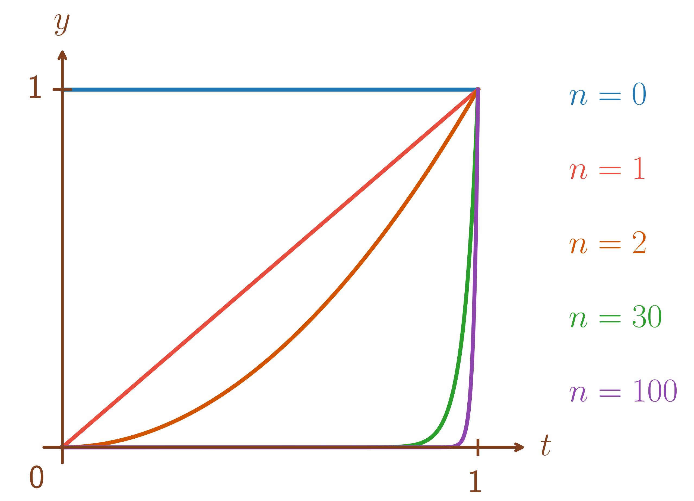
On pourrait se demander si en introduisant \(\begin{array}{lllll} f & : & [0,1] & \to & \mathbb{R} \\ & & x & \mapsto & \left\{\begin{array}{ll} 0 & \mbox{ si $x < 1$}, \\ 1 & \mbox{sinon.} \end{array}\right. \end{array}\), on a \(\left\|f_n-f\right\|_\infty \xrightarrow[n \to +\infty]{} 0\) mais dans \(E' = \mathscr{C}_{\mathrm{m}}([0,1],\mathbb{R})\) normé par \(\left\|\cdot\right\|_\infty\) car \(f \notin E.\)
Mais toujours pas, car on a \(\left\|f_n-f\right\|_\infty = \sup_{t \in [0,1]}\left|f_n(t)-f(t)\right| = \sup_{t \in [0,1[} t^n = 1 \centernot{\xrightarrow[n \to +\infty]{}} 0.\)
Soient \((E,\left\|\cdot\right\|)\) un espace vectoriel normé et \(\left(u_n\right)\) une suite de \(E\) telle que \(\left(u_n\right)\) converge.
Alors, \(\left(u_n\right)\) est bornée.
Notons \(\ell \in E\) la limite de \(\left(u_n\right).\) Avec \(\varepsilon = 1\), il existe \(N \geq 0\) tel que pour tout \(n \geq N\), \(\left\|u_n-\ell\right\| \leq 1 \Longrightarrow \left\|u_n\right\| = \left\|u_n-\ell+\ell\right\| \leq 1+\left\|\ell\right\|.\)
Alors, pour tout \(n \geq 0\), \(\left\|u_n\right\| \leq \max{\left(\left\|\ell\right\|+1,\left\|u_0\right\|,\ldots,\left\|u_{N-1}\right\|\right)}\)
La réciproque est fausse comme l’illustre \(\left(u_n\right)\) telle que \(u_n = \left(-1\right)^n\) pour \(n \in \mathbb{N}\),
Si une suite est bornée à partir d’un certain rang, elle est bornée.
Soient \((E,\left\|\cdot\right\|)\) un espace vectoriel normé et \(\left(u_n\right)\) une suite de \(E\) telle que \(u_n \xrightarrow[n \to +\infty]{} \ell \in E.\)
Alors \(\left\|u_n\right\| \xrightarrow[n \to +\infty]{} \left\|\ell\right\|.\)
Par la proposition [prop:inegalite_triangulaire_inverse], on a pour tout \(n \geq 0\), \[\left|\left\|u_n\right\|-\left\|\ell\right\|\right| \leq \left\|u_n-\ell\right\| \xrightarrow[n \to +\infty]{} 0.\]
La réciproque est seulement vraie pour \(\ell=0.\)
Soient \((E,\left\|\cdot\right\|)\) un espace vectoriel normé, \(\left(u_n\right)\) une suite de \(E\) telle que \(u_n \xrightarrow[n \to +\infty]{} \ell \in E\) et \(\left(v_n\right)\) une suite de \(E\) telle que \(v_n \xrightarrow[n \to +\infty]{} \ell' \in E.\)
Alors, pour tout \(\lambda, \mu \in \mathbb{K}\), \[\lambda u_n + \mu v_n \xrightarrow[n \to +\infty]{} \lambda\ell+\mu\ell'.\]
Pour tout \(n \in \mathbb{N}\), \[\begin{aligned} \left\|\lambda u_n + \mu v_n-\left(\lambda\ell+\mu\ell'\right)\right\| & = \left\|\lambda\left(u_n-\ell\right)+\mu\left(v_n-\ell'\right)\right\| \\ & \leq \left|\lambda\right|\underbrace{\left\|u_n-\ell\right\|}_{\xrightarrow[n \to +\infty]{} 0}+\left|\mu\right|\underbrace{\left\|v_n-\ell'\right\|}_{\xrightarrow[n \to +\infty]{} 0} \xrightarrow[n \to +\infty]{} 0 \end{aligned}\]
Si \(E = \mathbb{K}\) et soient \(\left(u_n\right)\) et \(\left(v_n\right)\) deux suites de \(\mathbb{K}.\)
Si \(u_n \xrightarrow[n \to +\infty]{} \ell \in \mathbb{K}\) et \(v_n \xrightarrow[n \to +\infty]{} \ell' \in \mathbb{K}\), \(u_nv_n \xrightarrow[n \to +\infty]{} \ell\ell'.\)
Si \(u_n \xrightarrow[n \to +\infty]{} \ell \in \mathbb{K}\) avec \(\ell \neq 0\), il existe un certain rang \(N\) tel que \(u_n \neq 0\) pour tout \(n \geq N\) et \(\frac{1}{u_n} \xrightarrow[n \to +\infty]{} \frac{1}{\ell}.\)
Si \(u_n \xrightarrow[n \to +\infty]{} 0\) et \(\left(v_n\right)\) est bornée, alors \(u_n v_n \xrightarrow[n \to +\infty]{} 0.\)
\(v = (v_n)\) est convergente donc bornée et \(\left\|v\right\|_\infty = \sup_{n \in \mathbb{N}} \left|v_n\right| < +\infty.\) Pour \(n \in \mathbb{N}\),
\[\begin{aligned} |u_nv_n-\ell\ell'| & = |u_nv_n-\ell v_n + \ell v_n-\ell\ell'| \\ & = |(u_n-\ell)v_n + \ell(v_n-\ell')| \\ & \leq |v_n| |u_n-\ell|+|\ell||v_n-\ell'| \\ & \leq \left\|v\right\|_\infty \underbrace{|u_n-\ell|}_{\xrightarrow[n \to +\infty]{} 0}+|\ell|\underbrace{|v_n-\ell'|}_{\xrightarrow[n \to +\infty]{} 0} \xrightarrow[n \to +\infty]{}0 \end{aligned}\]
Donc \(u_nv_n \underset{n \rightarrow+\infty}{\longrightarrow} \ell\ell.\)
\(u = (u_n)\) est convergente donc bornée et \(\left\|u\right\|_\infty = \sup_{n \in \mathbb{N}} \left|u_n\right| < +\infty.\) Soit \(\alpha = \frac{\left|\ell\right|}{2} > 0\), il existe \(N \geq 0\) tel que pour tout \(n \geq N\), \(|u_n-\ell| \leq \alpha.\)
Or, par la proposition [prop:inegalite_triangulaire_inverse], \(\left|\ell\right|-\left|u_n\right| \leq \left|u_n-\ell\right| \Longrightarrow \left|u_n\right| \geq \left|\ell\right|-\left|u_n-\ell\right|\) donc pour \(n \geq N\), \[\left|u_n\right| \geq \left|\ell\right|-\alpha = \frac{\left|\ell\right|}{2} > 0.\] De plus, pour \(n \geq N\), \[\left|\frac{1}{u_n}-\frac{1}{\ell}\right| = \frac{|u_n-\ell|}{|\ell u_n|} \leq \frac{|u_n-\ell|}{\left\|u\right\|_\infty \ell} = \frac{1}{\left\|u\right\|_\infty \ell}\underbrace{|u_n-\ell|}_{\xrightarrow[n \to +\infty]{} 0} \xrightarrow[n \to +\infty]{} 0.\]
Donc \(\frac{1}{u_n} \xrightarrow[n \to +\infty]{} \frac{1}{\ell}.\)
\(v = (v_n)\) est bornée donc \(\left\|v\right\|_\infty = \sup_{n \in \mathbb{N}} \left|v_n\right| < +\infty.\) Pour tout \(n \in \mathbb{N}\), \[|u_nv_n| \leq \underbrace{\left|u_n\right|}_{\xrightarrow[n \to +\infty]{} 0}\left\|v\right\|_\infty \xrightarrow[n \to +\infty]{} 0\] donc \((u_nv_n)\) tend vers \(0.\)
Soient \((E,\left\|\cdot\right\|)\) un espace vectoriel normé, \(\left(u_n\right)\) une suite de \(E\) telle que \(u_n \xrightarrow[n \to +\infty]{} \ell \in E\) et \(\left(\lambda_n\right)\) une suite de \(\mathbb{K}\) telle que \(\lambda_n \xrightarrow[n \to +\infty]{} \lambda \in \mathbb{K}.\)
Alors, \(\lambda_n u_n \xrightarrow[n \to +\infty]{} \lambda \ell \in E.\)
\((\lambda_n)\) est convergente donc bornée et \(\left\|\lambda\right\|_\infty = \sup_{n \in \mathbb{N}} \left|\lambda_n\right| < +\infty.\) Pour \(n \in \mathbb{N}\),
\[\begin{aligned} \left\|\lambda_nu_n-\lambda\ell\right\| & = \left\|\lambda_nu_n-\lambda_n\ell +\lambda_n\ell-\lambda\ell\right\| \\ & = \left\|\lambda_n(u_n-\ell) + (\lambda_n-\lambda)\ell\right\| \\ & \leq |\lambda_n| \left\|u_n-\ell\right\|+|\lambda_n-\lambda|\left\|\ell\right\| \\ & \leq\left\|\lambda\right\|_\infty \underbrace{\left\|u_n-\ell\right\|}_{\xrightarrow[n \to +\infty]{} 0}+\underbrace{|\lambda_n-\lambda|}_{\xrightarrow[n \to +\infty]{} 0}\left\|\ell\right\| \xrightarrow[n \to +\infty]{}0. \end{aligned}\]
Soient \((E,\langle \cdot, \cdot \rangle)\) un espace préhilbertien (normé par sa norme préhilbertienne), \(\left(u_n\right)\) une suite de \(E\) telle que \(u_n \xrightarrow[n \to +\infty]{} \ell \in E\) et \(\left(v_n\right)\) une suite de \(E\) telle que \(v_n \xrightarrow[n \to +\infty]{} \ell' \in E.\)
Alors \(\langle u_n,v_n \rangle \xrightarrow[n \to +\infty]{} \langle \ell, \ell' \rangle.\)
\(v = (v_n)\) est convergente donc bornée et \(\left\|v\right\|_\infty = \sup_{n \in \mathbb{N}} \left\|v_n\right\| < +\infty.\) \[\begin{aligned} \left|\langle u_n,v_n \rangle -\langle \ell, \ell' \rangle\right| & = \left|\langle u_n-\ell+\ell,v_n \rangle -\langle \ell, \ell' \rangle\right| \\ & = \left|\langle u_n-\ell,v_n \rangle+\langle \ell, v_n \rangle -\langle \ell, \ell' \rangle\right| \\ & = \left|\langle u_n-\ell,v_n \rangle+\langle \ell, v_n-\ell' \rangle\right| \\ & \leq \left|\langle u_n-\ell,v_n \rangle\right|+\left|\langle \ell, v_n-\ell' \rangle\right| \\ & \leq\left\|u_n-\ell\right\|\left\|v_n\right\|+\left\|\ell\right\|\left\|v_n-\ell'\right\|\text{ par Cauchy-Schwarz} \\ & \leq \underbrace{\left\|u_n-\ell\right\|}_{\xrightarrow[n \to +\infty]{} 0}\left\|v\right\|_\infty+\left\|\ell\right\|\underbrace{\left\|v_n-\ell'\right\|}_{\xrightarrow[n \to +\infty]{} 0} \xrightarrow[n \to +\infty]{} 0. \end{aligned}\]
(Théorème de Césaro) Soient \((E,\left\|\cdot\right\|)\) un espace vectoriel normé, \(\left(u_n\right)\) une suite de \(E\) telle que \(u_n \xrightarrow[n \to +\infty]{} \ell \in E\) et \(\left(\alpha_n\right)\) une suite de réels positifs tels que \(\alpha_0+\ldots+\alpha_n = \sum_{k=0}^n \alpha_k \xrightarrow[n \to +\infty]{} +\infty\) (ie la série \(\sum \alpha_n\) diverge).
Alors, \[\frac{\alpha_0u_0+\ldots+\alpha_n u_n}{\alpha_0+\ldots+\alpha_n} = \frac{\sum_{k=0}^n \alpha_k u_k}{\sum_{k=0}^n \alpha_k} \xrightarrow[n \to +\infty]{} \ell.\]
Soit \(n \in \mathbb{N}\), \[\left\|\frac{\sum_{k=0}^n \alpha_k u_k}{\sum_{k=0}^n \alpha_k}-\ell\right\| = \left\|\frac{\sum_{k=0}^n \alpha_k u_k- \ell\left(\sum_{k=0}^n \alpha_k\right)}{\sum_{k=0}^n \alpha_k}\right\| = \left\|\frac{\sum_{k=0}^n \alpha_k (u_k- \ell)}{\sum_{k=0}^n \alpha_k}\right\|.\] Or, soit \(\varepsilon > 0\), il existe \(N \in \mathbb{N}\) tel que pour tout \(n \geq N, \left\|u_n-\ell\right\| \leq \varepsilon.\) On a donc pour \(n \geq N\), \[\begin{aligned} \left\|\frac{\sum_{k=0}^n \alpha_k u_k}{\sum_{k=0}^n \alpha_k}-\ell\right\| & = \left\|\frac{\sum_{k=0}^{N-1} \alpha_k (u_k- \ell)+\sum_{k=N}^{N-1} \alpha_k (u_k- \ell)}{\sum_{k=0}^n \alpha_k}\right\| \\ & \leq \frac{\sum_{k=0}^{N-1} \alpha_k \left\|u_k- \ell\right\|}{\sum_{k=0}^n \alpha_k}+\frac{\sum_{k=N}^{n} \alpha_k \left\|u_k- \ell\right\|}{\sum_{k=0}^n \alpha_k} \\ & \leq \left(\sum_{k=0}^{N-1} \alpha_k \left\|u_k- \ell\right\|\right)\frac{1}{\sum_{k=0}^n \alpha_k}+\frac{\sum_{k=N}^{n} \alpha_k \varepsilon}{\sum_{k=0}^n \alpha_k} \\ & = \left(\sum_{k=0}^{N-1} \alpha_k \left\|u_k- \ell\right\|\right)\frac{1}{\sum_{k=0}^n \alpha_k}+\underbrace{\frac{\sum_{k=N}^{n} \alpha_k}{\sum_{k=0}^n \alpha_k}}_{\leq 1}\varepsilon \\ & \leq \left(\sum_{k=0}^{N-1} \alpha_k \left\|u_k- \ell\right\|\right)\frac{1}{\sum_{k=0}^n \alpha_k}+\varepsilon. \end{aligned}\]
Or, \(\sum_{k=0}^n \alpha_k \xrightarrow[n \to +\infty]{} +\infty\) donc \(\frac{1}{\sum_{k=0}^n \alpha_k } \xrightarrow[n \to +\infty]{} 0.\)
Il existe donc \(N' \geq N\) tel que pour tout \(n \geq N'\), \(\frac{1}{\sum_{k=0}^n \alpha_k } \leq \varepsilon\) et \[\begin{aligned} \left\|\frac{\sum_{k=0}^n \alpha_k u_k}{\sum_{k=0}^n \alpha_k}-\ell\right\| & \leq \left(\sum_{k=0}^{N-1} \alpha_k \left\|u_k- \ell\right\|\right)\varepsilon+\varepsilon = C\varepsilon \text{ avec }C = \left(\sum_{k=0}^{N-1} \alpha_k \left\|u_k- \ell\right\|\right)+1, \end{aligned}\] ce qui prouve \[\frac{\sum_{k=0}^n \alpha_k u_k}{\sum_{k=0}^n \alpha_k} \xrightarrow[n \to +\infty]{} \ell.\]
Avec \(\left(\alpha_n\right)\) la suite constante égale à \(1\), on retrouve \(\frac{1}{n+1}\sum_{k=0}^n u_k \xrightarrow[n \to +\infty]{} \ell.\)
Soient \((E,\left\|\cdot\right\|)\) un espace vectoriel normé et \(\left(u_n\right)\) une suite de \(E\) telle que \(u_n \xrightarrow[n \to +\infty]{} \ell \in E.\)
Déterminer la limite de \(\left(v_n\right)\) définie par \(v_n = \frac{\sum_{k=0}^n k^3u_k}{n^4}\) pour \(n \in \mathbb{N}^{\star}.\)
Pour \(n \in \mathbb{N}^{\star}\), \[v_n = \frac{\sum_{k=0}^n k^3u_k}{\sum_{k=0}^n k^3}\frac{\sum_{k=0}^n k^3}{n^4}.\]
Or, par théorème de Césaro, \(\frac{\sum_{k=0}^n k^3u_k}{\sum_{k=0}^n k^3} \xrightarrow[n \to +\infty]{} \ell.\)
De plus, on reconnaît une somme de Riemann telle que \[\frac{\sum_{k=0}^n k^3}{n^4} = \frac{1}{n}\sum_{k=0}^n \left(\frac{k}{n}\right)^3 \xrightarrow[n \to +\infty]{} \int_0^1 x^3dx = \left[\frac{1}{4}x^4\right]_0^1=\frac{1}{4}.\]
Donc \(v_n \xrightarrow[n \to +\infty]{} \frac{\ell}{4}.\)
Soit \(z \in \mathbb{C}.\)
Etudier la convergence de \(\left(z^n\right)\) en fonction de \(z.\)
Etudier la convergence de \(\left(\frac{1+z+\ldots+z^n}{n+1}\right)\) en fonction de \(z.\)
On a \(\left(z^n\right)\) converge \(\iff\) \(\left|z\right| < 1\) ou \(z=1.\)
Si \(\left|z\right| < 1\), pour \(n\in \mathbb{N}\), \(\left|z^n\right| = \left|z\right|^n = e^{n \underbrace{\ln(\left|z\right|)}_{<0}}.\) Or, \(e^x \xrightarrow[x \to -\infty]{} 0\) donc \(\left|z^n\right| \xrightarrow[n \to +\infty]{} 0\) puis \(z^n \xrightarrow[n \to +\infty]{} 0.\)
Si \(\left|z\right| > 1\), pour \(n \in \mathbb{N}\), \(\left|z\right|^n = e^{n\underbrace{\ln(\left|z\right|)}_{> 0}}.\) Or, \(e^x \xrightarrow[x \to +\infty]{} +\infty\) donc \(\left(z^n\right)\) n’est pas bornée et ne converge donc pas.
Si \(z = 1\), \(\left(z^n\right)\) est la suite constante égale à \(1\) qui tend vers \(1.\)
Si \(\left|z\right| = 1\) et \(z\neq 1.\)
Par l’absurde, s’il existe \(\ell \in \mathbb{C}\) telle que \(z^n \xrightarrow[n \to +\infty]{} \ell.\)
Alors, \(z^{n+1} \xrightarrow[n \to +\infty]{} \ell\) et \(zz^{n} \xrightarrow[n \to +\infty]{} z\ell\) donc par unicité de la limite, \(\ell = z\ell \iff \ell(1-z) = 0.\)
Cela imposte \(\ell = 0\), ce qui est absurde car \(\left|z^n\right| = 1 \centernot{\xrightarrow[n \to +\infty]{}} 0.\)
Si \(z=1\), pour \(n \in \mathbb{N}\), \(\frac{1+z+\ldots+z^n}{n+1} = \frac{n+1}{n+1} =1 \xrightarrow[n \to +\infty]{} 1.\)
Si \(z \neq 1\), \(\frac{1+z+\ldots+z^n}{n+1} = \frac{1}{n+1}\frac{1-z^{n+1}}{1-z}.\)
Si \(\left|z\right| \leq 1\), pour tout \(n \in \mathbb{N}\), on a \[\left|\frac{1+z+\ldots+z^n}{n+1}\right| \leq \frac{1}{n+1}\frac{1+\left|z\right|^{n+1}}{\left|1-z\right|} \leq \frac{1}{n+1}\frac{2}{\left|1-z\right|} \xrightarrow[n \to +\infty]{} 0\] donc \(\frac{1+z+\ldots+z^n}{n+1} \xrightarrow[n \to +\infty]{} 0.\)
Si \(\left|z\right| > 1\), \[\left|\frac{1+z+\ldots+z^n}{n+1}\right| \geq \frac{1}{n+1}\frac{\left|z\right|^{n+1}-1}{\left|1-z\right|} \sim \frac{1}{n+1}\frac{\left|z\right|^{n+1}}{\left|1-z\right|}\xrightarrow[n \to +\infty]{} +\infty \substack{\text{ par croissance}\\ \text{comparée}}\] donc \(\left(\frac{1+z+\ldots+z^n}{n+1}\right)\) n’est pas bornée et diverge.
On en déduit que \(\left(\frac{1+z+\ldots+z^n}{n+1}\right)\) converge \(\iff\) \(\left|z\right| \leq 1.\)
Soit \(E\) un \(\mathbb{K}\)-espace vectoriel et \(N\) une semi-norme sur \(E.\) Si on voulait définir la limite de suites à l’aide de \(N\), on serait bien embêté car s’il existe \(u \in E\) tel que \(N(u) = 0\) mais \(u \neq 0.\)
Alors, si \((u_n)\) vérifie \(N(u_n-\ell) \xrightarrow[n \to +\infty]{} 0\) avec \(\ell \in E\), on a aussi \(N(u_n-(\ell+u))\leq N(u_n-\ell)+N(u) = N(u_n-\ell) \xrightarrow[n \to +\infty]{} 0\) donc pas unicité de la limite.
En considérant \(E = \mathscr{C}_{\mathrm{m}}([0,1],\mathbb{R})\) et la semi-norme \(\left\|\cdot\right\|_1\) sur \(E.\) En reconsidérant la suite \(\left(f_n\right)_{n\geq 0}\) telle que pour tout \(n \geq 0\), \(\begin{array}{lllll} f_n & : & [0,1] & \to & \mathbb{R} \\ & & t & \mapsto & t^n \end{array}\), on peut montrer que \(\left\|f_n-f\right\|_1 \xrightarrow[n \to +\infty]{} 0\) et \(\left\|f_n-g\right\|_1 \xrightarrow[n \to +\infty]{} 0\) avec \(f = 0\) et \(\begin{array}{lllll} g & : & [0,1] & \to & \mathbb{R} \\ & & x & \mapsto & \left\{\begin{array}{ll} 0 & \mbox{ si $x < 1$}, \\ 1 & \mbox{sinon.} \end{array}\right. \end{array} .\) On peut même montrer \(\left\|f_n-g_\alpha\right\|_1 \xrightarrow[n \to +\infty]{} 0\) avec \(\begin{array}{lllll} g_\alpha & : & [0,1] & \to & \mathbb{R} \\ & & x & \mapsto & \left\{\begin{array}{ll} 0 & \mbox{ si $x < 1$}, \\ \alpha & \mbox{sinon.} \end{array}\right. \end{array}\) pour \(\alpha \in \mathbb{R}.\)
Soit \(E\) un espace vectoriel et \((u_n)\) une suite de \(E\), considérer une sous-suite (ou suite extraite) de \((u_n)\), c’est considérer une fonction strictement croissante, appelée fonction extractrice ou extraction, \(\varphi : \mathbb{N}\to \mathbb{N}\) et la suite \((u_{\varphi(n)}).\)
Soit \(E\) un espace vectoriel et \((u_n)\) une suite de \(E\),
\((u_{2n})\) est une suite extraite de \((u_n)\), associée à \(\varphi : n \in \mathbb{N}\mapsto 2n \in \mathbb{N}\),
\((u_{2n+1})\) est une suite extraite de \((u_n)\), associée à \(\varphi : n \in \mathbb{N}\mapsto 2n+1 \in \mathbb{N}\),
\((u_{n^2})\) est une suite extraite de \((u_n)\), associée à \(\varphi : n \in \mathbb{N}\mapsto n^2 \in \mathbb{N}.\)
Et une sous-suite de sous-suite ? Soit \(\left(v_n\right) =\left(u_{\varphi(n)}\right)\) une sous-suite de \(\left(u_n\right)\) alors une sous-suite de \(\left(v_n\right)\) s’écrit \(\left(v_{\psi(n)}\right)\) avec \(\psi\) une extraction telle que pour tout \(n \in \mathbb{N}\), \(v_{\psi(n)} = u_{\varphi(\psi(n))} = u_{\left(\varphi\circ \psi\right)(n)}\) (attention au sens où se composent les extractions).
Soit \(\varphi : \mathbb{N}\to \mathbb{N}\) une extraction. Alors,
\[\forall n \geq 0, \varphi(n) \geq n.\]
Prouvons le résultat par récurrence sur \(n.\)
INITIALISATION : Pour \(n = 0\), \(\varphi(0) \geq 0.\)
HÉRÉDITÉ : Soit \(n \in \mathbb{N}\), supposons \(\varphi(n) \geq n.\) On a alors \[\varphi(n+1) > \varphi(n) \geq n \Longrightarrow \varphi(n+1) > n \Longrightarrow \varphi(n+1) \geq n+1 \text{ car } \varphi(n+1) \in \mathbb{N}.\]
CONCLUSION : \(\forall n \in \mathbb{N}, \varphi(n) \geq n.\)
Soit \((E,\left\|\cdot\right\|)\) un espace vectoriel normé et \((u_n)\) une suite de \(E\) telle que \(u_n \xrightarrow[n \to +\infty]{} \ell \in E\) alors toute suite extraite de \((u_n)\) converge vers \(\ell.\)
Soit \(\varepsilon > 0\), il existe \(N_\varepsilon \geq 0\) tel que pour tout \(n \geq N_\varepsilon\), \[\left\|u_n - \ell\right\| \leq \varepsilon.\] Soit \((u_{\varphi(n)})\) suite extraite de \((u_n)\) alors pour tout \(n \geq N_\varepsilon\), \(\varphi(n) \geq N_\varepsilon\) par le lemme [lem:extraction] donc pour \(n \geq N_\varepsilon\), \[\left\|u_{\varphi(n)} - \ell\right\| \leq \varepsilon.\] Donc \((u_{\varphi(n)})\) converge vers \(\ell.\)
La contraposée est assez importante. Par exemple, en considérant \(\left(u_n\right)\) définie par \(u_n = \left(-1\right)^n\) pour \(n\in \mathbb{N}.\) Cette suite admet ses sous-suites \(\left(u_{2n}\right)\) qui converge vers \(1\) et \(\left(u_{2n+1}\right)\) qui converge vers \(-1\neq 1\) donc \(\left(u_n\right)\) ne converge pas.
Si \(\left(u_{2n}\right)\) et \(\left(u_{2n+1}\right)\) admette une même limite \(\ell \in E\), \(u_n \xrightarrow[n \to +\infty]{} \ell.\)
Soit \(\varepsilon > 0\), il existe \(N \in \mathbb{N}\) tel que pour tout \(n \geq N\), \[\left\|u_{2n}-\ell\right\| \leq \varepsilon\] et il existe \(N' \in \mathbb{N}\) tel que pour tout \(n \geq N'\), \[\left\|u_{2n+1}-\ell\right\| \leq \varepsilon.\]
Maintenant, soit \(n \geq \max\left(2N, 2N'+1\right)\),
soit \(n\) est pair et alors \(n = 2\underbrace{\frac{n}{2}}_{\in \mathbb{N}}\) avec \(\frac{n}{2} \geq \frac{2N}{2} = N\) donc \[\left\|u_n-\ell\right\| = \left\|u_{2\frac{n}{2}}-\ell\right\| \leq \varepsilon.\]
Soit \(n\) est impair et alors \(n = 2\underbrace{\frac{n-1}{2}}_{\in \mathbb{N}}+1\) avec \(\frac{n-1}{2} \geq \frac{2N'+1-1}{2} = N'\) donc \[\left\|u_n-\ell\right\| = \left\|u_{2\frac{n-1}{2}+1}-\ell\right\| \leq \varepsilon.\]
Plus généralement, soient \(\varphi, \psi\) deux extractions telles que \(\mathbb{N}= \varphi(\mathbb{N}) \cup \psi(\mathbb{N})\) et \(\left(u_{\varphi(n)}\right), \left(u_{\psi(n)}\right)\) ont une limite commune \(\ell \in E\) alors \(u_n \xrightarrow[n \to +\infty]{} \ell.\)
Soient \((E,\left\|\cdot\right\|)\) un espace vectoriel normé, \((u_n)\) une suite de \(E\) et \(\ell \in E.\) On dit que \(\ell\) est une valeur d’adhérence de \(\left(u_n\right)\) si \[\begin{aligned} & \forall \varepsilon > 0, \forall N \in \mathbb{N}, \exists n \geq N / \left\|u_n-\ell\right\| \leq \varepsilon, \\ \text{ ie } &\forall \varepsilon > 0, \left\{n \in \mathbb{N}/ \left\|u_n-\ell\right\| \leq \varepsilon\right\} \text{ est non majoré} \\ \text{ ie } &\forall \varepsilon > 0, \left\{n \in \mathbb{N}/ \left\|u_n-\ell\right\| \leq \varepsilon\right\} \text{ est infini.} \end{aligned}\]
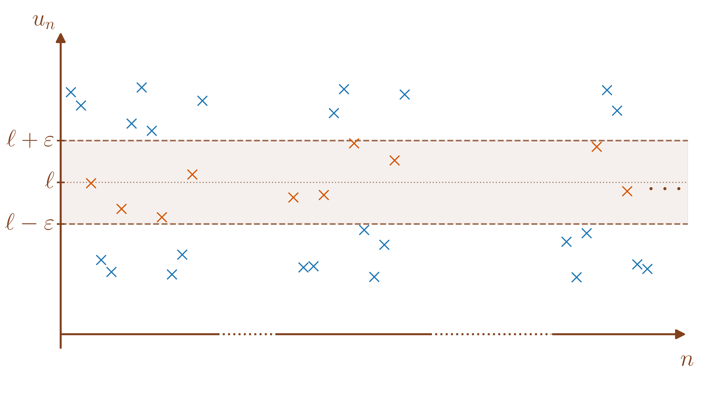
La suite \(\left(u_n\right)\) définie par \(u_n = \left(-1\right)^n\) pour \(n\in \mathbb{N}\) admet \(\pm 1\) comme valeurs d’adhérence.
Si \(u_n \xrightarrow[n \to +\infty]{} \ell\), \(\ell\) est une valeur d’adhérence de \(\left(u_n\right).\)
Soient \((E,\left\|\cdot\right\|)\) un espace vectoriel normé, \((u_n)\) une suite de \(E\) et \(\ell \in E.\) \[\begin{aligned} \ell \text{ est une valeur } & \text{d'adhérence de} \left(u_n\right) \\ & \iff \\ \text{ il existe une sous-suite $\left(u_{\varphi(n)}\right)$} & \text{ (avec $\varphi$ une extraction) telle que $u_{\varphi(n)} \xrightarrow[n \to +\infty]{} \ell$}. \end{aligned}\]
\((\Longrightarrow).\) On construit récursivement une extraction \(\varphi.\)
Pour \(n=0\), avec \(\varepsilon = 1\), il existe \(n_0 \geq 0\) tel que \(\left\|u_{n_0}-\ell\right\| \leq 1\), on pose alors \(\varphi(0) = n_0.\)
Pour \(n=1\), avec \(\varepsilon = \frac{1}{2}\), il existe \(n_1 \geq \varphi(0)+1\) tel que \(\left\|u_{n_1}-\ell\right\| \leq \frac{1}{2}\), on pose alors \(\varphi(1) = n_1.\)
On a alors \(\varphi(1) \geq \varphi(0)+1 > \varphi(0)\) et \(\left\|u_{\varphi(j)}-\ell\right\| \leq \frac{1}{2^j}\) pour \(j \in \left\{0,1\right\}.\)
Pour \(n=2\), avec \(\varepsilon = \frac{1}{2^2}\), il existe \(n_2 \geq \varphi(1)+1\) tel que \(\left\|u_{n_2}-\ell\right\| \leq \frac{1}{2^2}\), on pose alors \(\varphi(2) = n_2.\)
On a alors \(\varphi(2) \geq \varphi(1)+1 > \varphi(1) > \varphi(0)\) et \(\left\|u_{\varphi(j)}-\ell\right\| \leq \frac{1}{2^j}\) pour \(j \in \left\{0,1,2\right\}.\)
\(\vdots\)
Soit \(k \in \mathbb{N}\), supposons \(\varphi(0),\ldots,\varphi(k)\) construits tels que \(\varphi(0)<\ldots<\varphi(k)\) et \(\left\|u_{\varphi(j)}-\ell\right\| \leq \frac{1}{2^j}\) pour \(j \in [\![ 0,k ]\!].\)
Avec \(\varepsilon = \frac{1}{2^{k+1}}\), il existe \(n_{k+1} \geq \varphi(k)+1\) tel que \(\left\|u_{n_{k+1}}-\ell\right\| \leq \frac{1}{2^{k+1}}\), on pose alors \(\varphi(k+1) = n_{k+1}.\)
On a alors \(\varphi({k+1}) \geq \varphi(k)+1 > \varphi(k) > \ldots > \varphi(0)\) et \(\left\|u_{\varphi(j)}-\ell\right\| \leq \frac{1}{2^j}\) pour \(j \in [\![ 0,k+1]\!].\)
\(\vdots\)
Ainsi construite, \(\varphi\) est une extraction (car strictement croissante) et pour \(n \in \mathbb{N}\), \(\left\|u_{\varphi(n)}-\ell\right\| \leq \frac{1}{2^n} \xrightarrow[n \to +\infty]{} 0\) donc \(u_{\varphi(n)} \xrightarrow[n \to +\infty]{} \ell.\)
\((\Longleftarrow)\) Soit \(\varepsilon\), il existe \(n_\varepsilon\) tel que pour tout \(n \geq n_\varepsilon, \left\|u_{\varphi(n)}-\ell\right\| \leq \varepsilon.\)
Soit \(N \in \mathbb{N}\), considérons \(n_1 =\max(N,n_\varepsilon).\)
Par le lemme [lem:extraction], on a \(\varphi(n_1) \geq n_1 \geq N\) et on a aussi \(\left\|u_{\varphi\left(n_1\right)}-\ell\right\| \leq \varepsilon.\)
Donc \(\ell\) est une valeur d’adhérence de \(\left(u_n\right).\)
\(\left(u_n\right)\) converge \(\iff\) \(\left(u_n\right)\) a une unique valeur d’adhérence qui est sa limite.
(Théorème de Bolzano-Weierstrass) Soit \((u_n)\) une suite bornée de \(\mathbb{R}\).
Alors, \(\left(u_n\right)\) admet une valeur d’adhérence. Autrement dit, il existe une sous-suite de \((u_n)\) qui est convergente.
\((u_n)\) est bornée donc il existe \(M\in \mathbb{R}^{+}\) tel que pour tout \(n \geq 0, \left|u_n\right| \leq M.\)
Pour \(n \in \mathbb{N}\), on considère la suite \(\left(x_n\right)\) telle que \(x_n = \sup \left\{u_k, k \geq n\right\} = \sup_{k \geq n} u_k\) qui est bien définie car \(u_n \leq M\) pour tout \(n \geq 0.\)
Pour \(n \in \mathbb{N}\), \(\left\{u_k, k \geq n+1\right\} \subset \left\{u_k, k \geq n\right\}\) donc \(x_{n+1} \leq x_n\) et \(\left(x_n\right)\) est décroissante.
De plus, \(\left(x_n\right)\) est bornée (en valeur absolue par \(M\)) donc minorée et on en déduit donc qu’elle admet une limite \(\ell \in \mathbb{R}.\)
Montrons que \(\ell\) est une valeur d’adhérence de \(\left(u_n\right).\) Soient \(\varepsilon > 0\) et \(N \in \mathbb{N}.\)
D’abord, comme \(x_n \xrightarrow[n \to +\infty]{} \ell\) en décroissant, il existe \(n_0 \in \mathbb{N}\) tel que pour tout \(n \geq n_0\), \(\ell \leq x_n \leq \ell+\varepsilon.\)
Soit \(n = \max(n_0,N)\), comme \(x_n = \sup \left\{u_k, k \geq n\right\}\), il existe \(k \geq n\) tel que \(x_n-\varepsilon < u_k \leq x_n.\)
On en déduit donc \(\ell-\varepsilon \leq x_n-\varepsilon < u_k \leq x_n\leq \ell+\varepsilon\) donc \(\left|u_k-\ell\right| \leq \varepsilon\) avec \(k \geq N.\)
Donc \(\ell\) est une valeur d’adhérence de \(\left(u_n\right).\)
\(\ell = \lim_{n \longrightarrow +\infty} \sup_{k \geq n} u_k\) est appelée la limite supérieure de \(\left(u_n\right)\) et on peut montrer que c’est la plus grande valeur d’adhérence de \(\left(u_n\right).\)
Construire une suite réelle \(\left(u_n\right)\) telle que \(\left\{\text{valeurs d'adhérence de $\left(u_n\right)$}\right\}=[0,1].\)
Construire une suite réelle \(\left(v_n\right)\) telle que \(\left\{\text{valeurs d'adhérence de $\left(v_n\right)$}\right\}=\mathbb{R}^{+}.\)
On construit une suite comme illustré ci-dessous.
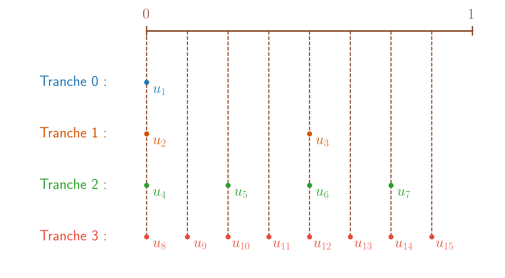
Dans la tranche \(0\), on pose \(u_0=0\) (tranches de taille \(1\)).
Dans la tranche \(1\), on pose \(u_1=0, u_2 = \frac{1}{2}\) (tranches de taille \(\frac{1}{2}\)).
Dans la tranche \(2\), on pose \(u_3=0, u_4 = \frac{1}{4}, u_5 = \frac{2}{4}, u_6 = \frac{3}{4}\) (tranches de taille \(\frac{1}{4}\)).
\(\vdots\)
Soit \(k \in \mathbb{N}\), dans la tranche \(k\), on pose \(u_{2^k} = 0\), \(u_{2^k+1} = \frac{1}{2^k}\), \(u_{2^k+2} = \frac{2}{2^k}\), \(\ldots\), \(u_{2^k+2^{k}-1} = \frac{2^{k}-1}{2^k}.\)
Autrement dit, pour \(0 \leq j \leq 2^k-1\), on a \(u_{2^k+j} = \frac{j}{2^k}\)
Ou pour \(n \in [\![ 2^k, 2^{k+1}-1]\!]\), on a \(u_n = \frac{n-2^k}{2^k}.\)
Montrons maintenant que \(\left\{\text{valeurs d'adhérence de $\left(u_n\right)$}\right\} = [0,1]\) par double inclusion.
\((\subset)\) Si \(\ell\) est valeur d’adhérence de \(\left(u_n\right)\) il existe \(\left(u_{\varphi(n)}\right)\) sous-suite de \(\left(u_n\right)\) telle que \(u_{\varphi(n)} \xrightarrow[n \to +\infty]{} \ell.\)
Or, pour tout \(n \geq 0\), \(0 \leq u_{\varphi(n)} <1\) donc \(\ell \in [0,1].\)
\((\supset)\) Soit \(\ell \in [0,1]\), \(\varepsilon > 0\) et \(N \in \mathbb{N}.\)
Dans la tranche \(k\), il existe \(u_n\) telle que \(\left|u_n-\ell\right| \leq \frac{1}{2^k}.\)
En effet, dans la tranche \(k\), les éléments de la suite s’écrivent \(\frac{j}{2^k}\) avec \(j \in [\![ 0, 2^k-1]\!].\)
Or, \(\frac{j}{2^k} \leq \ell \leq \frac{j+1}{2^k} \iff j \leq 2^k \ell \leq j+1\)
Pour \(\ell < 1\), \(j = \lfloor 2^k \ell\rfloor\) convient car alors \(j \geq 0\) et \(j \leq 2^k \ell < 2^k\) donc \(j \leq 2^{k}-1.\)
Avec \(n = 2^k+j\), on a donc \(u_{n} = \frac{j}{2^k}\) qui vérifie \(\left|u_{n}-\ell\right| \leq \frac{1}{2^k}.\)
Pour \(\ell = 1\), \(j = 2^k-1\) convient car alors \(\frac{j}{2^k} = 1-\frac{1}{2^k}\) et avec \(n = 2^k+2^k-1 = 2^{k+1}-1\), on a \(u_{n} = 1-\frac{1}{2^k}\) qui vérifie \(\left|u_{n}-1\right| \leq \frac{1}{2^k}.\)
En considérant \(k \in \mathbb{N}\) tel que \(\frac{1}{2^k} \leq \varepsilon\) et \(2^k \geq N\), on a donc l’existence d’un \(n\) tel que \(u_n\) est dans la tranche \(k\) et tel que \(n \geq 2^k \geq N\) et \(\left|u_n-\ell\right| \leq \varepsilon.\)
On a donc bien \(\ell\) qui est une valeur d’adhérence de \(\left(u_n\right).\)
Pour rappel, \(\tan \left(\left[0,\frac{\pi}{2}\right[\right) = \mathbb{R}^{+}.\) Donc en posant \(f : t \mapsto \tan \left(\frac{\pi}{2}t\right)\), \(f([0,1[) = \mathbb{R}^{+}.\)
Posons alors \(v_n = f(u_n)= \tan \left(\frac{\pi}{2} u_n\right)\) pour \(n \in \mathbb{N}.\)
D’abord, \(\left(v_n\right)\) est bien définie car \(u_n \in [0,1[\) donc \(\frac{\pi}{2} u_n \neq \frac{\pi}{2}.\)
Ensuite, soit \(\ell \in \mathbb{R}^{+}\), il existe \(t \in [0,1[\) tel que \(f(t) = \tan \left(\frac{\pi}{2}t\right) = \ell.\)
Comme les éléments de \([0,1[\) sont valeurs d’adhérence de \(\left(u_n\right)\), en considérant une extraction \(\varphi\) tel que \(u_{\varphi(n)} \xrightarrow[n \to +\infty]{} t \in [0,1[\) on a donc \(v_{\varphi(n)} = \tan\left(\frac{\pi}{2}u_{\varphi(n)}\right) = f(u_{\varphi(n)}) \xrightarrow[n \to +\infty]{} f(t)=\ell.\) Cela donne \(\left\{\text{valeurs d'adhérence de $\left(v_n\right)$}\right\} \supset \mathbb{R}^{+}\) et l’inclusion inverse est donnée par la positivité de \(\left(v_n\right)\) (car \(\left(u_n\right)\) est à valeurs dans \([0,1[\)).
Il existe aussi une sous-suite de \(\left(v_n\right)\) qui tend vers \(+\infty.\) En effet, il existe une sous-suite \(\left(u_{\varphi(n)}\right)\) telle que \(u_{\varphi(n)} \xrightarrow[n \to +\infty]{} 1\) donc \(v_{\varphi(n)} \xrightarrow[n \to +\infty]{} +\infty.\) On dit parfois que \(+\infty\) est valeur d’adhérence de \(\left(v_n\right)\) dans \(\overline{\mathbb{R}}.\)
On peut aussi construire une suite qui admet \(\mathbb{R}\) comme valeurs d’adhérence. Le plus simple est de modifier légèrement \(\left(u_n\right)\) pour qu’elle soit à valeurs dans \(]0,1[\) (en posant \(u_{2^k} = \frac{1}{2^k}\) par exemple). On peut alors montrer qu’elle admet toujours \([0,1]\) comme valeurs d’adhérence puis on peut considérer \(v_n = f(u_n)\) avec \(f\) telle que \(f(]0,1[) = \mathbb{R}\) (\(f : t \in ]0,1[ \mapsto \tan\left((1-t)\left(-\frac{\pi}{2}\right)+t\frac{\pi}{2}\right)\) par exemple).
Soit \(\left(u_n\right)\) la suite complexe définie par \(u_n = e^{i\sqrt{n}}\) pour \(n \in \mathbb{N}.\) Montrer que \(\left\{\text{valeurs d'adhérence de $\left(u_n\right)$}\right\}=\mathbb{U}= \left\{z \in \mathbb{C}/ \left|z\right|=1\right\}.\)
En déduire que la suite réelle \(\left(v_n\right)\) définie par \(v_n = \cos\left(\sqrt{n}\right)\) pour \(n \in \mathbb{N}\) vérifie \(\left\{\text{valeurs d'adhérence de $\left(v_n\right)$}\right\}=\left[-1,1\right].\)
Montrons \(\left\{\text{valeurs d'adhérence de $\left(u_n\right)$}\right\}=\mathbb{U}\) par double inclusion.
\((\subset).\) D’abord, pour tout \(n \in \mathbb{N}\), \(\left|u_n\right| = 1.\)
Donc s’il existe \(\varphi\) une extraction et \(\ell \in \mathbb{C}\) telle que \(u_{\varphi(n)} \xrightarrow[n \to +\infty]{} \ell\) alors \(1 = \left|u_{\varphi(n)}\right| \xrightarrow[n \to +\infty]{} \left|\ell\right|\) donc \(\left|\ell\right| = 1\) et \(\ell \in \mathbb{U}.\)
\((\supset).\) Soit \(z \in \mathbb{U}\), il existe \(\theta \in \mathbb{R}\) tel que \(z = e^{i\theta}.\)
Soit \(\varepsilon > 0\) et \(N \in \mathbb{N}.\) En introduisant \(f : t \in \mathbb{R}\mapsto e^{it}\), \(f\) est dérivable de dérivée \(f': t \in \mathbb{R}\mapsto ie^{it}\) qui vérifie \(\left|f'(t)\right| \leq 1\) pour tout \(t \in \mathbb{R}.\)
Donc \(f\) est \(1\)-lipschitzienne et pour \(n \in \mathbb{N}\), \(\left|u_n-z\right|=\left|e^{i\sqrt{n}}-e^{it}\right| \leq \left|\sqrt{n}-t\right|.\)
Or, \(\sqrt{n+1}-\sqrt{n} = \frac{n+1-n}{\sqrt{n+1}+\sqrt{n}}=\frac{1}{\sqrt{n+1}+\sqrt{n}} \xrightarrow[n \to +\infty]{} 0.\)
Il existe donc \(n_0 \in \mathbb{N}\) tel que pour tout \(n \geq n_0\), \(\sqrt{n+1}-\sqrt{n} \leq \varepsilon.\)
Enfin, en posant \(n_1 = \max(n_0,N)\), il existe un entier \(k \in \mathbb{N}\) tel que \(t+2k\pi \geq \sqrt{n_1}\) (car \(t+2k\pi \xrightarrow[k \to +\infty]{}+\infty\)).
En considérant alors \(n_2 = \max\left\{n \geq n_1 / \sqrt{n} \leq t+2k\pi\right\}\), on a
\(n_2 \geq n_1 \geq N\),
\(\sqrt{n_2} \leq t+2k\pi\),
\(n_2\) est un maximum donc \(n_2+1 \notin \left\{n \geq n_1 / \sqrt{n} \leq t+2k\pi\right\}\) donc \(t+2k\pi < \sqrt{n_2+1}\),
donc \(\sqrt{n_2} \leq t+2k\pi< \sqrt{n_2+1}\) puis \(0 \leq t+2k\pi-\sqrt{n_2}< \sqrt{n_2+1}-\sqrt{n_2} \underbrace{\leq}_{\substack{\text{car}\\ n_2 \geq n_1}} \varepsilon\) puis \(\left|u_{n_2}-z\right| = \left|e^{i\sqrt{n_2}}-e^{it}\right|= \left|e^{i\sqrt{n_2}}-e^{i(t+2k\pi)}\right|\leq \left|t+2k\pi-\sqrt{n_2}\right| \leq \varepsilon.\)
Donc \(z\) est bien valeur d’adhérence de \(\left(u_n\right).\)
Comme précédemment, on a \(\left\{\text{valeurs d'adhérence de $\left(v_n\right)$}\right\}\subset [-1,1]\) car \(\left(v_n\right)\) est à valeurs dans \([-1,1].\)
Considérons l’inclusion inverse, soit \(x \in [-1,1]\), il existe \(t \in \mathbb{R}\) tel que \(x = \cos(t).\)
Alors, \(z = e^{it} = \cos(t)+i\sin(t) \in \mathbb{U}\) et par la question précédente, il existe une extraction \(\varphi\) telle que \(u_{\varphi(n)} \xrightarrow[n \to +\infty]{} z.\)
On en déduit alors \(\mathop{\mathrm{Re}}(u_{\varphi(n)}) = \cos\left(\sqrt{\varphi(n)}\right) =v_{\varphi(n)}\xrightarrow[n \to +\infty]{} \mathop{\mathrm{Re}}(z) = \cos(t) = x\) donc \(x\) est valeur d’adhérence de \(\left(v_n\right).\)
Soient \((E,\left\|\cdot\right\|)\) un espace vectoriel normé, \(x \in E\) et \(A \subset E.\)
On dit que \(A\) est un voisinage de \(x\) (dans \((E,\left\|\cdot\right\|)\)) s’il existe \(r > 0\) tel que \(\overline{B}(x,r) \subset A.\)
On note \(\mathcal{V}(x)\) l’ensemble des voisinages de \(x.\)
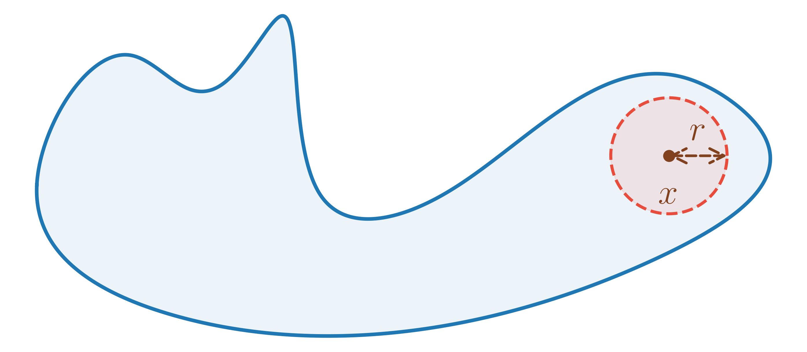
Dans \(E = \mathbb{R}\), \(A = [0,1]\) est un voisinage de \(\frac{1}{2}\) car \(\overline{B}\left(\frac{1}{2}, \frac{1}{4}\right) = [\frac{1}{4}, \frac{3}{4}] \subset A\) mais \(A\) n’est pas un voisinage de \(0.\)
On a \(A \in \mathcal{V}(x) \Longrightarrow x \in A\) mais la réciproque est fausse (comme illustré dans l’exemple [ex:contient_mais_nest_pas_voisinage]),
Soit \(a \in E\), pour \(r > 0\), \(\overline{B}(a,r)\) est un voisinage de \(a\),
Si \(A \in \mathcal{V}(x)\) et \(A\subset B\) alors \(B \in \mathcal{V}(x).\)
Soient \((E,\left\|\cdot\right\|)\) un espace vectoriel normé, \(A \subset E\) et \(x \in E.\)
\[A \in \mathcal{V}(x) \iff \exists r' > 0, B(x,r') \subset A.\]
\((\Longrightarrow)\) Si \(A \in \mathcal{V}(x)\), il existe \(r >0\) tel que \(\overline{B}(x,r) \subset A\) donc \(B(x,r) \subset A\) (avec \(r'=r\) donc).
\((\Longleftarrow)\) S’il existe \(r' > 0\) tel que \({B}(x,r') \subset A\) alors on a \(\overline{B}\left(x,\frac{r'}{2}\right) \subset A\) donc \(A \in \mathcal{V}(x).\)
Soit \(a \in E\), pour \(r > 0\), \({B}(a,r)\) est un voisinage de \(a\).
Soient \((E,\left\|\cdot\right\|)\) un espace vectoriel normé et \(x \in E.\) Soit \(\left(A_i\right)_{i\in I}\) une famille de voisinage de \(x\) avec \(I\) fini.
Alors, \(\bigcap_{i \in I} A_i\) est un voisinage de \(x.\)
Pour tout \(i \in I\), il existe \(r_i > 0\) tel que \(\overline{B}(x,r_i) \subset A_i.\) En notant \(r = \min_{i \in I} r_i\) (qui est défini car \(I\) est fini), on a alors \(r > 0\) et \(\overline{B}(x,r) \subset A_i\) pour tout \(i \in I\) donc \(\overline{B}(x,r) \subset \bigcap_{i \in I} A_i.\)
Cela est faux si \(I\) est infini. Par exemple, dans \(\mathbb{R}\), avec \(\left(A_n\right)_{n\geq 1}\) telle que \(A_n = \left[-\frac{1}{n},\frac{1}{n}\right]\), chaque \(A_n\) est un voisinage de \(0\) mais \(\bigcap_{n \geq 1}A_n = \left\{0\right\}\) n’est pas un voisinage de \(0.\) La preuve échoue car alors on ne peut pas considérer \(\min_{i \in I} r_i\) (qui n’est pas forcément défini avec \(I\) infini) mais plutôt \(\inf_{i \in I} r_i.\) Dans l’exemple des \(A_n\), avec pour tout \(n \geq 1\), \(r_n = \frac{1}{n} > 0\) mais \(\inf_{n\geq 1}r_n = 0.\)
Soient \((E,\left\|\cdot\right\|)\) un espace vectoriel normé, \(x \in E\) et \(A \subset E.\)
On dit que \(x\) est un point intérieur à \(A\) (dans \((E,\left\|\cdot\right\|-\)) si \(A\) est un voisinage de \(x.\)
\(\left\{\text{points intérieurs à $A$}\right\}\) est alors appelée l’intérieur (dans \((E,\left\|\cdot\right\|)\)) de \(A\), notée \(\mathring{A}\) ou \(\mathrm{Int}(A).\)
Dans \(E = \mathbb{R}\), avec \(A = [0,1]\), on a \(\mathring{A} = ]0,1[.\)
Dans \(E = \mathbb{C}\), avec \(A = [0,1]\), on a \(\mathring{A} = \emptyset.\)
En effet, soit \(x \in A\) et \(r > 0\), la boule dans \(\mathbb{C}\) vérifie \(\overline{B}(a,r) \centernot{\subset} A.\)
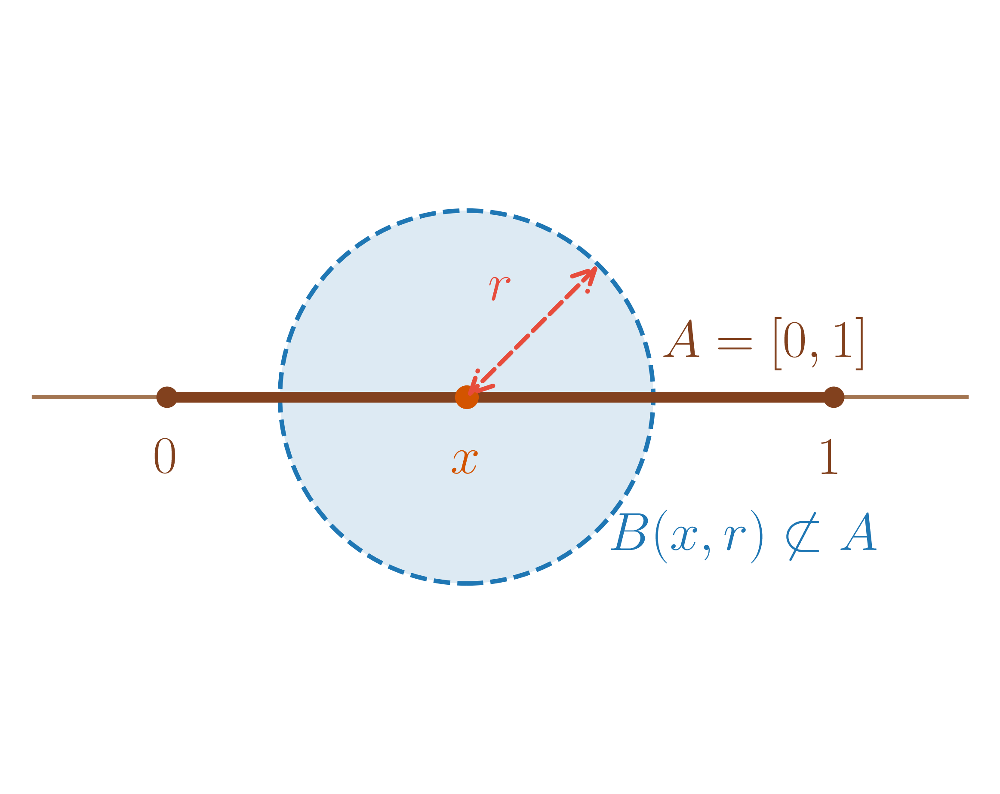
Soient \((E,\left\|\cdot\right\|)\) un espace vectoriel normé et \(A,B \subset E.\) Alors,
\(\mathring{A} \subset A.\)
Si \(A \subset B\) alors \(\mathring{A} \subset \mathring{B}.\)
Si \(x \in \mathring{A}\), il existe \(r > 0\) tel que \(\overline{B}(x,r) \subset A\) donc \(x \in \overline{B}(x,r) \subset A.\)
Si \(x \in \mathring{A}\), il existe \(r > 0\) tel que \(\overline{B}(x,r) \subset A \subset B\) donc \(x \in \mathring{B}.\)
Soient \((E,\left\|\cdot\right\|)\) un espace vectoriel normé, \(\left(u_n\right)\) une suite de \(E\) et \(\ell \in E.\) Alors, \[u_n \xrightarrow[n \to +\infty]{} \ell \iff \forall V \in \mathcal{V}(\ell), \exists N \in \mathbb{N}/ \forall n \geq N, u_n \in V.\]
\((\Longrightarrow)\) Soit \(V \in \mathcal{V}(\ell)\), il existe \(r > 0\) tel que \(\overline{B}(\ell,r) \subset V.\)
Or, \(r > 0\) donc il existe \(N \in \mathbb{N}\) tel que pour tout \(n \geq N, u_n \in \overline{B}(\ell,r)\subset V.\)
\((\Longleftarrow)\) Soit \(\varepsilon > 0\), \(\overline{B}(\ell,\varepsilon) \in \mathcal{V}(\ell)\) donc il existe \(N \geq 0\) tel que pour tout \(n \geq N\), \(u_n \in \overline{B}(\ell,\varepsilon) \iff \left\|u_n-\ell\right\| \leq \varepsilon.\) Donc \(u_n \xrightarrow[n \to +\infty]{} \ell.\)
Soient \((E,\left\|\cdot\right\|)\) un espace vectoriel normé, \(\left(u_n\right)\) une suite de \(E\) et \(\ell \in E.\) Alors, \[\ell \text{ est valeur d'adhérence de $\left(u_n\right)$ } \iff \forall V \in \mathcal{V}(\ell), \forall N \in \mathbb{N}, \exists n \geq N / u_n \in V.\]
\((\Longrightarrow)\) Soit \(V \in \mathcal{V}(\ell)\), il existe \(r > 0\) tel que \(\overline{B}(\ell,r) \subset V.\)
Or, \(r > 0\) donc soit \(N \in \mathbb{N}\), il existe \(n \geq N\) tel que \(u_n \in \overline{B}(\ell,r)\subset V.\)
\((\Longleftarrow)\) Soient \(\varepsilon > 0\) et \(N \in \mathbb{N}\), \(\overline{B}(\ell,\varepsilon) \in \mathcal{V}(\ell)\) donc il existe \(n \geq N\) tel que \(u_n \in \overline{B}(\ell,\varepsilon) \iff \left\|u_n-\ell\right\| \leq \varepsilon.\) Donc \(\ell\) est valeur d’adhérence de \(\left(u_n\right).\)
Soient \((E,\left\|\cdot\right\|)\) un espace vectoriel normé et \(A \subset E.\) On dit que \(A\) est une partie ouverte (ou un ouvert) de \((E,\left\|\cdot\right\|)\) si \[\begin{aligned} & \text{$A$ est voisinage de tous ses points}\\ \text{ ie } &\forall x \in A, \exists r>0 / \overline{B}(x,r) \subset A \\ \text{ ie } &\forall x \in A, \exists r>0 / {B}(x,r) \subset A \\ \text{ ie } & A = \mathring{A}. \end{aligned}\]
Dans \(E = \mathbb{R}\), \(]0,1[\) est un ouvert de \(\mathbb{R}\) mais pas \([0,1[.\)
Toute intervalle ouvert de \(\mathbb{R}\) (de la forme \(]a,b[\), \(]a,+\infty[\), \(]-\infty,b[\) ou \(\mathbb{R}\)) est un ouvert de \(\mathbb{R}.\)
Dans \(\mathbb{C}\), \(]0,1[\) n’est pas un ouvert.
Soit \(E\) un espace vectoriel normé, \(\emptyset\) et \(E\) sont des ouverts de \(E.\)
Soient \((E,\left\|\cdot\right\|)\) un espace vectoriel normé, \(a \in E\) et \(r > 0.\)
Alors, \(B(a,r)\) est un ouvert de \(E.\)
\(\quad\)
Soit \(x \in B(a,r)\), montrons que \(\overline{B}(x,r') \subset B(a,r)\) avec \(r'=\frac{r-\left\|x-a\right\|}{2} > 0.\)
Soit \(y \in \overline{B}(x,r')\), \[\begin{aligned} \left\|a-y\right\| & = \left\|a-x+x-y\right\|\\ & \leq \left\|a-x\right\|+\left\|x-y\right\| \\ & \leq \left\|a-x\right\|+r'\\ & \leq \left\|a-x\right\|+\frac{r-\left\|x-a\right\|}{2}\\ & =\frac{r+\left\|x-a\right\|}{2} \\ & < \frac{r+r}{2}=r. \end{aligned}\]
Donc \(B(a,r)\) est un ouvert de \(E.\)
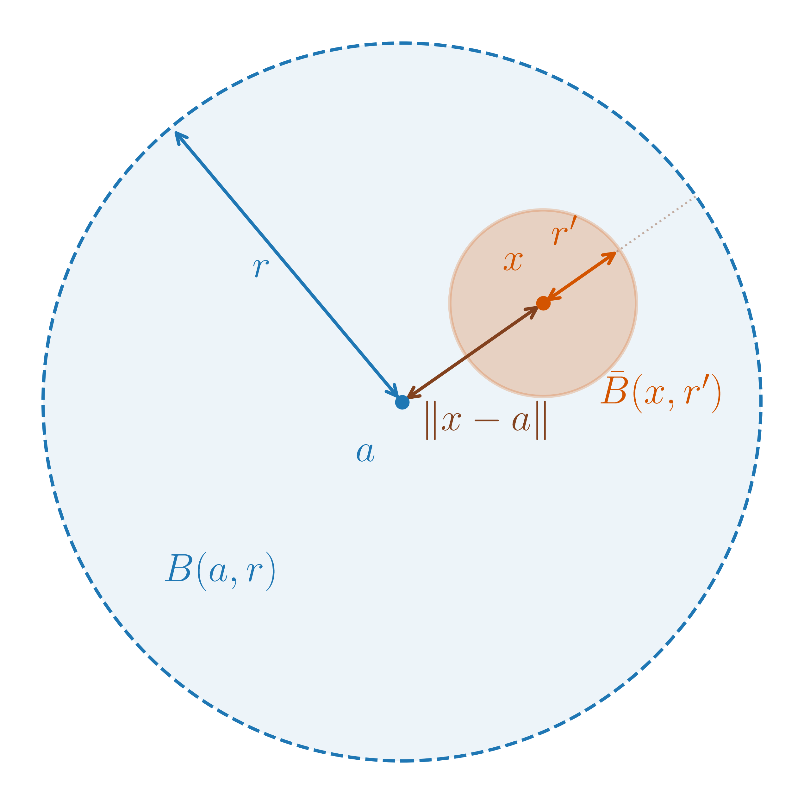
Soient \((E,\left\|\cdot\right\|)\) un espace vectoriel normé, \(a \in E\) et \(r > 0.\)
Alors, \(\overbracket{\overline{B}(a,r)}^{\circ} = B(a,r).\)
D’abord, comme \(B(a,r)\) est un ouvert de \(E\), \(\overbracket{{B}(a,r)}^{\circ} = B(a,r)\) donc \(B(a,r) \subset \overline{B}(a,r)\) implique \(B(a,r)=\overbracket{{B}(a,r)}^{\circ} \subset \overbracket{\overline{B}(a,r)}^{\circ}.\)
Or, on sait que \(\overbracket{\overline{B}(a,r)}^{\circ} \subset \overline{B}(a,r)\) et il ne reste donc plus qu’à contrôler les points de \(\overline{B}(a,r) \setminus B(a,r)=S(a,r).\)
Soit \(x\in S(a,r)\), ie tel que \(\left\|x-a\right\|=r\), montrons que \(x \notin \overbracket{\overline{B}(a,r)}^{\circ}\) ie que soit \(\varepsilon > 0\), \(\overline{B}(a,\varepsilon) \centernot{\subset} \overline{B}(a,r).\)
En considérant \(y = x+\varepsilon\frac{x-a}{r}\), on a \(\left\|y-x\right\| =\varepsilon\frac{\left\|x-a\right\|}{r} =\varepsilon\) donc \(y \in \overline{B}(x,\varepsilon)\) mais \(\left\|y-a\right\| = \left\|x-a\right\|\left(1+\frac{\varepsilon}{r}\right) = r\left(1+\frac{\varepsilon}{r}\right) > r\) donc \(y \notin \overline{B}(a,r).\)
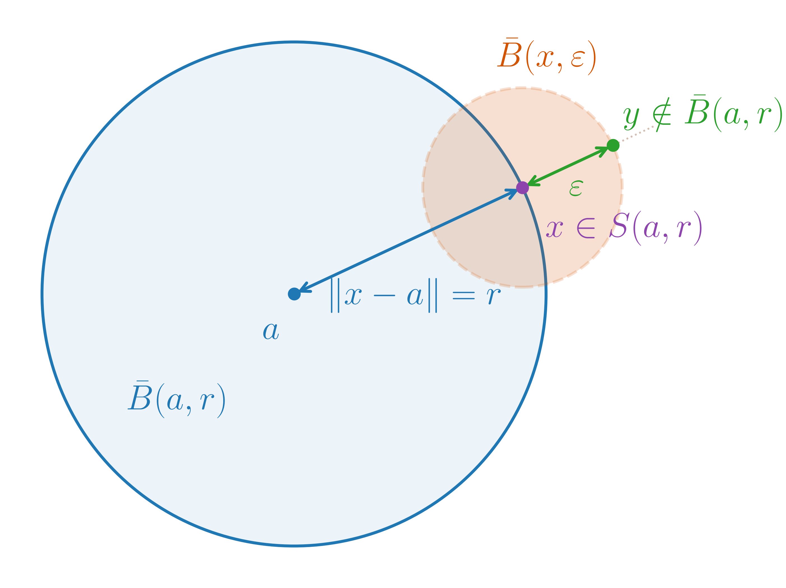
On en déduit \(B(a,r) \subset \overbracket{\overline{B}(a,r)}^{\circ} \subset B(a,r)\) donc \(\overbracket{\overline{B}(a,r)}^{\circ} = B(a,r).\)
Soient \((E,\left\|\cdot\right\|)\) un espace vectoriel normé et \(A \subset E.\)
\(\mathring{A}\) est un ouvert de \(E\) (ie \(\overbracket{\mathring{A}}^{\circ} = \mathring{A}\)),
C’est le plus grand ouvert de \(E\) inclus dans \(A.\)
Soit \(x \in \mathring{A}\), il existe \(r > 0\) tel que \(\overline{B}(x,r) \subset A.\)
On a donc \(B(x,r) = \overbracket{\overline{B}(x,r)}^{\circ} \subset \mathring{A}\) et \(\mathring{A}\) est un ouvert de \(E.\)
Soit \(B\) un ouvert de \(E\) tel que \(B\subset A\) alors \(B=\mathring{B} \subset \mathring{A}.\)
Soient \((E,\left\|\cdot\right\|)\) un espace vectoriel normé et \(\left(A_i\right)_{i \in I}\) une famille d’ouverts de \(E.\) Alors,
\(\bigcup_{i\in I} A_i\) est un ouvert de \(E\),
Si \(I\) est fini, \(\bigcap_{i\in I} A_i\) est un ouvert de \(E.\)
Soit \(x \in \bigcup_{i\in I} A_i\), il existe \(i_0 \in I\) tel que \(x \in A_{i_0}.\)
Òr, \(A_{i_0}\) est un ouvert donc il existe \(r> 0\) tel que \(\overline{B}(x,r) \subset A_{i_0}.\)
On a donc \(B(x,r) \subset \bigcup_{i\in I} A_i\) et \(\bigcup_{i\in I} A_i\) est un ouvert de \(E.\)
Soit \(x \in \bigcap_{i\in I} A_i\) alors pour tout \(i \in I, x \in A_{i}.\)
Òr, pour \(i \in I\), \(A_{i}\) est un ouvert donc il existe \(r_i> 0\) tel que \(\overline{B}(x,r_i) \subset A_{i}.\)
En posant \(r = \min_{i\in I} r_i > 0\), qui est défini car \(I\) est fini, on a \(B(x,r) \subset A_i\) pour tout \(i \in I\) et \(B(x,r) \subset \bigcap_{i\in I} A_i\) donc \(\bigcap_{i\in I} A_i\) est un ouvert de \(E.\)
La propriété de l’intersection est fausse si \(I\) est infini en général. Par exemple, dans \(\mathbb{R}\), en posant \(A_n = \left]-\frac{1}{n}, \frac{1}{n}\right[\) pour \(n \in \mathbb{N}^{\star}\), \(A_n\) est un ouvert mais \(\bigcap_{n \geq 1} = \left\{0\right\}\) n’est pas un ouvert.
Soient \((E,\left\|\cdot\right\|)\) un espace vectoriel normé et \(A,B \subset E.\)
Comparer \(\overbracket{A\cap B}^{\circ}\) et \(\mathring{A} \cap \mathring{B}.\)
Comparer \(\overbracket{A\cup B}^{\circ}\) et \(\mathring{A} \cup \mathring{B}.\)
Montrons \(\overbracket{A\cap B}^{\circ}=\mathring{A} \cap \mathring{B}.\)
(\(\subset\)) D’abord, on a \(A\cap B \subset A\) et \(A\cap B \subset B\) donc \(\overbracket{A\cap B}^{\circ}\subset \mathring{A}\) et \(\overbracket{A\cap B}^{\circ}\subset \mathring{B}\) puis \(\overbracket{A\cap B}^{\circ}\subset \mathring{A} \cap \mathring{B}.\)
(\(\supset\)) Soit \(x \in \mathring{A} \cap \mathring{B}\), il existe \(r_A > 0\) tel que \(B(x,r_A) \subset A\) et \(r_B > 0\) tel que \(B(x,r_B) \subset B.\)
Avec \(r = \min(r_A,r_B)\), on a donc \(B(x,r) \subset A\) et \(B(x,r) \subset B\), ce qui donne \(B(x,r) \subset A \cap B.\)
On en déduit donc \(x \in \overbracket{A\cap B}^{\circ}\) puis \(\overbracket{A\cap B}^{\circ}\supset\mathring{A} \cap \mathring{B}.\)
On a bien \(\overbracket{A\cup B}^{\circ}\supset \mathring{A} \cup \mathring{B}.\)
En effet, \(A \subset A\cup B\) et \(B \subset A\cup B\) donc \(\mathring{A} \subset \overbracket{A\cup B}^{\circ}\) et \(\mathring{B} \subset \overbracket{A\cup B}^{\circ}\) puis finalement \(\mathring{A} \cup \mathring{B} \subset \overbracket{A\cup B}^{\circ}.\)
En revanche, l’inclusion réciproque est fausse en général. Par exemple, avec \(A = [0,1]\) et \(B = [1,2]\), on a \(\mathring{A} = ]0,1[\), \(\mathring{B} = ]1,2[\) et \(A\cup B = [0,2]\) donc \(\overbracket{A\cup B}^{\circ} = ]0,2[.\)
On a alors \(1 \in \overbracket{A\cup B}^{\circ}\) mais \(1 \notin \mathring{A} \cup \mathring{B}.\)
Soient \((E,\left\|\cdot\right\|)\) un espace vectoriel normé et \(A \subset E.\)
On dit que \(A\) est une partie fermée (ou un fermé) de \((E,\left\|\cdot\right\|)\) si \(E \setminus A\) est une partie ouverte de \((E,\left\|\cdot\right\|).\)
Dans \(\mathbb{R}\), tous les intervalles fermés (de la forme \([a,b]\), \([a,+\infty[\), \(]-\infty,b]\) ou \(\mathbb{R}\)) sont des fermés.
\([0,1[\) n’est pas un fermé (ni un ouvert) de \(\mathbb{R}.\)
Soit \(E\) un espace vectoriel normé, \(\emptyset\) et \(E\) sont des fermés de \(E.\)
Soient \((E,\left\|\cdot\right\|)\) un espace vectoriel normé et \(\left(A_i\right)_{i \in I}\) une famille de fermés de \(E.\) Alors,
\(\bigcap_{i\in I} A_i\) est un fermé de \(E\),
Si \(I\) est fini, \(\bigcup_{i\in I} A_i\) est un fermé de \(E.\)
Les parties \(E \setminus A_i\) sont des ouverts de \(E\) pour \(i \in I.\) Donc par la proposition [prop:inter_union_ouverts],
\(\bigcup_{i \in I} \left(E \setminus A_i\right) = E\setminus\left(\bigcap_{i \in I}A_i\right)\) est un ouvert de \(E\) et donc \(\bigcap_{i \in I}A_i\) un fermé de \(E.\)
Si \(I\) est fini, \(\bigcap_{i \in I} \left(E \setminus A_i\right) = E\setminus\left(\bigcup_{i \in I}A_i\right)\) est un ouvert de \(E\) et donc \(\bigcup_{i \in I}A_i\) un fermé de \(E.\)
Encore une fois, le point sur l’union est faux si \(I\) est infini. Par exemple, pour \(n \in \mathbb{N}^{\star}\), \(A_n = \left[0,1-\frac{1}{n}\right]\) est fermé mais \(\bigcup_{n \geq 0} A_n = [0,1[\) n’est pas fermé.
Soient \((E,\left\|\cdot\right\|)\) un espace vectoriel normé, \(A \subset E\) et \(x \in E.\) On dit que \(x\) est un point adhérent à \(A\) si \[\begin{aligned} & \forall \varepsilon > 0, \exists a \in A/ \left\|x-a\right\| \leq \varepsilon,\\ \text{ ie } &\forall \varepsilon > 0, A \cap \overline{B}(x,\varepsilon) \neq \emptyset, \\ \text{ ie } &\forall \varepsilon > 0, A \cap B(x,\varepsilon) \neq \emptyset, \\ \text{ ie } &\forall V \in \mathcal{V}(x), A \cap V \neq \emptyset. \end{aligned}\]
\(\left\{\text{points adhérents à $A$}\right\}\) est alors appelée l’adhérence de \(A\) (dans \((E,\left\|\cdot\right\|)\)), notée \(\overline{A}\) ou \(\mathrm{Adh}(A).\)
Dans \(E = \mathbb{R}\), \(\overline{]0,1]} = \left[0,1\right].\)
Soient \((E,\left\|\cdot\right\|)\) un espace vectoriel normé et \(A,B \subset E.\) Alors,
\(A \subset \overline{A}.\)
Si \(A \subset B\) alors \(\overline{A} \subset \overline{B}.\)
Si \(x \in A\), soit \(\varepsilon > 0\), \(\overline{B}(x,\varepsilon) \cap A \supset \left\{x\right\} \neq \emptyset\) donc \(x \in \overline{A}\),
Si \(x \in \overline{A}\), soit \(\varepsilon > 0\), \(A \cap \overline{B}(x,\varepsilon) \neq \emptyset\) donc \(B \cap \overline{B}(x,\varepsilon) \supset A \cap \overline{B}(x,\varepsilon) \neq \emptyset\) et \(x \in \overline{B}.\)
Soient \((E,\left\|\cdot\right\|)\) un espace vectoriel normé et \(A\subset E.\) Alors,
\(E \setminus \overline{A} = \overbracket{E\setminus A}^\circ\),
\(E \setminus \mathring{A} = \overline{E\setminus A}.\)
\[\begin{aligned} x \in E \setminus \overline{A} & \iff x \notin \overline{A} \\ & \iff \exists r> 0 / \overline{B}(x,r) \cap A = \emptyset \\ & \iff \exists r> 0 / \overline{B}(x,r) \subset E \setminus A \\ & \iff x \in \overbracket{E\setminus A}^\circ. \end{aligned}\]
On applique le résultat précédent à \(E \setminus A.\)
On a \(E \setminus \overline{E \setminus A}= \overbracket{E\setminus \left(E \setminus A\right)}^\circ = \mathring{A}\) donc \(\overline{E \setminus A}=E \setminus\mathring{A}.\)
Soient \((E,\left\|\cdot\right\|)\) un espace vectoriel normé et \(A\subset E.\) Alors, \(A\) fermée \(\iff A = \overline{A}.\)
\[\begin{aligned} A \text{ fermée} & \iff E \setminus A \text{ ouverte} \\ & \iff E \setminus A = \overbracket{E\setminus A}^\circ \\ & \iff E \setminus A = E \setminus \overline{A} \\ & \iff A = \overline{A}. \end{aligned}\]
Soient \((E,\left\|\cdot\right\|)\) un espace vectoriel normé et \(A \subset E.\)
\(\overline{A}\) est un fermé de \(E\) (ie \(\overline{\overline{A}} = \overline{A}\)),
C’est le plus petit fermé de \(E\) contenant \(A.\)
\(E \setminus \overline{A} = \overbracket{E\setminus A}^\circ\) est un ouvert de \(E\) donc \(\overline{A}\) est un fermé de \(E.\)
Soit \(B \subset E\) tel que \(B\) est fermée et \(A \subset B\) alors \(\overline{A} \subset \overline{B} = B.\)
Soit \(A \subset E\) alors \(\overbrace{\mathring{A}}^{\text{ouverte}} \underbrace{\subset}_{\substack{\text{avec}\\\text{égalité ssi}\\\text{$A$ ouverte}}} A \underbrace{\subset}_{\substack{\text{avec}\\\text{égalité ssi}\\\text{$A$ fermée}}} \overbrace{\overline{A}}^{\text{fermée}}\)
Soient \((E,\left\|\cdot\right\|)\) un espace vectoriel normé et \(A \subset E.\) Alors, \[x \in \overline{A} \iff \text{ il existe une suite $\left(a_n\right)$ de $A$ telle que $a_n \xrightarrow[n \to +\infty]{} x.$}\]
\((\Longrightarrow)\) Soit \(n \in \mathbb{N}\), \(\overline{B}\left(x,\frac{1}{2^n}\right) \cap A \neq \emptyset.\)
Donc il existe \(a_n \in A\) tel que \(a_n \in \overline{B}\left(x,\frac{1}{2^n}\right)\) ou encore \(\left\|a_n-x\right\| \leq \frac{1}{2^n}.\)
Ainsi, on a construit une suite \(\left(a_n\right)\) de \(A\) telle que \(\left\|a_n-x\right\| \xrightarrow[n \to +\infty]{} 0\) donc \(a_n \xrightarrow[n \to +\infty]{} x.\)
\((\Longleftarrow)\) Soit \(\varepsilon > 0\), il existe \(N \in \mathbb{N}\) tel que pour tout \(n \geq N\), \(\left\|a_n-x\right\| \leq \varepsilon\) ie \(a_n \in \overline{B}\left(x,\varepsilon\right).\)
Ainsi, \(A \cap \overline{B}\left(x,\varepsilon\right) \supset \left\{a_N\right\} \neq \emptyset\) donc \(x \in \overline{A}.\)
On a même \[x \in \overline{A} \iff \text{ il existe une suite $\left(a_n\right)$ de $A$ telle que $x$ est valeur d'adhérence de $\left(a_n\right).$}\] Il suffit de considérer des sous-suites.
Soient \((E,\left\|\cdot\right\|)\) un espace vectoriel normé et \(A \subset E.\) Alors, \[\text{$A$ fermé de $E$} \iff \text{Pour toute suite $\left(a_n\right)$ de $A$ telle que $a_n \xrightarrow[n \to +\infty]{} \ell \in E$, on a $\ell \in A.$}\]
\[\begin{aligned} \text{$A$ fermé de $E$} & \iff \overline{A} = A \\ & \iff \overline{A} \subset A \\ & \iff \forall x \in \overline{A}, x\in A. \end{aligned}\] Il reste donc à montrer \[\forall x \in \overline{A}, x\in A \iff \text{Pour toute suite $\left(a_n\right)$ de $A$ telle que $a_n \xrightarrow[n \to +\infty]{} \ell \in E$, on a $\ell \in A.$}\]
\((\Longrightarrow)\) Si une suite \(\left(a_n\right)\) de \(A\) converge vers une limite \(\ell \in E\), on a \(\ell \in \overline{A}\) par la proposition [prop:abar_et_il_existe_une_suite] donc \(\ell \in A.\)
\((\Longleftarrow)\) Soit \(x \in \overline{A}\), il existe une suite de \(\left(a_n\right)\) de \(A\) telle que \(a_n \xrightarrow[n \to +\infty]{} x\) par la proposition [prop:abar_et_il_existe_une_suite] donc \(x \in A.\)
Soient \((E,\left\|\cdot\right\|)\) un espace vectoriel normé et \(A \subset E\) telle que \(A \neq \emptyset.\) Alors, soit \(x \in E\), \[x \in \overline{A} \iff d(x,A) = 0.\]
\((\Longrightarrow)\) Si \(x \in \overline{A}\), par la proposition [prop:abar_et_il_existe_une_suite], il existe \(\left(a_n\right)\) une suite de \(A\) telle que \(a_n \xrightarrow[n \to +\infty]{} x.\)
Donc \(0 \leq d(x,A) \leq \left\|x-a_n\right\| \xrightarrow[n \to +\infty]{} 0\) et \(d(x,A) = 0.\)
\((\Longleftarrow)\) Si \(d(x,A) = \inf_{a \in A}\left\|x-a\right\|\), soit \(n \in \mathbb{N}\), il existe \(a_n \in A\) tel que \(\left\|x-a_n\right\| \leq \frac{1}{2^n}.\)
Ainsi, on a construit une suite \(\left(a_n\right)\) de \(A\) telle que \(\left\|a_n-x\right\| \xrightarrow[n \to +\infty]{} 0\) donc \(a_n \xrightarrow[n \to +\infty]{} x\) et \(x \in \overline{A}.\)
Soient \((E,\left\|\cdot\right\|)\) un espace vectoriel normé, \(a \in E\) et \(r> 0.\)
\(\overline{B}(a,r)\) est un fermé de \(E\),
\(S(a,r)\) est un fermé de \(E\),
\(\overline{B(a,r)} = \overline{B}(a,r).\)
Soit \((x_n)\) une suite de \(\overline{B}(a,r)\) qui converge vers \(x \in E.\)
Alors, pour tout \(n \in \mathbb{N}\), \(\left\|x_n-a\right\| \leq r\) et en passant à la limite quand \(n \longrightarrow +\infty\), \(\left\|\ell-a\right\| \leq r\) donc \(\ell \in \overline{B}(a,r).\)
Soit \((x_n)\) une suite de \(S(a,r)\) qui converge vers \(x \in E.\)
Alors, pour tout \(n \in \mathbb{N}\), \(\left\|x_n-a\right\| = r\) et en passant à la limite quand \(n \longrightarrow +\infty\), \(\left\|\ell-a\right\| = r\) donc \(\ell \in S(a,r).\)
Montrons \(\overline{B(a,r)} = \overline{B}(a,r)\) par double inclusion.
\((\subset).\) On a \(B(a,r) \subset \overline{B}(a,r)\) donc \(\overline{B(a,r)} \subset \overline{\overline{B}(a,r)} = \overline{B}(a,r)\) (car \(\overline{B}(a,r)\) est fermée).
\((\supset).\) Si \(y \in \overline{B}(a,r)\),
soit \(y \in B(a,r)\) et donc \(y\in \overline{B(a,r)} \supset B(a,r).\)
soit \(y \in S(a,r).\) Dans ce cas, en considérant \(y_n = a+\left(1-\frac{1}{n+1}\right)\left(y-a\right)\) pour \(n \in \mathbb{N}\), d’abord on a \(\left\|y_n-a\right\| = \left\|\left(1-\frac{1}{n+1}\right)\left(y-a\right)\right\| = \left(1-\frac{1}{n+1}\right)\left\|y-a\right\| = \left(1-\frac{1}{n+1}\right)r < r\) donc \(y_n \in B(a,r).\)
Ensuite, on a \(y_n \xrightarrow[n \to +\infty]{} a+y-a=y.\) Donc \(y \in \overline{B(a,r)}.\)
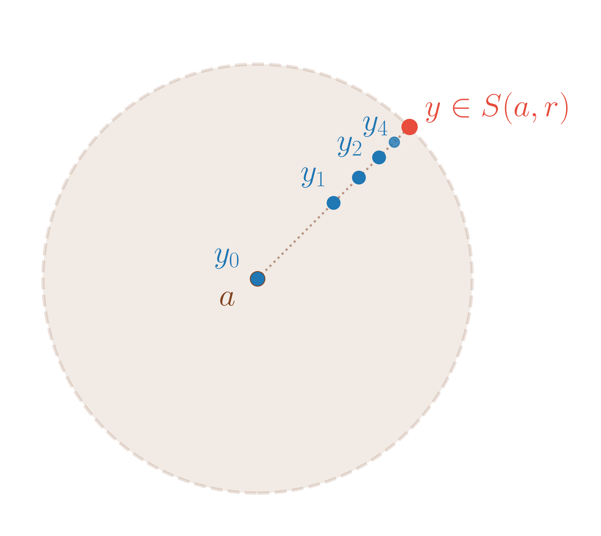
Soit \((E,\left\|\cdot\right\|)\) un espace vectoriel normé, alors toute partie finie de \(E\) est un fermé de \(E.\)
Soit \(a \in E\), la seule suite de \(\{a\}\) est la suite constante égale à \(a\) qui tend vers \(a \in \{a\}\) donc \(\{a\}\) est un fermé de \(E\). De plus, une partie finie est une union finie de singletons et est donc fermée.
Soient \((E,\left\|\cdot\right\|)\) et \(\left(x_n\right)\) une suite de \(E.\) On pose \(V = \left\{\text{valeurs d'adhérence de $\left(x_n\right)$}\right\}.\)
Montrer que \(V\) est une partie fermée de \(E.\)
Pour \(N \in \mathbb{N}\), on pose \(X_N = \left\{x_n / n \geq N\right\}.\) Montrer que \(V = \bigcap_{N \geq 0} \overline{X_N}.\)
Soit \(\varepsilon > 0\) et \(N \geq 0.\)
Soit \(x \in \overline{V}\), il existe \(\ell \in V\) tel que \(\left\|x-\ell\right\| \leq \frac{\varepsilon}{2}.\)
Or, \(\ell\) est valeur d’adhérence de \(\left(x_n\right)\) donc il existe \(n \geq N\) tel que \(\left\|x_n-\ell\right\| \leq \frac{\varepsilon}{2}.\)
On a donc \(\left\|x_n-x\right\| = \left\|x_n-\ell+\ell-x\right\|\leq \left\|x_n-\ell\right\|+\left\|\ell-x\right\| \leq \varepsilon\) donc \(x\) est valeur d’adhérence de \(\left(x_n\right)\) et \(x \in V.\)
Donc \(\overline{V} = V\) est un fermé de \(E.\)
Soit \(x \in E\), \[\begin{aligned} x \in \bigcap_{N \geq 0} \overline{X_N} & \iff \forall N \geq 0, x\in \overline{X_N} \\ & \iff \forall N \geq 0, \forall \varepsilon > 0,{X_N} \cap \overline{B}(x,\varepsilon) \neq \emptyset \\ & \iff \forall N \geq 0, \forall \varepsilon > 0, \exists n \geq N \text{ tel que }x_n \in \overline{B}(x,\varepsilon) \\ & \iff \forall N \geq 0, \forall \varepsilon > 0, \exists n \geq N \text{ tel que }\left\|x_n-x\right\|\leq \varepsilon \\ & \iff x \in V. \end{aligned}\]
Soient \((E,\left\|\cdot\right\|)\) et \(A,B \subset E.\)
On dit que \(A\) est dense dans \(B\) si \(A \subset B\) et \(B \subset \overline{A}.\)
Si \(B = E\), on dit que \(A\) est dense dans \(E\) si \(\overline{A} = E.\)
\(\mathbb{Q}\) est dense dans \(\mathbb{R}.\)
Pour \(x \in \mathbb{R}\) et \(n \in \mathbb{N}\), il existe \(p_n \in \mathbb{Z}\) unique tel que \(\frac{p_n}{10^n} \leq x < \frac{p_n}{10^n}+\frac{1}{10^n}\) en prenant \(p_n = \lfloor 10^n x\rfloor\). Pour rappel, \(\frac{p_n}{10^n}\) est appelée la valeur décimale approchée de \(x\) par défaut à \(\frac{1}{10^n}.\) Par exemple pour \(x=\pi\), \(\frac{p_1}{10^1} = 3,1\), \(\frac{p_2}{10^2} = 3,14\),\(\ldots.\)
Remarquons alors \(\frac{p_n}{10^n} \in \mathbb{Q}\) et \(\left|x-\frac{p_n}{10^n}\right| < \frac{1}{10^n}\xrightarrow[n \to +\infty]{}0\) donc \(\left(\frac{p_n}{10^n}\right)\) est une suite de \(\mathbb{Q}\) qui tend vers \(x.\)
\(\mathbb{R}\setminus\mathbb{Q}\) est dense dans \(\mathbb{R}\)
Soit \(x \in \mathbb{R}\), comme \(\mathbb{Q}\) est dense dans \(\mathbb{R}\), il existe \(\left(q_n\right)\) suite de \(\mathbb{Q}\) telle que \(q_n \xrightarrow[n \to +\infty]{} x \mathbb{R}.\)
Alors, pour \(n \in \mathbb{N}\), \(x_n = q_n +\frac{\pi}{n+1} \notin \mathbb{Q}\) (car sinon on aurait \(\pi = (n+1)(x_n-q_n) \in \mathbb{Q}\)) et \(x_n \xrightarrow[n \to +\infty]{} x.\)
Donc \(\left(x_n\right)\) est une suite de \(\mathbb{R}\setminus\mathbb{Q}\) qui tend vers \(x.\)
\(\mathbb{Q}\cap ]0,1[\) est dense dans \([0,1].\)
\[\begin{aligned} A \text{ dense dans $E$} & \iff \overline{A} = E \\ & \iff E\setminus \overline{A} = \emptyset \\ & \iff \overbracket{E \setminus A}^\circ = \emptyset. \end{aligned}\]
On a donc dans \(\mathbb{R}\), \(\mathring{\mathbb{Q}} = \emptyset\) et \(\overbracket{\mathbb{R}\setminus \mathbb{Q}}^\circ = \emptyset.\)
Soit \((E,\left\|\cdot\right\|)\) un espace vectoriel normé et \(F\) un sous-espace vectoriel de \(E\) tel que \(F \neq E.\) Montrer que \(E \setminus F\) est dense dans \(E.\)
Soit \(x \in E\),
soit \(x \in E \setminus F\) et donc \(x \in \overline{E \setminus F}\),
soit \(x \in F\) et en considérant \(u \in E \setminus F\), on a pour \(n \in \mathbb{N}^{\star}\), \(x_n = x+\frac{1}{n}u \in E \setminus F\) (car sinon on aurait \(u=n(x_n-x) \in F\)) et \(x_n \xrightarrow[n \to +\infty]{} x \in \overline{E \setminus F}.\)
Montrer que \(A = \left\{\frac{k}{2^n}/ \substack{n \in \mathbb{N}, \\ k \in [\![ 0,2^n ]\!]}\right\}\) (l’ensemble des nombres dyadiques de \([0,1]\)) est dense dans \([0,1].\)
On a \(A \subset [0,1]\) et il reste à montrer \([0,1] \subset \overline{A}.\)
Soient \(x \in [0,1]\) et \(\varepsilon > 0.\) On considère \(n \in \mathbb{N}\) tel que \(\frac{1}{2^n} \leq \varepsilon.\)
Il existe \(k \in [\![ 0, 2^n ]\!]\) tel que \(\frac{k}{2^n} \leq x < \frac{k+1}{2^n}.\)
En effet, \(\frac{k}{2^n} \leq x < \frac{k+1}{2^n} \iff k \leq 2^n x < k+1\) et il suffit de considérer \(k = \lfloor 2^n x \rfloor\) qui vérifie bien \(k \geq 0\) et \(k \leq 2^n x \leq 2^n.\)
Alors, \(\frac{k}{2^n} \in A\) et \(\left|x-\frac{k}{2^n}\right| \leq \frac{1}{2^n} \leq \varepsilon.\)
Donc \(x \in \overline{A}.\)
Soit \((E,\left\|\cdot\right\|)\) un espace vectoriel normé et \(A,B,C \subset E\) tels que
\(A\) est dense dans \(B\),
et \(B\) est dense dans \(C.\)
Montrer que \(A\) est dans dans \(C.\)
D’abord, on a \(A \subset B\) et \(B \subset C\) donc \(A \subset C.\)
Ensuite, on a \(B \subset \overline{A}\) qui donne \(\overline{B} \subset \overline{\overline{A}} = \overline{A}.\)
De plus, \(C \subset \overline{B}\) donc \(C \subset \overline{A}.\)
Soit \(G\) un sous-groupe de \(\left(\mathbb{R},+\right)\) (par exemple, \(\mathbb{R}\), \(\left\{0\right\}\), \(\mathbb{Z}\) ou \(\mathbb{Q}\)).
Montrer que
soit \(\overline{G} = \mathbb{R}\),
soit il existe \(a \geq 0\), \(G=a\mathbb{Z}\) (et dans ce cas \(\overline{G}=G\)).
Soient \(a,b \in \mathbb{R}^{\star}\) tels que \(\frac{a}{b} \notin \mathbb{Q}\), montrer que \(G = a\mathbb{Z}+b\mathbb{Z}= \left\{ak+b\ell/ k,\ell \in \mathbb{Z}\right\}\) est dense dans \(\mathbb{R}.\)
Soit \(G = \left\{0\right\}\) et donc \(G = 0\mathbb{Z}.\)
soit il existe \(x \in G\) tel que \(x \neq 0\) et comme \(G\) est un groupe, \(-x \in G\) donc \(G \cap \mathbb{R}^{+\star}\neq \emptyset.\)
Dans ce cas, on pose \(a = \inf G \cap \mathbb{R}^{+\star}.\)
Si \(a = 0\), montrons \(\overline{G} = \mathbb{R}.\)
Soit \(x \in \mathbb{R}\) et \(\varepsilon > 0\), il existe \(g \in G\) tel que \(0 < g < \varepsilon\) (car \(\inf G \cap \mathbb{R}^{+\star}= 0\)).
Considérons ensuite \(k \in \mathbb{Z}\) tel que \(kg \leq x <(k+1)g\), ce qui revient à considérer \(k = \left\lfloor \frac{x}{g}\right\rfloor.\)
On a alors \(\left|x-kg\right| \leq g < \varepsilon\) et \(kg = \underbrace{g+\ldots+g}_{k \text{ fois}} \in G\) (car \(G\) est un groupe) donc \(x \in \overline{G}\) et finalement, \(\overline{G} = \mathbb{R}.\)
Si \(a > 0\), montrons \(G = a\mathbb{Z}.\)
D’abord, \(a \in G.\)
Sinon, il existe \(g \in G\) tel que \(a < g < 2a\) car \(a = \inf G \cap \mathbb{R}^{+\star}.\) Il existe aussi \(g' \in G\) tel que \(a <g'< g < 2a.\) Donc \(0 < g-g' < a\) et \(g-g' \in G\cap \mathbb{R}^{+\star}\), ce qui est absurde.
On en déduit alors \(G \supset a\mathbb{Z}.\)
Ensuite, soit \(g \in G\), il existe \(k \in \mathbb{Z}\) tel que \(ka \leq g < (k+1)a\) (en considérant \(k=\left\lfloor \frac{g}{a}\right\rfloor\)).
On a donc \(0 \leq g-ka < a\) et donc \(g-ka=0.\)
En effet, sinon \(g-ka > 0\) donc \(g-ka\in G\cap \mathbb{R}^{+\star}\) avec \(g-ka < a\), ce qui est absurde.
On en déduit alors \(g \in a\mathbb{Z}\) et finalement \(G \subset a\mathbb{Z}.\)
Par l’absurde, si \(G\) n’est pas dense dans \(\mathbb{R}\), il existe \(c \in \mathbb{R}^{\star}\) tel que \(G = c\mathbb{Z}.\)
On a donc l’existence de \(k \in \mathbb{Z}^{\star}\) tel que \(a=kc\) et \(\ell \in \mathbb{Z}^{\star}\) tel que \(b = \ell c.\)
Cela donne \(\frac{a}{b} = \frac{k}{\ell} \in \mathbb{Q}\), ce qui est faux par hypothèse.
Soient \((E,\left\|\cdot\right\|)\), \(A \subset E\) et \(x \in E.\)
On dit que \(x\) est un point frontière de \(A\) (dans \((E,\left\|\cdot\right\|)\) si \(x\) est adhérent à \(A\) et à \(E \setminus A.\)
\(\overline{A}\cap \overline{E \setminus A} = \left\{\text{points frontières de $A$}\right\}\) est la frontière de \(A\), notée \(\mathop{\mathrm{Fr}}(A).\)
Soient \((E,\left\|\cdot\right\|)\) et \(A \subset E\), alors \[\mathop{\mathrm{Fr}}(A) = \overline{A} \setminus \mathring{A}.\]
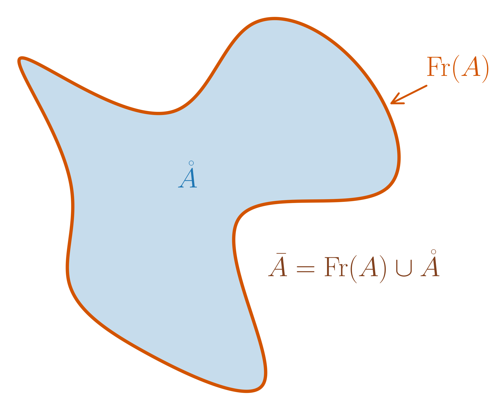
\[\mathop{\mathrm{Fr}}(A) = \overline{A}\cap \overline{E \setminus A} = \overline{A} \cap E \setminus \mathring{A} = \overline{A} \setminus \mathring{A}.\]
Soit \((E,\left\|\cdot\right\|)\) un espace vectoriel normé, \(a \in E\) et \(r> 0\) alors \(\mathop{\mathrm{Fr}}(B(a,r)) = \overline{B(a,r)}\setminus \overbracket{B(a,r)}^\circ =\overline{B}(a,r)\setminus B(a,r) = S(a,r)\) et de même, \(\mathop{\mathrm{Fr}}(\overline{B}(a,r)) = S(a,r).\)
Dans \(E = \mathbb{R}\), \(\mathop{\mathrm{Fr}}(\mathbb{Q}) = \mathbb{R}\setminus \emptyset = \mathbb{R}.\)
Soient \((E,\left\|\cdot\right\|)\) et \(A \subset E.\)
Alors \(\mathop{\mathrm{Fr}}(A)\) est un fermé de \(E.\)
\(\mathop{\mathrm{Fr}}(A) = \overline{A} \cap \overline{E \setminus A}\) est un fermé comme intersection de deux fermés.
Soit \(A \subset \mathbb{R}\),
on dit que \(A\) est un voisinage de \(+\infty\) s’il existe \(\alpha \in \mathbb{R}\) tel que \(A \supset [\alpha,+\infty[\),
on dit que \(A\) est un voisinage de \(-\infty\) s’il existe \(\beta \in \mathbb{R}\) tel que \(A \supset ]-\infty,\beta].\)
On note \(\mathcal{V}(\pm \infty)\) l’ensemble des voisinages de \(\pm \infty.\)
Les propriétés déjà démontrées pour les voisinages s’appliquent à ces nouveaux voisinages, par exemple :
Si \(A \subset B\) et \(A \in \mathcal{V}(\pm \infty)\) alors \(B \in \mathcal{V}(\pm \infty)\),
une intersection finie de voisinages de \(\pm \infty\) est un voisinage de \(\pm \infty\),
une union quelconque de voisinages de \(\pm \infty\) est un voisinage de \(\pm \infty\),
on peut remplacer dans la définition, les intervalles fermés (\([\alpha,+\infty[\), \(]-\infty,\beta]\)) par des intervalles ouverts (\(]\alpha,+\infty[\), \(]-\infty,\beta[\) ).
On peut maintenant réécrire la proposition [prop:convergence_un_debut_voisinage] en prenant en compte le cas où \(u_n \xrightarrow[n \to +\infty]{} \pm \infty\) dans \(E = \mathbb{R}.\)
Soit \(\left(u_n\right)\) une suite de \(\mathbb{R}.\) Alors, \[u_n \xrightarrow[n \to +\infty]{} \pm \infty \iff \forall V \in \mathcal{V}(\pm \infty), \exists N \in \mathbb{N}/ \forall n \geq N, u_n \in V.\]
On traite le cas de \(+\infty\) et la preuve est similaire pour \(-\infty.\)
\((\Longrightarrow)\) Soit \(V \in \mathcal{V}(+\infty)\), il existe \(\alpha \in \mathbb{R}\) tel que \([\alpha,+\infty[ \subset V.\)
Or, \(u_n \xrightarrow[n \to +\infty]{} +\infty\) donc il existe \(N \in \mathbb{N}\) tel que pour tout \(n \geq N, u_n \geq \alpha.\)
Donc pour tout \(n \geq N\), \(u_n \in V.\)
Soit \(\alpha \in \mathbb{R}\), \([\alpha,+\infty[ \in \mathcal{V}(+\infty)\) donc il existe \(N \geq 0\) tel que pour tout \(n \geq N\), \(u_n \in [\alpha,+\infty[ \iff u_n \geq \alpha.\) Donc \(u_n \xrightarrow[n \to +\infty]{} +\infty.\)
On peut adapter aussi la proposition [prop:adherence_un_debut_voisinage], en définissant le fait que \(+\infty\) soit valeur d’adhérence ainsi : \[\begin{aligned} +\infty \text{ valeur d'adhérence de $\left(u_n\right)$} \iff & \forall \alpha \in \mathbb{R}, \forall N \geq 0, \exists n \geq N / v_n \geq \alpha \\ \iff &\forall N \geq 0, \left(u_n\right)_{n \geq N} \text{ non majorée} \\ \iff &\left(u_n\right) \text{ non majorée} \\ \iff & \text{il existe une sous-suite $\left(u_{\varphi(n)}\right)$ de $\left(u_n\right)$ telle que} \\ & \text{ $u_{\varphi(n)} \xrightarrow[n \to +\infty]{} \infty.$} \end{aligned}\]
En écrivant une définition similaire pour \(-\infty\), on peut remarquer que toute suite de \(\mathbb{R}\) admet une valeur d’adhérence dans \(\overline{\mathbb{R}}.\)
On peut même réécrire plus généralement la proposition [prop:convergence_un_debut_voisinage] comme ci-dessous.
Soient \((E,\left\|\cdot\right\|)\) un espace vectoriel normé, \(\left(u_n\right)\) une suite de \(E\) et \(\ell \in E.\) Alors, \[u_n \xrightarrow[n \to +\infty]{} \ell \iff \forall V \in \mathcal{V}(\ell), \exists W \in \mathcal{V}(+\infty)/ \forall n \in \mathbb{N}\cap W, u_n \in V\] avec éventuellement \(\ell = \pm \infty\) dans le cas \(E = \mathbb{R}.\)
On traite les cas \(\ell \neq \pm \infty\) qui s’adaptent facilement.
\((\Longrightarrow)\) Soit \(V \in \mathcal{V}(\ell)\), il existe \(\varepsilon > 0\) tel que \(\overline{B}(\ell,\varepsilon) \subset V.\)
Or, \(\varepsilon > 0\) donc il existe \(N \in \mathbb{N}\) tel que pour tout \(n \geq N, u_n \in \overline{B}(\ell,r)\subset V.\)
Avec \(W = [N,+\infty[\), on en déduit pour tout \(n \in \mathbb{N}\cap W, u_n \in V.\)
Soit \(\varepsilon > 0\), \(\overline{B}(\ell,\varepsilon) \in \mathcal{V}(\ell)\) donc il existe \(W \in \mathcal{V}(+\infty)\) tel que pour tout \(n \in W \cap \mathbb{N}\), \(u_n \in \overline{B}(\ell,\varepsilon) \iff \left\|u_n-\ell\right\| \leq \varepsilon.\)
Or, comme \(W \in \mathcal{V}(+\infty)\), il existe \(\alpha \in \mathbb{R}\) tel que \([\alpha,+\infty[ \subset W.\)
On en déduit alors avec \(N = \lfloor \alpha \rfloor+1\) que pour tout \(n \geq N\), \(\left\|u_n-\ell\right\|\leq \varepsilon\) donc \(u_n \xrightarrow[n \to +\infty]{} \ell.\)
Soient \((E,\left\|\cdot\right\|)\), \((F,N(\cdot))\) deux espaces vectoriels normés, \(A \subset E\) tel que \(A \neq \emptyset\) et \(f : A \to F.\)
Soit \(a \in \overline{A}\) et \(\ell \in F\), on dit que \(f(x)\) tend vers \(\ell\) quand \(x\) tend vers \(a\) si \[\begin{aligned} & \forall \varepsilon > 0, \exists \eta > 0 / \begin{array}{l} \left\|x-a\right\| \leq \eta \\ x \in A \end{array} \Longrightarrow N(f(x)-\ell) \leq \varepsilon, \\ \text{ie } & \forall \varepsilon > 0, \exists \eta > 0 / f\left(\overline{B}(a,\eta) \cap A\right) \subset \overline{B}(f(x),\varepsilon). \end{aligned}\]
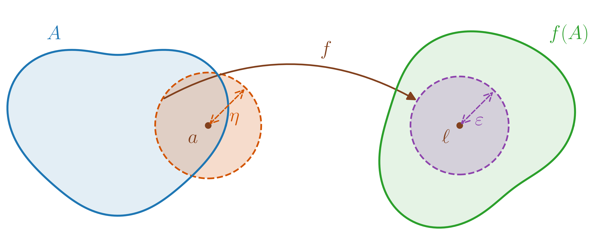
On écrit alors \(f(x) \xrightarrow[x \to a]{} \ell\) ou \(\ell = \lim_{x \longrightarrow a} f(x) = \lim_{a} f.\)
Notons que \(\overline{B}(a,\eta) \cap A \neq \emptyset\) pour tout \(\eta > 0\) car \(a \in \overline{A}.\)
Soient \((E,\left\|\cdot\right\|)\), \((F,N(\cdot))\) deux espaces vectoriels normés, \(A \subset E\) tel que \(A \neq \emptyset\), \(f : A \to F\) et \(a \in \overline{A}.\)
S’il existe \(\ell \in F\) tel que \(f(x) \xrightarrow[x \to a]{} \ell\) alors \(\ell\) est unique et est appelée la limite de \(f\) quand \(x\) tend vers \(a.\)
Supposons par l’absurde qu’il existe aussi \(\ell' \in F\) tel que \(f(x) \xrightarrow[x \to a]{} \ell'.\)
Alors, \(\varepsilon = \frac{N(\ell-\ell')}{4} > 0\) donc il existe \(\eta > 0\) tel que pour tout \(x \in A \cap \overline{B}(a,\eta), N(f(x)-\ell) \leq \varepsilon\) et il existe \(\eta' > 0\) tel que pour tout \(x \in A \cap \overline{B}(a,\eta'), N(f(x)-\ell') \leq \varepsilon.\)
Donc, en notant \(\eta'' = \min(\eta,\eta')\), on a pour \(x \in A \cap \overline{B}(a,\eta'')\),
\(N(\ell-\ell') = \mathbb{N}(\ell-f(x)+f(x)-\ell') \leq \mathbb{N}(\ell-f(x))+N(f(x)-\ell') \leq 2\varepsilon = \frac{N(\ell-\ell')}{2}\) donc \(N(\ell-\ell')=0\) et \(\ell = \ell'\), ce qui est absurde.
Soient \((E,\left\|\cdot\right\|)\), \((F,N(\cdot))\) deux espaces vectoriels normés, \(A \subset E\) tel que \(A \neq \emptyset\), \(f : A \to F\), \(a \in \overline{A}\) et \(\ell \in F.\)
Alors,
\[f(x) \xrightarrow[x \to a]{} \ell \iff \forall V \in \mathcal{V}(\ell), \exists W \in \mathcal{V}(a) / \forall x \in W \cap A, f(x) \in V.\]
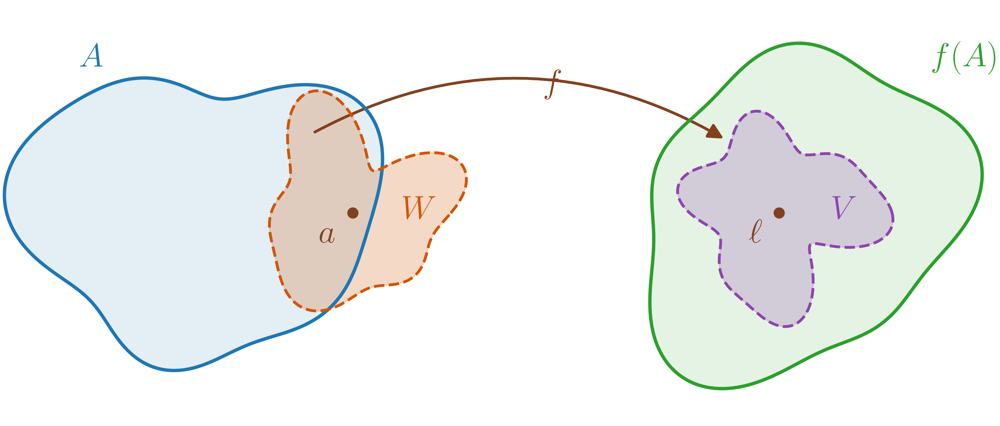
\((\Longrightarrow)\) Soit \(V \in \mathcal{V}(\ell)\), il existe \(\varepsilon > 0\) tel que \(\overline{B}(\ell, \varepsilon) \subset V.\) Comme \(f(x) \xrightarrow[x \to a]{} \ell\), il existe \(\eta > 0\) tel que \(f(\overline{B}(a,\eta) \cap A) \subset \overline{B}(\ell, \varepsilon).\)
On a donc, avec \(W = \overline{B}(a,\eta) \in \mathcal{V}(a)\), pour tout \(W \cap A, f(x) \in V.\)
\((\Longleftarrow)\) Soit \(\varepsilon > 0\), \(\overline{B}(\ell, \varepsilon) \in \mathcal{V}(\ell).\)
Donc il existe \(W \in \mathcal{V}(a)\) tel que pour tout \(x \in W \cap A, f(x) \in V.\)
Or, \(W \in \mathcal{V}(a)\) donc il existe \(\eta > 0\) tel que \(\overline{B}(a,\eta) \subset W\) et \(f(\overline{B}(a,\eta) \cap A) \subset \overline{B}(\ell, \varepsilon).\)
Soient \((E,\left\|\cdot\right\|)\), \((F,N(\cdot))\) deux espaces vectoriels normés, \(A \subset E\) tel que \(A \neq \emptyset\) et \(f : A \to F.\)
Soit \(\begin{array}{ll} & a \in \overline{A} \\ &\text{ou } a = +\infty \text{ si $E = \mathbb{R}$ et $A$ non majorée} \\ &\text{ou } a = -\infty \text{ si $E = \mathbb{R}$ et $A$ non minorée} \end{array}\) et \(\begin{array}{ll} & \ell \in F \\ &\text{ou } \ell = +\infty \text{ si $F = \mathbb{R}$} \\ &\text{ou } \ell = -\infty \text{ si $F = \mathbb{R}$} \end{array}.\)
On dit que \(f(x)\) tend vers \(\ell\) quand \(x\) tend vers \(a\) si \[\forall V \in \mathcal{V}(\ell), \exists W \in \mathcal{V}(a) / \forall x \in W \cap A, f(x) \in V.\]
\(\ell\) est alors unique et est appelée la limite de \(f\) quand \(x\) tend vers \(a.\)
On écrit \(f(x) \xrightarrow[x \to a]{} \ell\) ou \(\ell = \lim_{x \longrightarrow a} f(x) = \lim_{a} f.\)
Voici l’écriture de quelques cas sans voisinages pour être concret.
\(f(x) \xrightarrow[x \to a]{} +\infty \iff \forall \alpha \in \mathbb{R}, \exists \eta > 0 / \forall x \in A \cap \overline{B}(a,\eta), f(x) \geq \alpha\),
\(f(x) \xrightarrow[x \to -\infty]{} \ell \in F \iff \forall \varepsilon > 0, \exists \beta \in \mathbb{R}/ \forall x \in A, x\leq \beta \Longrightarrow N(f(x)-\ell) \leq \varepsilon\),
\(f(x) \xrightarrow[x \to +\infty]{} -\infty \in F \iff \forall \beta \in \mathbb{R}, \exists \alpha \in \mathbb{R}/ \forall x \in A, x\geq \alpha \Longrightarrow f(x) \leq \beta.\)
Soient \((E,\left\|\cdot\right\|)\), \((F,N(\cdot))\) deux espaces vectoriels normés, \(A \subset E\) tel que \(A \neq \emptyset\), \(f : A \to F\) et \(a \in \overline{A}.\)
On dit que \(f\) converge en \(a\) s’il existe \(\ell \in F\) tel que \(f(x) \xrightarrow[x \to a]{} \ell.\)
Dans toutes les propositions suivantes, quand on écrit \(f(x) \xrightarrow[x \to a]{} \ell\), cela sous-entend
\(\begin{array}{ll} & a \in \overline{A} \\ &\text{ou } a = +\infty \text{ si $E = \mathbb{R}$ et $A$ non majorée} \\ &\text{ou } a = -\infty \text{ si $E = \mathbb{R}$ et $A$ non minorée} \end{array}\) et \(\begin{array}{ll} & \ell \in F \\ &\text{ou } \ell = +\infty \text{ si $F = \mathbb{R}$} \\ &\text{ou } \ell = -\infty \text{ si $F = \mathbb{R}$} \end{array}.\)
Soient \((E,\left\|\cdot\right\|)\), \((F,N(\cdot))\) deux espaces vectoriels normés, \(A \subset E\) tel que \(A \neq \emptyset\) et \(f : A \to F\) telle que \(f(x) \xrightarrow[x \to a]{} \ell\) avec \(\ell \neq \pm \infty.\)
Alors, \(f\) est bornée au voisinage de \(a\), ie il existe \(W \in \mathcal{V}(a)\) et \(M \in \mathbb{R}^{+}\) tels que pour tout \(x \in W \cap A, N(f(x)) \leq M.\)
En considérant \(\overline{B}(\ell,1) \in \mathcal{V}(\ell)\), il existe \(W \in \mathcal{V}(a)\) tel que pour tout \(x \in W \cap A, f(x) \in \overline{B}(\ell,1).\)
On a donc pour tout \(x \in W \cap A, N(f(x)-\ell) \leq 1 \Longrightarrow N(f(x)) = N(f(x)-\ell+\ell) \leq 1+N(\ell).\)
Soient \((E,\left\|\cdot\right\|)\), \((F,N(\cdot))\) deux espaces vectoriels normés, \(A \subset E\) tel que \(A \neq \emptyset\) et \(f : A \to F.\)
Alors, \[f(x) \xrightarrow[x \to a]{} \ell \iff \begin{array}{l} \text{ Pour toute suite $\left(x_n\right)$ de $A$ telle que $x_n \xrightarrow[n \to +\infty]{} a$,} \\ \text{on a $f(x_n) \xrightarrow[n \to +\infty]{} \ell.$} \end{array}\]
\((\Longrightarrow)\) Soit \(\left(x_n\right)\) une suite de \(A\) telle que \(x_n \xrightarrow[n \to +\infty]{} A\) et \(V \in \mathcal{V}(\ell).\)
\(f(x) \xrightarrow[x \to a]{} \ell\) donc il existe \(W \in \mathcal{V}(a)\) tel que pour tout \(x \in A \cap W, f(x) \in V.\)
Or, il existe \(N \geq 0\) tel que pour tout \(n \geq N, x_n \in W \cap A.\)
Donc pour tout \(n \geq N, f(x_n) \in V\) et \(f(x_n) \xrightarrow[n \to +\infty]{} \ell.\)
\((\Longleftarrow)\) Montrons la contraposée et supposons \(f(x) \centernot{\xrightarrow[x \to a]{}} \ell.\)
Alors, il existe \(V \in \mathcal{V}(\ell)\) tel que pour tout \(W \in \mathcal{V}(a)\), \(f(W \cap A) \centernot{\subset} V.\)
Donc, pour \(n \in \mathbb{N}\), en considérant \(W_n = \left\{ \begin{array}{ll} \overline{B}\left(a,\frac{1}{2^n}\right)& \text{si } a \neq \pm\infty, \\ \left[n,+\infty\right[ & \text{si } a = +\infty, \\ \left]-\infty,-n]\right. & \text{si } a = -\infty, \\ \end{array} \right.\) il existe \(x_n \in W_n \cap A\) tel que \(f(x_n) \notin V.\)
On a donc \(\left(x_n\right)\) une suite de \(A\) telle que \(x_n \xrightarrow[n \to +\infty]{} \left\{\begin{array}{ll} a & \mbox{ si $a \neq \pm \infty$,} \\ +\infty & \mbox{ si $a = +\infty$,} \\ -\infty & \mbox{ si $a = -\infty$} \\ \end{array}\right.\) et \(f(x_n) \centernot{\xrightarrow[n \to +\infty]{}} \ell.\)
Soient \((E,\left\|\cdot\right\|)\), \((F,N(\cdot))\), \((G,N'(\cdot))\) trois espaces vectoriels normés.
Soient \(A \subset E\) tel que \(A \neq \emptyset\) et \(f : A \to F.\)
Soient \(B \subset F\) tel que \(f(A) \subset B\) et \(g : B \to G.\)
On a alors \(g \circ f : A \to G.\)
Si \(f(x) \xrightarrow[x \to a]{} \ell\) et \(g(y) \xrightarrow[y \to \ell]{} \ell'\) alors \(\left(g \circ f\right)(x) \xrightarrow[x \to a]{} \ell'.\)
Soit \(\left(x_n\right)\) une suite de \(A\) telle que \(x_n \xrightarrow[n \to +\infty]{} a\) alors \(f(x_n) \xrightarrow[n \to +\infty]{} \ell\) puis \(\left(g \circ f\right)(x_n) = g(f(x_n)) \xrightarrow[n \to +\infty]{} \ell'\) donc \(\left(g \circ f\right)(x) \xrightarrow[x \to a]{} \ell'.\)
Soient \((E,\left\|\cdot\right\|)\), \((F,N(\cdot))\) deux espaces vectoriels normés, \(A \subset E\) tel que \(A \neq \emptyset\), \(f : A \to F\) telle que \(f(x) \xrightarrow[x \to a]{} \ell\) et \(g : A \to F\) telle que \(g(x) \xrightarrow[x \to a]{} \ell'.\)
Alors,
\(N(f(x)) \xrightarrow[x \to a]{} N(\ell)\),
Soient \(\lambda, \mu \in \mathbb{K}\), \(\lambda f(x)+\mu g(x) \xrightarrow[x \to a]{} \lambda \ell + \mu \ell'\),
\(N(f(x)-g(x)) \xrightarrow[x \to a]{} N(\ell-\ell')\),
Si \(F = \mathbb{K}\), \(f(x)g(x) \xrightarrow[x \to a]{} \ell\ell' \left(\text{ si l'opération est possible dans $\overline{\mathbb{R}}$ pour $\mathbb{K}=\mathbb{R}$}\right)\),
Si \(F = \mathbb{K}\) et \(\ell \neq 0\) alors \(\frac{1}{f}\) est définie autour de \(a\) et \(\frac{1}{f(x)} \xrightarrow[x \to a]{} \frac{1}{\ell} \left(\text{ si l'opération est possible dans $\overline{\mathbb{R}}$ pour $\mathbb{K}=\mathbb{R}$}\right)\),
Si \((F,\langle \cdot,\cdot,\rangle\) est préhilbertien (normé par sa norme préhilbertienne), \(\langle f(x), g(x) \rangle \xrightarrow[x \to a]{} \langle \ell, \ell'\rangle.\)
Soit \(\left(x_n\right)\) suite de \(A\) telle que \(x_n \xrightarrow[n \to +\infty]{}\) alors \(f(x_n) \xrightarrow[n \to +\infty]{} \ell\) et \(g(x_n) \xrightarrow[n \to +\infty]{} \ell'\) donc
\(N(f(x_n)) \xrightarrow[n \to +\infty]{} N(\ell)\),
\(\lambda f(x_n)+\mu g(x_n) \xrightarrow[n \to +\infty]{} \lambda\ell+\mu\ell'\),
\(N(f(x_n)-g(x_n)) \xrightarrow[x \to a]{} N(\ell-\ell')\),
Si \(F = \mathbb{K}\), \(f(x_n)g(x_n) \xrightarrow[x \to a]{} \ell\ell'\),
Si \(F = \mathbb{K}\) et \(\ell \neq 0\), on traite le cas \(a\) et \(\ell\) finis, qui s’adapte facilement aux cas infinis. \(\frac{\left|\ell\right|}{2} > 0\) donc il existe \(\eta > 0\) tel que pour tout \(x \in \overline{B}(a,\eta) \cap A\), \(\left|f(x)-\ell\right| \leq \frac{\left|\ell\right|}{2}.\)
On a donc, pour \(x \in \overline{B}(a,\eta) \cap A\), \(\left|f(x)\right| =\left|f(x)-\ell+\ell\right| \geq \left|\ell\right|-\left|f(x)-\ell\right| \geq \frac{\left|\ell\right|}{2} > 0.\)
On en déduit que \(\frac{1}{f}\) est définie sur \(\overline{B}(a,\eta) \cap A\) et soit \(\left(u_n\right)\) suite de \(\overline{B}(a,\eta) \cap A\) telle que \(u_n \xrightarrow[n \to +\infty]{} a\), on a \(\frac{1}{f(u_n)} \xrightarrow[n \to +\infty]{} \frac{1}{\ell}.\)
Si \((F,\langle \cdot,\cdot,\rangle\) est préhilbertien, \(\langle f(x_n), g(x_n) \rangle \xrightarrow[x \to a]{} \langle \ell, \ell'\rangle\) (comme déjà vu pour les suites).
Soient \(f,g \in \mathscr{F}(A,\mathbb{R})\) telles que \(f(x) \xrightarrow[x \to a]{} \ell \in \overline{\mathbb{R}}\) et \(g(x) \xrightarrow[x \to a]{} \ell' \in \overline{\mathbb{R}}.\) On suppose que \(f(x) \leq g(x)\) au voisinage de \(a.\) Alors \(\ell \leq \ell'.\)
Soient \(f,g,h \in \mathscr{F}(A,\mathbb{R})\) telles que \(f(x) \xrightarrow[x \to a]{} \ell \in \overline{\mathbb{R}}\) et \(h(x) \xrightarrow[x \to a]{} \ell \in \overline{\mathbb{R}}.\) On suppose que \(f(x) \leq g(x) \leq h(x)\) au voisinage de \(a.\) Alors \(g(x) \xrightarrow[x \to a]{} \ell \in \mathbb{R}.\)
(Théorème de la limite monotone) Soit \(f : ]a,b[ \to \mathbb{R}\), croissante. Alors, \(f\) possède une limite \(\ell_b \in \overline{\mathbb{R}}\) en \(b.\) Si \(f\) est majorée, \(\ell_b = \sup_{x \in ]a,b[}f(x)\) et sinon \(\ell_b = +\infty.\) De même, \(f\) possède une limite \(\ell_a \in \overline{\mathbb{R}}\) en \(a.\) Si \(f\) est minorée, \(\ell_a = \inf_{x \in ]a,b[}f(x)\) et sinon \(\ell_a = -\infty.\)
Appliquer le théorème de la limite monotone pour montrer :
Soit \(f : I \to \mathbb{R}\) convexe et dérivable (avec \(I\) intervalle de \(\mathbb{R}\)). Montrer que \(f\) est \(\mathscr{C}^1.\)
Soit \(a \in I\) tel que \(a \neq \inf I.\)
Comme \(f'\) est croissante, \(\ell = \lim_{x \to a^-} f'(x)\) existe dans \(\mathbb{R}.\)
De plus, par l’inégalité des accroissements finis, pour \(x < a\), il existe \(c_x \in ]x,a[\) tel que \(f'(c_x) = \frac{f(x)-f(a)}{x-a}.\)
On a donc, en passant à la limite \(x \longrightarrow a^-\), \(\ell = f'(a).\)
De même, on peut montrer que \(f'\) est continue à droite en \(a.\)
Soient \(E\) un \(\mathbb{K}\)-espace vectoriel et \(N_1,N_2\) deux normes sur \(E.\)
On dit que \(N_2\) est plus fine que \(N_1\) s’il existe \(k > 0\) tel que \[\begin{aligned} & \text{pour tout } x \in E, N_1(x) \leq k N_2(x) \\ \text{ie } & \left\{\frac{N_1(x)}{N_2(x)}/ x \in E \setminus\left\{0\right\}\right\} \text{est majoré.} \end{aligned}\]
La relation « est plus fine que » est réflexive, transitive mais pas symétrique ni antisymétrique.
Etrange, non ? on dit que \(N_2\) est plus fine que \(N_1\) alors qu’elle semble « plus grande » via \(N_1(x) \leq k N_2(x).\)
En fait, \(N_2\) est plus fine car plus précise, plus exigeante. En effet, si \(N_2\) repère deux points \(x,y\) plutôt proches, ils véfifient \(N_2(x-y) \leq \varepsilon\) et \(N_1\) repère aussi cette proximité via \(N_1(x-y) \leq kN_2(x-y) \leq k\varepsilon.\)
En revanche, il se peut que \(N_1\) repère une proximité que \(N_2\) ne verra pas forcément. Ceci est illustré dans l’exemple [ex:norme1_normeinfty_plusfine] avec la suite \(\left(f_n\right).\) \(\left\|\cdot\right\|_1\) lui associe une proximité avec \(0\), que ne tolère pas \(\left\|\cdot\right\|_\infty\) qui inspecte plus précisément \(f_n\) et en particulier son pic en \(t=1.\)
Dans \(E = \mathscr{C}([0,1],\mathbb{R})\), \(\left\|\cdot\right\|_\infty\) est plus fine que \(\left\|\cdot\right\|_1.\)
En effet, pour tout \(f \in E\),
\[\left\|f\right\|_1 = \int_0^1 \left|f(t)\right|dt \leq \int_0^1 \sup_{t \in [0,1]}\left|f(t)\right|dt = \int_0^1 \left\|f\right\|_\infty dt = \left\|f\right\|_{\infty}.\]
En revanche, \(\left\|\cdot\right\|_1\) n’est pas plus fine que \(\left\|\cdot\right\|_\infty.\) En effet, en considérant pour \(n \in \mathbb{N}\), \(\begin{array}{lllll} f_n & : & [0,1] & \to & \mathbb{R} \\ & & t & \mapsto & t^n \end{array} \in E\), on a \(\left\|f_n\right\|_\infty = f_n(1) = 1\) et \(\left\|f_n\right\|_1 = \int_0^1 t^ndt = \frac{1}{n+1}.\)
Donc \(\frac{\left\|f_n\right\|_\infty}{\left\|f_n\right\|_1} = n+1 \xrightarrow[n \to +\infty]{}+\infty\) et \(\left\{\frac{\left\|f\right\|_\infty}{\left\|f\right\|_1} / f\in E \setminus \left\{0\right\}\right\}\) n’est pas majoré.
Soient \(E\) un \(\mathbb{K}\)-espace vectoriel et \(N_1,N_2\) deux normes sur \(E\) telles que \(N_2\) est plus fine que \(N_1\), ie il existe \(k > 0\) tel que pour tout \(x \in E\), \(N_1(x) \leq kN_2(x).\)
Alors, soit \(\left(x_n\right)\) une suite de \(E\), \(\ell \in E\), \(A \subset E\) et \(x \in E\),
Si \(x_n \xrightarrow[n \to +\infty]{N_2} \ell\) alors \(x_n \xrightarrow[n \to +\infty]{N_1} \ell\),
Si \(\ell\) est valeur d’adhérence de \(\left(x_n\right)\) pour \(N_2\) alors \(\ell\) est valeur d’adhérence de \(\left(x_n\right)\) pour \(N_1.\)
Si \(A\) est bornée pour \(N_2\) alors \(A\) est bornée pour \(N_1\),
Si \(A\) est un voisinage de \(x\) pour \(N_1\) alors \(A\) est un voisinage de \(x\) pour \(N_2\),
L’intérieur de \(A\) pour \(N_1\) est inclus dans l’intérieur de \(A\) pour \(N_2\),
Si \(A\) est un ouvert pour \(N_1\) alors \(A\) est un ouvert pour \(N_2\),
Si \(A\) est un fermé pour \(N_1\) alors \(A\) est un fermé pour \(N_2\),
L’adhérence de \(A\) pour \(N_2\) est incluse dans l’adhérence de \(A\) pour \(N_1\),
⚠️ \(N_2\) et \(N_1\) ne sont pas toujours écrits du même côté de la phrase...
On note \(\overline{B}_N\) et \(B_N\) les boules associées à une norme \(N.\)
\[N_1(x_n-\ell) \leq k N_2(x_n-\ell) \xrightarrow[n \to +\infty]{} 0.\]
Il existe une extraction \(\varphi : \mathbb{N}\to \mathbb{N}\) telle que \(N_2(x_{\varphi(n)}-\ell) \xrightarrow[n \to +\infty]{} 0\) et donc \[N_1(x_{\varphi(n)}-\ell) \leq k N_2(x_{\varphi(n)}-\ell) \xrightarrow[n \to +\infty]{} 0.\]
Il existe \(M \in \mathbb{R}^{+}\) tel que pour tout \(x \in A\), \(N_2(x) \leq M\) et donc \[\forall x \in A, N_1(x) \leq kN_2(x) \leq kM.\]
Il existe \(r > 0\) tel que \(B_{N_1}(x,r) = \left\{y \in E/N_1(x-y) \leq r\right\} \subset A.\)
Or, \(N_2(x-y) \leq r' \Longrightarrow N_1(x-y) \leq kr'\) donc \(B_{N_2}\left(x, \frac{r}{k}\right) \subset B_{N_1}\left(x,r\right) \subset A\) et \(A\) est un voisinage de \(x\) pour \(N_2.\)
Soit \(y \in E\), \[\begin{aligned} & y \text{ est dans l'intérieur de $A$ pour $N_1$} \\ \Longrightarrow & \text{ $A$ est un voisinage de $y$ pour $N_1$} \\ \Longrightarrow & \text{ $A$ est un voisinage de $y$ pour $N_2$} \text{ par le point 4.} \\ \Longrightarrow & y \text{ est dans l'intérieur de $A$ pour $N_2.$} \end{aligned}\]
\[\begin{aligned} & A \text{ est un ouvert pour $N_1$} \\ \Longrightarrow & \text{ tous les points de $A$ sont dans l'intérieur de $A$ pour $N_1$} \\ \Longrightarrow & \text{ tous les points de $A$ sont dans l'intérieur de $A$ pour $N_2$} \text{ par le point 5.} \\ \Longrightarrow & A \text{ est un ouvert pour $N_2.$} \end{aligned}\]
Soit \(\left(a_n\right)\) une suite de \(A\) telle que \(a_n \xrightarrow[n \to +\infty]{N_2} \ell \in E.\)
Alors, par le point 1., \(a_n \xrightarrow[n \to +\infty]{N_1} \ell.\) De plus, comme \(A\) est un fermé pour \(N_1\), on a \(\ell \in A\) donc \(A\) est un fermé pour \(N_2.\)
Soit \(y\) un point adhérent à \(A\) pour \(N_2.\)
Alors, il existe \(\left(a_n\right)\) suite de \(A\) telle que \(a_n \xrightarrow[n \to +\infty]{N_2} y.\)
Par le point 1., \(a_n \xrightarrow[n \to +\infty]{N_1} y\) donc \(y\) est dans l’adhérence de \(A\) pour \(N_1.\)
Soient \(E\) un \(\mathbb{K}\)-espace vectoriel et \(N_1,N_2\) deux normes sur \(E.\)
On dit que \(N_2\) et \(N_1\) sont équivalentes si \(N_2\) est plus fine que \(N_1\) et \(N_1\) est plus fine que \(N_2.\)
Autrement dit, il existe \(\alpha, \beta > 0\) telle que pour tout \(x \in E\),
\[\alpha N_1(x) \leq N_2(x) \leq \beta N_1(x).\]
La relation « est équivalente à » est réflexive, transitive et symétrique donc c’est une relation d’équivalence sur les normes de \(E.\)
Dans \(E = \mathbb{K}^n\),
\(\left\|\cdot\right\|_1\) et \(\left\|\cdot\right\|_\infty\) sont équivalentes.
En effet, pour \(x \in E\), \(\left\|x\right\|_1 = \sum_{i=1}^n \left|x_i\right| \leq \sum_{i=1}^n \max_{1 \leq i \leq n} \left|x_i\right| = n \left\|x\right\|_\infty.\)
Ensuite, \(\left\|x\right\|_\infty \leq \left\|x\right\|_\infty+\underbrace{\ldots}_{\geq 0} = \sum_{i=1}^n \left|x_i\right| = \left\|x\right\|_1\) car l’un des \(i \in [\![ 1,n ]\!]\) vérifie \(\left|x_{i}\right| = \max_{1 \leq i \leq n}\left|x_{i}\right| = \left\|x\right\|_\infty.\)
On a donc \[\left\|x\right\|_\infty\leq \left\|x\right\|_1 \leq n \left\|x\right\|_\infty \quad \text{(ici, $n$ est fixé, comme étant la dimension de $E$).}\]
\(\left\|\cdot\right\|_2\) et \(\left\|\cdot\right\|_\infty\) sont équivalentes.
En effet, pour \(x \in E\),
\(\left\|x\right\|_2 = \sqrt{\sum_{i=1}^n \left|x_i\right|^2} \leq \sqrt{\sum_{i=1}^n \max_{1 \leq i \leq n} \left|x_i\right|^2} = \sqrt{\left\|x\right\|_\infty^2 \sum_{i=1}^n }=\sqrt{n} \left\|x\right\|_\infty.\)
Ensuite, \(\left\|x\right\|_\infty = \sqrt{\left\|x\right\|_\infty^2}\leq \sqrt{\left\|x\right\|_\infty^2+\underbrace{\ldots}_{\geq 0}} = \sqrt{\sum_{i=1}^n \left|x_i\right|^2} = \left\|x\right\|_2\) car l’un des \(i \in [\![ 1,n ]\!]\) vérifie \(\left|x_{i}\right| = \max_{1 \leq i \leq n}\left|x_{i}\right| = \left\|x\right\|_\infty.\)
On a donc \[\left\|x\right\|_\infty\leq \left\|x\right\|_2 \leq \sqrt{n} \left\|x\right\|_\infty \quad \text{(ici, $n$ est fixé, comme étant la dimension de $E$).}\]
\(\left\|\cdot\right\|_1\) et \(\left\|\cdot\right\|_2\) sont équivalentes.
En effet, pour \(x \in E\), par Cauchy-Schwarz,
\(\left\|x\right\|_1 = \sum_{i=1}^n \left|x_i\right| \leq \sqrt{\sum_{i=1}^n 1^2}\sqrt{\sum_{i=1}^n \left|x_i\right|^2} = \sqrt{n}\left\|x\right\|_2.\)
De plus, pour \(x \in E\) tel que \(\left\|x\right\|_1 = 1\) alors \(\sum_{i=1}^n \left|x_i\right| = 1\) donne \(\left|x_i\right|\leq 1\) pour tout \(1 \leq i \leq n.\)
On en déduit alors \(\left|x_i\right|^2\leq \left|x_i\right|\) pour tout \(1 \leq i \leq n\) puis \(\left\|x\right\|_2^2 \leq \left\|x\right\|_1 = 1\) puis \(\left\|x\right\|_2 \leq 1.\)
Alors, pour \(x \in E\) tel que \(x \neq 0_E\) quelconque, on a \(\left\|\frac{1}{\left\|x\right\|_1}x\right\|_1 = 1\) donc \(\frac{1}{\left\|x\right\|_1}\left\|x_2\right\| = \left\|\frac{1}{\left\|x\right\|_1}x\right\|_2 \leq 1\) puis \(\left\|x\right\|_2 \leq \left\|x\right\|_1.\)
On a donc \[\left\|x\right\|_1\leq \left\|x\right\|_1 \leq \sqrt{n} \left\|x\right\|_2 \quad \text{(ici, $n$ est fixé, comme étant la dimension de $E$).}\]
Dans \(E = \mathscr{C}(\left[a,b\right],\mathbb{R})\),
\(\left\|\cdot\right\|_\infty\) est plus fine que \(\left\|\cdot\right\|_1\) mais elles ne sont pas équivalentes.
En effet, pour tout \(f \in E\), \[\left\|f\right\|_1 = \int_a^b \left|f(t)\right|dt \leq \int_a^b \left\|f\right\|_\infty dt = (b-a)\left\|f\right\|_\infty.\] Cependant, en introduisant \(\begin{array}{lllll} f_n & : & [a,b] & \to & \mathbb{R} \\ & & t & \mapsto & (t-a)^n \end{array}\), on a pour \(n \in \mathbb{N}^{\star}\), \(\left\|f_n\right\|_\infty = (b-a)^n\) car \(0\leq f_n(t) \leq f(b)\) pour tout \(t \in [a,b]\) et \(\left\|f_n\right\|_1 = \int_a^b (t-a)^{n}dt = \left[\frac{1}{n+1}(t-a)^{n+1}\right] = \frac{1}{n+1}(b-a)^{n+1}.\)
Donc \(\frac{\left\|f_n\right\|_\infty}{\left\|f_n\right\|_1} = \frac{n+1}{b-a} \xrightarrow[n \to +\infty]{} +\infty.\)
\(\left\|\cdot\right\|_\infty\) est plus fine que \(\left\|\cdot\right\|_2\) mais elles ne sont pas équivalentes.
En effet, pour tout \(f \in E\), \[\left\|f\right\|_2 = \sqrt{\int_a^b \left|f(t)\right|^2dt} \leq \sqrt{\int_a^b \left\|f\right\|_\infty^2dt} = \sqrt{b-a}\left\|f\right\|_\infty.\] Cependant, en introduisant \(\begin{array}{lllll} f_n & : & [a,b] & \to & \mathbb{R} \\ & & t & \mapsto & (t-a)^n \end{array}\), on a pour \(n \in \mathbb{N}^{\star}\), \(\left\|f_n\right\|_\infty = (b-a)^n\) car \(f_n(t) \leq f(b)\) pour tout \(t \in [a,b]\) et \(\left\|f_n\right\|_2^2 = \int_a^b (t-a)^{2n}dt = \left[\frac{1}{2n+1}(t-a)^{2n+1}\right] = \frac{1}{2n+1}(b-a)^{2n+1}\) puis \(\left\|f_n\right\|_2 = \frac{1}{\sqrt{2n+1}}\sqrt{b-a}\left(b-a\right)^{n}.\)
Donc \(\frac{\left\|f_n\right\|_\infty}{\left\|f_n\right\|_2} = \frac{\sqrt{2n+1}}{\sqrt{b-a}} \xrightarrow[n \to +\infty]{} +\infty.\)
\(\left\|\cdot\right\|_2\) est plus fine que \(\left\|\cdot\right\|_1\) mais elles ne sont pas équivalentes.
En effet, pour tout \(f \in E\), par Cauchy-Schwarz \[\left\|f\right\|_1 = \int_a^b \left|f(t)\right|dt \leq \sqrt{\int_a^b 1^2dt}\sqrt{\int_a^b \left|f(t)\right|^2dt} = \sqrt{b-a}\left\|f\right\|_2.\] Cependant, en introduisant \(\begin{array}{lllll} f_n & : & [a,b] & \to & \mathbb{R} \\ & & t & \mapsto & (t-a)^n \end{array}\), on a pour \(n \in \mathbb{N}^{\star}\), comme calculé précédemment, pour \(n \in \mathbb{N}\), \(\left\|f_n\right\|_1 =\frac{1}{n+1}(b-a)^{n+1}\) et \(\left\|f_n\right\|_2 =\frac{1}{\sqrt{2n+1}}\sqrt{b-a}\left(b-a\right)^{n}.\)
Donc \(\frac{\left\|f_n\right\|_2}{\left\|f_n\right\|_1} = \frac{n+1}{\sqrt{b-a}\sqrt{2n+2}} \sim \frac{\sqrt{n}}{\sqrt{2}\sqrt{b-a}} \xrightarrow[n \to +\infty]{} +\infty.\)
(de la proposition [prop:norme_plus_fine_toutes_implications]) Soient \(E\) un \(\mathbb{K}\)-espace vectoriel et \(N_1,N_2\) deux normes sur \(E\) telles que \(N_2\) est plus fine que \(N_1\), ie il existe \(k > 0\) tel que pour tout \(x \in E\), \(N_1(x) \leq kN_2(x).\)
Alors, soit \(\left(x_n\right)\) une suite de \(E\), \(\ell \in E\), \(A \subset E\) et \(x \in E\),
\(x_n \xrightarrow[n \to +\infty]{N_2} \ell \iff x_n \xrightarrow[n \to +\infty]{N_1} \ell\),
\(\ell\) est valeur d’adhérence de \(\left(x_n\right)\) pour \(N_2\) \(\iff\) \(\ell\) est valeur d’adhérence de \(\left(x_n\right)\) pour \(N_1.\)
\(A\) est bornée pour \(N_2\) \(\iff\) \(A\) est bornée pour \(N_1\),
\(A\) est un voisinage de \(x\) pour \(N_1\) \(\iff\) \(A\) est un voisinage de \(x\) pour \(N_2\),
L’intérieur de \(A\) pour \(N_1\) est égal à l’intérieur de \(A\) pour \(N_2\),
\(A\) est un ouvert pour \(N_1\) \(\iff\) \(A\) est un ouvert pour \(N_2\),
\(A\) est un fermé pour \(N_1\) \(\iff\) \(A\) est un fermé pour \(N_2\),
L’adhérence de \(A\) pour \(N_2\) est égale à l’adhérence de \(A\) pour \(N_1\),
La frontière de \(A\) pour \(N_1\) est égale à la frontière de \(A\) pour \(N_2.\)
On a juste ajouté la propriété sur la frontière.
Soient \((E_1,N_1),\ldots,(E_p,N_p)\) des espaces vectoriels normés et \(\left\|\cdot\right\|_\infty\) la norme sur \(E_1 \times \ldots \times E_p\) introduite dans la proposition [prop:intro_norme_infinie_evn_produit].
Alors, soit \(\left(x_n\right)\) une suite de \(E_1 \times \ldots \times E_p\) telle que \(x_n = \left(x_{n,1},\ldots,x_{n,p}\right)\) pour tout \(n \in \mathbb{N}\) et \(\ell = (\ell_1,\ldots,\ell_p) \in E\),
\[x_n \xrightarrow[n \to +\infty]{\left\|\cdot\right\|_\infty} \ell \iff \forall 1 \leq j \leq p, x_{n,j} \xrightarrow[n \to +\infty]{N_j} \ell_j\]
\((\Longrightarrow)\) Pour tout \(1 \leq j \leq p\), \(N_j(x_{n,j}-\ell_j) \leq \left\|x_n-\ell\right\|_\infty \xrightarrow[n \to +\infty]{} 0.\)
\((\Longleftarrow)\) \(0 \leq \left\|x_n-\ell_j\right\|_\infty \leq \sum_{j=1}^p \underbrace{N_j(x_{n,j}-\ell_j)}_{\xrightarrow[n \to +\infty]{} 0} \xrightarrow[n \to +\infty]{} 0.\)
Dans \(E = \mathbb{R}^2\), \(u_n = \left(\cos \frac{1}{n}, e^{-n}\right) \xrightarrow[n \to +\infty]{\left\|\cdot\right\|_\infty} (1,0).\)
Soient \((F,\left\|\cdot\right\|), (E_1,N_1),\ldots,(E_p,N_p)\) des espaces vectoriels normés, \(\left\|\cdot\right\|_\infty\) la norme sur \(E_1 \times \ldots \times E_p\) introduite dans la proposition [prop:intro_norme_infinie_evn_produit], \(A \subset F\) et \(\begin{array}{lllll} f & : & A & \to & E_1\times \ldots \times E_p \\ & & x & \mapsto & \left(f_1(x),\ldots,f_p(x)\right) \end{array} .\)
Soient \(a \in \overline{A}\) et \(\ell = (\ell_1,\ldots,\ell_p) \in E\) alors \[f(x) \xrightarrow[x \to a]{\left\|\cdot\right\|_\infty} \ell \iff \forall 1 \leq j \leq p, f_j(x) \xrightarrow[x \to a]{N_j} \ell_j\]
Soit \(\left(x_n\right)\) une suite de \(F\) telle que \(x_n \xrightarrow[n \to +\infty]{\left\|\cdot\right\|} a\) alors \[\begin{aligned} f(x_n) \xrightarrow[x \to a]{\left\|\cdot\right\|_\infty} \ell & \iff \forall 1 \leq j \leq p, f_j(x_n) \xrightarrow[x \to a]{N_j} \ell_j. \end{aligned}\] Donc par caractérisation séquentielle de la limite d’une fonction, on a bien l’équivalence souhaitée.
La fonction \(\begin{array}{lllll} f & : & \mathbb{R} & \to & \mathbb{R}^2 \\ & & x & \mapsto & \left(\mathop{\mathrm{Arctan}}(x), \sin\left(\frac{1}{x+1}\right)\right) \end{array}\) vérifie \(f(x) \xrightarrow[x \to +\infty]{\left\|\cdot\right\|_\infty} \left(\frac{\pi}{2},0\right)\) et \(f(x) \xrightarrow[x \to 0]{\left\|\cdot\right\|_\infty} \left(0,\sin(1)\right).\)
Soient \((E_1,N_1),\ldots,(E_p,N_p)\) des espaces vectoriels normés, \(\left\|\cdot\right\|_\infty\) la norme sur \(E_1 \times \ldots \times E_p\) introduite dans la proposition [prop:intro_norme_infinie_evn_produit] et \(A = A_1 \times \ldots \times A_p \subset E_1 \times \ldots \times E_p.\)
Alors,
\(\mathring{A} = \mathring{A_1} \times \ldots \times \mathring{A_p}\),
\(\overline{A} = \overline{A_1} \times \ldots \times \overline{A_p}.\)
De plus,
Pour tout \(1 \leq j \leq p\), \(A_j\) est ouvert \(\iff\) \(A\) est ouvert.
Pour tout \(1 \leq j \leq p\), \(A_j\) est fermé \(\iff\) \(A\) est fermé.
\[\begin{aligned} x \in \mathring{A} & \iff \exists r > 0 / \overline{B}_{\left\|\cdot\right\|_\infty}(x,r) \subset A \\ & \iff \exists r > 0 / \overline{B}_{N_1}(x_1,r) \times \ldots \times \overline{B}_{N_1}(x_p,r) \subset A_1 \times \ldots \times A_p \\ & \iff \exists r > 0 / \forall 1 \leq j \leq p, \overline{B}_{N_j}(x_j,r) \subset A_j \\ & \iff \forall 1 \leq j \leq p, \exists r_j > 0 / \overline{B}_{N_j}(x_j,r_j) \subset A_j \text{ dans le sens $\Longleftarrow$, on prend $r = \min_{1 \leq j \leq p} r_j$} \\ & \iff \forall 1 \leq j \leq p, x_j \in \mathring{A_j} \\ & \iff x \in \mathring{A_1} \times \ldots \times \mathring{A_p} \\ \end{aligned}\]
Montrons \(\overline{A} = \overline{A_1} \times \ldots \times \overline{A_p}\) par double inclusion.
\((\subset)\) Soit \(x \in \overline{A}\), il existe \(\left(x_n\right) = \left( (x_{n,1},\ldots,x_{n,p})\right)\) une suite de \(A\) telle que \(x_n \xrightarrow[n \to +\infty]{\left\|\cdot\right\|_\infty} x.\)
On a donc pour tout \(1 \leq j \leq p\), \(x_{n,j} \xrightarrow[n \to +\infty]{N_j} x_j\) et \(x \in \overline{A_1} \times \ldots \times \overline{A_p}.\)
\((\supset)\) Soit \(x \in \overline{A_1} \times \ldots \times \overline{A_p}\), pour tout \(1 \leq j \leq p\), il existe \(\left(x_{n,j}\right)\) suite de \(A_j\) telle que \(x_{n,j} \xrightarrow[n \to +\infty]{N_j} x_j.\)
Donc \(\left(x_n\right) = \left( (x_{n,1},\ldots,x_{n,p})\right)\) est une suite de \(A\) telle que \(x_n \xrightarrow[n \to +\infty]{\left\|\cdot\right\|_\infty} x\) et \(x \in \overline{A}.\)
\[\begin{aligned} \text{$A$ est ouvert} & \iff A = \mathring{A} \\ & \iff A_1 \times \ldots \times A_p = \mathring{A_1} \times \ldots \times \mathring{A_p} \\ & \iff \forall 1 \leq j \leq p, A_j = \mathring{A_j} \\ & \iff \forall 1 \leq j \leq p, A_j \text{ est ouvert.} \end{aligned}\]
\[\begin{aligned} \text{$A$ est fermé} & \iff A = \overline{A} \\ & \iff A_1 \times \ldots \times A_p = \overline{A_1} \times \ldots \times \overline{A_p} \\ & \iff \forall 1 \leq j \leq p, A_j = \overline{A_j} \\ & \iff \forall 1 \leq j \leq p, A_j \text{ est fermé.} \end{aligned}\]
Néanmoins un ensemble de \(E_1 \times \ldots \times E_p\) ne s’écrit pas forcément sous la forme \(A_1 \times \ldots \times A_p\) avec \(A_j \subset E_j\) pour tout \(1 \leq j \leq p\) comme l’illustre \(S_{\left\|\cdot\right\|_2}(0,1) = \left\{(x,y)/x^2+y^2=1\right\}\) dans \(\mathbb{R}^2\) par exemple.
Soient \((E,\left\|\cdot\right\|)\) un espace vectoriel normé et \(A\subset E.\) La norme de \(E\) induit sur \(A\) la distance \(d_A: (x,y) \in A \times A \mapsto \left\|x-y\right\|.\) Ainsi, \((A,d_A)\) est un espace métrique, appelé sous-espace métrique de \(E.\) Les notions métriques sur \(A\) sont alors définies à l’aide de cette distance. Pour \(a\in A\) et \(r>0\), \[\overline{B}_A(a,r) =\{x\in A/ d_A(x,a)\leq r\}\] est la boule fermée de centre \(a\) et de rayon \(r\) dans \((A,d_A)\), et \[B_A(a,r) =\{x\in A/ d_A(x,a)<r\}\] est la boule ouverte correspondante.
Aussi, pour \(B\subset A\) :
\(B\) est un voisinage de \(x\in A\) dans \((A,d_A)\) si \[\exists r>0,\quad \overline{B}_A(x,r)\subset B\]
\(B\) est ouvert dans \((A,d_A)\) si \(B\) est un voisinage de tous ces points dans \((A,d_A)\) ie \[\forall x\in B,\quad \exists r>0,\quad \overline{B}_A(x,r)\subset B,\]
\(B\) est fermé dans \((A,d_A)\) si \(A\setminus B\) est ouvert dans \((A,d_A)\) ou de façon équivalente, \[\forall x\in B, \forall\varepsilon >0,\quad \overline{B}_A(x,\varepsilon)\cap B \neq\emptyset.\]
Les voisinages, ouverts, fermés de \((A,d_A)\) sont appelés voisinages relatifs à \(A\), ouverts relatifs à \(A\), fermés relatifs à \(A.\)
On ne parle pas de sous-espace vectoriel normé car en général, \(A\) n’est même pas un espace vectoriel.
\(\overline{B}_A(a,r) =\{x\in A/ d_A(x,a)\leq r\} =\{x\in A/ \left\|x-y\right\|\leq r\} = A \cap \overline{B}(a,r).\)
Pour \(E = \mathbb{R}\) et la norme \(\left|\cdot\right|\), en considérant \(A = \mathbb{Z}\), on a \(B\left(1,\tfrac{1}{2}\right) = \left\{1\right\}\) et \(\overline{B}(1,1) = \left\{0,1,2\right\}.\)
Soient \((E,\left\|\cdot\right\|)\) un espace vectoriel normé et \(A\subset E.\)
Soit \(B \subset A\) et \(x \in A\) alors
\(B\) voisinage de \(x\) dans \((A,d_A)\) \(\iff\) il existe \(C\) voisinage de \(x\) dans \((E,\left\|\cdot\right\|)\) tel que \(B = A \cap C.\)
\(B\) ouvert de \((A,d_A)\) \(\iff\) il existe \(C\) ouvert de \((E,\left\|\cdot\right\|)\) tel que \(B = A \cap C.\)
\(B\) fermé de \((A,d_A)\) \(\iff\) il existe \(C\) fermé de \((E,\left\|\cdot\right\|)\) tel que \(B = A \cap C.\)
\((\Longleftarrow)\) Si \(B = A \cap C\) avec \(C\) voisinage de \(x\) dans \((E,\left\|\cdot\right\|).\)
Alors, il existe \(r > 0\) tel que \(\overline{B}(x,r) \subset C\) et on a donc \(\overline{B}_A(x,r) = A\cap\overline{B}(x,r) \subset A\cap C = B.\)
Donc \(B\) est un voisinage de \(x\) dans \((A,d_A).\)
\((\Longrightarrow)\) Si \(B\) voisinage de \(x\) dans \((A,d_A)\), il existe \(r > 0\) tel que \(B_A(x,r) \subset B.\)
Alors, \(C = B(x,r) \cup B\) est un voisinage de \(x\) dans \(E\) et \(B = B \cup B_A(x,r) = \left(B \cap A\right) \cup \left(B(x,r) \cap A\right) =\left(B \cup B(x,r)\right) \cap A = C \cap A.\)
\((\Longleftarrow)\) Si \(B = A \cap C\) avec \(C\) un ouvert de \((E,\left\|\cdot\right\|).\)
Alors, soit \(x \in B\), \(C\) est un voisinage de \(x\) dans \(E\) donc par le point précédent, \(C\cap A\) est un voisinage de \(x\) dans \(A.\)
En tant que voisinage de tous ses points dans \(A\), \(B\) est donc un ouvert de \(A.\)
\((\Longrightarrow)\) Si \(B\) est un ouvert de \((A,d_A)\), pour tout \(x \in B\), il existe \(r_x > 0\) tel que \(B_A(x,r_x) \subset B.\)
Alors, \(C = \bigcup_{x \in B} B(x,r_x)\) est ouvert dans \(E\), en tant qu’union d’ouverts de \(E.\)
De plus,
\(B = B \bigcup_{x \in B} B_A(x,r_x) = \left(B \cap A\right) \cup \left(\bigcup_{x \in B} \left(B(x,r_x) \cap A\right)\right)=\left(B \cap A\right) \cup \left(\bigcup_{x \in B} \left(B(x,r_x)\right) \cap A\right) =\left(B \cup \bigcup_{x \in B} B(x,r_x)\right) \cap A = C \cap A.\)
\((\Longleftarrow)\) Si \(B = A \cap C\) avec \(C\) un fermé de \((E,\left\|\cdot\right\|).\) Alors, \(A \setminus B = A \setminus \left(A \cap C\right) = A \cap \left(E \setminus C\right).\)
De plus, par le point précédent, comme \(E \setminus C\) est un ouvert de \(E\), \(A \setminus B = A \cap \left(E \setminus C\right)\) est un ouvert de \(A\) donc \(B\) est un fermé de \(A.\)
\((\Longrightarrow)\) Si \(B\) est un fermé de \((A,d_A)\) alors \(A \setminus B\) est un ouvert de \(A.\)
Par le point précédent, il existe \(\tilde{C}\) un ouvert de \(E\) tel que \(A \setminus B = \tilde{C} \cap A.\)
On a donc \(B = A\setminus{A \setminus B} = A \setminus{\left(\tilde{C} \cap A\right)} = A \cap \left(E \setminus \tilde{C}\right) = A \cap C\) avec \(C = E \setminus \tilde{C}\) qui est un fermé de \(E.\)
\(\emptyset\) et \(A\) sont des parties à la fois ouvertes et fermées de \((A,d_A).\)
Dans \(E = \mathbb{R}\), avec \(A = \mathbb{Z}\), pour tout \(x \in \mathbb{Z}\), \(\left\{x\right\} = \mathbb{Z}\cap \left]x-\tfrac{1}{2},x+\tfrac{1}{2}\right[ =\mathbb{Z}\cap B\left(x, \tfrac{1}{2}\right)\) est un ouvert de \(\mathbb{Z}.\)
Dans \(\mathbb{Z}\), toute partie est ouverte comme réunion de singletons qui sont des ouverts de \(\mathbb{Z}\) et toute partie est fermée (comme complémentaire d’une partie de \(\mathbb{Z}\) qui est ouverte).
Soient \((E,\left\|\cdot\right\|)\) un espace vectoriel normé et \(A\subset E.\) Alors, soit \(B \subset A\),
Si \(B\) est un ouvert de \(E\), \(B\) est un ouvert de \(A\)
Si \(B\) est un ouvert de \(A\) et \(A\) est un ouvert de \(E\), \(B\) est un ouvert de \(E.\)
Si \(B\) est un fermé de \(E\), \(B\) est un fermé de \(A\)
Si \(B\) est un fermé de \(A\) et \(A\) est un fermé de \(E\), \(B\) est un fermé de \(E.\)
On a \(B = B \cap A\) avec \(B\) ouvert de \(E\) donc \(B\) est un ouvert relatif à \(A.\)
\(B\) un ouvert de \(A\) donc il existe \(C\) ouvert de \(E\) tel que \(B = C \cap A.\)
Donc, en tant qu’intersection de deux ouverts de \(E\), \(B\) est un ouvert de \(E.\)
On a \(B = B \cap A\) avec \(B\) fermé de \(E\) donc \(B\) est un fermé relatif à \(A.\)
\(B\) un fermé de \(A\) donc il existe \(C\) fermé de \(E\) tel que \(B = C \cap A.\)
Donc, en tant qu’intersection de deux fermés de \(E\), \(B\) est un fermé de \(E.\)
Dans \(E = \mathbb{R}\),
avec \(A = [0,1]\), \(B = \left[0,\tfrac{1}{2}\right[ = \left]-1,\tfrac{1}{2}\right[\cap [0,1]\) est un ouvert de \(A\) mais pas de \(\mathbb{R}.\)
En revanche, comme \(A\) est fermée dans \(\mathbb{R}\), tout fermé de \(A\) est un fermé de \(\mathbb{R}.\)
avec \(A = ]0,1]\), \(B = \left]0,\tfrac{1}{2}\right[ = \left[-\tfrac{1}{2},\tfrac{1}{2}\right]\cap ]0,1]\) est un fermé de \(A\) mais pas de \(\mathbb{R}\) et \(C = \left]0,1\right] = \left]0,2\right[\cap ]0,1]\) est un ouvert de \(A\) mais pas de \(\mathbb{R}.\)
Soient \((E,\left\|\cdot\right\|)\), \((F,N(\cdot))\) deux espaces vectoriels normés, \(A \subset E\) tel que \(A \neq \emptyset\) et \(f : A \to F.\)
On dit que \(f\) est lipschitzienne s’il existe \(k \in \mathbb{R}^{+}\) tel que \[\forall x,y \in A, N(f(y)-f(x)) \leq k \left\|x-y\right\|.\]
Une telle constante \(k\) est appelée une constante de Lipschitz de \(f\) et on dit alors que \(f\) est \(k\)-lipschitzienne. On note \(\mathop{\mathrm{Lip}}(A,F)\) l’ensemble des fonctions lipschitziennes de \(A\) dans \(F.\)
\(f\) lipschitzienne \(\iff \left\{\frac{N(f(y)-f(x)}{\left\|y-x\right\|}/ x\neq y \in A\right\}\) est majorée et les majorants de cet ensemble sont les constantes de Lipschitz de \(f.\) \(\sup_{x \neq y \in A} \frac{N(f(y)-f(x))}{\left\|y-x\right\|}\) est alors la plus petite constante de Lipschitz, notée \(k(f).\)
La notion de fonction lipschitzienne est invariante par changement de normes équivalentes mais alors les constantes changent.
\(k(f) = 0\) \(\iff\) \(f\) est constante.
Soient \((E,\left\|\cdot\right\|)\), \((F,N(\cdot))\) deux espaces vectoriels normés, \(A \subset E\) tel que \(A \neq \emptyset\) et \(f,g \in \mathop{\mathrm{Lip}}(A,F).\)
Alors, soient \(\lambda,\mu \in \mathbb{K}\), \(\lambda f + \mu g \in \mathop{\mathrm{Lip}}(A,F)\) et \(k\left(\lambda f + \mu g \right) \leq \left|\lambda\right|k\left(f\right)+\left|\mu\right|k\left(g\right).\)
Pour tout \(x,y \in A\), \[\begin{aligned} N\left(\left(\lambda f + \mu g \right)(y)-\left(\lambda f + \mu g \right)(x)\right) & = N\left(\lambda \left(f(y)-f(x)\right)+\mu \left(g(y)-g(x)\right)\right) \\ & \leq \left|\lambda\right|N\left(f(y)-f(x)\right)+\left|\mu\right|N\left(g(y)-g(x)\right) \\ & \leq \left(\left|\lambda\right|k(f)+\left|\mu\right|k(g)\right) \left\|y-x\right\|. \end{aligned}\]
On a donc \(\lambda f + \mu g \in \mathop{\mathrm{Lip}}(A,F)\) et \(k\left(\lambda f + \mu g \right) \leq \left|\lambda\right|k\left(f\right)+\left|\mu\right|k\left(g\right).\)
On a en général \(k\left(\lambda f + \mu g \right) \neq \left|\lambda\right|k\left(f\right)+\left|\mu\right|k\left(g\right).\) Par exemple, pour \(f \in \mathop{\mathrm{Lip}}(A,F)\) quelconque, \(g = -f\) et \(\lambda = \mu = 1\), on a \(k(f+g) = k(0) = 0\) mais \(\left|\lambda\right|k\left(f\right)+\left|\mu\right|k\left(g\right) = \left|1\right|k\left(f\right)+\left|1\right|k\left(-f\right) = 2k(f).\)
\(\mathop{\mathrm{Lip}}(A,F)\) est un \(\mathbb{K}\)-espace vectoriel par la proposition [prop:lipschitz_combinaisons_lineaires]. De plus, \(f \in \mathop{\mathrm{Lip}}(A,F) \mapsto k(f) \in \mathbb{R}^{+}\) est une semi-norme sur \(\mathop{\mathrm{Lip}}(A,F).\) En revanche, soit \(a \in A\), \(f \in \mathop{\mathrm{Lip}}(A,F) \mapsto k(f) +N(f(a))\in \mathbb{R}^{+}\) est une norme sur \(\mathop{\mathrm{Lip}}(A,F).\)
Soient \((E,\left\|\cdot\right\|)\), \((F,N(\cdot)), (G,N')\) trois espaces vectoriels normés, \(A \subset E, B \subset F\) tels que \(A,B \neq \emptyset\) et \(f : A \to F, g : B \to G\) tels que \(f(A) \subset B.\)
Alors, si \(f \in \mathop{\mathrm{Lip}}(A,F)\) et \(g\in \mathop{\mathrm{Lip}}(B,G)\), on a \(g\circ f \in \mathop{\mathrm{Lip}}(A,G)\) avec \(k\left(g \circ f\right) \leq k(f)k(g).\)
Soient \(x,y \in A\), \[\begin{aligned} N'\left(\left(g \circ f\right)(y)-\left(g \circ f\right)(x)\right) & = N'\left(g\left( f(y)\right)-g\left( f(x)\right)\right) \\ & \leq k(g) N(f(y)-f(x)) \\ & \leq k(g)k(f) \left\|y-x\right\|. \end{aligned}\]
Donc \(g\circ f \in \mathop{\mathrm{Lip}}(A,G)\) avec \(k\left(g \circ f\right) \leq k(f)k(g).\)
En général \(k\left(g \circ f\right) \neq k(f)k(g).\) Par exemple, avec \(\begin{array}{lllll} f & : & \mathbb{R} & \to & \mathbb{R} \\ & & x & \mapsto & \begin{array}{ll} x & \mbox{ si $x \geq 0$} \\ 2x & \mbox{ si $x < 0$} \end{array} \end{array}\) et \(\begin{array}{lllll} g & : & \mathbb{R} & \to & \mathbb{R} \\ & & x & \mapsto & \begin{array}{ll} 2x & \mbox{ si $x \geq 0$} \\ x & \mbox{ si $x < 0$} \end{array} \end{array}\), on a \(\begin{array}{lllll} g \circ f & : & \mathbb{R} & \to & \mathbb{R} \\ & & x & \mapsto & 2x \end{array}\) donc \(k(f)=k(g) = 2\) et \(k(g\circ f) = 2 < 4=k(f)k(g).\)
Avec \(E=F=\mathbb{R}\), \[\begin{aligned} f \text{ lipschitzienne} & \iff \left\{\frac{\left|f(y)-f(x)\right|}{\left|y-x\right|}/ x\neq y \in A\right\} \text{ est majoré} \\ & \iff \left\{\left|\frac{f(y)-f(x)}{y-x}\right|/ x\neq y \in A\right\} \text{ est majoré} \\ & \iff \left\{\frac{f(y)-f(x)}{y-x}/ x\neq y \in A\right\} \text{ est borné} \end{aligned}\] et les \(\frac{f(y)-f(x)}{y-x}\) correspondent aux pentes des cordes de \(f.\)
Soit \(f : I \to \mathbb{R}\), convexe avec \(I\) intervalle de \(\mathbb{R}.\)
Soient \(a<b \in \mathring{I}\), montrer que \(f_{\mid [a,b]}\) est lipschitzienne.
\(\quad\)
Soient \(a',b' \in I\) tels que \(a' < a\) et \(b' > b\) (ce qui est possible car \(a,b \in \mathring{I}\)).
Soient \(x < y \in [a,b]\), par l’inégalité des pentes pour une fonction convexe, on a \[\frac{f(a')-f(a)}{a'-a} \leq \frac{f(y)-f(a)}{y-a} \leq \frac{f(y)-f(x)}{y-x} \leq \frac{f(x)-f(a)}{x-a} \leq \frac{f(b')-f(b)}{b'-b}\]
Donc \[\left|\frac{f(y)-f(x)}{y-x}\right| \leq \underbrace{\max\left\{\left|\frac{f(a')-f(a)}{a'-a}\right|,\left|\frac{f(b')-f(b)}{b'-b}\right|\right\}}_{=k}\] et \(f\) est \(k\)-lipschitzienne sur \([a,b].\)
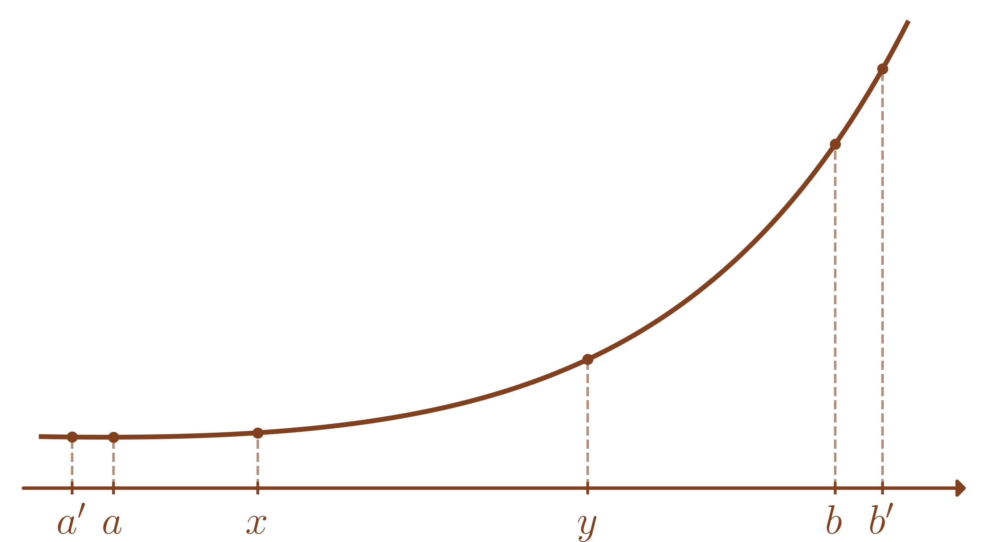
En faisant \(a' \longrightarrow a^{-}\) et \(b' \longrightarrow b^+\), on a même \(k = \max \left\{f_d'(a),f_g'(b)\right\}.\)
On reverra que \(f\) lipschitzienne implique \(f\) continue.
Cet exemple de fonction convexe implique donc qu’en général, \(f\) n’est pas lipschitzienne sur tout \(I.\)
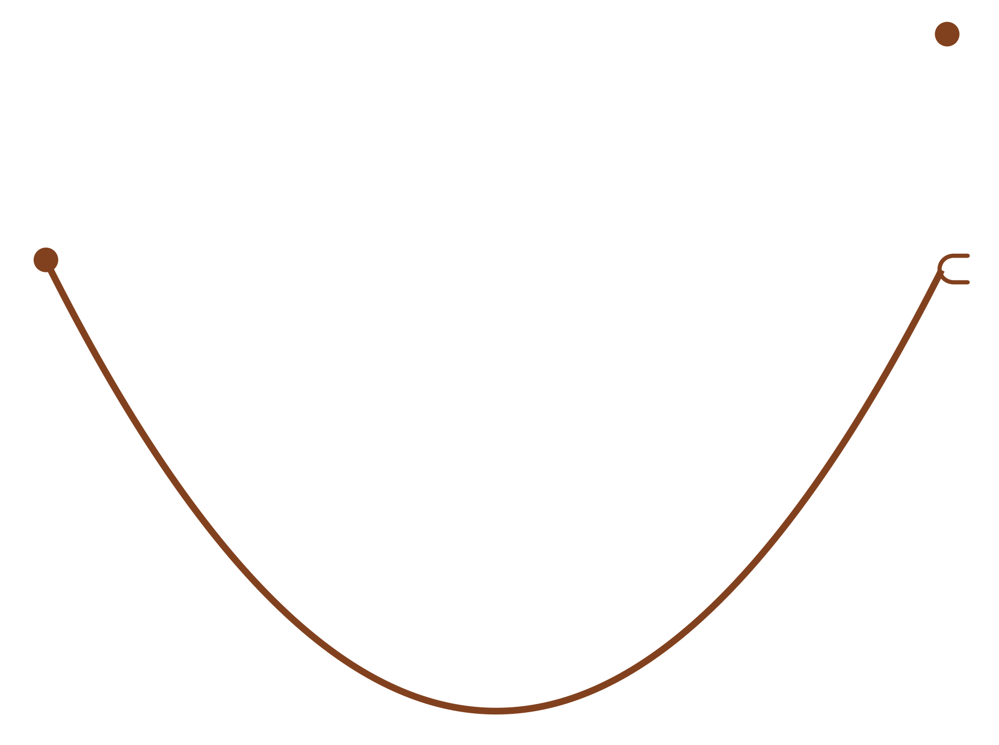
Soit \(f : I \to \mathbb{C}\) \(\mathscr{C}^1\) avec \(I\) intervalle de \(\mathbb{R}.\) Alors, \[f \text{ est lipschitzienne sur $I$} \iff f' \text{ est bornée sur $I.$}\] Dans ce cas, \(k(f) = \left\|f'\right\|_\infty = \sup_{t \in I}\left|f'(t)\right|.\)
\((\Longleftarrow)\) Par l’inégalité des accroissements finis, soient \(x < y \in I\), \[\left|f(y)-f(x)\right| \leq \sup_{t \in ]x,y[} \left|f'(t)\right|\left|y-x\right| \leq \sup_{t \in I} \left|f'(t)\right|\left|y-x\right| \leq \left\|f'\right\|_\infty\left|y-x\right|.\] Donc \(f \in \mathop{\mathrm{Lip}}(I,\mathbb{C})\) et \(k(f) \leq \left\|f'\right\|_\infty.\)
L’inégalité des accroissements finis est valable pour une fonction à valeurs complexes en écrivant \(f(y)-f(x) = \int_x^y f'(t)dt\) (on reprécisera plus tard dans les chapitres la notion d’intégrale d’une fonction à valeurs complexes).
Ce n’est pas le cas de l’égalité des accroissements finis, issus du théorème de Rolle et qui se prouve à l’aide de l’existence d’extrema (impossible dans \(\mathbb{C}\) car on n’a ni \(\leq\), ni \(\geq\)). Par exemple, \(f: t \in \mathbb{R}\mapsto e^{it}\) vérifie \(f(0) = f(2\pi) = 1\) mais sa dérivée \(f': t \in \mathbb{R}\mapsto ie^{it}\) ne s’annule pas sur \([0,2\pi].\)
\((\Longrightarrow)\) Si \(f\) est lipschitzienne sur \(I\), soient \(x \in I\) et \(h \in \mathbb{R}^{+\star}\) tel que \(x+h\in I\), on a \[\begin{aligned} \left|f(x+h)-f(x)\right| \leq k(f)\left|h\right| & \Longrightarrow \left|\frac{f(x+h)-f(x)}{h}\right| \leq k(f) \\ & \Longrightarrow \lim_{h \longrightarrow 0} \left|\frac{f(x+h)-f(x)}{h}\right| \leq k(f) \\ & \Longrightarrow \left|f'(x)\right| \leq k(f). \end{aligned}\]
Donc \(f'\) est bornée sur \(I\) avec \(\left\|f'\right\|_\infty \leq k(f).\)
Comme corollaires,
si \(f : [a,b] \to \mathbb{K}\) est \(\mathscr{C}^1\) alors \(f\) est lipschitzienne.
si \(f: \mathbb{R}\to \mathbb{K}\) est \(\mathscr{C}^1\) et \(\tau\)-périodique alors \(f\) est lipschitzienne car \(f'(\mathbb{R}) = f'(\left[0,\tau\right]).\)
\(t \in \mathbb{R}\mapsto \sin t\), \(t \in \mathbb{R}\mapsto \cos t\) et \(t \in \mathbb{R}\mapsto e^{it}\) sont \(1\)-lipschitzienne.
Par exemple, on a même \(t \in \left[\frac{\pi}{4},\frac{\pi}{2}\right] \mapsto \sin t\) est \(\frac{\sqrt{2}}{2}\)-lipschitzienne sur \(\left[\frac{\pi}{4},\frac{\pi}{2}\right].\)
Soient \((E,\left\|\cdot\right\|)\) un espace vectoriel normé, \(A \subset E\) tel que \(A \neq \emptyset\) et \(b \in E.\) Alors,
\(x \in E \mapsto \left\|x\right\|\) est 1-lipschitzienne,
\(x \in E \mapsto \left\|x-b\right\|\) est 1-lipschitzienne,
\(x \in E \mapsto d(x,A)\) est 1-lipschitzienne.
Soient \(x,y \in E\),
Par la proposition [prop:inegalite_triangulaire_inverse], \[\left|\left\|y\right\|-\left\|x\right\|\right| \leq \left\|y-x\right\|.\]
De même, \[\left|\left\|y-b\right\|-\left\|x-b\right\|\right| \leq \left\|y-b-(x-b)\right\| = \left\|y-x\right\|.\]
Soit \(a \in A\), par inégalité triangulaire, \[\left\|x-a\right\| = \left\|x-y+y-a\right\| \leq \left\|x-y\right\|+\left\|y-a\right\|.\] On a donc \[d(x,A) = \inf_{a\in A}\left\|x-a\right\| \leq \left\|x-y\right\|+\inf_{a\in A}\left\|y-a\right\| =\left\|x-y\right\| + d(y,A).\] Cela donne \[d(x,A)-d(y,A) \leq \left\|x-y\right\|.\] En échangeant le rôle de \(x\) et \(y\), on a aussi \(d(y,A)-d(x,A) \leq \left\|x-y\right\|\) et donc \[\left|d(x,A)-d(y,A)\right| \leq \left\|x-y\right\|.\]
Soient \((E_1,N_1),\ldots,(E_p,N_p)\) des espaces vectoriels normés, \(\left\|\cdot\right\|_\infty\) la norme sur \(E_1 \times \ldots \times E_p\) introduite dans la proposition [prop:intro_norme_infinie_evn_produit].
Alors, pour \(1 \leq j \leq p\), \(\begin{array}{llll} & E & \to & E_j \\ & x & \mapsto & x_j \end{array}\) est \(1\)-lipschitzienne.
Pour \(x,y \in E_1\times \ldots \times E_p\) et \(1 \leq j \leq p\), \(N_j(y_j-x_y) \leq \left\|y-x\right\|_\infty.\)
Montrer \(\begin{array}{llll} & (\mathbb{R}^2,\left\|\cdot\right\|_\infty) & \to & (\mathbb{R},\left|\cdot\right|) \\ & (x,y) & \mapsto & \max(x,y) \end{array}\) est 2-lipschitzienne.
Soient \(x,y \in \mathbb{R}\), une remarque très utile est la suivante : \[\begin{aligned} \max(x,y)+\min(x,y) & = x+y, \\ \max(x,y)-\min(x,y) & =\left|x-y\right|. \end{aligned}\] On en déduit alors \[\begin{aligned} \max(x,y) & = \frac{x+y+\left|x-y\right|}{2} \\ (\text{ et }\min(x,y) & = \frac{x+y-\left|x-y\right|}{2}). \end{aligned}\]
Or,
\((x,y) \in \mathbb{R}^2 \mapsto x\) est 1-lipschitzienne,
\((x,y) \in \mathbb{R}^2 \mapsto y\) est 1-lipschitzienne,
donc par combinaison linéaire, \((x,y) \in \mathbb{R}^2 \mapsto x-y\) est 2-lipschitzienne.
De plus,
\(t \in \mathbb{R}\mapsto \left|t\right|\) est 1-lipschitzienne
donc par composition, \((x,y) \in \mathbb{R}^2 \mapsto \left|x-y\right|\) est 2-lipschitzienne.
On en déduit donc que \((x,y) \in \mathbb{R}^2 \mapsto \max(x,y) = \frac{x+y+\left|x-y\right|}{2}\) est 2-lipschitzienne par combinaison linéaire.
Soient \((E,\left\|\cdot\right\|)\), \((F,N(\cdot))\) deux espaces vectoriels normés, \(A \subset E\) tel que \(A \neq \emptyset\), \(f : A \to F\) et \(a \in A.\)
On dit que \(f\) est continue en \(a\) si \[\begin{aligned} & f(x) \xrightarrow[x \to a]{} f(a) \\ \text{ ie }& \forall \varepsilon > 0, \exists \eta > 0 / \begin{array}{l} \left\|x-a\right\| \leq \eta \\ x \in A \end{array} \Longrightarrow N(f(x)-f(a)) \leq \varepsilon \\ \text{ ie }& \forall \left(x_n\right) \text{ suite de $A$ telle que } x_n \xrightarrow[n \to +\infty]{} a, f(x_n) \xrightarrow[n \to +\infty]{} f(a) \\ \text{ ie }& \forall V \in \mathcal{V}(f(a)), \exists W \in \mathcal{V}(a) / f\left(W \subset A\right) \subset V. \end{aligned}\]
On dit que \(f\) est continue (sur \(A\)) si \(f\) est continue en tout point \(a \in A\) et on note \(\mathscr{C}(A,F)\) l’ensemble des fonctions continues sur \(A\) (pour les normes prescrites).
La notion de fonction continue est invariante par changement de normes équivalentes.
Soient \((E,\left\|\cdot\right\|)\), \((F,N(\cdot))\) deux espaces vectoriels normés, \(A \subset E\) tel que \(A \neq \emptyset\), \(f : A \to F\) et \(a \in A.\)
Si \(f\) est continue en \(a\) alors \(f\) est bornée au voisinage de \(A.\)
Si \(f\) est continue en \(a\), \(f(x) \xrightarrow[x \to a]{} f(a)\) donc par la proposition [prop:fonction_cv_donc_bornee_voisinage], \(f\) est bornée au voisinage de \(a.\)
Soient \((E,\left\|\cdot\right\|)\), \((F,N(\cdot))\) deux espaces vectoriels normés. Soient \(A \subset E\) tel que \(A \neq \emptyset\), \(f : A \to F\), \(g : A \to F\) et \(a \in A.\)
Si \(f\) et \(g\) sont continues en \(a\) alors soient \(\lambda,\mu \in \mathbb{K}\), \(\lambda f + \mu g\) est continue en \(a.\) Autrement dit, \(\mathscr{C}(A,F)\) est un \(\mathbb{K}\)-espace vectoriel.
Si \(F=\mathbb{K}\) et \(f\) et \(g\) sont continues en \(a\) alors \(fg\) est continue en \(a.\) Autrement dit, \(\mathscr{C}(A,\mathbb{K})\) est une \(\mathbb{K}\)-algèbre.
Si \(F = \mathbb{K}\) et \(f(a) \neq 0\) alors \(\frac{1}{f}\) est définie au voisinage de \(a\) et \(\frac{1}{f}\) est continue en \(a.\)
Si \(f\) et \(g\) sont continues en \(a\), on a \(f(x) \xrightarrow[x \to a]{} f(a)\) et \(g(x) \xrightarrow[x \to a]{} g(a).\) D’après les propriétés déjà connues des limites (voir proposition [prop:limites_fonctions]),
On en déduit alors \(\lambda f(x)+ \mu g(x) \xrightarrow[x \to a]{} \lambda f(a) +\mu g(a).\)
On en déduit aussi, si \(F = \mathbb{K}\), \(f(x)g(x) \xrightarrow[x \to a]{} f(a)g(a).\)
Si \(F = \mathbb{K}\) et \(f(a) \neq 0\), comme \(f(x) \xrightarrow[x \to a]{} f(a) \neq 0\), \(f\) est définie autour de \(a\) et \(\frac{1}{f(x)} \xrightarrow[x \to a]{} \frac{1}{f(a)}.\)
Soient \((E,\left\|\cdot\right\|)\), \((F,N(\cdot)), (G,N')\) trois espaces vectoriels normés, \(A \subset E, B \subset F\) tels que \(A,B \neq \emptyset\) et \(f : A \to F, g : B \to G\) tels que \(f(A) \subset B.\)
Soit \(a \in A\), si \(f\) est continue en \(a\) et \(g\) est continue en \(f(a)\) alors \(g\circ f\) est continue en \(a.\)
Comme déjà vu pour les limites (voir proposition [prop:limites_fonctions_composition]), si \(f(x) \xrightarrow[x \to a]{} f(a)\), on a \(g(f(x)) \xrightarrow[x \to a]{} g(f(a)).\)
Soient \((F,\left\|\cdot\right\|), (E_1,N_1),\ldots,(E_p,N_p)\) des espaces vectoriels normés, \(\left\|\cdot\right\|_\infty\) la norme sur \(E_1 \times \ldots \times E_p\) introduite dans la proposition [prop:intro_norme_infinie_evn_produit], \(A \subset F\) et \(\begin{array}{lllll} f & : & A & \to & E_1\times \ldots \times E_p \\ & & x & \mapsto & \left(f_1(x),\ldots,f_p(x)\right) \end{array} .\)
Soit \(a \in A\), alors \[f \text{ continue en $a$ } \iff \text{ Pour tout $1 \leq j \leq p$, $f_j$ est continue en $a$}.\]
Comme déjà vu pour les limites (voir la proposition [prop:limites_fonctions_evn_produit]), \(f(x) \xrightarrow[x \to a]{} f(a) \iff \forall 1 \leq j \leq p, f_j(x) \xrightarrow[x \to a]{} f_j(a).\)
Soient \((E,\left\|\cdot\right\|)\), \((F,N(\cdot))\) deux espaces vectoriels normés. Soient \(A \subset E\) tel que \(A \neq \emptyset\) et \(f : A \to F.\)
Alors, si \(f\) est lipshitzienne sur \(A\), \(f\) est continue sur \(A.\)
Soit \(a \in A\) et \(\left(u_n\right)\) une suite de \(A\) telle que \(u_n \xrightarrow[n \to +\infty]{} a\), alors \[N(f(u_n)-f(a)) \leq k(f) \left\|u_n-a\right\| \xrightarrow[n \to +\infty]{} 0.\]
Pour rappel, la réciproque est fausse. Par exemple, \(\begin{array}{lllll} f & : & \mathbb{R}^{+\star} & \to & \mathbb{R} \\ & & x & \mapsto & \frac{1}{x} \end{array}\) est continue mais pas lipshitzienne.
Par l’absurde, s’il existe \(k > 0\) tel que pour tout \(x,y \in \mathbb{R}^{+\star}\), \(\left|\frac{1}{x}- \frac{1}{y}\right| \leq k\left|x-y\right|\) alors pour \(x = 1\) et \(0 < y <1\), on a \(\left|\frac{1}{x}- \frac{1}{y}\right| = \frac{1}{y} -1 = \frac{1-y}{y} \leq k\left|x-y\right| = k(1-y)\) donc \(\frac{1}{y} \leq k\), ce qui est absurde car \(\frac{1}{y} \xrightarrow[y \to 0^+]{} +\infty.\)
Soit \((E,\left\|\cdot\right\|)\) un espace vectoriel normé et \(A \subset E\), \(x \mapsto \left\|x\right\|\) et \(x \mapsto d(x,A)\) sont continues car lipshitziennes.
Soient \((E,\left\|\cdot\right\|)\) un espace vectoriel normé, \(A \subset E\) tel que \(A \neq \emptyset\) et \(f,g : A \to \mathbb{R}\) continues.
Montrer que \(\begin{array}{lllll} \sup(f,g) & : & A & \to & \mathbb{R} \\ & & x & \mapsto & \sup(f(x),g(x)) \end{array}\) est continue.
En fait, on a \(\sup(f,g) = \max(f,g).\) Alors, en faisant la même remarque que dans l’exercice [exoc:continuite_max_deux_points], ie pour \(x,y \in \mathbb{R}\), \[\begin{aligned} \max(x,y)+\min(x,y) & = x+y, \\ \max(x,y)-\min(x,y) & =\left|x-y\right| \end{aligned}\] donc \[\begin{aligned} \max(x,y) & = \frac{x+y+\left|x-y\right|}{2} \\ (\text{ et }\min(x,y) & = \frac{x+y-\left|x-y\right|}{2}), \end{aligned}\] on a \(\sup(f,g) = \frac{f+g+\left|f-g\right|}{2}\) qui est continue par opérations sur des fonctions continues.
On appelle fonction polynôme sur \(\mathbb{K}^n\) toute combinaison linéaires des fonctions de la forme \[\begin{array}{llll} & \mathbb{K}^n & \to & \mathbb{K} \\ & x= (x_1,\ldots,x_n) & \mapsto & x_1^{\alpha_1}\ldots x_n^{\alpha_n} \end{array}\] avec \(\alpha_1,\ldots,\alpha_n \in \mathbb{N}.\)
On note alors \(\mathscr{P}(\mathbb{K}^n,\mathbb{K})\) l’ensemble des fonctions polynômes sur \(\mathbb{K}^n\), qui est une \(\mathbb{K}\)-algèbre.
En normant \(\mathbb{K}^n\) par \(\left\|\cdot\right\|_\infty\), \(\mathscr{P}(\mathbb{K}^n,\mathbb{K}) \subset \mathscr{C}(\mathbb{K}^n,\mathbb{K}).\)
Il suffit de montrer que pour \(\alpha_1,\ldots,\alpha_n \in \mathbb{N}\), \(\begin{array}{llll} & \mathbb{K}^n & \to & \mathbb{K} \\ & x= (x_1,\ldots,x_n) & \mapsto & x_1^{\alpha_1}\ldots x_n^{\alpha_n} \end{array}\) est continue.
Or,
pour tout \(1 \leq j \leq n\), \(x= (x_1,\ldots,x_n) \mapsto x_j\) est continue (par la proposition [prop:continuite_evn_produit]),
donc pour tout \(1 \leq j \leq n\) et \(\alpha_j \in \mathbb{N}\), \(x= (x_1,\ldots,x_n) \mapsto x_j^{\alpha_j}\) est continue par produit,
donc par produit, \(x= (x_1,\ldots,x_n) \mapsto x_1^{\alpha_1}\ldots x_n^{\alpha_n}\) est continue.
Soit \(\left(E,\langle \cdot, \cdot, \rangle\right)\) un espace préhilbertien (normé par sa norme préhilbertienne) alors \[\begin{array}{llll} & E \times E & \to & \mathbb{R} \\ & (x,y) & \mapsto & \langle x,y \rangle \end{array}\] est continue avec \(\left\|\cdot\right\|_\infty\) sur \(E \times E.\)
Soient \((x,y) \in E \times E\) et \(\left(x_n,y_n\right)\) suite de \(E\times E\) telle que \((x_n,y_n) \xrightarrow[n \to +\infty]{\left\|\cdot\right\|_\infty}\) alors \(x_n \xrightarrow[n \to +\infty]{} x\) et \(y_n \xrightarrow[n \to +\infty]{} y\) puis \(\langle x_n , y_n \rangle \xrightarrow[n \to +\infty]{} \langle x,y \rangle\) (voir la proposition [prop:limite_suite_produit_scalaire])
Soient \((E,\left\|\cdot\right\|)\), \((F,N(\cdot))\) deux espaces vectoriels normés, \(A \subset E\) tel que \(A \neq \emptyset\) et \(f : A \to F\) continue.
Soit \(B \subset A\) tel que \(B\) est dense dans \(A\) alors \(f(B)\) est dense dans \(f(A).\)
D’abord, \(f(B) \subset f(A).\)
Ensuite, soit \(y \in f(A)\), il existe \(x \in A\) tel que \(y = f(x).\)
De plus, comme \(B\) est dense dans \(A\) alors il existe \(\left(b_n\right)\) suite de \(B\) telle que \(b_n \xrightarrow[n \to +\infty]{} x.\)
Enfin, comme \(f\) est continue, on a \(f(x_n) \xrightarrow[b \to +\infty]{} f(x)=y\) avec \(f(x_n) \in f(B)\) pour tout \(n \in \mathbb{N}.\)
Donc \(f(B)\) est dense dans \(f(A).\)
Soit \(\theta \in \mathbb{R}\) tel que \(\tfrac{\theta}{2\pi} \notin \mathbb{Q}.\) Montrer que \(\left\{\cos (n\theta) / n \in \mathbb{N}\right\}\) est dense dans \([-1,1].\)
Par la question 2. de l’exercice [exoc:sous_groupe_de_R], \(G = \theta \mathbb{Z}+2\pi \mathbb{Z}\) est dense dans \(\mathbb{R}.\)
Or, \(\cos\) est continue sur \(\mathbb{R}\) avec \(\cos(\mathbb{R}) = [-1,1].\)
Donc \(\cos(G)\) est dense dans \([-1,1]\) et il reste à remarquer \[\begin{aligned} \cos(G) & = \cos(\theta \mathbb{Z}+2\pi \mathbb{Z}) \\ & = \cos(\theta \mathbb{Z}) \text{ car $\cos$ est $2\pi$-périodique}\\ & = \left\{\cos(n\theta)/n \in \mathbb{Z}\right\} \\ & = \left\{\cos(n\theta)/n \in \mathbb{N}\right\} \text{ car $\cos$ est paire.} \end{aligned}\]
Soient \((E,\left\|\cdot\right\|)\), \((F,N(\cdot))\) deux espaces vectoriels normés, \(A \subset E\) tel que \(A \neq \emptyset\), \(f,g : A \to F\) continues et \(B \subset A\) tel que \(B\) est dense dans \(A.\)
Si pour tout \(x \in B, f(x) = g(x)\) alors pour tout \(x \in A, f(x) = g(x).\)
Si \(F = \mathbb{R}\), on a de plus,
si pour tout \(x \in B, f(x) \leq g(x)\) alors pour tout \(x \in A, f(x) \leq g(x)\),
si pour tout \(x \in B, f(x) \geq g(x)\) alors pour tout \(x \in A, f(x) \geq g(x).\)
Soit \(x \in A\), comme \(B\) est dense dans \(A\), il existe \(\left(b_n\right)\) suite de \(B\) telle que \(b_n \xrightarrow[n \to +\infty]{} x.\)
Comme pour \(n \in \mathbb{N}\), \(b_n \in B\), on a \(f(b_n) = g(b_n).\)
Comme \(f\) et \(g\) sont continues, en passant à la limite quand \(n \longrightarrow +\infty\), on a \(f(x)=g(x).\)
Les cas d’inégalité pour \(F = \mathbb{R}\) s’obtiennent de la même façon.
Soit \(f : I \to \mathbb{R}\) continue sur un intervalle \(I\) de \(\mathbb{R}\) et bijective sur \(I.\) Alors, \(J = f(I)\) est un intervalle et \(f^{-1}\) est continue sur \(J.\)
Les hypothèses du rappel [rappel:continuite_fonction_rec] sont assez strictes. Par exemple, cela ne fonctionne pas si \(I\) n’est pas un intervalle comme illustré ci-dessous.
\(f : x \in ]-\infty,0[ \cup [1,+\infty[ \mapsto \begin{cases} x \mbox{ si $x < 0$} \\ x-1 \mbox{ si $x \geq 1$} \end{cases}\) strictement croissante et continue sur \(]-\infty,0[ \cup [1,+\infty[\), possède la réciproque \(f^{-1} : x \in \mathbb{R}\mapsto \begin{cases} y \mbox{ si $y \leq 0$} \\ y+1 \mbox{ si $y > 0$} \end{cases}\) non continue sur \(\mathbb{R}.\)
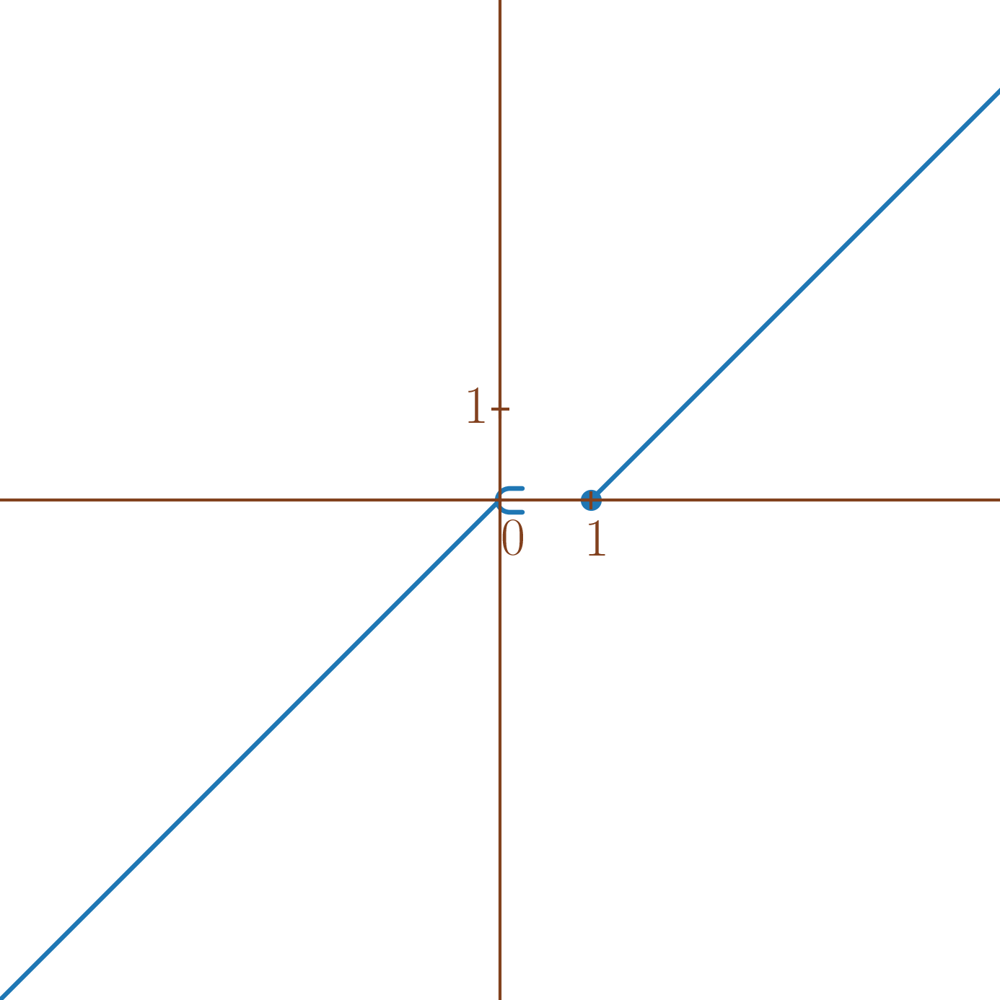 |
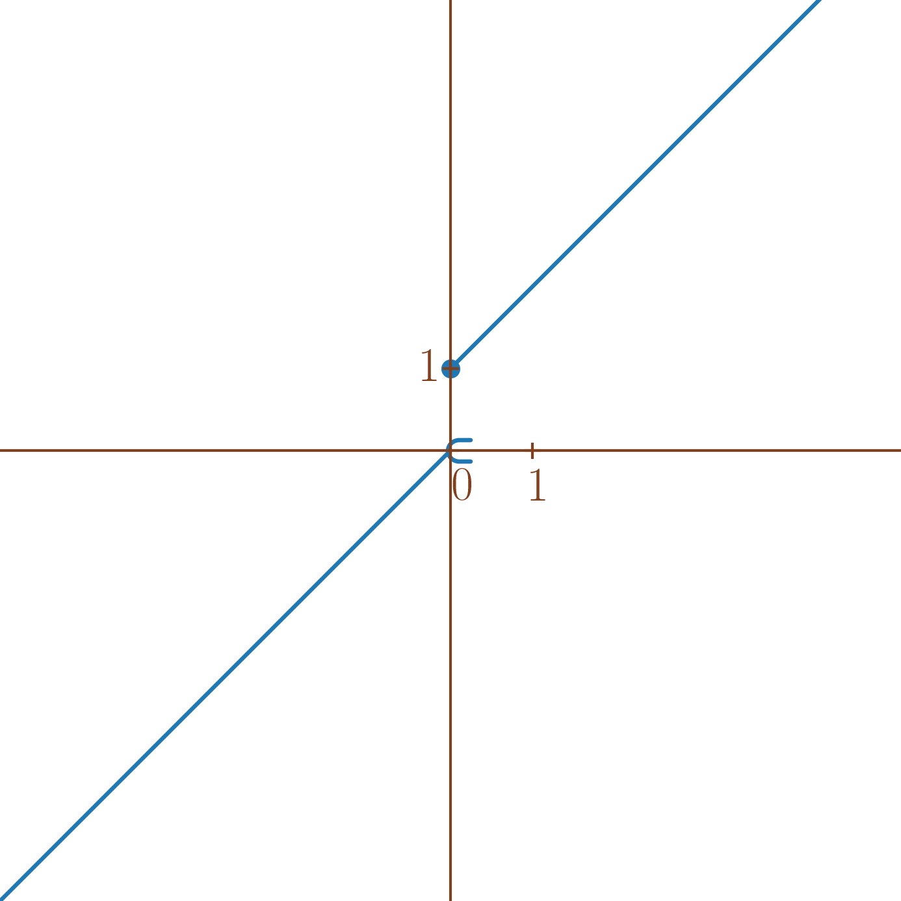 |
Cela ne fonctionne pas non plus si \(f\) est à valeurs dans \(\mathbb{C}\) bien que \(I\) soit un intervalle comme illustré ci-dessous.
On considère \(A = [-\pi,+\pi[\) et \(B = \mathbb{U}= \left\{z \in \mathbb{C}/ \left|z\right|=1\right\}.\)
Alors, \(\begin{array}{lllll} f & : & [-\pi,+\pi[ & \to & \mathbb{U} \\ & & t & \mapsto & e^{it} \end{array}\) est une bijection continue et sa réciproque est \(\begin{array}{lllll} f^{-1} & : & \mathbb{U} & \to & [-\pi,+\pi[ \\ & & z & \mapsto & \text{l'unique argument de $z$ dans $[-\pi,+\pi[$} \end{array}\) qui n’est pas continue.
En effet, pour \(n \in \mathbb{N}\), \(f^{-1}\left(e^{i\left(\pi-\frac{1}{n}\right)}\right) = \pi-\frac{1}{n} \in [-\pi,\pi[\) et on a \(e^{i\left(\pi-\frac{1}{n}\right)} \xrightarrow[n \to +\infty]{} e^{i\pi}= -1\) mais \(f^{-1}\left(e^{i\left(\pi-\frac{1}{n}\right)}\right) = \pi-\frac{1}{n} \xrightarrow[n \to +\infty]{} \pi\) tandis que \(f^{-1}(-1) = -\pi \in [-\pi,\pi[.\) Le problème vient du fait que \(\pi\) est bien argument de \(-1\) mais n’est pas dans \([-\pi,\pi[.\)
A fortiori, pour \(f : E\to F\) bijective continue avec \(E,F\) des espaces vectoriels normés, il n’est pas du tout automatique que \(f^{-1}\) soit continue.
Soient \((E,\left\|\cdot\right\|)\), \((F,N(\cdot))\) deux espaces vectoriels normés et \(A \subset E, B \subset F\) tel que \(A,B \neq \emptyset.\) On appelle homéomophisme de \(A\) dans \(B\) toute bijection \(f\) de \(A\) dans \(B\) telle que \(f\) et \(f^{-1}\) sont continues.
\(\ln\) est un homéomorphisme de \(\mathbb{R}^{+\star}\) dans \(\mathbb{R}.\)
Soient \((E,\left\|\cdot\right\|)\), \((F,N(\cdot))\) deux espaces vectoriels normés, \(A \subset E\) tel que \(A \neq \emptyset\) et \(f : A \to F.\)
On dit que \(f\) est uniformément continue sur \(A\) si \[\forall \varepsilon > 0, \exists \eta > 0 / \forall x,y \in A,\left\|x-y\right\| \leq \eta \Longrightarrow N(f(x)-f(y)) \leq \varepsilon.\]
\(f\) est continue sur \(A\) si \[\forall \varepsilon > 0, \forall x \in A, \exists \eta > 0 / \forall y \in A,\left\|x-y\right\| \leq \eta \Longrightarrow N(f(x)-f(y)) \leq \varepsilon.\] et donc \(\eta\) dépend de \(x\) et \(\varepsilon\) tandis que dans l’uniforme continuité, \(\eta\) ne dépend que de \(\varepsilon.\) On a donc quand même \(f\) est uniformément continue sur \(A\) \(\Longrightarrow\) \(f\) est continue sur \(A\) mais la réciproque est fausse.
\(\begin{array}{lllll} f & : & \mathbb{R}^{+} & \to & \mathbb{R} \\ & & x & \mapsto & x^2 \end{array}\) n’est pas uniformément continue sur \(\mathbb{R}^{+}\) bien que \(f\) soit continue sur \(\mathbb{R}^{+}.\)
On comprend sur le graphe ci-contre que pour un \(\varepsilon > 0\) fixé, le \(\eta_{x,\varepsilon}\) diminue quand \(x\) augmente.
On présume même \[\eta_{x,\varepsilon} \xrightarrow[x \to +\infty]{} 0,\]
ce que l’on montrera dans la preuve.
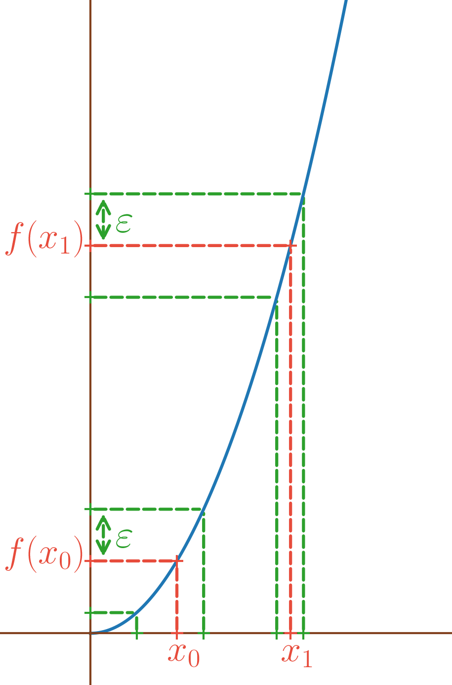
Par l’absurde, si \(f\) était uniformément continue sur \(\mathbb{R}^+\), on aurait : soit \(\varepsilon > 0\), il existe \(\eta_\varepsilon\) tel que \[\forall x,x' \in \mathbb{R}^{+}, |x-x'| \leq \eta_\varepsilon \Longrightarrow |f(x)-f(x')| \leq \varepsilon.\]
Or, pour \(x \in \mathbb{R}^{+}\) et \(x' = x+\eta_\varepsilon\), on a \(|x-x'| = \eta_\varepsilon \leq \eta_\varepsilon\)
\(|f(x)-f(x')| = \left|x^2-\left(x'\right)^2\right| = \left|x-x'\right|\left|x+x'\right| = \eta_\varepsilon \left|x+x'\right| = \left(2x+\eta_\varepsilon\right)\eta_\varepsilon \leq \varepsilon.\)
On a donc \(\eta_\varepsilon \leq \frac{\varepsilon}{2x+\eta_\varepsilon} \xrightarrow[x \to +\infty]{} 0\), ce qui est absurde.
La notion d’uniforme continuité est invariante pas changement de normes équivalentes.
Une combinaison linéaire et une composition de fonctions uniformément continues est uniformément continue.
Si \(F = \mathbb{K}\), le produit de deux fonctions uniformément continues ne l’est pas forcément comme l’illustre \(\begin{array}{llll} & \mathbb{R}^{+} & \to & \mathbb{R} \\ & x & \mapsto & x^2 \end{array}\), qui est le produit de \(\begin{array}{llll} & \mathbb{R}^{+} & \to & \mathbb{R} \\ & x & \mapsto & x \end{array}\) et \(\begin{array}{llll} & \mathbb{R}^{+} & \to & \mathbb{R} \\ & x & \mapsto & x \end{array} .\)
Soient \((E,\left\|\cdot\right\|)\), \((F,N(\cdot))\) deux espaces vectoriels normés, \(A \subset E\) tel que \(A \neq \emptyset\) et \(f : A \to F.\)
Alors, \(f\) lipschitzienne \(\Longrightarrow\) \(f\) est uniformément continue.
Soit \(\varepsilon\), \(\eta = \frac{\varepsilon}{k(f)}\) convient dans la définition de l’uniforme continuité car alors pour \(x,y \in A\), \[\left\|x-y\right\| \leq \eta \Longrightarrow N(f(y)-f(x)) \leq k(f) \left\|y-x\right\| \leq k(f)\eta = \varepsilon.\]
La réciproque est fausse. On rappelle que le théorème de Heine (voir cours de MPSI) donne que \(f : t \in [0,1] \mapsto \sqrt{t}\) est uniformément continue mais elle n’est pas lispschitzienne.
En effet, par l’absurde, s’il existe \(k > 0\) tel que pour tout \(x,y \in [0,1]\), \(\left|\sqrt{y}-\sqrt{x}\right| \leq k \left|y-x\right|\), alors avec \(x = 0\) et \(y>0\), on a \(\sqrt{y} \leq ky \Longrightarrow \frac{1}{\sqrt{y}} \leq k\), ce qui est absurde car \(\frac{1}{\sqrt{y}} \xrightarrow[y \to 0^+]{} +\infty.\)
Une application linéaire n’est pas forcément continue comme l’illustrent les exemples ci-dessous.
Soit \(\begin{array}{lllll} f & : & \left(\mathscr{C}([0,1],\mathbb{R}),\left\|\cdot\right\|_1\right) & \to & \left(\mathbb{R},\left|\cdot\right|\right) \\ & & u & \mapsto & u(0) \end{array} .\)
Introduisons pour \(n \in \mathbb{N}\), \(u_n \in \mathscr{C}([0,1],\mathbb{R})\) dessinée ci-contre.
On a alors \(\left\|u_n\right\|_1 \underbrace{=}_{\substack{\text{l'aire du} \\ \text{triangle}}} \frac{\sqrt{n} \times \frac{1}{n}}{2} = \frac{1}{2\sqrt{n}} \xrightarrow[n \to +\infty]{} 0\) donc \(u_n \xrightarrow[n \to +\infty]{\left\|\cdot\right\|_1} 0.\)
Cependant, \(f(u_n) = \sqrt{n} \xrightarrow[n \to +\infty]{} +\infty.\)
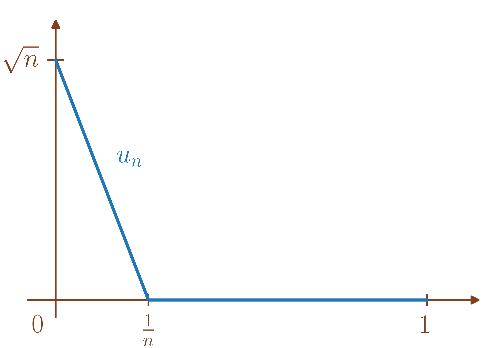
En revanche, pour \(\mathscr{C}([0,1],\mathbb{R})\) normé par \(\left\|\cdot\right\|_\infty\), \(f\) est continue car lipshitzienne. En effet, on a pour tout \(u \in \mathscr{C}([0,1],\mathbb{R})\), \(\left|f(u)\right| = \left|u(0)\right| \leq \sup_{x \in [0,1]} \left|u(x)\right| = \left\|u\right\|_\infty.\)
C’est le cas aussi pour les endomorphismes. Soit \(\begin{array}{lllll} D & : & \left(\mathscr{C}^\infty([0,1],\mathbb{R}),\left\|\cdot\right\|_\infty\right) & \to & \left(\mathscr{C}^\infty([0,1],\mathbb{R}),\left\|\cdot\right\|_\infty\right) \\ & & u & \mapsto & u' \end{array}\), \(D\) est linéaire.
En revanche, en introduisant pour \(n \in \mathbb{N}\), \(u_n \in \mathscr{C}^\infty\left(\left[0,1\right],\mathbb{R}\right)\) telle que \(u_n(t) = \frac{t^n}{\sqrt{n}}\) pour tout \(t \in [0,1]\), on a \(\left\|u_n\right\|_\infty = \left|u_n(1)\right| = \frac{1}{\sqrt{n}} \xrightarrow[n \to +\infty]{} 0\) mais \(D(u_n)(t) = u_n'(t) = \sqrt{n}t^{n-1}\) pour tout \(t \in [0,1]\) tel que \(\left\|D(u_n)\right\|_\infty = \left|D(u_n)(1)\right| = \sqrt{n} \xrightarrow[n \to +\infty]{} +\infty.\)
Soient \((E,\left\|\cdot\right\|)\), \((F,N(\cdot))\) deux espaces vectoriels normés, \(f \in \mathscr{L}(E,F)\) et \(a,b \in E.\)
Alors, \[f \text{ continue en $a$} \iff f \text{ continue en $b$}.\]
\(a\) et \(b\) jouant un rôle symétrique, il suffit de montrer une implication.
Si \(f\) est continue en \(a\), soit \(\left(u_n\right)\) une suite de \(E\) telle que \(u_n \xrightarrow[n \to +\infty]{} b.\)
Alors, \(u_n-b+a \xrightarrow[n \to +\infty]{} a\) et \[\begin{aligned} f(u_n) & = f(u_n-b+a+(b-a)) \\ & = f(u_n-b+a)+f(b)-f(a) \text{ par linéarité de $f$} \\ & \xrightarrow[n \to +\infty]{} f(a)+f(b)-f(a)=f(b) \text{ car $f$ est continue en $a$}. \end{aligned}\]
Donc \(f\) est continue en \(b.\)
Soient \((E,\left\|\cdot\right\|)\), \((F,N(\cdot))\) deux espaces vectoriels normés et \(f \in \mathscr{L}(E,F).\)
Alors, \[\begin{aligned} f \text{ continue en sur $E$} & \iff f \text{ continue en $0$} & \iff f(x) \xrightarrow[x \to 0]{} 0. \end{aligned}\]
Soient \((E,\left\|\cdot\right\|)\), \((F,N(\cdot))\) deux espaces vectoriels normés et \(f \in \mathscr{L}(E,F).\)
Alors, \[\begin{aligned} f \text{ continue} \iff & \exists k \in \mathbb{R}^{+}/ \forall x \in E, N(f(x)) \leq k\left\|x\right\| \\ & \text{ ie }\left\{\frac{N(f(x)}{\left\|x\right\|}/ x \in E \setminus \left\{0\right\}\right\} \text{ est majoré.} \end{aligned}\]
Dans ce cas, \(f\) est \(k\)-lipschitzienne et \(k(f) = \sup_{\substack{x \in E \\ x \neq 0}} \frac{N(f(x))}{\left\|x\right\|}.\) On note \(\mathscr{L}_c(E,F)\) l’ensemble des applications linéaires continues de \(E\) dans \(F\), qui est un sous-espace vectoriel.
\((\Longleftarrow)\) S’il existe \(k \in \mathbb{R}^{+}\) tel que pour tout \(x \in E\), \(N(f(x)) \leq k\left\|x\right\|.\)
Alors, pour \(y \in E\), \(N(f(y-x)) = N(f(y)-f(x)) \leq k\left\|y-x\right\|\) et \(f\) est \(k\)-lipschitzienne donc continue.
\((\Longrightarrow)\) Si \(f\) est continue alors \(f\) est continue en \(0.\)
Avec \(\varepsilon = 1\), il existe \(\eta > 0\) tel que \(\left\|x-0\right\| = \left\|x\right\| \leq \eta \Longrightarrow N(f(x)-f(0)) = N(f(x)) \leq 1.\)
Soit \(x \in E\) tel que \(x \neq 0\) alors \(\left\|\frac{\eta}{\left\|x\right\|}x\right\| = \eta.\)
On a donc \(N\left(f\left(\frac{\eta}{\left\|x\right\|}x\right)\right) = N\left(\frac{\eta}{\left\|x\right\|}f(x)\right) = \frac{\eta}{\left\|x\right\|} N(f(x)) \leq 1.\)
Finalement, on a alors \(N(f(x)) \leq k \left\|x\right\|\) avec \(k=\frac{1}{\eta} > 0\) et cette inégalité est évidemment aussi vrai pour \(x=0.\)
On a vu dans le sens \((\Longleftarrow)\) que \(f\) est \(k\)-lipschitzienne. Montrons maintenant \(k(f) = \sup_{\substack{x \in E \\ x \neq 0}} \frac{N(f(x))}{\left\|x\right\|}.\) \[\begin{aligned} k \text{ constante de Lipschitz de $f$} & \iff \forall x,y \in E, N\left(f(y)-f(x)\right) \leq k \left\|x-y\right\| \\ & \iff \forall x,y \in E, N\left(f(y-x)\right) \leq k \left\|x-y\right\| \\ & \iff \forall z \in E, N\left(f(z)\right) \leq k \left\|z\right\| \\ & \iff k \text{ majore } \left\{\frac{N(f(x))}{\left\|x\right\|}/ x \in E, x \neq 0\right\}. \end{aligned}\]
Donc \(k(f)\) est le plus petit majorant de cet ensemble qui est \(\sup_{\substack{x \in E \\ x \neq 0}} \frac{N(f(x))}{\left\|x\right\|}.\)
Dans \(E=\mathbb{K}[X]\), normé par \(\left\|\cdot\right\|\) tel que \(\left\|P\right\| = \sup_{j \geq 0} \left|a_j\right|\) pour \(P = \sum_{j \geq 0} a_j X^j \in E\), \(\begin{array}{lllll} \varphi & : & E & \to & \mathbb{K} \\ & & P & \mapsto & P\left(\tfrac{1}{2}\right) \end{array}\) est continue.
En effet, pour \(P = \sum_{j = 0}^n a_j X^j \in E\), \[\begin{aligned} \left|\varphi(P)\right| & = \left|\sum_{j = 0}^n a_j\left(\tfrac{1}{2}\right)^j\right| & = \sum_{j = 0}^n \left|a_j\right|\left(\tfrac{1}{2}\right)^j & \leq \left\|P\right\| \sum_{j = 0}^n\tfrac{1}{2^j} & \leq \left\|P\right\| \sum_{j = 0}^{+\infty}\tfrac{1}{2^j} & = \left\|P\right\| \frac{1}{1-\frac{1}{2}} = 2\left\|P\right\|. \end{aligned}\]
On peut même montrer \(k(f) = 2.\) En effet, de \(\left|\varphi(P)\right| \leq 2\left\|P\right\|\), on tire \(k(f) \leq 2.\)
Ensuite, en considérant \(P_n = 1+X+\ldots+X^n\), on a \(P_n \neq 0\) donc \(k(f) \geq \frac{\left|\varphi(P_n)\right|}{\left\|P_n\right\|} = \frac{\sum_{j=0}^n \frac{1}{2^j}}{1} = \frac{1-\frac{1}{2^{n+1}}}{1-\frac{1}{2}} \xrightarrow[n \to +\infty]{} 2.\)
Donc on a bien \(k(f) = 2.\)
Dans \(E=\mathbb{K}[X]\), normé par \(\left\|\cdot\right\|\) tel que \(\left\|P\right\| = \sup_{j \geq 0} \left|a_j\right|\) pour \(P = \sum_{j \geq 0} a_j X^j \in E\), pour \(x \in \mathbb{K}\), on considère \(\begin{array}{lllll} \varphi_x & : & E & \to & \mathbb{K} \\ & & P & \mapsto & P\left(x\right) \end{array} .\)
Montrer que \(\varphi_x\) est continue \(\iff\) \(\left|x\right| < 1.\)
Si \(\left|x\right| < 1\), pour \(P = \sum_{j = 0}^n a_j X^j \in E\), \[\begin{aligned} \left|\varphi_x(P)\right| & = \left|\sum_{j = 0}^n a_jx^j\right| & = \sum_{j = 0}^n \left|a_j\right|\left|x\right|^j & \leq \left\|P\right\| \sum_{j = 0}^n\left|x\right|^j & \leq \left\|P\right\| \sum_{j = 0}^{+\infty}\left|x\right|^j & = \left\|P\right\| \frac{1}{1-\left|x\right|}. \end{aligned}\] Donc \(\varphi_x\) est continue.
Si \(\left|x\right| >1\), en considérant \(P_n = 1+X+\ldots+X^n\), on a \(P_n \neq 0\) et \[\frac{\left|\varphi_x(P_n)\right|}{\left\|P_n\right\|} = \left\{ \begin{array}{ll} \frac{\left|\sum_{j=0}^n x^j\right|}{1} = \left|\frac{1-x^{n+1}}{1-x}\right| \geq \frac{\left|x\right|^{n+1}-1}{\left|1-x\right|} \xrightarrow[n \to +\infty]{}+\infty & \mbox{ si $x \neq 1$} \\ \frac{\left|\sum_{j=0}^n 1^j\right|}{1} = n+1 \xrightarrow[n \to +\infty]{}+\infty & \mbox{ si $x = 1$} \end{array} \right..\] Donc \(\left\{\frac{\left|\varphi_x(P)\right|}{\left\|P\right\|}/ P \in \mathbb{K}[X], P\neq 0\right\}\) n’est pas majoré et \(\varphi_x\) n’est pas continue.
Soient \((E,\left\|\cdot\right\|)\), \((F,N(\cdot))\) deux espaces vectoriels normés.
Pour \(f \in \mathscr{L}_c(E,F)\), on pose \(\left|\!\left|\!\left|f\right|\!\right|\!\right| = \sup_{\substack{x \in E \\ x \neq 0}} \frac{N(f(x))}{\left\|x\right\|}.\)
Alors, \(\left|\!\left|\!\left|\cdot\right|\!\right|\!\right|\) est une norme d’algèbre sur \(\mathscr{L}_c(E,F)\) appelée « norme subordonnée à \(N\) et \(\left\|\cdot\right\|\) ».
Soient \(f,g \in \mathscr{L}_c(E,F).\) D’abord, \(\left|\!\left|\!\left|f\right|\!\right|\!\right| \in \mathbb{R}^{+}\) car \(f\) est linéaire continue et donc \(\left\{\frac{N(f(x))}{\left\|x\right\|}/ x \in E, x \neq 0\right\}\) est majoré.
Si \(\left|\!\left|\!\left|f\right|\!\right|\!\right| = 0\) alors pour tout \(x \in E\), \(N(f(x)) = 0 \iff f(x) = 0\) donc \(f = 0.\)
Soit \(\lambda \in \mathbb{K}\), \[\left|\!\left|\!\left|\lambda f\right|\!\right|\!\right| = \sup_{\substack{x \in E \\ x \neq 0}} \frac{N(\lambda f(x))}{\left\|x\right\|} = \sup_{\substack{x \in E \\ x \neq 0}} \left|\lambda\right|\frac{N(f(x))}{\left\|x\right\|} = \left|\lambda\right| \sup_{\substack{x \in E \\ x \neq 0}} \frac{N(f(x))}{\left\|x\right\|} = \left|\lambda \right|\left|\!\left|\!\left|f\right|\!\right|\!\right|.\]
Pour \(x \in E \setminus \left\{0\right\}\), \[\frac{N(f(x)+g(x))}{\left\|x\right\|} \leq \frac{N(f(x))+N(g(x))}{\left\|x\right\|} = \frac{N(f(x))}{\left\|x\right\|}+\frac{N(g(x))}{\left\|x\right\|} \leq \left|\!\left|\!\left|f\right|\!\right|\!\right|+\left|\!\left|\!\left|g\right|\!\right|\!\right|.\]
Donc \(\left|\!\left|\!\left|f+g\right|\!\right|\!\right| = \sup_{\substack{x \in E \\ x \neq 0}}\frac{N(f(x)+g(x))}{\left\|x\right\|} \leq \left|\!\left|\!\left|f\right|\!\right|\!\right|+\left|\!\left|\!\left|g\right|\!\right|\!\right|.\)
Soient \((E,\left\|\cdot\right\|)\), \((F,N(\cdot))\) deux espaces vectoriels normés et \(f \in \mathscr{L}_c(E,F).\) Montrer que \[\left|\!\left|\!\left|f\right|\!\right|\!\right| = \sup_{\substack{x \in E \\ \left\|x\right\| = 1}} N(f(x)) = \sup_{y \in S(0,1)} N(f(y)).\]
D’abord, pour \(y \in S(0,1)\), \(\frac{N(f(y))}{\left\|y\right\|} = N(f(y)) \leq \left|\!\left|\!\left|f\right|\!\right|\!\right|\) donc \(\sup_{y \in S(0,1)} N(f(y)) \leq \left|\!\left|\!\left|f\right|\!\right|\!\right|.\)
Ensuite, soit \(x \in E\) tel que \(x \neq 0\) alors
\(\frac{N(f(x))}{\left\|x\right\|} = N\left(f\left(\frac{x}{\left\|x\right\|}\right)\right) \leq \sup_{y \in S(0,1)} N(f(y))\) car \(y=\frac{x}{\left\|x\right\|} \in S(0,1).\) Donc \(\sup_{y \in S(0,1)} N(f(y)) N(f(x)) \geq \left|\!\left|\!\left|f\right|\!\right|\!\right|.\)
Soient \((E,\left\|\cdot\right\|)\), \((F,N(\cdot)), (G,N'(\cdot))\) trois espaces vectoriels normés, \(f \in \mathscr{L}_c(E,F)\) et \(g \in \mathscr{L}_c(F,G).\)
Alors, \[\left|\!\left|\!\left|g \circ f\right|\!\right|\!\right| \leq \left|\!\left|\!\left|g\right|\!\right|\!\right|\left|\!\left|\!\left|f\right|\!\right|\!\right|.\]
On sait que \(\left|\!\left|\!\left|f\right|\!\right|\!\right| = k(f)\) et on a déjà montré cette relation sur les constantes de Lipschitz. On peut aussi refaire la preuve dans ce cas.
Soit \(x \in E\) tel que \(x \neq 0\) et \(f(x) \neq 0.\) Alors, \[\frac{N'\left(\left(g\circ f\right)(x)\right)}{\left\|x\right\|} = \frac{N'\left(\left(g\circ f\right)(x)\right)}{N(f(x))}\frac{N(f(x))}{\left\|x\right\|} \leq \left|\!\left|\!\left|g\right|\!\right|\!\right|\left|\!\left|\!\left|f\right|\!\right|\!\right|.\] Pour \(x \in E\) tel que \(x \neq 0\) et \(f(x) = 0\), on a aussi \(0=\frac{N'\left(\left(g\circ f\right)(x)\right)}{\left\|x\right\|} \leq \left|\!\left|\!\left|g\right|\!\right|\!\right|\left|\!\left|\!\left|f\right|\!\right|\!\right|\) donc \(\left|\!\left|\!\left|g \circ f\right|\!\right|\!\right| \leq \left|\!\left|\!\left|g\right|\!\right|\!\right|\left|\!\left|\!\left|f\right|\!\right|\!\right|.\)
Soit \((E,\left\|\cdot\right\|)\) un espace vectoriel normé alors \(\left(\mathscr{L}_c(E),+,.,\circ\right)\) est une \(\mathbb{K}\)-algèbre et \(\left|\!\left|\!\left|\cdot\right|\!\right|\!\right|\) est une norme d’algèbre.
Soit \((E,\left\|\cdot\right\|)\) un espace vectoriel normé alors on note
\(E^\star = \mathscr{L}(E,\mathbb{K})\) l’ensemble des formes linéaires sur \(E\), qui est appelé le dual algébrique de \(E\),
\(E' = \mathscr{L}_c(E,\mathbb{K})\) l’ensemble des formes linéaires continues sur \(E\), qui est appelé le dual toplogique de \(E.\)
Soient \(\left(E,\langle \cdot, \cdot, \rangle\right)\) un espace préhilbertien (normé par sa norme préhilbertienne) et \(a \in E.\)
Alors, \(\begin{array}{lllll} \varphi_a & : & E & \to & \mathbb{R} \\ & & x & \mapsto & \langle x,a \rangle \end{array}\) est une forme linéaire continue avec \(\left|\!\left|\!\left|\varphi_a\right|\!\right|\!\right| = \left\|a\right\|.\)
Par Cauchy-Schwarz, pour \(x \in E\), \(\left|\varphi_a(x)\right| = \left|\langle x,a \rangle\right| \leq \left\|x\right\|\left\|a\right\|\) donc \(\varphi_a\) est continue.
Si \(a = 0\), \(\varphi_a = 0\) et \(\left|\!\left|\!\left|\varphi_a\right|\!\right|\!\right| = \left\|a\right\| = 0\).
Si \(a \neq 0\), pour \(x \in E \setminus \left\{0\right\}\), \(\frac{\left|\varphi_a(x)\right|}{\left\|x\right\|} \leq \left\|a\right\|\) donc \(\left|\!\left|\!\left|\varphi_a\right|\!\right|\!\right| \leq \left\|a\right\|.\)
Enfin, \(\varphi_a(\frac{a}{\left\|a\right\|}) = \frac{\left\|a\right\|^2}{\left\|a\right\|} = \left\|a\right\|\) donc \(\left|\!\left|\!\left|\varphi_a\right|\!\right|\!\right| \geq \left\|a\right\|.\)
On en déduit donc finalement \(\left|\!\left|\!\left|\varphi_a\right|\!\right|\!\right| = \left\|a\right\|.\)
Soient \(A,F\) deux ensembles et \(B \subset F.\)
Alors, \(f^{-1}(B) = \left\{x \in A / f(x) \in B\right\}\) est appelée la pré-image ou image réciproque de \(B.\)
Soient \((E,\left\|\cdot\right\|)\), \((F,N(\cdot))\) deux espaces vectoriels normés, \(A \subset E\) et \(f : A \to F.\)
Alors,
\(f\) continue \(\iff\) Pour tout ouvert \(B\) de \(F\), \(f^{-1}(B)\) est un ouvert relatif à \(A\)
(ie pour rappel, \(f^{-1}(B) = A\cap C\) avec \(C\) ouvert de \(E\)).
\(f\) continue \(\iff\) Pour tout fermé \(B\) de \(F\), \(f^{-1}(B)\) est un fermé relatif à \(A\)
(ie pour rappel, \(f^{-1}(B) = A\cap C\) avec \(C\) fermé de \(E\)).
\((\Longrightarrow)\) Soit \(B\) un ouvert de \(F\) et \(a \in f^{-1}(B).\)
Comme \(B\) est un ouvert de \(F\) et \(f(a) \in B\), il existe \(\varepsilon > 0\) tel que \(\overline{B}(f(a),\varepsilon) \subset B.\)
Or, \(f\) est continue en \(a\) donc il existe \(\eta > 0\) tel que \(f\left(A \cap \overline{B}(a,\eta)\right) \subset \overline{B}(f(a),\varepsilon)\subset B.\)
On a donc \(\overline{B}_A(a,\eta) = A \cap \overline{B}(a,\eta) \subset f^{-1}(B)\) et donc \(f^{-1}(B)\) est un ouvert de \(A.\)
\((\Longleftarrow)\) Soit \(a \in E\) et \(\varepsilon > 0\), alors \(B(f(a),\varepsilon)\) est un ouvert de \(F.\)
Donc \(f^{-1}\left(B(f(a),\varepsilon)\right)\) est un ouvert de \(A.\) Or, \(a \in f^{-1}\left(B(f(a),\varepsilon)\right)\) donc il existe \(\eta > 0\) tel que \(\overline{B}_A(a,\eta) = A\cap \overline{B}(a,\eta) \subset f^{-1}\left(B(f(a),\varepsilon)\right).\)
On a donc \[\begin{array}{l} \left\|x-a\right\| \leq \eta \\ x \in A \end{array} \Longrightarrow N(f(x)-f(a)) < \varepsilon \Longrightarrow N(f(x)-f(a)) \leq \varepsilon,\] ce qui signifie que \(f\) est continue en \(a.\)
Par le point précédent, il suffit de montrer que \[\begin{array}{l} \text{Pour tout ouvert $B$ de $F$,}\\ \text{ $f^{-1}(B)$ est un ouvert relatif à $A$} \end{array} \iff \begin{array}{l} \text{Pour tout fermé $C$ de $F$,}\\ \text{ $f^{-1}(C)$ est un fermé relatif à $A$} \end{array}\]
\((\Longrightarrow)\) Soit \(C\) fermé de \(F\) alors \(F \setminus C\) est un ouvert de \(F.\)
Donc \(f^{-1} \left(F \setminus C\right) = A \setminus f^{-1}(C)\) est un ouvert de \(A\) et \(f^{-1}(C)\) est un fermé de \(A.\)
\((\Longleftarrow)\) Soit \(B\) ouvert de \(F\) alors \(F \setminus B\) est un fermé de \(F.\)
Donc \(f^{-1} \left(F \setminus B\right) = A \setminus f^{-1}(B)\) est un fermé de \(A\) et \(f^{-1}(B)\) est un ouvert de \(A.\)
Pour \(\begin{array}{lllll} f & : & \left]-\frac{\pi}{2},\frac{\pi}{2}\right[ & \to & \mathbb{R} \\ & & x & \mapsto & \tan(x) \end{array}\) qui est continue.
Avec \(B = \mathbb{R}^{+}\) qui est un fermé de \(\mathbb{R}\), on a \(f^{-1}(B) = \left[0,\frac{\pi}{2}\right[\) qui est un fermé de \(\left]-\frac{\pi}{2},\frac{\pi}{2}\right[\) mais pas de \(\mathbb{R}.\)
Soient \((E,\left\|\cdot\right\|)\), \((F,N(\cdot))\) deux espaces vectoriels normés et \(f \in \mathscr{L}_c(E,F)\) alors \(\mathop{\mathrm{Ker}}f = f^{-1}\left(\left\{0\right\}\right)\) est un fermé de \(E.\)
Soit \(f \in \mathscr{P}(\mathbb{R}^2,\mathbb{R})\) alors \(\left\{(x,y)\in \mathbb{R}^2/ f(x,y) = 0\right\}\) est un fermé de \(\mathbb{R}^2\) (muni de \(\left\|\cdot\right\|_\infty\)) et est appelé une courbe polynomiale sur \(\mathbb{R}^2.\) Cela inclut \(\left\{\begin{array}{ll} \text{ les droites affines} & (y-ax-b = 0 \text{ avec }a,b \in \mathbb{R}) \\ \text{ les carrés} & (\text{par exemple, }(x^2-1)(y^2-1)=0) \\ \text{ les paraboles} & (\text{par exemple, } y-ax^2-bx-c=0 \text{ avec }a,b,c \in \mathbb{R}\text{ et }a \neq 0) \\ \text{ les hyperboles} & (\text{par exemple, } yx-1=0) \\ \text{ les ellipses} & (\text{par exemple, } \tfrac{x^2}{a^2}+\tfrac{y^2}{b^2}-1=0 \text{ avec }a,b > 0) \\ \end{array}\right..\)
En revanche, si \(f\) continue, en général
\(B\) ouvert de \(A\) \(\centernot{\Longrightarrow}\) \(f(B)\) ouvert de \(F.\)
Avec \(\begin{array}{lllll} f & : & \mathbb{R} & \to & \mathbb{R} \\ & & x & \mapsto & 1 \end{array}\), on a \(f(]0,1[) = \left\{1\right\}.\)
\(B\) fermé de \(A\) \(\centernot{\Longrightarrow}\) \(f(B)\) fermé de \(F.\)
Avec \(\begin{array}{lllll} f & : & \mathbb{R} & \to & \mathbb{R} \\ & & x & \mapsto & \mathop{\mathrm{Arctan}}(x) \end{array}\), on a \(f(\mathbb{R}^{+}) = \left[0,\frac{\pi}{2}\right[.\)
Soient \((E,\left\|\cdot\right\|)\) un espace vectoriel normé et \(A \subset E.\) On dit que \(A\) est une partie compacte de \(E\) si \[\begin{array}{ll} & \forall \left(x_n\right) \text{ suite de $A$ }, \left(x_n\right) \text{ a au moins une valeur d'adhérence dans $A$} \\ \text{ ie }& \forall \left(x_n\right) \text{ suite de $A$}, \exists \varphi:\mathbb{N}\to \mathbb{N}\text{ une extraction telle que } x_{\varphi(n)} \xrightarrow[n \to +\infty]{} \ell \in A. \end{array}\]
La notion de compacité est invariante par changement de normes équivalentes.
Dans \(E = \mathbb{R}\), tout segment est une partie compacte de \(\mathbb{R}.\)
Soit \([a,b]\) un segment de \(\mathbb{R}\) et \(\left(u_n\right)\) une suite de \([a,b].\)
Alors, pour tout \(n \in \mathbb{N}\), \(a \leq u_n \leq b\) et la suite est bornée.
Donc par théorème de Bolzano-Weirstrass, il existe \(\varphi: \mathbb{N}\to \mathbb{N}\) une extraction telle que \(u_{\varphi(n)} \xrightarrow[n \to +\infty]{} \ell \in \mathbb{R}.\)
De plus, pour tout \(n \in \mathbb{N}\), \(a \leq u_{\varphi(n)} \leq b\) donc en passant à la limite, \(a \leq \ell \leq b\) ie \(\ell \in [a,b].\)
En revanche, tout intervalle de \(\mathbb{R}\) n’est pas une partie compacte de \(\mathbb{R}.\)
Par exemple, toute suite de \([0,1[\) est bornée et admet donc une valeur d’adhérence dans \(\mathbb{R}\) par le théorème de Bolzano-Weirstrass. En revanche, celle-ci n’est pas forcément dans \([0,1[\) comme l’illustre la suite \(\left(x_n\right)\) définie par \(x_n = 1-\frac{1}{n+1}\) pour \(n \in \mathbb{N}\) qui tend vers \(1 \notin [0,1[.\)
Soient \((E,\left\|\cdot\right\|)\) un espace vectoriel normé et \(A \subset E\) une partie compacte de \(E.\)
Alors, soit \(\left(x_n\right)\) une suite de \(A\), \[\left(x_n\right) \text{ converge } \iff \left(x_n\right) \text{ admet une unique valeur d'adhérence.}\]
\((\Longrightarrow)\) Ce sens est déjà donné (en dehors de la considération d’un compact) par la proposition [prop:suite_convergente_a_unique_Valeur_dadherence].
\((\Longleftarrow)\) Notons \(\ell\) l’unique valeur d’adhérence de \(\left(u_n\right).\)
Par l’absurde, supposons \(x_n \centernot{\xrightarrow[n \to +\infty]{}} \ell.\) Alors, il existe \(\varepsilon_0 > 0\) tel que pour tout \(N \in \mathbb{N}\), \(\exists n \geq N\) tel que \(\left\|x_n-\ell\right\| > \varepsilon_0.\) On construit alors une extraction \(\varphi : \mathbb{N}\to \mathbb{N}\) telle que pour tout \(n \geq 0\), \(\left\|x_{\varphi(n)}-\ell\right\| > \varepsilon_0.\)
On pose \(\varphi(0) = \min \underbrace{\left\{n \geq 0/ \left\|x_n-\ell\right\| > \varepsilon_0\right\}}_{\substack{\text{qui est $\neq \emptyset$ par ce qui précède} \text{ avec $N = 0$}}}\),
On pose \(\varphi(1) = \min \underbrace{\left\{n \geq \varphi(0)+1/ \left\|x_n-\ell\right\| > \varepsilon_0\right\}}_{\substack{\text{qui est $\neq \emptyset$ par ce qui précède} \text{ avec $N = \varphi(0)+1$}}}\),
Soit \(k \in \mathbb{N}^{\star}\), supposons \(\varphi(0),\ldots,\varphi(k-1)\) construits tels que \(\varphi(0) <\ldots <\varphi(k-1)\) et pour tout \(0 \leq j \leq k-1\), \(\left\|x_{\varphi(j)}-\ell\right\| > \varepsilon_0.\)
On pose alors \(\varphi(k) = \min \underbrace{\left\{n \geq \varphi(k-1)+1/ \left\|x_n-\ell\right\| > \varepsilon_0\right\}}_{\substack{\text{qui est $\neq \emptyset$ par ce qui précède} \text{ avec $N = \varphi(k-1)+1$}}}\),
\(\vdots\)
Ainsi, on construit récursivement une extraction \(\varphi: \mathbb{N}\to \mathbb{N}\) qui est bien strictement croissante et qui vérifie pour tout \(n \in \mathbb{N}\), \(\left\|x_{\varphi(n)}-\ell\right\| > \varepsilon_0.\)
Or, \(\left(x_{\varphi(n)}\right)\) est une suite du compact \(A\) et elle admet donc une sous-suite \(\left(x_{\varphi(\psi(n))}\right)\) (où \(\psi:\mathbb{N}\to \mathbb{N}\) est une extraction) qui converge vers une limite \(\ell' \in A.\)
De plus, \(\left(x_{\varphi(\psi(n))}\right)\) demeure une sous-suite de \(\left(x_n\right)\) et donc \(\ell'=\ell\) (l’unique valeur d’adhérence de \(\left(x_n\right)\)), ce qui est contradictoire avec \(\left\|x_{\varphi(n)}-\ell\right\| > \varepsilon_0\) pour tout \(n \in \mathbb{N}.\)
Soient \((E,\left\|\cdot\right\|)\) un espace vectoriel normé et \(A \subset E\) une partie compacte de \(E.\)
Alors, \(A\) est fermée et bornée.
Montrons que \(A\) est fermée.
Soit \(\left(x_n\right)\) une suite de \(A\) telle que \(x_n \xrightarrow[n \to +\infty]{} \ell \in E.\)
Alors, comme \(A\) est compacte, il existe \(\varphi: \mathbb{N}\to \mathbb{N}\) une extraction telle que \(x_{\varphi(n)} \xrightarrow[n \to +\infty]{} \ell' \in A.\)
Or, \(\left(x_n\right)\) est convergente donc \(\ell' = \ell\) donc \(\ell \in A\) et \(A\) est fermée.
Montrons que \(A\) est bornée.
Par l’absurde, si \(A\) est non bornée, pour tout \(n \in \mathbb{N}\), il existe \(x_n \in A\) tel que \(\left\|x_n\right\| > n.\)
Ainsi, on a construit \(\left(x_n\right)\) une suite de \(A.\)
Or, comme \(A\) est compacte, il existe \(\varphi: \mathbb{N}\to \mathbb{N}\) une extraction telle que \(x_{\varphi(n)} \xrightarrow[n \to +\infty]{} \ell \in A.\)
Ce qui est absurde car pour tout \(n \in \mathbb{N}\), \(\left\|x_{\varphi(n)}-\ell\right\| \geq \left\|x_{\varphi(n)}\right\|-\left\|\ell\right\| \geq \varphi(n)-\left\|\ell\right\| \geq n-\left\|\ell\right\| \xrightarrow[n \to +\infty]{} +\infty.\)
La réciproque est fausse.
Dans \(E = \mathbb{R}[X]\), muni de \(\left\|P\right\|= \sup_{j \geq 0} \left|a_j\right|\) pour \(P = \sum_{j \geq 0} a_j X^j \in E\) alors \(A = \overline{B}(0,1)\) est une partie fermée et bornée de \(E.\)
Or, la suite \(\left(X^n\right)_{n \geq 0}\) est une suite de \(A\) car \(\left\|X^n\right\|=1\) pour tout \(n \in \mathbb{N}.\)
Par l’absurde, sil existe \(\varphi:\mathbb{N}\to\mathbb{N}\) une extraction telle que \(X^{\varphi(n)} \xrightarrow[n \to +\infty]{\left\|\cdot\right\|} Q \in A\) alors on a pour tout \(n \in \mathbb{N}\), \(\left\|X^{\varphi(n)}-X^{\varphi(n+1)}\right\| \xrightarrow[n \to +\infty]{} \left\|Q-Q\right\| = 0.\)
Ce qui est contradictoire car pour tout \(n \in \mathbb{N}\), \(\left\|X^{\varphi(n)}-X^{\varphi(n+1)}\right\|=1.\)
Donc \(A\) est fermée bornée mais pas compacte dans \(E.\)
Soient \((E,\left\|\cdot\right\|)\) un espace vectoriel normé et \(A \subset E\) une partie compacte de \(E.\)
Soit \(B \subset E\) une partie telle que \(B\) est un fermé de \(E\) et \(B \subset A\) alors \(B\) est une partie compacte de \(E.\)
Soit \(\left(x_n\right)\) une suite de \(B.\) Alors, \(\left(x_n\right)\) est une suite de \(A\) et comme \(A\) est compacte il existe une extraction \(\varphi:\mathbb{N}\to\mathbb{N}\) telle que \(x_{\varphi(n)} \xrightarrow[n \to +\infty]{} \ell \in A.\)
Or, \(B\) est fermée et \(\left(x_{\varphi(n)}\right)\) est une suite de \(B\) donc \(\ell \in B.\)
Donc \(\left(x_n\right)\) admet une valeur d’adhérence dans \(B\) et \(B\) est compacte.
Soient \((E_1,N_1),\ldots,(E_p,N_p)\) des espaces vectoriels normés, \(\left\|\cdot\right\|_\infty\) la norme sur \(E_1 \times \ldots \times E_p\) introduite dans la proposition [prop:intro_norme_infinie_evn_produit] et et \(A = A_1 \times \ldots \times A_p \subset E_1 \times \ldots \times E_p.\)
Alors, si pour tout \(1 \leq j \leq p\), \(A_j\) est une partie compacte de \(E_j\) (pour \(N_j\)), \(A\) est une partie compacte de \(E_1 \times \ldots \times E_p\) (pour \(\left\|\cdot\right\|_\infty\)).
Soit \(\left(x_n\right)\) une suite de \(A\) alors pour \(n \in \mathbb{N}\), \(x_n = (\underbrace{x_{n,1}}_{\in A_1},\ldots,\underbrace{x_{n,p}}_{\in A_p}).\)
Comme \(A_1\) est compacte, il existe \(\varphi_1:\mathbb{N}\to\mathbb{N}\) extraction telle que \(x_{\varphi_1(n),1} \xrightarrow[n \to +\infty]{} \ell_1 \in A_1\),
Comme \(A_2\) est compacte, il existe \(\varphi_2:\mathbb{N}\to\mathbb{N}\) extraction telle que \(x_{\left(\varphi_1\circ \varphi_2\right)(n),2} \xrightarrow[n \to +\infty]{} \ell_2 \in A_2\),
\(\vdots\)
Comme \(A_p\) est compacte, il existe \(\varphi_p:\mathbb{N}\to\mathbb{N}\) extraction telle que \(x_{\left(\varphi_1\circ \ldots \circ \varphi_p(n)\right)(n),2} \xrightarrow[n \to +\infty]{} \ell_p \in A_p.\)
Donc \(x_{\left(\varphi_1\circ \ldots \circ \varphi_p(n)\right)(n)} \xrightarrow[n \to +\infty]{} (\ell_1,\ldots,\ell_p) \in A\) et \(A\) est compacte.
Soient \(a_1 < b_1, a_2 < b_2,\ldots,a_p < b_p \in \mathbb{R}\), \(\left[a_1,b_1\right]\times \ldots \times \left[a_p,b_p\right]\) est une partie compacte de \(\mathbb{R}^p\) pour \(\left\|\cdot\right\|_\infty\) car pour tout \(1 \leq j \leq p, \left[a_j,b_j\right]\) est un compact de \(\mathbb{R}.\)
Dans \((\mathbb{R}^p,\left\|\cdot\right\|_\infty)\), soit \(A \subset \mathbb{R}^p\) \[A \text{ compacte} \iff A \text{ est une partie fermée et bornée}.\]
\((\Longrightarrow)\) Ce sens est vrai dans tout espace vectoriel normé et a été montré dans la proposition [prop:compact_est_ferme_borne].
\((\Longleftarrow)\) Soit \(A\) une partie fermé et bornée de \(\mathbb{R}^p\) pour \(\left\|\cdot\right\|_\infty.\)
Alors, il existe \(M\in \mathbb{R}^{+}\) tel que pour tout \(x \in A\), \(\left\|x\right\|_\infty \leq M\) ou encore \(\left|x_j\right| \leq M\) pour tout \(1 \leq j \leq p\) donc \(A \subset [-M,M] \times \ldots \times [-M,M].\)
Or, \([-M,M] \times \ldots \times [-M,M]\) est un compact de \(\mathbb{R}^p\) pour \(\left\|\cdot\right\|_\infty\) par la proposition [prop:compact_evn_produit] (voir aussi l’exemple [ex:fondamental_de_compact_Dans_RP]).
Donc soit \(\left(u_n\right)\) une suite de \(A\), \(\left(u_n\right)\) est une suite de \([-M,M] \times \ldots \times [-M,M]\) et il existe \(\varphi:\mathbb{N}\to\mathbb{N}\) une extraction telle que \(u_{\varphi(n)} \xrightarrow[n \to +\infty]{} \ell \in [-M,M] \times \ldots \times [-M,M].\)
Or, \(A\) est fermée donc comme \(\left(u_n\right)\) est une suite de \(A\), on a \(\ell \in A\) et \(A\) est une partie compacte de \(\mathbb{R}^p.\)
Pour rappel, cela est faux dans le cas général comme déjà illustré dans la remarque [rem:ferme_borne_no_compact].
Soit \((E,\left\|\cdot\right\|)\) un espace vectoriel normé et \(\left(A_n\right)_{n\geq 0}\) une suite de parties compactes de \(E\) décroissante (ie \(A_{n+1} \subset A_n\)). Montrer que \(A = \bigcap_{n\geq 0} A_n\) est une partie compacte non vide.
Pour tout \(n \geq 0\), on considère \(x_n \in A_n\) et on construit ainsi une suite de \(A_0\) (car \(x_n \in A_n \subset A_{n-1} \subset \ldots \subset A_0\)).
\(A_0\) est une partie compacte de \(E\) donc il existe \(\varphi:\mathbb{N}\to\mathbb{N}\) une extraction telle que \(x_{\varphi(n)} \xrightarrow[n \to +\infty]{} \ell \in A_0.\)
Pour \(n \geq 1\), \(\varphi(n) \geq 1\) donc \(x_{\varphi(n)} \in A_{\varphi(n)} \subset A_{\varphi(n)-1}\subset \ldots \subset A_1\) et \(\ell \in \overline{A_1} = A_1\) (\(A_1\) est fermée car compacte).
Soit \(p \in \mathbb{N}\), pour \(n \geq p\), \(\varphi(n) \geq p\) donc \(x_{\varphi(n)} \in A_{\varphi(n)} \subset A_{\varphi(n)-1}\subset \ldots \subset A_p\) et \(\ell \in \overline{A_p} = A_p\) (\(A_p\) est fermée car compacte).
On en déduit que \(\ell \in \bigcap_{n\geq 0} A_n = A\) et donc que \(A\) est non vide.
D’autre part, \(A\) est fermé comme intersection de fermés et \(A \subset A_0\) qui est compacte donc \(A\) est compacte.
Ce résultat est faux sans compacité. Avec \(A_n = [n,+\infty[\), \(\bigcap_{n \geq 0} A_n =\emptyset\)
Soient \((E,\left\|\cdot\right\|)\), \((F,N(\cdot))\) deux espaces vectoriels normés, \(A \subset E\) et \(f : A \to F.\)
Si \(A\) est compacte et \(f\) est continue alors \(f(A)\) est compacte.
Soit \(\left(y_n\right)\) une suite de \(f(A).\) Alors, pour tout \(n \in \mathbb{N}\), il existe \(x_n \in A\) tel que \(f(x_n) = y_n.\)
Or, \(A\) est compacte et \(\left(x_n\right)\) est une suite de \(A\) donc il existe \(\varphi:\mathbb{N}\to\mathbb{N}\) une extraction telle que \(x_{\varphi(n)} \xrightarrow[n \to +\infty]{} \ell \in A.\)
De plus, \(f\) est continue donc \(y_{\varphi(n)} = f(x_{\varphi(n)}) \xrightarrow[n \to +\infty]{} f(\ell) \in f(A).\)
Donc \(f(A)\) est compacte.
En particulier, dans ce cas, \(f(A)\) est fermée et bornée et donc \(f\) est bornée.
En général, \(A\) bornée \(\centernot{\Longrightarrow} f(A)\) bornée comme l’illustre \(f: x \in ]0,1] \mapsto \frac{1}{x}.\)
Si \(A\) est compacte, \(\mathscr{C}(A,F) \subset \mathscr{B}(A,F).\)
Soit \((E,\left\|\cdot\right\|)\) un espace vectoriel normé, \(A \subset E\) et \(f : A \to \mathbb{R}.\)
Alors, si \(A\) est compacte et \(f\) est continue, \(f\) est bornée et atteint ses bornes.
\(f(A)\) est compacte donc bornée et \(f\) est bornée.
De plus, \(f(A)\) est fermée donc \(\sup_A f = \sup f(A) \in \overline{f(A)} = f(A).\)
Si \(f : A \to F \neq \mathbb{R}\), les notions de bornes supérieures et inférieures n’ont aucun sens.
Soit \((E,\left\|\cdot\right\|)\) un espace vectoriel normé et \(A \subset E\) une partie compacte de \(E.\)
Montrer que pour tout \(x \in E\), \(d(x,A)\) est atteinte.
Soit \(B \subset E\) une partie compacte de \(E\), montrer que \(d(A,B)\) est atteinte.
Pour rappel, \(\begin{array}{lllll} f & : & A & \to & \mathbb{R} \\ & & y & \mapsto & \left\|x-y\right\| \end{array}\) est continue car 1-lipschitzienne.
De plus, \(A\) est compacte donc \(\inf_A f = d(x,A)\) est atteinte.
\(\begin{array}{lllll} g & : & A \times B & \to & \mathbb{R} \\ & & (x,y) & \mapsto & \left\|x-y\right\| \end{array}\) est continue pour \(\left\|\cdot\right\|_\infty\) et \(A \times B\) est une partie compacte de \(E \times E\) (comme produit de compacts).
Donc \(\inf_{A\times B} g = d(A,B)\) est atteinte.
(Théorème de Heine) Soient \((E,\left\|\cdot\right\|)\), \((F,N(\cdot))\) deux espaces vectoriels normés, \(A \subset E\) et \(f : A \to F.\)
Si \(A\) est compacte et \(f\) est continue alors \(f\) est uniformément continue.
Par l’absurde, supposons que \(f\) n’est pas uniformément continue.
Alors, il existe \(\varepsilon_0\) tel que pour tout \(\eta > 0\), il existe \((x,y) \in A \times A\) tel que \(\left\|x-y\right\| \leq \eta\) et \(N(f(x)-f(y)) > \varepsilon_0.\)
On considère alors pour \(n \in \mathbb{N}\), \(x_n,y_n \in A\) tels que \(\left\|x_n-y_n\right\| \leq \frac{1}{n+1}\) et \(N(f(x_n)-f(y_n)) > \varepsilon_0.\)
\(\left(x_n\right)\) est une suite de \(A\) qui est compacte donc il existe \(\varphi:\mathbb{N}\to\mathbb{N}\) une extraction telle que \(x_{\varphi(n)} \xrightarrow[n \to +\infty]{} \ell \in A.\)
De plus, \(\left\|x_{\varphi(n)}-y_{\varphi(n)}\right\| \leq \frac{1}{n+1} \xrightarrow[n \to +\infty]{} 0\) donc \(y_{\varphi(n)} \xrightarrow[n \to +\infty]{} \ell.\)
Enfin, par continuité de \(f\), \(f\left(x_{\varphi(n)}\right) \xrightarrow[n \to +\infty]{} f(\ell)\) et \(f\left(y_{\varphi(n)}\right) \xrightarrow[n \to +\infty]{} f(\ell)\) et donc \(\varepsilon_0 < N(f(x_n)-f(y_n)) \xrightarrow[n \to +\infty]{} N(f(\ell)-f(\ell)) = 0\), ce qui est absurde.
Soient \((E,\left\|\cdot\right\|)\), \((F,N(\cdot))\) deux espaces vectoriels normés, \(A \subset E\) et \(f : A \to F.\)
Soit \(B \subset A\), on dit que \(f\) est continue sur \(B\) si \(f_{\mid B}\) est continue.
\(f\) continue sur \(B\) \(\centernot{\Longrightarrow}\) \(f\) est continue en tout point de \(B.\)
Par exemple, \(\begin{array}{lllll} f & : & [0,2] & \to & \mathbb{R} \\ & & x & \mapsto & \left\{\begin{array}{ll} 1 & \mbox{ si $0 \leq x \leq 1$} \\ 2 & \mbox{ $1 < x \leq 2$} \end{array}\right. \end{array}\) est continue sur \([0,1]\) car constante mais \(f\) n’est pas continue en \(1.\)
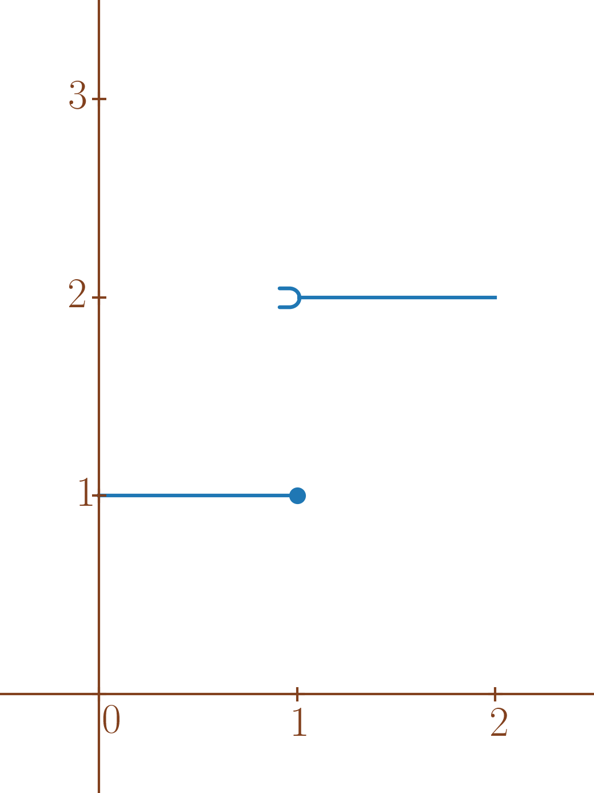
Soient \((E,\left\|\cdot\right\|)\), \((F,N(\cdot))\) deux espaces vectoriels normés, \(A \subset E\) et \(f : A \to F.\)
On dit que \(f\) est continue sur tout compact si pour tout \(B\) partie compacte de \(E\) incluse dans \(A\), \(f\) est continue sur \(B.\)
Soient \((E,\left\|\cdot\right\|)\), \((F,N(\cdot))\) deux espaces vectoriels normés, \(A \subset E\) et \(f : A \to F.\)
\[\text{$f$ continue sur tout compact } \Longrightarrow \text{$f$ continue sur $A.$}\]
\(\quad\)
Soit \(\left(x_n\right)\) une suite de \(E\) telle que \(x_n \xrightarrow[n \to +\infty]{} \ell \in E.\)
Alors, \(B = \left\{x_n / n \in \mathbb{N}\right\} \cup \left\{\ell\right\}\) est une partie compacte de \(E.\)
Soit \(\left(y_k\right)\) une suite de \(B.\)
Soit \(\ell\) est valeur d’adhérence de \(\left(y_k\right)\) et \(\left(y_k\right)\) admet donc une valeur d’adhérence dans \(B.\)
Soit \(\ell\) n’est pas valeur d’adhérence de \(\left(y_k\right)\) et donc il existe \(\varepsilon_0\) et \(K \geq 0\), \(\forall k \geq K\), \(\left\|y_k-\ell\right\| > \varepsilon_0.\)
Or, \(x_n \xrightarrow[n \to +\infty]{} \ell\) donc il existe \(N \in \mathbb{N}\) tel que pour tout \(n \geq N\), \(\left\|x_n-\ell\right\| \leq \varepsilon.\)
Donc pour tout \(k \geq K\), \(y_k \in \left\{x_0,x_1,\ldots,x_{N-1}\right\}.\)
On en déduit donc qu’il existe \(0 \leq j \leq N-1\) tel que \(\left\{k \geq K/ y_k = x_j\right\}\) est infini.
Donc \(x_j \in B\) est valeur d’adhérence de \(\left(y_k\right).\)
Soit \(a \in A\) et \(\left(x_n\right)\) une suite de \(A\) telle que \(x_n \xrightarrow[n \to +\infty]{} a.\)
Alors, par le lemme, \(B = \left\{x_n / n \in \mathbb{N}\right\} \cup \left\{a\right\}\) est une partie compacte de \(E\) et de plus, \(B \subset A.\)
Donc \(f\) est continue sur \(B\) et \(f_{\mid B}(x_n) \xrightarrow[n \to +\infty]{} f_{\mid B}(a)\) ie \(f(x_n) \xrightarrow[n \to +\infty]{} f(a).\)
On en déduit que \(f\) est continue sur \(A.\)
Soit \(\left(E,\left\|\cdot\right\|\right)\) un \(\mathbb{K}\)-espace vectoriel normé de dimension finie.
Alors, toutes les normes sont équivalentes sur \(E.\)
Commençons par traiter le cas \(E = \mathbb{R}^p.\) Montrons que toute norme \(N\) sur \(E\) est équivalente à \(\left\|\cdot\right\|_\infty\), ce qui est suffisant car la relation « est équivalente à » est une relation d’équivalence sur les normes de \(E.\)
On considère \(\left(\varepsilon_j\right)_{1 \leq j \leq p}\) la base canonique de \(\mathbb{R}^p\) telle que pour \(1 \leq j \leq p\), \(\varepsilon_j = (0,\ldots,\underbrace{1}_{\text{$j$-ième}},\ldots,0).\)
Soit \(x \in \mathbb{R}^p\) tel que \(x = \sum_{j=1}^p x_j \varepsilon_j\) alors \(N(x) = N\left(\sum_{j=1}^p x_j \varepsilon_j\right) \leq \sum_{j=1}^p N(x_j \varepsilon_j) = \sum_{j=1}^p \left|x_j\right|N(\varepsilon_j) \leq \sum_{j=1}^p \left\|x\right\|_\infty N(\varepsilon_j) = \alpha \left\|x\right\|_\infty\) avec \(\alpha = \sum_{j=1}^pN(\varepsilon_j)\) donc \(\left\|\cdot\right\|_\infty\) est plus fine que \(N.\)
Montrons maintenant que \(N\) est plus fine que \(\left\|\cdot\right\|_\infty.\) On se demande si \[\begin{aligned} & \exists \beta \in \mathbb{R}^{+}/ \forall x \in \mathbb{R}^p, \left\|x\right\|_\infty \leq \beta N(x) ? \\ \text{ ie }& \left\{\frac{\left\|x\right\|_\infty}{N(x)}/ x \in E, x \neq 0\right\} \text{ est majorée ?} \\ \text{ ie }& \left\{\frac{N(x)}{\left\|x\right\|_\infty}/ x \in E, x \neq 0\right\} \text{ est minorée par une constante $> 0$ ?} \\ \text{ ie }& \left\{N\left(\frac{x}{\left\|x\right\|_\infty}\right)/ x \in E, x \neq 0\right\} \text{ est minorée par une constante $> 0$ ?} \\ \text{ ie }& \left\{N\left(y\right)/ y \in S_\infty(0,1)\right\} \text{ est minorée par une constante $> 0$ ?} \\ & \text{ avec $S_\infty(0,1)$ la sphère de centre $0$, de rayon $1$ pour la norme $\left\|\cdot\right\|_\infty$} \\ \end{aligned}\]
En introduisant \(\begin{array}{lllll} f & : & S_\infty(0,1) & \to & \mathbb{R} \\ & & y & \mapsto & N(y) \end{array}\), il suffit donc de montrer que \(\inf_{S_\infty(0,1)} f > 0.\)
Or, \(S_\infty(0,1)\) est une partie fermée et bornée de \(\mathbb{R}^p\) donc compacte par la proposition [prop:bornee_fermee_deRp_est_compacte].
De plus, \(f\) est continue sur \(S_\infty(0,1)\) (pour \(\left\|\cdot\right\|_\infty\) et \(\left|\cdot\right|\)).
En effet, pour tout \(x,y \in S_\infty(0,1)\), \(\left|f(y)-f(x)\right| = \left|N(y)-N(x)\right| \leq N(x-y) \leq \alpha \left\|x-y\right\|_\infty\) donc \(f\) est \(\alpha\)-lipschitzienne pour \(\left\|\cdot\right\|_\infty.\)
On en déduit alors que \(f\) atteint sa borne inférieure. Il existe donc \(y_1 \in S_\infty(0,1)\) tel que \(f(y_1) = \inf_{S_\infty(0,1)} f.\)
Or, \(y_1 \neq 0\) (car \(\left\|y_1\right\|_\infty = 1\)) donc \(f(y_1) > 0\) puis \(\beta'=\inf_{S_\infty(0,1)} f > 0.\)
On a donc pour tout \(x \in E\) tel que \(x \neq 0\), \(\frac{x}{\left\|x\right\|_\infty} \in S_\infty(0,1)\) donc \[f\left(\frac{x}{\left\|x\right\|_\infty}\right) \geq \beta' =\inf_{S_\infty(0,1)} f > 0 \iff N\left(\frac{x}{\left\|x\right\|_\infty}\right) \geq \beta' > 0 \iff \left\|x\right\|_\infty \leq \frac{1}{\beta'}N(x)\] et cette relation reste valable pour \(x=0\) donc \(N\) est plus fine que \(\left\|\cdot\right\|_\infty.\)
Revenons au cas général où \(E\) est un \(\mathbb{K}\)-espace vectoriel de dimension finie.
Que \(\mathbb{K}= \mathbb{R}\) ou \(\mathbb{K}= \mathbb{C}\), \(E\) est un \(\mathbb{R}\)-espace vectoriel de dimension finie que l’on note \(p\) (on précise ce point dans la remarque [rem:unCevn_et_un_Revn]).
Donc il existe \(p \in \mathbb{N}\) et \(\left(e_j\right)_{1 \leq j \leq p}\) une \(\mathbb{R}\)-base de \(E\) telle que \(\begin{array}{lllll} \Phi & : & \mathbb{R}^p & \to & E \\ & & x & \mapsto & \sum_{j=1}^p x_je_j \end{array}\) est une bijection linéaire.
Soient \(N_1,N_2\) deux normes sur \(E\), on considère les deux normes \(N'_1,N'_2\) sur \(\mathbb{R}^p\) telle que pour \(x \in \mathbb{R}^p\), \(N'_1(x) = N_1(\Phi(x))\) et \(N'_2(x) = N_2(\Phi(x)).\)
Par ce qui précède, \(N'_1\) et \(N'_2\) sont équivalentes donc il existe \(\alpha, \beta > 0\) tels que pour tout \(x \in \mathbb{R}^p\), \(\alpha N'_1(x) \leq N'_2(x) \leq \beta N_1'(x)\) ie \(\alpha N_1(\Phi(x)) \leq N_2(\Phi(x)) \leq \beta N_1(\Phi(x)).\)
Donc, comme \(\Phi\) est bijective, pour tout \(y \in E\), \(\alpha N_1(y) \leq N_2(y)) \leq \beta N_1(y)\) et \(N_1\) et \(N_2\) sont équivalentes.
Un \(\mathbb{C}\)-espace vectoriel \(E\) de dimension finie \(q\) est un \(\mathbb{R}\)-espace vectoriel de dimension \(p=2q.\)
D’abord, comme \(E\) est un \(\mathbb{C}\)-espace vectoriel \(E\) de dimension finie \(p\) il existe une « \(\mathbb{C}\)-base » \((e_j)_{1 \leq j \leq q}\) qui est
« \(\mathbb{C}\)-génératrice », autrement dit, pour tout \(x \in E\), il existe \(x_1,\ldots,x_q \in \mathbb{C}\) tels que \[x = \sum_{j=1}^q x_j e_j.\]
« \(\mathbb{C}\)-libre », autrement dit, pour tout \(\alpha_1,\ldots,\alpha_q \in \mathbb{C}\), \[\sum_{j=1}^q \alpha_j e_j = 0 \Longrightarrow \forall 1 \leq j \leq q, \alpha_j=0.\]
Remarquons alors que \(\left(e_j\right)_{1 \leq j \leq q} \cup \left(ie_j\right)_{1 \leq j \leq q}\) est une « \(\mathbb{R}\)-base » de \(E\) de cardinal \(2q.\)
Cette famille est « \(\mathbb{R}\)-génératrice » car pour \(x \in E\), \[x = \sum_{j=1}^q x_j e_j = \sum_{j=1}^q \left(\mathop{\mathrm{Re}}(x_j)+i \mathop{\mathrm{Im}}(x_j)\right) e_j = \sum_{j=1}^q \mathop{\mathrm{Re}}(x_j)e_j+\sum_{j=1}^q \mathop{\mathrm{Im}}(x_j) \left(ie_j\right)\]
Cette famille est « \(\mathbb{R}\)-libre » car pour \(a_1,\ldots,a_q \in \mathbb{R}\), \(b_1,\ldots,b_q \in \mathbb{R}\) tels que \(\sum_{j=1}^q a_j e_j + \sum_{j=1}^q b_j \left(i e_j\right) = 0\) alors \(\sum_{j=1}^q \alpha_j e_j =0\) avec \(\alpha_j = a_j+ib_j \in \mathbb{C}\) pour \(1 \leq j \leq q.\)
Or, \(\left(e_j\right)\) est \(\mathbb{C}\)-libre donc \(\alpha_j = 0\) pour tout \(1 \leq j \leq q\) et finalement \(a_j = b_j = 0\) pour \(1 \leq j \leq q.\)
En dimension finie, il est donc inutile de préciser la (ou les) norme(s) pour
dire si un ensemble est borné, ouvert, fermé, voisinage d’un point, dense ou compact,
dire si un point est intérieur, adhérent ou forntière à un ensemble,
dire si une suite admet une limite ou une valeur d’adhérence,
dire si une fonction admet une limite, est continue, lispschitzienne ou uniformément continue.
On précise tout de même que les constantes de Lipschitz sont modifiées par un changement de norme.
Soit \(E\) un \(\mathbb{K}\)-espace vectoriel de dimension finie et \(A \subset E.\) Alors, \[A \text{ compacte } \iff A \text{ fermée et bornée}.\]
\((\Longrightarrow)\) ce sens est vrai en toute généralité (voir la proposition [prop:compact_est_ferme_borne]).
\((\Longleftarrow)\) \(E\) est un \(\mathbb{R}\)-espace vectoriel de dimension finie \(p \in \mathbb{N}\) (voir la remarque [rem:unCevn_et_un_Revn]) et on en considère une base \((e_1,\ldots,e_p).\)
On considère alors la norme \(\left\|\cdot\right\|_{\infty,\mathscr{B}}\) telle que pour \(x = \sum_{j=1}^p x_j e_j \in E\), \(\left\|x\right\|_{\infty,\mathscr{B}} = \max_{1 \leq j \leq p} \left|x_j\right|\) (peu importe la norme considérée en dimension finie).
Soit \(\left(x_n\right)\) une suite de \(A\) telle que pour tout \(n \in \mathbb{N}\), \(x_n = \sum_{j=1}^p x_{n,j} e_j.\)
D’abord, \(A\) est bornée donc il existe \(M \in \mathbb{R}^{+}\) tel que pour tout \(x \in A\), \(\left\|x\right\|_{\infty,\mathscr{B}} \leq M.\)
On a donc pour tout \(n \in \mathbb{N}\), pour tout \(1 \leq j \leq p\), \(\left|x_{n,j}\right| \leq \left\|x\right\|_{\infty,\mathscr{B}} \leq M\) et \(x_n \in \left[-M,M\right]^p.\)
Or, \(\left[-M,M\right]^p\) est un compact de \(\mathbb{R}^p\) (par la proposition [prop:bornee_fermee_deRp_est_compacte]) donc il existe une extraction \(\varphi:\mathbb{N}\to \mathbb{N}\) telle que \(\left(x_{\varphi(n),1},\ldots,x_{\varphi(n),p}\right) \xrightarrow[n \to +\infty]{} \left(\ell_1,\ldots,\ell_p\right)\in \mathbb{R}^p.\)
En posant \(\ell = \sum_{j=1}^p \ell_j e_j\), on a alors pour \(n \in \mathbb{N}\), \(\left\|x_{\varphi(n)}-\ell\right\|_{\infty,\mathscr{B}} = \max_{1 \leq j \leq p} \left|x_{\varphi(n),j}-\ell_j\right| \leq \sum_{j=1}^p \left|x_{\varphi(n),j}-\ell_j\right| \xrightarrow[n \to +\infty]{} 0\) ie \(x_{\varphi(n)} \xrightarrow[n \to +\infty]{\left\|\cdot\right\|_{\infty,\mathscr{B}}} \ell.\)
Or, \(A\) est fermée donc \(\ell \in A\) et finalement, \(A\) est compacte.
Pour rappel, ce théorème est faux en dimension infinie comme déjà illustré dans la remarque [rem:ferme_borne_no_compact].
Les boules fermées et les sphères sont compactes en dimension finie.
Soit \(E\) un \(K\)-espace vectoriel de dimension finie et \(A \subset E\) bornée alors \(\overline{A}\) est compacte.
En effet, \(\overline{A}\) est fermée et comme \(A\) est bornée, il existe \(M \in \mathbb{R}^{+}\) tel que \(A \subset \overline{B}(0,M).\) On a donc \(\overline{A} \subset \overline{\overline{B}(0,M)} = \overline{B}(0,M)\) et \(\overline{A}\) est aussi bornée.
(Théorème de Bolzano-Weirstrass) Soient \(E\) un \(\mathbb{K}\)-espace vectoriel de dimension finie et \(\left(x_n\right)\) une suite bornée de \(E.\)
Alors, \(\begin{array}{ll} & \left(x_n\right) \text{ admet une valeur d'adhérence dans $E$} \\ \text{ ie }& \text{il existe une extraction $\varphi:\mathbb{N}\to\mathbb{N}$ et $\ell \in E$ tels que $x_{\varphi(n)} \xrightarrow[n \to +\infty]{} \ell$}. \end{array}\)
\(\left(x_n\right)\) est bornée donc il existe \(M\in \mathbb{R}^{+}\) tel que pour tout \(n \in \mathbb{N}\), \(x_n \in \overline{B}(0,M).\)
Or, \(\overline{B}(0,M)\) est fermée et bornée donc compacte donc \(\left(x_n\right)\) admet une valeur d’adhérence (dans \(\overline{B}(0,M)\)).
Soit \((E,\left\|\cdot\right\|)\) un \(\mathbb{K}\)-espace vectoriel normé de dimension quelconque.
Soit \(F \subset E\) un sous-espace vectoriel de dimension finie.
Alors, \(F\) est une partie fermé de \(E\) pour \(\left\|\cdot\right\|.\)
Pour \(x \in F\), on pose \(\left\|x\right\|_F = \left\|x\right\|\) tel que \(\left\|\cdot\right\|_F\) est une norme sur \(F.\)
Soit \(x \in \overline{F}\) (l’adhérence de \(F\) dans \((E,\left\|\cdot\right\|)\)) alors il existe \(\left(x_n\right)\) une suite de \(F\) telle que \(x_n \xrightarrow[n \to +\infty]{\left\|\cdot\right\|} x\) et on a donc aussi \(x_n \xrightarrow[n \to +\infty]{\left\|\cdot\right\|_F} x.\)
Comme \(x_n \xrightarrow[n \to +\infty]{\left\|\cdot\right\|} x\), \(\left(x_n\right)\) est bornée pour \(\left\|\cdot\right\|\) et il existe \(M\in \mathbb{R}^{+}\) tel que pour tout \(n \in \mathbb{N}\), \(\left\|x_n\right\| \leq M.\) On a donc aussi \(\left\|x_n\right\|_F \leq M\) pour tout \(n \in \mathbb{N}.\)
Or, \(F\) est de dimension finie donc par théorème de Bolzano-Weirstrass, il existe une extraction \(\varphi:\mathbb{N}\to\mathbb{N}\) et \(\ell \in F\) tels que \(x_{\varphi(n)} \xrightarrow[n \to +\infty]{\left\|\cdot\right\|_F} \ell.\)
On a donc, comme \(x_n \xrightarrow[n \to +\infty]{\left\|\cdot\right\|_F} x\), \(x = \ell \in F\) donc \(\overline{F} = F\) et \(F\) est un fermé de \((E,\left\|\cdot\right\|).\)
Ceci est faux avec \(F\) de dimension infinie.
On considère \(E = \mathscr{C}([0,1],\mathbb{R})\) normé par \(\left\|\cdot\right\|_\infty\) et \(F = \left\{\text{fonctions polynomiales de $[0,1]$ dans $\mathbb{R}$}\right\}\) qui est bien un sous-espace vectoriel de \(E.\)
Alors, \(\begin{array}{lllll} f & : & [0,1] & \to & \mathbb{R} \\ & & x & \mapsto & e^x \end{array} \in \overline{F}\) mais \(f \notin F\) (sa dérivée ne s’annule jamais donc elle ne peut pas être polynomiale).
En effet, comme \(f\) est \(\mathscr{C}^\infty\), par inégalité de Taylor-Lagrange, pour tout \(x \in [0,1]\) et \(n \in \mathbb{N}\), \[\left|f(x) - \sum_{k=0}^n \frac{f^{(k)}(0)}{k!}x^k\right| = \left|f(x) - \sum_{k=0}^n \frac{x^k}{k!}\right| \leq \sup_{t\in [0,x]}\underbrace{\left|f^{(n+1)}(t)\right|}_{=e^t} \frac{\left|x\right|^{n+1}}{(n+1)!} \leq \frac{e}{(n+1)!}.\] On en déduit alors avec \(\begin{array}{lllll} p_n & : & [0,1] & \to & \mathbb{R} \\ & & x & \mapsto & \sum_{k=0}^n \frac{x^k}{k!} \end{array} \in F\) que l’on a \(\left\|f-p_n\right\|_\infty \leq \frac{e}{(n+1)!}.\) Donc \(\left\|p_n-f\right\|_\infty \xrightarrow[n \to +\infty]{} 0\) ie \(p_n \xrightarrow[n \to +\infty]{\left\|\cdot\right\|_\infty} f\) mais \(f \notin F.\)
Soit \(E\) un espace vectoriel de dimension finie et \(A\) une partie fermée non vide de \(E.\)
Soit \(x \in E\), montrer que \(d(x,A)\) est atteinte.
Soit \(B\) une partie compacte non vide de \(E\), montrer que \(d(A,B)\) est atteinte.
Comme \(d(x,A) = \inf_{y \in A} \left\|x-y\right\|\), il existe une suite \(\left(y_n\right)\) de \(A\) telle que \(\left\|x-y_n\right\| \xrightarrow[n \to +\infty]{} d(x,A).\)
On a donc que la suite \(\left(y_n\right)\) est bornée car alors pour tout \(n \in \mathbb{N}\), \(\left\|y_n\right\| \leq \left\|y_n-x\right\|+\left\|x\right\|\) et \(\left(\left\|y_n-x\right\|\right)_{n \geq 0}\) est bornée car convergente.
Par théorème de Bolzano-Weirstrass, il existe une extraction \(\varphi:\mathbb{N}\to\mathbb{N}\) et \(\ell \in E\) tels que \(y_{\varphi(n)} \xrightarrow[n \to +\infty]{} \ell.\)
Or, \(A\) est fermée donc \(\ell \in A\) et finalement, \(\left\|x-y_{\varphi(n)}\right\| \xrightarrow[n \to +\infty]{} d(x,A)\) et \(\left\|x-y_{\varphi(n)}\right\| \xrightarrow[n \to +\infty]{} \left\|x-\ell\right\|\) donc la distante est atteinte en \(\ell.\)
Comme \(d(A,B) = \inf_{\substack{x \in A\\ y \in B}} \left\|x-y\right\|\), il existe une suite \(\left(x_n\right)\) de \(A\) et une suite \(\left(y_n\right)\) de \(B\) telles que \(\left\|x_n-y_n\right\| \xrightarrow[n \to +\infty]{} d(A,B).\) Or, \(B\) est compacte donc il existe une extraction \(\varphi:\mathbb{N}\to\mathbb{N}\) et \(y \in B\) tels que \(y_{\varphi(n)} \xrightarrow[n \to +\infty]{} y.\)
On a donc que la suite \(\left(x_{\varphi(n)}\right)\) est bornée car alors pour tout \(n \in \mathbb{N}\), \(\left\|x_{\varphi(n)}\right\| \leq \left\|x_{\varphi(n)}-y_{\varphi(n)}\right\|+\left\|y_{\varphi(n)}\right\|\) et \(\left(\left\|y_{\varphi(n)}-x_{\varphi(n)}\right\|\right)_{n \geq 0}\),\(\left(y_{\varphi(n)}\right)_{n \geq 0}\) sont bornées car convergentes.
Par théorème de Bolzano-Weirstrass, il existe une extraction \(\psi:\mathbb{N}\to\mathbb{N}\) et \(x \in E\) tels que \(x_{\varphi(\psi(n))} \xrightarrow[n \to +\infty]{} x\) et on a même \(x \in A\) car \(A\) est fermée.
On en déduit \(\left\|x_{\varphi(\psi(n))}-y_{\varphi(\psi(n))}\right\| \xrightarrow[n \to +\infty]{} d(A,B)\) et \(\left\|x_{\varphi(\psi(n))}-y_{\varphi(\psi(n))}\right\| \xrightarrow[n \to +\infty]{} \left\|x-y\right\|\) donc la distante est atteinte en \(x \in A\) et \(y \in B.\)
Soit \((E,\left\|\cdot\right\|)\) un \(\mathbb{K}\)-espace vectoriel normé.
Soit \(\left(x_n\right)_{n \geq 0}\) une suite de \(E\). On dit que \(\left(x_n\right)\) est une suite de Cauchy si \[\forall \varepsilon >0, \exists N \in \mathbb{N}/ \forall n,m \geq N, \left\|x_n-x_m\right\| \leq \varepsilon.\]
Montrer que si \(\left(x_n\right)\) est une suite de Cauchy alors \(\left(x_n\right)\) est bornée.
Soit \(\left(x_n\right)_{n \geq 0}\) une suite de \(E\) telle que \(x_n \xrightarrow[n \to +\infty]{} \ell \in E\). Montrer que \(\left(x_n\right)\) est une suite de Cauchy.
Soit \(\left(x_n\right)_{n \geq 0}\) une suite de Cauchy de \(E\) et \(\ell \in E\) une valeur d’adhérence de \(\left(x_n\right)\). Montrer \(x_n \xrightarrow[n \to +\infty]{} \ell\).
Si \(E\) est de dimension finie, montrer que toute suite de Cauchy de \(E\) converge.
Avec \(\varepsilon = 1\), il existe \(N \in \mathbb{N}\) tel que pour tout \(n,m \geq N, \left\|x_n-x_m\right\| \leq 1.\)
Donc, pour tout \(n \geq N\), \[\left\|x_n\right\|=\left\|x_n-x_N+x_N\right\| \leq \left\|x_n-x_N\right\|+\left\|x_N\right\| \leq 1+\left\|x_N\right\|.\]
Soit \(\varepsilon >0\), il existe \(N \in \mathbb{N}\) tel que pour tout \(n \geq N, \left\|x_n-\ell\right\| \leq \frac{\varepsilon}{2}.\)
Donc pour tout \(n,m \geq N\), \[\left\|x_n-x_m\right\| = \left\|x_n-\ell+\ell-x_m\right\| \leq \left\|x_n-\ell\right\|+\left\|\ell-x_m\right\| \leq \frac{\varepsilon}{2}+\frac{\varepsilon}{2}= \varepsilon.\]
Soit \(\varepsilon\), il existe \(N \in \mathbb{N}\) tel que pour tout \(n,m \geq N, \left\|x_n-x_m\right\| \leq \varepsilon.\)
Or, comme \(\ell\) est valeur d’adhérence de \(\left(x_n\right)\), il existe \(N' \geq N\) tel que \(\left\|x_{N'}-\ell\right\| \leq \varepsilon\).
On a donc pour tout \(n \geq N\), \[\left\|x_n-\ell\right\| = \left\|x_n-x_{N'}+x_{N'}-\ell\right\| \leq \left\|x_n-x_{N'}\right\|+\left\|x_{N'}-\ell\right\| \leq 2\varepsilon\] ie \(x_n \xrightarrow[n \to +\infty]{} \ell\).
Soit \(\left(x_n\right)\) une suite de Cauchy de \(E\).
Alors, par la question 1., \(\left(x_n\right)\) est bornée.
Donc par le théorème de Bolzano-Weierstrass (\(E\) est de dimension finie), \(\left(x_n\right)\) admet une valeur d’adhérence \(\ell \in E\).
Donc par la question 3., \(x_n \xrightarrow[n \to +\infty]{} \ell\).
Soient \(E\) un \(\mathbb{K}\)-espace vectoriel de dimension finie, \((F,N)\) un \(\mathbb{K}\)-espace vectoriel de dimension quelconque et \(f \in \mathscr{L}(E,F).\)
Alors, \(f\) est continue (donc lipschitzienne).
Considérons \(\mathscr{B}= (e_1,\ldots,e_n)\) une base de \(E\) et la norme \(\left\|\cdot\right\|_{\infty,\mathscr{B}}\) telle que pour \(x = \sum_{j=1}^p x_j e_j \in E\), \(\left\|x\right\|_{\infty,\mathscr{B}} = \max_{1 \leq j \leq p} \left|x_j\right|\) (peu importe la norme considérée en dimension finie).
Alors, par linéarité de \(f\), soit \(x=\sum_{j=1}^p x_j e_j \in E\), \(f(x) = \sum_{j=1}^n x_j f(e_j).\)
On a donc \[N(f(x)) = N\left(\sum_{j=1}^n x_j f(e_j)\right) \leq \sum_{j=1}^n \left|x_j\right| N(f(e_j)) \leq \left(\sum_{j=1}^n N(f(e_j))\right)\left\|x\right\|_\infty\] et \(f\) est lispschitzienne donc continue.
Comme illustré dans l’exemple [ex:appli_lin_nonc0] avec \(\begin{array}{lllll} f & : & \left(\mathscr{C}([0,1],\mathbb{R}),\left\|\cdot\right\|_1\right) & \to & \left(\mathbb{R},\left|\cdot\right|\right) \\ & & u & \mapsto & u(0) \end{array}\), ce résultat est faux dès que \(E\) est de dimension infinie, même si \(F\) est de dimension finie.
Si \(E\) est un \(\mathbb{K}\)-espace vectoriel de dimension finie, \(F\) est un \(\mathbb{K}\)-espace vectoriel et \(f \in \mathscr{L}(E,F)\) est une bijection linéaire alors \(f^{-1} \in \mathscr{L}(F,E)\) et \(F\) est de dimension finie donc \(f\) et \(f^{-1}\) sont continues.
Soient \((E,\left\|\cdot\right\|)\) est un \(\mathbb{K}\)-espace vectoriel de dimension finie et \((F,N)\) est un \(\mathbb{K}\)-espace vectoriel normé de dimension quelconque.
Alors, \(\mathscr{L}(E,F)\) est normé par \(\left|\!\left|\!\left|f\right|\!\right|\!\right| = \sup_{\substack{x \in E\\ x \neq 0}} \frac{N(f(x)}{\left\|x\right\|}.\)
De plus (voir l’exercice [exoc:normetriple_sur_sphere]), comme \(\left|\!\left|\!\left|f\right|\!\right|\!\right| = \sup_{y \in S(0,1)} N(f(y))\), que \(S(0,1)\) est compacte dans \(E\) et \(y \in F \mapsto N(y)\) est continue, on a \(x \in E \mapsto N(f(x))\) qui est continue par composition et \(\left|\!\left|\!\left|f\right|\!\right|\!\right| = \max_{y \in S(0,1)} N(f(y)) = \max_{\substack{x \in E\\ x \neq 0}} \frac{N(f(x)}{\left\|x\right\|}\)
Si \(E\) est de dimension finie, \(E'=E^\star.\)
Soient \(E_1,\ldots,E_p\) des espaces vectoriels de dimension finie et \((F,N)\) un \(\mathbb{K}\)-espace vectoriel normé de dimension quelconque.
Soit \(\begin{array}{lllll} f & : & E_1 \times \ldots \times E_p & \to & F \\ & & (x_1,\ldots,x_p) & \mapsto & f(x_1,\ldots,x_p) \end{array}\) une fonction \(p\)-linéaire
(ie pour tout \(1 \leq j \leq p\) et \((x_1,\ldots,x_p) \in E_1 \times \ldots \times E_p\), \(z \in E_j \mapsto f(x_1,\ldots,\underbrace{z}_{p\text{-ième}},\ldots,x_p)\) est linéaire).
Alors, \(f\) est continue.
On considère \(\begin{array}{ll} \left(e_{11},e_{12},\ldots,e_{1n_1}\right) & \text{ base de $E_1$}, \\ \left(e_{21},e_{22},\ldots,e_{2n_2}\right) & \text{ base de $E_2$}, \\ \vdots & \\ \left(e_{p1},e_{p2},\ldots,e_{pn_p}\right) & \text{ base de $E_p$} \end{array}\) (avec \(n_1,\ldots,n_p \in \mathbb{N}\) les dimensions de \(E_1,\ldots,E_p\)).
Soit \(x = (x_1,\ldots,x_p) \in E_1 \times \ldots \times E_p\) tel que \(\begin{array}{ll} x_1 & = \sum_{j_1=1}^{n_1} x_{1j_1} e_{1j_1} \in E_1, \\ x_2 & = \sum_{j_2=1}^{n_2} x_{2j_2} e_{2j_2} \in E_2, \\ \vdots & \\ x_p & = \sum_{j_p=1}^{n_p} x_{pj_p} e_{pj_p} \in E_p. \end{array}\)
Alors, par \(p\)-linéarité de \(f\), \[f(x) = f\left(\sum_{j_1=1}^{n_1} x_{1j_1} e_{1j_1},\ldots,\sum_{j_p=1}^{n_p} x_{pj_p} e_{pj_p}\right) = \sum_{\substack{1 \leq j_1 \leq n_1 \\ \ldots \\ 1 \leq j_p \leq n_p}}x_{1j_1} \ldots x_{pj_p} f(e_{1j_1},\ldots,e_{pj_p}).\]
Or,
\(\begin{array}{ll} \text{Pour } 1 \leq i \leq p, & x \in E_1 \times \ldots \times E_p \mapsto x_i \in E_i \text{ est continue car linéaire} \\ \text{ et }\text{ pour }1 \leq j \leq n_i & x_i \in E_i \mapsto x_{ij} \in \mathbb{K}\text{ est continue car linéaire} \end{array}\)
donc \(x \in E_1 \times \ldots \times E_p \mapsto x_{ij} \in \mathbb{K}\) est continue par composition.
Pour \(j_1,\ldots,j_p \in \mathbb{N}\), \(x \in E_1 \times \mapsto E_p \mapsto x_{1j_1} \ldots x_{pj_p} \in \mathbb{K}\) est continue par produit et \(x \in E_1 \times \mapsto E_p \mapsto f(e_{1j_1},\ldots,e_{pj_p}) \in F\) est continue car constante
donc \(x \in E_1 \times \ldots \times E_p \mapsto x_{1j_1} \ldots x_{pj_p} f(e_{1j_1},\ldots,e_{pj_p})\in F\) est continue.
On en déduit donc que \(f\) est continue par somme.
\(\begin{array}{llll} & \mathscr{M}_{n,p}(\mathbb{K})\times \mathscr{M}_{p,q}(\mathbb{K}) & \to & \mathscr{M}_{n,q}(\mathbb{K}) \\ & (A,B) & \mapsto & AB \end{array}\) est bilinéaire donc continue. Donc si une suite \(\left(A_k\right)\) de \(\mathscr{M}_{n,p}(\mathbb{K})\) vérifie \(A_k \xrightarrow[k \to +\infty]{} A \in \mathscr{M}_{n,p}(\mathbb{K})\) et une suite \(\left(B_k\right)\) de \(\mathscr{M}_{p,q}(\mathbb{K})\) vérifie \(B_k \xrightarrow[k \to +\infty]{} B \in \mathscr{M}_{p,q}(\mathbb{K})\) alors \(A_kB_k \xrightarrow[k \to +\infty]{} AB.\)
Ceci s’étend au produit de plus de deux matrices.
Soit \(E\) un espace vectoriel de dimension \(n\) et \(\mathscr{B}\) est une base de \(E\), \(\begin{array}{lllll} \det{}_\mathscr{B} & : & E^n & \to & \mathbb{K} \\ & & (u_1,\ldots,u_n) & \mapsto & \det{}_\mathscr{B}(u_1,\ldots,u_n) \end{array}\) est \(n\)-linéaire donc continue.
On en déduit que \(\left\{\left(u_1,\ldots,u_n\right) \in E^n / \left(u_1,\ldots,u_n\right) \text{ est une base de $E$}\right\} = \det{}_\mathscr{B}^{-1}(\underbrace{\mathbb{K}\setminus \left\{0\right\}}_{\text{ouvert de $\mathbb{K}$}})\) est un ouvert de \(E^n.\)
Soit \(E\) un \(\mathbb{K}\)-espace vectoriel de dimension finie et \(\mathscr{B}= (e_1,\ldots,e_n)\) une base de \(E.\)
Soit \(\left(x_k\right)_{k \in \mathbb{N}}\) une suite de \(E\) telle que pour tout \(k \in \mathbb{N}\), \(x_k = x_{k,1}e_1+\ldots+x_{k,n}e_n = \sum_{j=1}^n x_{k,j} e_j.\) Soit \(\ell \in E\) tel que \(\ell = \sum_{j=1}^n \ell_j e_j.\) Alors, \[x_k \xrightarrow[k \to +\infty]{} \ell \iff \forall 1 \leq j \leq n, x_{k,j} \xrightarrow[k \to +\infty]{} \ell_j.\]
On norme \(E\) à l’aide de \(\left\|\cdot\right\|_{\infty,\mathscr{B}}\) telle que pour \(x = \sum_{j=1}^n x_j e_j \in E\), \(\left\|x\right\|_{\infty,\mathscr{B}} = \max_{1 \leq j \leq n} \left|x_j\right|\) (peu importe la norme considérée en dimension finie).
\((\Longrightarrow)\) Pour tout \(1 \leq j \leq n\) et \(k \in \mathbb{N}\), \(\left|x_{k,j}-\ell_j\right| \leq \left\|x_k-\ell\right\|_{\infty,\mathscr{B}} \xrightarrow[k \to +\infty]{} 0\) donc \(x_{k,j} \xrightarrow[k \to +\infty]{} \ell_j.\)
\((\Longleftarrow)\) Pour \(k \in \mathbb{N}\), \(\left\|x_k-\ell\right\|_{\infty,\mathscr{B}}\leq \sum_{j=1}^n\underbrace{\left|x_{k,j}-\ell_j\right|}_{\xrightarrow[k \to +\infty]{} 0}\xrightarrow[k \to +\infty]{} 0\) donc \(x_{k} \xrightarrow[k \to +\infty]{} \ell.\)
Soit \(E\) un \(\mathbb{K}\)-espace vectoriel de dimension finie et \(\mathscr{B}= (e_1,\ldots,e_n)\) une base de \(E.\)
Soit \((F,N)\) un \(\mathbb{K}\)-espace vectoriel normé de dimension quelconque.
Soient \(A \subset F\) non vide et \(\begin{array}{lllll} f & : & A & \to & E \\ & & x & \mapsto & f(x) = f_1(x)e_1+\ldots+f_n(x)e_n \end{array} .\)
Alors, soit \(a \in \overline{A}\), \[f(x) \xrightarrow[x \to a]{} \ell \iff \forall 1 \leq j \leq n, f_{j}(x) \xrightarrow[x \to a]{} \ell_j.\]
\[\begin{aligned} f(x) \xrightarrow[x \to a]{} \ell & \iff \left\{\begin{array}{l} \text{Pour toute suite $\left(x_k\right)$ de $A$ telle que $x_k \xrightarrow[k \to +\infty]{} a$}\\ \text{ alors $f(x_k) \xrightarrow[k \to +\infty]{} \ell$} \end{array}\right. \\ & \iff \left\{\begin{array}{l} \text{Pour toute suite $\left(x_k\right)$ de $A$ telle que $x_k \xrightarrow[k \to +\infty]{} a$}\\ \text{ alors pour tout $1 \leq j \leq n$, $f_j(x_k) \xrightarrow[k \to +\infty]{} \ell_j$ par la proposition précédente.} \end{array} \right. \\ & \iff \forall 1 \leq j \leq n, f_{j}(x) \xrightarrow[x \to a]{} \ell_j. \end{aligned}\]
Soit \(E\) un \(\mathbb{K}\)-espace vectoriel de dimension finie et \(\mathscr{B}= (e_1,\ldots,e_n)\) une base de \(E.\)
Soit \((F,N)\) un \(\mathbb{K}\)-espace vectoriel normé de dimension quelconque.
Soient \(A \subset F\) non vide et \(\begin{array}{lllll} f & : & A & \to & E \\ & & x & \mapsto & f(x) = f_1(x)e_1+\ldots+f_n(x)e_n \end{array} .\) Soit \(\ell \in E\) tel que \(\ell = \sum_{j=1}^n \ell_j e_j.\) Alors, \[f \text{ est continue} \iff \forall 1 \leq j \leq n, f_{j} \text{ est continue.}\]
\(f : x \in \mathbb{R}\mapsto \begin{pmatrix} e^{-x} & \frac{1}{1+x^2} \\ 1 & \mathop{\mathrm{Arctan}}(x) \end{pmatrix}\) est continue et \(f(x) \xrightarrow[x \to +\infty]{} \begin{pmatrix} 0 & 0 \\ 1 & \tfrac{\pi}{2} \end{pmatrix}.\)
\(E= \mathbb{C}\) est un \(\mathbb{R}\)-espace vectoriel de base \((1,i)\) donc une fonction \(\begin{array}{lllll} f & : & A & \to & \mathbb{C} \\ & & x & \mapsto & \mathop{\mathrm{Re}}(f(x))+i\mathop{\mathrm{Im}}(f(x)) \end{array}\) vérifie \[f \text{ est continue } \iff \mathop{\mathrm{Re}}(f) \text{ et }\mathop{\mathrm{Im}}(f) \text{ sont continues } \iff \overline{f} \text{ est continue.}\]
\(A \in \mathscr{M}_{n}(\mathbb{K}) \mapsto \det(A) \in \mathbb{K}\) est continue,
\(GL_n(\mathbb{K})\) est un ouvert de \(\mathscr{M}_{n}(\mathbb{K})\),
\(A \in GL_n(\mathbb{K}) \mapsto A^{-1}\) est continue.
Pour rappel, pour \(A \in \mathscr{M}_{n}(\mathbb{K})\), \(\det A = \sum_{\sigma \in \mathcal{S}_n} \varepsilon(\sigma) a_{\sigma(1)1} \ldots a_{\sigma(n)n}.\)
Or, pour \(1 \leq j \leq n\) et \(\sigma \in \mathcal{S}_n\), \(\begin{array}{llll} & \mathscr{M}_{n}(\mathbb{K}) & \to & \mathbb{K} \\ & A & \mapsto & a_{j\sigma(j)} \end{array}\) est continue car linéaire (et \(\mathscr{M}_{n}(\mathbb{K})\) est de dimension finie).
donc pour \(\sigma \in \mathcal{S}_n\), \(\begin{array}{llll} & \mathscr{M}_{n}(\mathbb{K}) & \to & \mathbb{K} \\ & A & \mapsto & a_{\sigma(1)1} \ldots a_{\sigma(n)n} \end{array}\) est continue comme produit de fonctions continues.
Enfin, \(\begin{array}{lllll} \det & : & \mathscr{M}_{n}(\mathbb{K}) & \to & \mathbb{K} \\ & & A & \mapsto & \sum_{\sigma \in \mathcal{S}_n} \varepsilon(\sigma) a_{\sigma(1)1} \ldots a_{\sigma(n)n} \end{array}\) est donc continue comme combinaison linéaire de fonctions continues.
\(GL_n(\mathbb{K}) = \underbrace{\det}_{\text{continue}}{}^{-1}(\underbrace{\mathbb{K}\setminus \left\{0\right\}}_{\text{ouvert de $\mathbb{K}$}})\) et \(GL_n(\mathbb{K})\) est donc un ouvert de \(\mathscr{M}_{n}(\mathbb{K}).\)
Pour rappel, pour \(A \in GL_n(\mathbb{K})\), \(A^{-1} = \frac{1}{\det A}{}^t\mathop{\mathrm{Com}}(A)\) avec \(\mathop{\mathrm{Com}}(A)\) la comatrice de \(A\) telle que \(\mathop{\mathrm{Com}}(A) = \left((-1)^{i+j}\det(A_{ij})\right)\) où \(A_{ij} \in \mathscr{M}_{n-1}(\mathbb{K})\) est la matrice \(A\) à laquelle on a retiré la \(i\)-ième ligne et la \(j\)-ième colonne.
Or, pour \(1 \leq i,j \leq n\), \(\begin{array}{llll} & \mathscr{M}_{n}(\mathbb{K}) & \to & \mathscr{M}_{n-1}(\mathbb{K}) \\ & A & \mapsto & A_{ij} \end{array}\) est continue car linéaire et \(\mathscr{M}_{n}(\mathbb{K})\) est de dimension finie. D’où par composition de fonctions continues, pour \(1 \leq i,j \leq n\), \(\begin{array}{llll} & \mathscr{M}_{n}(\mathbb{K}) & \to & \mathbb{K} \\ & A & \mapsto & \det(A_{ij}) \end{array}\) est continue et on a \(\begin{array}{llll} & \mathscr{M}_{n}(\mathbb{K}) & \to & \mathbb{K} \\ & A & \mapsto & (-1)^{i+j}\det(A_{ij}) \end{array}\) qui est continue aussi. On en déduit alors que \(\begin{array}{llll} & GL_n(\mathbb{K}) & \to & \mathscr{M}_{n}(\mathbb{K}) \\ & A & \mapsto & \left((-1)^{i+j}\det(A_{ij}\right) = \mathop{\mathrm{Com}}(A) \end{array}\) est continue.
De plus, \(\begin{array}{llll} & \mathscr{M}_{n}(\mathbb{K}) & \to & \mathscr{M}_{n}(\mathbb{K}) \\ & B & \mapsto & {}^tB \end{array}\) est continue car linéaire donc par composition, \(\begin{array}{llll} & GL_n(\mathbb{K}) & \to & \mathscr{M}_{n}(\mathbb{K}) \\ & A & \mapsto & {}^t\mathop{\mathrm{Com}}(A) \end{array}\) est continue.
Enfin, \(\det\) est continue sur \(GL_n(\mathbb{K})\) et ne s’annule pas sur \(GL_n(\mathbb{K})\) donc \(\begin{array}{llll} & GL_n(\mathbb{K}) & \to & \mathbb{K} \\ & A & \mapsto & \frac{1}{\det(A)} \end{array}\) est définie et continue donc finalement, par produit, \(\begin{array}{llll} & GL_n(\mathbb{K}) & \to & \mathscr{M}_{n}(\mathbb{K}) \\ & A & \mapsto & \frac{1}{\det A}{}^t\mathop{\mathrm{Com}}(A)=A^{-1} \end{array}\) est continue.
Une suite de \(GL_n(\mathbb{K})\) qui converge ne converge pas forcément dans \(GL_n(\mathbb{K}).\) Par exemple, pour tout \(k \in \mathbb{N}^{\star}\), \(A_k = \frac{1}{k}I_n \in GL_n(\mathbb{K})\) mais \(A_k \xrightarrow[k \to +\infty]{} 0.\)
Soit \(E\) un \(\mathbb{K}\)-espace vectoriel de dimension finie \(n\),
\(f \in \mathscr{L}(E) \mapsto \det(f) \in \mathbb{K}\) est continue,
\(GL(E)\) est un ouvert de \(\mathscr{L}(E)\),
\(f \in GL(E) \mapsto f^{-1}\) est continue.
Soit \(\mathscr{B}\) une base de \(E\) alors \(\begin{array}{lllll} \Phi & : & \mathscr{L}(E) & \to & \mathscr{M}_{n}(\mathbb{K}) \\ & & f & \mapsto & \mathscr{M}_{\mathscr{B}}(f) \end{array}\) est une bijection linéaire avec \(\mathscr{L}(E)\) de dimension finie donc \(\Phi\) et \(\Phi^{-1}\) sont continues.
Pour \(f \in \mathscr{L}(E)\), \(\det f = \det \mathscr{M}_{\mathscr{B}}(f)\) donc \(f \in \mathscr{L}(E) \mapsto \det(f) \in \mathbb{K}\) est la composée de \(A \in \mathscr{M}_{n}(\mathbb{K}) \mapsto \det(A) \in \mathbb{K}\) et \(\Phi\) qui sont deux fonctions continues donc elle est continue.
\(GL(E) = \det{}^{-1}(\mathbb{K}\setminus \left\{0\right\})\) et est donc un ouvert de \(\mathscr{L}(E).\)
Pour \(f \in \mathscr{L}(E)\), \(\mathscr{M}_{\mathscr{B}}(f^{-1}) =\left(\mathscr{M}_{\mathscr{B}}(f)\right)^{-1}\) donc \(f^{-1} = \Phi^{-1}\left(\Phi(f)^{-1}\right)\) et \(f \in \mathscr{L}(E) \mapsto f^{-1}\) est la composée de \(\Phi^{-1}\), \(A \in GL_n(\mathbb{K}) \mapsto A^{-1}\) et \(\Phi\) qui sont trois fonctions continues donc elle est continue.
\(\begin{array}{llll} & \mathscr{M}_{n,p}(\mathbb{K}) & \to & \mathbb{R} \\ & A & \mapsto & \mathop{\mathrm{rg}}(A) \end{array}\) est-elle continue ?
Non. En considérant \(A_k = \frac{1}{k+1}J_{r,n,p} = \begin{pmatrix} \tfrac{1}{k+1} & \cdots & 0 & 0 & \cdots & 0 \\ \vdots & \ddots & \vdots & \vdots & & \vdots \\ 0 & \cdots & \tfrac{1}{k+1} & 0 & \cdots & 0 \\ 0 & \cdots & 0 & 0 & \cdots & 0 \\ \vdots & & \vdots & \vdots & & \vdots \\ 0 & \cdots & 0 & 0 & \cdots & 0 \end{pmatrix}\) on a \(\mathop{\mathrm{rg}}(A_k) = r\) pour tout \(k \in \mathbb{N}\) mais \(A_k \xrightarrow[k \to +\infty]{} 0\), de rang \(0.\)
Soient \((E,\left\|\cdot\right\|)\), \((F,N)\), \((G,N')\) trois espaces vectoriels normés et \(A \subset E\) non vide.
Soient \(f: A \to F\), \(g: A \to G\) et \(a \in \overline{A}\) (ou \(a = \pm \infty\) si \(E = \mathbb{R}\)).
On dit que \(f(x)\) est négligeable devant \(g(x)\) quand \(x\) tend vers \(a\) si \[\forall \varepsilon > 0, \exists V \in \mathcal{V}(a) / \forall x \in V \cap A, N\left(f(x)\right) \leq \varepsilon N'\left(g(x)\right).\]
On note alors \(f(x) =\underset{x\to a}{o} \left(g(x)\right).\)
On dit que \(f(x)\) est dominée par \(g(x)\) quand \(x\) tend vers \(a\) si \[\exists M \in \mathbb{R}^{+}, \exists V \in \mathcal{V}(a) / \forall x \in V \cap A, N\left(f(x)\right) \leq MN'\left(g(x)\right).\] On note alors \(f(x) =\underset{x\to a}{O} \left(g(x)\right).\)
\(f(x) =\underset{x\to a}{o} \left(g(x)\right) \Longrightarrow f(x) =\underset{x\to a}{O} \left(g(x)\right).\)
\(f(x) =\underset{x\to a}{o} \left(g(x)\right) \iff N\left(f(x)\right) =\underset{x\to a}{o} \left(N'\left(g(x)\right)\right).\)
\(f(x) =\underset{x\to a}{O} \left(g(x)\right) \iff N\left(f(x)\right) =\underset{x\to a}{O} \left(N'\left(g(x)\right)\right).\)
\(f(x) =\underset{x\to a}{o} \left(1\right) \iff f(x) \xrightarrow[x \to a]{} 0.\)
\(f(x) =\underset{x\to a}{O} \left(1\right) \iff f\) est bornée au voisinage de \(a.\)
\(f(x) \xrightarrow[x \to a]{} \ell \in F \iff f(x) = \ell + \underset{x\to a}{o}\left(1\right).\)
Soient \(\lambda,\mu \in \mathbb{K}^\star\) alors \(f(x) =\underset{x\to a}{o} \left(g(x)\right) \Longrightarrow \lambda f(x) =\underset{x\to a}{o} \left(\mu g(x)\right)\)
et \(f(x) =\underset{x\to a}{O} \left(g(x)\right) \Longrightarrow \lambda f(x) =\underset{x\to a}{O} \left(\mu g(x)\right).\)
Si \(G = \mathbb{K}\) et \(g\) ne s’annule pas au voisinage de \(a\),
\(f(x) =\underset{x\to a}{o} \left(g(x)\right) \iff \frac{f(x)}{g(x)} \xrightarrow[x \to a]{} 0_F\),
\(f(x) =\underset{x\to a}{O} \left(g(x)\right) \iff \frac{f}{g}\) est bornée au voisinage de \(a.\)
Soient \(\begin{array}{lllll} f & : & \mathbb{R} & \to & \mathbb{R}^2 \\ & & x & \mapsto & (x^2,x^2) \end{array}\) et \(\begin{array}{lllll} g & : & \mathbb{R} & \to & \mathbb{R} \\ & & x & \mapsto & x \end{array} .\)
Alors, \(f(x) =\underset{x\to 0}{o} \left(g(x)\right)\) car pour \(x \neq 0\), \(\frac{f(x)}{g(x)} = (x,x) \xrightarrow[x \to 0]{} 0.\)
Aussi, \(g(x) =\underset{x\to +\infty}{o} \left(f(x)\right)\) car pour \(x \neq 0\), \(\frac{\left|g(x)\right|}{\left\|f(x)\right\|_\infty} = \frac{\left|x\right|}{\left|x\right|^2} = \frac{1}{\left|x\right|} \xrightarrow[x \to +\infty]{} 0.\)
Soient \((E,\left\|\cdot\right\|)\), \((F,N)\), \((G,N')\) trois espaces vectoriels normés et \(A \subset E\) non vide.
Soient \(f_1: A \to F, f_2: A \to F\), \(g: A \to G\) et \(a \in \overline{A}\) (ou \(a = \pm \infty\) si \(E = \mathbb{R}\)).
Alors, soient \(\lambda,\mu \in \mathbb{K}\),
\(\left\{\begin{array}{l} f_1(x) =\underset{x\to a}{o} \left(g(x)\right) \\ f_2(x) =\underset{x\to a}{o} \left(g(x)\right) \end{array}\right. \Longrightarrow \lambda f_1(x)+\mu f_2(x) =\underset{x\to a}{o} \left(g(x)\right)\),
\(\left\{\begin{array}{l} f_1(x) =\underset{x\to a}{O} \left(g(x)\right) \\ f_2(x) =\underset{x\to a}{O} \left(g(x)\right) \end{array}\right. \Longrightarrow \lambda f_1(x)+\mu f_2(x) =\underset{x\to a}{O} \left(g(x)\right).\)
Soit \(\varepsilon > 0\), \[\begin{aligned} & \exists V_1 \in \mathcal{V}(a) / \forall x \in V_1 \cap A, N\left(f_1(x)\right) \leq \varepsilon N'\left(g(x)\right)\\ & \exists V_2 \in \mathcal{V}(a) / \forall x \in V_2 \cap A, N\left(f_2(x)\right) \leq \varepsilon N'\left(g(x)\right). \end{aligned}\]
Or, \(V_1 \cap V_2 \in \mathcal{V}(a)\) comme intersection de deux voisinages de \(a\) et \[\forall x \in \left(V_1 \cap V_2\right) \cap A, N\left(\lambda f_1(x)+\mu f_2(x)\right) \leq (\left|\lambda\right|+\left|\mu\right|)\varepsilon N'\left(g(x)\right).\]
Donc \(\lambda f_1(x)+\mu f_2(x) =\underset{x\to a}{o} \left(g(x)\right).\)
\[\begin{aligned} & \exists M_1 \in \mathbb{R}^{+}, \exists V_1 \in \mathcal{V}(a) / \forall x \in V_1 \cap A, N\left(f_1(x)\right) \leq M_1 N'\left(g(x)\right)\\ & \exists M_2 \in \mathbb{R}^{+}, \exists V_2 \in \mathcal{V}(a) / \forall x \in V_2 \cap A, N\left(f_2(x)\right) \leq M_2 N'\left(g(x)\right). \end{aligned}\]
Or, \(V_1 \cap V_2 \in \mathcal{V}(a)\) comme intersection de deux voisinages de \(a\) et \[\forall x \in \left(V_1 \cap V_2\right) \cap A, N\left(\lambda f_1(x)+\mu f_2(x)\right) \leq (\left|\lambda\right|M_1+\left|\mu\right|M_2) N'\left(g(x)\right).\]
Donc \(\lambda f_1(x)+\mu f_2(x) =\underset{x\to a}{O} \left(g(x)\right).\)
Soient \((E,\left\|\cdot\right\|)\), \((F,N)\) deux espaces vectoriels normés et \(A \subset E\) non vide. Soient \(f: A \to F\), \(g: A \to \mathbb{K}\) à valeurs scalaires et \(a \in \overline{A}\) (ou \(a = \pm \infty\) si \(E = \mathbb{R}\)). Alors,
\[f(x) =\underset{x\to a}{o} \left(g(x)\right) \iff \exists \left\{\begin{array}{l} V \in \mathcal{V}(a), \\ h: V\cap A \to F \end{array}\right./ \left\{\begin{array}{ll} & h(x) \xrightarrow[x \to a]{} 0_F \\ \text{ et }&\forall x \in V \cap A, f(x)=h(x)g(x). \end{array} \right.\]
\[f(x) =\underset{x\to a}{O} \left(g(x)\right) \iff \exists \left\{\begin{array}{l} V \in \mathcal{V}(a), \\ h: V\cap A \to F \end{array}\right. / \left\{\begin{array}{ll} & h \text{ bornée} \\ \text{ et }&\forall x \in V \cap A, f(x)=h(x)g(x). \end{array} \right.\]
\((\Longrightarrow)\) Avec \(\varepsilon = 1\), \[\exists V \in \mathcal{V}(a) / \forall x \in V \cap A, N\left(f(x)\right) \leq \left|g(x)\right|.\] En particulier, pour \(x \in V \cap A\), \(g(x) = 0 \Longrightarrow f(x) = 0_F.\) On pose alors
\(\begin{array}{lllll} h & : & V \cap A & \to & F \\ & & x & \mapsto & \left\{\begin{array}{ll} \frac{f(x)}{g(x)} &\mbox{ si $g(x) \neq 0$,} \\ 0_F & \mbox{ si $g(x)=0.$} \end{array}\right. \end{array}\) et on a \(f(x) = h(x)g(x)\) pour tout \(x \in V \cap A.\)
De plus, pour \(\varepsilon > 0\), \[\exists W \in \mathcal{V}(a) / \forall x \in W \cap A, N\left(f(x)\right) \leq \varepsilon\left|g(x)\right|.\] d’où \[\forall x \in \left(W \cap V\right) \cap A, N\left(f(x)\right) = N\left(h(x)g(x)\right) = \left|g(x)\right|N(h(x)) \leq \varepsilon\left|g(x)\right|.\] Donc, comme \(h(x) = 0\) quand \(g(x) = 0\) pour \(x \in V \cap A\), \[\forall x \in \left(W \cap V\right) \cap A, N\left(h(x)\right) \leq \varepsilon\] ie \(h(x) \xrightarrow[x \to a]{} 0_F.\)
\((\Longleftarrow)\) \(h(x) \xrightarrow[x \to a]{} 0_F\) donc soit \(\varepsilon > 0\), \[\exists W \in \mathcal{V}(a) / \forall x \in W \cap A, N\left(h(x)\right) \leq \varepsilon.\] On en déduit alors que \[\forall x \in \left(W \cap V\right) \cap A, N\left(f(x)\right) = N\left(h(x)g(x)\right) = \left|g(x)\right|N(h(x)) \leq \varepsilon\left|g(x)\right|\] et donc \(f(x) =\underset{x\to a}{o} \left(g(x)\right).\)
\((\Longrightarrow)\) \[\exists M \in \mathbb{R}^{+}, \exists V \in \mathcal{V}(a) / \forall x \in V \cap A, N\left(f(x)\right) \leq M\left|g(x)\right|.\] En particulier, pour \(x \in V \cap A\), \(g(x) = 0 \Longrightarrow f(x) = 0_F.\) On pose alors
\(\begin{array}{lllll} h & : & V \cap A & \to & F \\ & & x & \mapsto & \left\{\begin{array}{ll} \frac{f(x)}{g(x)} &\mbox{ si $g(x) \neq 0$,} \\ 0_F & \mbox{ si $g(x)=0.$} \end{array}\right. \end{array}\) et on a \(f(x) = h(x)g(x)\) pour tout \(x \in V \cap A.\)
De plus, \[\forall x \in V \cap A, N\left(f(x)\right) = N\left(h(x)g(x)\right) = \left|g(x)\right|N(h(x)) \leq M\left|g(x)\right|.\] Donc, comme \(h(x) = 0\) quand \(g(x) = 0\) pour \(x \in V \cap A\), \[\forall x \in V \cap A, N\left(h(x)\right) \leq M\] ie \(h\) est bornée.
\((\Longleftarrow)\) \(h\) est bornée donc \[\exists M \in \mathbb{R}^{+}/ \forall x \in V \cap A, N\left(h(x)\right) \leq M.\] On en déduit alors que \[\forall x \in V \cap A, N\left(f(x)\right) = N\left(h(x)g(x)\right) = \left|g(x)\right|N(h(x)) \leq M\left|g(x)\right|\] et donc \(f(x) =\underset{x\to a}{O} \left(g(x)\right).\)
Soient \((E,\left\|\cdot\right\|)\) un espace vectoriel normé et \(A \subset E\) non vide.
Soient \(f_1: A \to \mathbb{K}, f_2: A \to \mathbb{K}\), \(g_1: A \to \mathbb{K}\), \(g_2: A \to \mathbb{K}\) quatre fonctions à valeurs scalaires et \(a \in \overline{A}\) (ou \(a = \pm \infty\) si \(E = \mathbb{R}\)).
\(\left\{\begin{array}{l} f_1(x) =\underset{x\to a}{o} \left(g_1(x)\right) \\ f_2(x) =\underset{x\to a}{O} \left(g_2(x)\right) \end{array}\right. \Longrightarrow f_1(x)f_2(x) =\underset{x\to a}{o} \left(g_1(x)g_2(x)\right)\),
\(\left\{\begin{array}{l} f_1(x) =\underset{x\to a}{o} \left(g_1(x)\right) \\ f_2(x) =\underset{x\to a}{o} \left(g_2(x)\right) \end{array}\right. \Longrightarrow f_1(x)f_2(x) =\underset{x\to a}{o} \left(g_1(x)g_2(x)\right)\),
\(\left\{\begin{array}{l} f_1(x) =\underset{x\to a}{O} \left(g_1(x)\right) \\ f_2(x) =\underset{x\to a}{O} \left(g_2(x)\right) \end{array}\right. \Longrightarrow f_1(x)f_2(x) =\underset{x\to a}{O} \left(g_1(x)g_2(x)\right).\)
Soit \(\varepsilon > 0\), \[\begin{aligned} & \exists V_1 \in \mathcal{V}(a) / \forall x \in V_1 \cap A, \left|f_1(x)\right| \leq \varepsilon \left|g_1(x)\right|\\ \end{aligned}\] et \[\begin{aligned} & \exists M_2 \in \mathbb{R}^{+}, \exists V_2 \in \mathcal{V}(a) / \forall x \in V_2 \cap A, \left|f_2(x)\right| \leq M_2 \left|g_2(x)\right|. \end{aligned}\]
Or, \(V_1 \cap V_2 \in \mathcal{V}(a)\) comme intersection de deux voisinages de \(a\) et \[\forall x \in \left(V_1 \cap V_2\right) \cap A, \left|f_1(x)f_2(x)\right| \leq M_2 \varepsilon \left|g_1(x)g_2(x)\right|.\]
Donc \(f_1(x)f_2(x) =\underset{x\to a}{o} \left(g_1(x)g_2(x)\right).\)
Si \(f_2(x) =\underset{x\to a}{o} \left(g_2(x)\right)\) alors \(f_2(x) =\underset{x\to a}{O} \left(g_2(x)\right)\) donc le résultat est donné par le point précédent.
\[\begin{aligned} & \exists M_1 \in \mathbb{R}^{+}, \exists V_1 \in \mathcal{V}(a) / \forall x \in V_1 \cap A, \left|f_1(x)\right| \leq M_1 \left|g_1(x)\right|\\ & \exists M_2 \in \mathbb{R}^{+}, \exists V_2 \in \mathcal{V}(a) / \forall x \in V_2 \cap A, \left|f_2(x)\right| \leq M_2 \left|g_2(x)\right|. \end{aligned}\]
Or, \(V_1 \cap V_2 \in \mathcal{V}(a)\) comme intersection de deux voisinages de \(a\) et \[\forall x \in \left(V_1 \cap V_2\right) \cap A, \left|f_1(x)f_2(x)\right| \leq (M_1M_2) \left|g_1(x)g_2(x)\right|.\]
Donc \(f_1(x)f_2(x) =\underset{x\to a}{O} \left(g_1(x)g_2(x)\right).\)
En particulier, si \(f(x) =\underset{x\to a}{o} \left(g(x)\right)\) alors \(f(x)h(x) =\underset{x\to a}{o} \left(g(x)h(x)\right)\) (car \(h(x) =\underset{x\to a}{O} \left(h(x)\right)\)).
Soient \((E,\left\|\cdot\right\|)\), \((F,N)\), \((G,N'), (H,N'')\) quatre espaces vectoriels normés et \(A \subset E\) non vide.
Soient \(f: A \to F, g: A \to G\), \(h: A \to H\) et \(a \in \overline{A}\) (ou \(a = \pm \infty\) si \(E = \mathbb{R}\)).
Alors,
\(\left\{\begin{array}{l} f(x) =\underset{x\to a}{o} \left(g(x)\right) \\ g(x) =\underset{x\to a}{O} \left(h(x)\right) \end{array}\right. \Longrightarrow f(x) =\underset{x\to a}{o} \left(h(x)\right)\),
\(\left\{\begin{array}{l} f(x) =\underset{x\to a}{O} \left(g(x)\right) \\ g(x) =\underset{x\to a}{o} \left(h(x)\right) \end{array}\right. \Longrightarrow f(x) =\underset{x\to a}{o} \left(h(x)\right)\),
\(\left\{\begin{array}{l} f(x) =\underset{x\to a}{o} \left(g(x)\right) \\ g(x) =\underset{x\to a}{o} \left(h(x)\right) \end{array}\right. \Longrightarrow f(x) =\underset{x\to a}{o} \left(h(x)\right)\),
\(\left\{\begin{array}{l} f(x) =\underset{x\to a}{O} \left(g(x)\right) \\ g(x) =\underset{x\to a}{O} \left(h(x)\right) \end{array}\right. \Longrightarrow f(x) =\underset{x\to a}{O} \left(h(x)\right).\)
Soit \(\varepsilon > 0\), \[\begin{aligned} & \exists V_1 \in \mathcal{V}(a) / \forall x \in V_1 \cap A, N\left(f(x)\right) \leq \varepsilon N'\left(g(x)\right)\\ \end{aligned}\] et \[\begin{aligned} & \exists M_2 \in \mathbb{R}^{+}, \exists V_2 \in \mathcal{V}(a) / \forall x \in V_2 \cap A, N'\left(g(x)\right) \leq M_2 N''\left(h(x)\right). \end{aligned}\]
Or, \(V_1 \cap V_2 \in \mathcal{V}(a)\) comme intersection de deux voisinages de \(a\) et \[\forall x \in \left(V_1 \cap V_2\right) \cap A, N\left(f(x)\right) \leq \varepsilon M_2 N''\left(h(x)\right).\]
Donc \(f(x) =\underset{x\to a}{o} \left(h(x)\right).\)
\[\begin{aligned} & \exists M_1 \in \mathbb{R}^{+}, \exists V_1 \in \mathcal{V}(a) / \forall x \in V_1 \cap A, N\left(f(x)\right) \leq M_1 N'\left(g(x)\right). \end{aligned}\] et soit \(\varepsilon > 0\), \[\begin{aligned} & \exists V_2 \in \mathcal{V}(a) / \forall x \in V_2 \cap A, N'\left(g(x)\right) \leq \varepsilon N''\left(h(x)\right)\\ \end{aligned}\]
Or, \(V_1 \cap V_2 \in \mathcal{V}(a)\) comme intersection de deux voisinages de \(a\) et \[\forall x \in \left(V_1 \cap V_2\right) \cap A, N\left(f(x)\right) \leq M_1 \varepsilon N''\left(h(x)\right).\]
Donc \(f(x) =\underset{x\to a}{o} \left(h(x)\right).\)
Si \(f(x) =\underset{x\to a}{o} \left(g(x)\right)\) alors \(f(x) =\underset{x\to a}{O} \left(g(x)\right)\) donc le résultat est donné par le point précédent.
\[\begin{aligned} & \exists M_1 \in \mathbb{R}^{+}, \exists V_1 \in \mathcal{V}(a) / \forall x \in V_1 \cap A, N\left(f(x)\right) \leq M_1 N'\left(g(x)\right)\\ & \exists M_2 \in \mathbb{R}^{+}, \exists V_2 \in \mathcal{V}(a) / \forall x \in V_2 \cap A, N'\left(g(x)\right) \leq M_2 N''\left(h(x)\right). \end{aligned}\]
Or, \(V_1 \cap V_2 \in \mathcal{V}(a)\) comme intersection de deux voisinages de \(a\) et \[\forall x \in \left(V_1 \cap V_2\right) \cap A, N\left(f(x)\right) \leq (M_1M_2) N''\left(h(x)\right).\]
Donc \(f =\underset{x\to a}{O} \left(h(x)\right).\)
Soient \((E,\left\|\cdot\right\|)\), \((F,N)\), \((G,N'), (H,N'')\) quatre espaces vectoriels normés et \(A \subset E\) non vide.
Soient \(f: A \to F, g: A \to G\) et \(a \in \overline{A}\) (ou \(a = \pm \infty\) si \(E = \mathbb{R}\)).
Soit \(B \subset H\) non vide, \(b \in \overline{B}\) (ou \(b = \pm \infty\) si \(H = \mathbb{R}\)) et \(\varphi: B \mapsto A\) tel que \(\varphi(t) \xrightarrow[t \to b]{} a.\)
Alors,
\(f(x) =\underset{x\to a}{o} \left(g(x)\right) \Longrightarrow f(\varphi(t)) =\underset{t\to b}{o} \left(g(\varphi(t))\right)\),
\(f(x) =\underset{x\to a}{O} \left(g(x)\right) \Longrightarrow f(\varphi(t)) =\underset{t\to b}{O} \left(g(\varphi(t))\right).\)
Soit \(\varepsilon > 0\), il existe \(V \in \mathcal{V}(a)\) tel que pour tout \(x \in V \cap A\), \(N(f(x)) \leq \varepsilon N'(g(x)).\)
Or, \(\varphi(t) \xrightarrow[t \to b]{} a\) donc il existe \(W \in \mathcal{V}(b)\) tel que pour tout \(t \in W \cap B, \varphi(t) \in V\) et même \(\varphi(t) \in V \cap A\) comme \(\varphi: B \to A.\)
On en déduit alors que pour tout \(t \in W \cap B\), \(N(f(\varphi(t))) \leq \varepsilon N'(g(\varphi(t)))\) ie \(f(\varphi(t)) =\underset{t\to b}{o} \left(g(\varphi(t))\right).\)
Il existe \(M \in \mathbb{R}^{+}\) et \(V \in \mathcal{V}(a)\) tel que pour tout \(x \in V \cap A\), \(N(f(x)) \leq M N'(g(x)).\)
Or, \(\varphi(t) \xrightarrow[t \to b]{} a\) donc il existe \(W \in \mathcal{V}(b)\) tel que pour tout \(t \in W \cap B, \varphi(t) \in V\) et même \(\varphi(t) \in V \cap A\) comme \(\varphi: B \to A.\)
On en déduit alors que pour tout \(t \in W \cap B\), \(N(f(\varphi(t))) \leq M N'(g(\varphi(t)))\) ie \(f(\varphi(t)) =\underset{t\to b}{O} \left(g(\varphi(t))\right).\)
Soient \((E,\left\|\cdot\right\|)\), \((F,N)\) deux espaces vectoriels normés et \(A \subset E\) non vide.
Soient \(f: A \to F\), \(g: A \to F\) à valeurs dans le même espace et \(a \in \overline{A}\) (ou \(a = \pm \infty\) si \(E = \mathbb{R}\)).
On dit que \(f(x)\) est équivalente à \(g(x)\) quand \(x\) tend vers \(a\) si \(f(x)-g(x) = \underset{x\to a}{o}\left(g(x)\right)\) ie \[\forall \varepsilon > 0, \exists V \in \mathcal{V}(a) / \forall x \in V \cap A, N\left(f(x)-g(x)\right) \leq \varepsilon N\left(g(x)\right).\]
On note alors \(f(x) \underset{x\to a}{\sim} g(x).\)
\(f(x) \underset{x\to a}{\sim} g(x) \iff f(x) = g(x)+\underset{x\to a}{o}\left(g(x)\right)\),
Si \(F=\mathbb{K}\) et \(g\) ne s’annule pas au voisinage de \(a\), \[f(x) \underset{x\to a}{\sim} g(x) \iff \frac{f(x)-g(x)}{g(x)} \xrightarrow[x \to a]{} 0 \iff \frac{f(x)}{g(x)} \xrightarrow[x \to a]{} 1.\]
Soient \((E,\left\|\cdot\right\|)\), \((F,N)\) deux espaces vectoriels normés et \(A \subset E\) non vide. Soient \(f: A \to F\), \(g: A \to F\) à valeurs dans le même espace et \(a \in \overline{A}\) (ou \(a = \pm \infty\) si \(E = \mathbb{R}\)).
Alors, \(f(x) \underset{x\to a}{\sim} g(x) \Longrightarrow f(x) =\underset{x\to a}{O} \left(g(x)\right) \text{ et }g(x) =\underset{x\to a}{O} \left(f(x)\right).\)
Pour \(\varepsilon = 1\), \[\exists V \in \mathcal{V}(a) / \forall x \in V \cap A, N\left(f(x)-g(x)\right) \leq N\left(g(x)\right).\] Donc
pour tout \(x \in V\), \[N(f(x)) = N\left(f(x)-g(x)+g(x)\right) \leq 2N(g(x))\] et \(f(x) =\underset{x\to a}{O} \left(g(x)\right).\)
Pour tout \(x \in V\), \[N(g(x)) = N\left(g(x)-f(x)+f(x)\right) \leq 2N(f(x))\] et \(g(x) =\underset{x\to a}{O} \left(f(x)\right).\)
Soient \((E,\left\|\cdot\right\|)\), \((F,N)\) deux espaces vectoriels normés et \(A \subset E\) non vide.
Alors, la relation \(f\mathscr{R}g \iff f(x) \underset{x\to a}{\sim} g(x)\) définie sur les fonctions de \(A\) dans \(F\) est une relation d’équivalence. Autrement dit, elle est réflexive, symétrique et transitive.
Soient \(f,g,h: A \to F.\)
(Relfexivité) Soit \(\varepsilon >0\), pour tout \(x \in A\), \(N(f(x)-f(x)) = 0 \leq \varepsilon N(f(x))\) donc \(f(x) \underset{x\to a}{\sim} f(x).\)
(Symétrie) Si \(f(x) \underset{x\to a}{\sim} g(x)\) alors \(f(x)=g(x)+\underset{x\to a}{o}\left(g(x)\right) \Longrightarrow g(x)-f(x) = \underset{x\to a}{o}\left(g(x)\right).\)
Or, par la proposition [prop:equiv_donc_grandO], \(g(x) =\underset{x\to a}{O} \left(f(x)\right)\) donc \(g(x)-f(x) = \underset{x\to a}{o}\left(f(x)\right)\) et finalement, \(g(x) \underset{x\to a}{\sim} f(x).\)
(Transitivité) Si \(f(x) \underset{x\to a}{\sim} g(x)\) et \(g(x) \underset{x\to a}{\sim} h(x)\) alors \(f(x)=g(x)+\underset{x\to a}{o}\left(g(x)\right)\) et \(g(x)=h(x)+\underset{x\to a}{o}\left(h(x)\right)\) donc \(f(x) = h(x)+\underset{x\to a}{o}\left(g(x)\right)+\underset{x\to a}{o}\left(h(x)\right).\)
Or, par la proposition [prop:equiv_donc_grandO], \(g(x) =\underset{x\to a}{O} \left(h(x)\right)\) donc \(f(x) = h(x)+\underset{x\to a}{o}\left(h(x)\right)\) et finalement, \(f(x) \underset{x\to a}{\sim} h(x).\)
Soient \((E,\left\|\cdot\right\|)\) un espace vectoriel normé et \(A \subset E\) non vide. Soient \(f: A \to \mathbb{K}\), \(g: A \to \mathbb{K}\) à valeurs scalaires et \(a \in \overline{A}\) (ou \(a = \pm \infty\) si \(E = \mathbb{R}\)). Alors, \[f(x) \underset{x\to a}{\sim} g(x) \iff \exists \begin{array}{l} V \in \mathcal{V}(a), \\ h: V\cap A \to \mathbb{K} \end{array} / h(x) \xrightarrow[x \to a]{} 1 \text{ et }\forall x \in V \cap A, f(x)=h(x)g(x).\]
\((\Longrightarrow)\) Si \(f(x) \underset{x\to a}{\sim} g(x)\) alors \(f(x) -g(x) = \underset{x\to a}{o}\left(g(x)\right)\) donc par la proposition [prop:petito_Grando_et_fonction_tend_vers_0_ou_bornee] il existe \(V \in \mathcal{V}(a)\) et \(k: V\cap A \to \mathbb{K}\) tels que \(k(x) \xrightarrow[x \to a]{} 0\) et pour tout \(x \in V \cap A\), \(f(x)-g(x) = k(x)g(x).\)
On a donc pour tout \(x \in V \cap A\), \(f(x) = (k(x)+1)g(x) = h(x)g(x)\) avec \(h: x \in V \cap A \mapsto k(x)+1 \in \mathbb{K}\) qui vérifie \(h(x) \xrightarrow[x \to a]{} 1.\)
\((\Longrightarrow)\) S’il existe \(V \in \mathcal{V}(a)\) et \(h: V\cap A \to \mathbb{K}\) tels que \(h(x) \xrightarrow[x \to a]{} 1\) et pour tout \(x \in V \cap A\), \(f(x) = h(x)g(x)\) alors pour tout \(x \in V \cap A\), \(f(x) -g(x) = \left(h(x)-1\right)g(x)\) avec \(h(x)-1 \xrightarrow[x \to a]{} 0\) donc par la proposition [prop:petito_Grando_et_fonction_tend_vers_0_ou_bornee], \(f(x) -g(x) = \underset{x\to a}{o}\left(g(x)\right)\) ie \(f(x) \underset{x\to a}{\sim} g(x).\)
Soient \((E,\left\|\cdot\right\|)\) un espace vectoriel normé et \(A \subset E\) non vide. Soient \(f_1: A \to \mathbb{K}\), \(f_2: A \to \mathbb{K}\), \(g_1: A \to \mathbb{K}\), \(g_2: A \to \mathbb{K}\) à valeurs scalaires et \(a \in \overline{A}\) (ou \(a = \pm \infty\) si \(E = \mathbb{R}\)).
Alors, \(\left\{ \begin{array}{ll} f_1(x) & \underset{x\to a}{\sim} g_1(x) \\ f_2(x) & \underset{x\to a}{\sim} g_2(x) \\ \end{array} \right. \Longrightarrow f_1(x)f_2(x) \underset{x\to a}{\sim} g_1(x)g_2(x).\)
Si de plus, \(f_2\) et \(g_2\) ne s’annulent pas au voisinage de \(a\) alors
\[\left\{ \begin{array}{ll} f_1(x) & \underset{x\to a}{\sim} g_1(x) \\ f_2(x) & \underset{x\to a}{\sim} g_2(x) \\ \end{array} \right. \Longrightarrow \frac{f_1(x)}{f_2(x)} \underset{x\to a}{\sim} \frac{g_1(x)}{g_2(x)}.\]
Par la proposition [prop:equivalence_et_fonction_tend_vers_1], il existe \(V_1 \in \mathcal{V}(a), V_2 \in \mathcal{V}(a)\) et \(h_1 : V_1 \cap A \to \mathbb{K}\), \(h_2 : V_2 \cap A \to \mathbb{K}\) telles que \(h_1(x) \xrightarrow[x \to a]{} 1\), \(h_2(x) \xrightarrow[x \to a]{} 1\) et \(\left\{\begin{array}{ll} \forall x \in V_1 \cap A, f_1(x) & = g_1(x) \\ \forall x \in V_2 \cap A, f_2(x) & = g_2(x) \\ \end{array}\right.\)
Donc pour tout \(x \in \left(V_1 \cap V_2\right) \cap A\), \(f_1(x)f_2(x) = h_1(x)h_2(x)g_1(x)g_2(x)\) avec \(h_1(x)h_2(x) \xrightarrow[x \to a]{} 1\), ie \(f_1(x)f_2(x) \underset{x\to a}{\sim} g_1(x)g_2(x).\)
Si \(f_2\) et \(g_2\) ne s’annulent pas au voisinage de \(a\) alors on peut supposer que \(h_2\) ne s’annule pas sur \(V_2 \cap A\) comme \(h_2(x) \xrightarrow[x \to a]{} 1\) (quitte à réduire \(V_2\)) et pour tout \(x \in \left(V_1 \cap V_2\right) \cap A\), \(\frac{f_1(x)}{f_2(x)} = \frac{h_1(x)}{h_2(x)}\frac{f_1(x)}{f_2(x)}\) avec \(\frac{h_1(x)}{h_2(x)} \xrightarrow[x \to a]{} 1\) ie \(\frac{f_1(x)}{f_2(x)} \underset{x\to a}{\sim} \frac{g_1(x)}{g_2(x)}.\)
Soient \((E,\left\|\cdot\right\|)\), \((F,N)\) deux espaces vectoriels normés et \(A \subset E\) non vide. Soient \(f: A \to F\), \(g: A \to F\) à valeurs dans le même espace et \(a \in \overline{A}\) (ou \(a = \pm \infty\) si \(E = \mathbb{R}\)).
Alors, \(f(x) \underset{x\to a}{\sim} g(x) \Longrightarrow N(f(x)) \Longrightarrow N(g(x)).\)
Soit \(\varepsilon > 0\), \[\exists V \in \mathcal{V}(a) / \forall x \in V \cap A, N\left(f(x)-g(x)\right) \leq \varepsilon N\left(g(x)\right).\] Donc \[\forall x \in V \cap A, \left|N\left(f(x)\right)-N\left(g(x)\right)\right| \leq N(f(x)-g(x)) \leq \varepsilon N\left(g(x)\right) = \varepsilon\left|N\left(g(x)\right)\right|\] ce qui est la définition de \(N(f(x)) \underset{x\to a}{\sim} N(g(x)).\)
La réciproque est fausse. Par exemple, avec \(E=F=\mathbb{R}\), \(A = \mathbb{N}\), \(a = +\infty\) ainsi que \(\left(u_n\right), \left(v_n\right)\) telles que pour tout \(n \in \mathbb{N}\), \(u_n = (-1)^n\) et \(v_n = 1\), on a \(\left|u_n\right| \underset{n\to +\infty}{\sim} \left|v_n\right|\) mais \({u_n} \centernot{\underset{n\to +\infty}{\sim}} {v_n}.\)
Soient \((E,\left\|\cdot\right\|)\), \((F,N)\) deux espaces vectoriels normés et \(A \subset E\) non vide. Soient \(f: A \to F\), \(g: A \to F\) à valeurs dans le même espace, \(a \in \overline{A}\) (ou \(a = \pm \infty\) si \(E = \mathbb{R}\)) et \(\ell \in F\) (avec éventuellement \(\ell = \pm \infty\) si \(F = \mathbb{R}\)).
Alors, si \(f(x) \underset{x\to a}{\sim} g(x)\), \[f(x) \xrightarrow[x \to a]{} \ell \iff g(x) \xrightarrow[x \to a]{} \ell.\]
Il suffit de montrer le sens \(\Longrightarrow\) comme \(f\) et \(g\) jouent un rôle symétrique. On traite le cas où \(\ell \neq \pm \infty\) qui s’adapte facilement.
Soit \(\varepsilon > 0\), comme \(f(x) \underset{x\to a}{\sim} g(x)\), on a aussi \(g(x) \underset{x\to a}{\sim} f(x)\) ie il existe \(V \in \mathcal{V}(a)\) tel que pour tout \(x \in V \cap A\), \(N\left(g(x)-f(x)\right) \leq \varepsilon N\left(f(x)\right).\)
De plus, comme \(f(x)\xrightarrow[x \to a]{} \ell\), il existe \(W \in \mathcal{V}(a)\) tel que pour tout \(x \in W \cap A\), \(N\left(f(x)-\ell\right) \leq \varepsilon.\)
On a donc pour tout \(x \in \left(W \cap V\right) \cap A\), \(N(g(x)-\ell) = N(g(x)-f(x)+f(x)-\ell) \leq N(g(x)-f(x)) + N(f(x)-\ell) \leq 2\varepsilon\) puis \(g(x) \xrightarrow[x \to a]{}\ell.\)
Soient \((E,\left\|\cdot\right\|)\) un espace vectoriel normé et \(A \subset E\) non vide. Soient \(f: A \to \mathbb{R}\), \(g: A \to \mathbb{R}\) à valeurs réelles et \(a \in \overline{A}\) (ou \(a = \pm \infty\) si \(E = \mathbb{R}\)). Alors, si \(f(x) \underset{x\to a}{\sim} g(x)\), il existe \(U \in \mathcal{V}(a)\) tel que
\(f(x) > 0 \iff g(x) > 0\),
\(f(x) < 0 \iff g(x) < 0\),
\(f(x) = 0 \iff g(x) = 0.\)
Par la proposition [prop:equivalence_et_fonction_tend_vers_1], il existe \(V \in \mathcal{V}(a)\) et \(h : V \cap A \to \mathbb{R}\) telle que \(h(x) \xrightarrow[x \to a]{} 1\) et pour tout \(x \in V \cap A\), \(f(x) = g(x)h(x).\)
Or, \(1 > 0\), donc il existe \(W \in \mathcal{V}(a)\) tel que pour tout \(x \in W \cap A, h(x) > 0.\) Avec \(U = V \cap W\), on a donc pour tout \(x \in U, g(x) = \underbrace{h(x)}_{> 0}f(x)\), ce qui donne les trois points.
(Équivalent de Stirling) \(n! \underset{n\to +\infty}{\sim} \sqrt{2\pi n} \left(\frac{n}{e}\right)^n\)
Admis.
\(f(x) \underset{x\to a}{\sim} g(x)\) \(\centernot{\Longrightarrow} f(x)-g(x) \xrightarrow[x \to a]{} 0.\)
Avec \(\left(u_n\right),\left(v_n\right)\) définies par \(u_n = n+\sqrt{n}\) et \(v_n = n\) pour \(n \in \mathbb{N}\), on a \(u_n \underset{n\to +\infty}{\sim} v_n\) mais \(u_n-v_n = \sqrt{n} \centernot{\xrightarrow[n \to +\infty]{}} 0.\)
\(f(x)-g(x) \xrightarrow[x \to a]{} 0\) \(\centernot{\Longrightarrow} f(x) \underset{x\to a}{\sim} g(x).\)
Avec \(\left(u_n\right),\left(v_n\right)\) définies par \(u_n = \frac{1}{n}\) et \(v_n = \frac{1}{n^2}\) pour \(n \in \mathbb{N}^{\star}\), on a \(u_n-v_n = \frac{1}{n}- \frac{1}{n^2} \xrightarrow[n \to +\infty]{} 0\) mais \(u_n \centernot{\underset{n\to +\infty}{\sim}} v_n.\)
\(f(x) \underset{x\to a}{\sim} g(x)+h(x)\) \(\centernot{\Longrightarrow} f(x)-g(x) \underset{x\to a}{\sim} h(x).\)
Avec \(\left(u_n\right)\) définie par \(u_n = \frac{1}{n}+\frac{2}{n^2}\) pour \(n \in \mathbb{N}^{\star}\), on a \(u_n \underset{n\to +\infty}{\sim} \frac{1}{n}+\frac{1}{n^2}\) mais \(u_n-\frac{1}{n} = \frac{2}{n^2} \centernot{\underset{n\to +\infty}{\sim}} \frac{1}{n}+\frac{1}{n^2}-\frac{1}{n} = \frac{1}{n^2}.\)
En reprenant le même exemple que le point précédent, on a \(\left\{\begin{array}{l} f_1(x) \underset{x\to a}{\sim} g_1(x) \\ f_2(x) \underset{x\to a}{\sim} g_2(x) \\ \end{array}\right. \centernot{\Longrightarrow} f_1(x)+f_2(x) \underset{x\to a}{\sim} g_1(x)+g_2(x).\)
En revanche, on peut parfois s’en sortir autrement.
Soient \(\left(u_n\right),\left(v_n\right)\) tels que \(u_n \underset{n\to +\infty}{\sim} 2\sqrt{n}\) et \(v_n \underset{n\to +\infty}{\sim} -\sqrt{n}\) alors \(u_n = 2\sqrt{n} + \underset{n\to +\infty}{o}\left(\sqrt{n}\right)\) et \(v_n = -\sqrt{n} + \underset{n\to +\infty}{o}\left(\sqrt{n}\right)\) donc \(u_n+v_n = \sqrt{n}+\underset{n\to +\infty}{o}\left(\sqrt{n}\right) \underset{n\to +\infty}{\sim} \sqrt{n}.\)
Soient \((E,\left\|\cdot\right\|)\) un espace vectoriel normé et \(A \subset E\) non vide. Soient \(f: A \to \mathbb{R}\), \(g: A \to \mathbb{R}\) à valeurs réelles et \(a \in \overline{A}\) (ou \(a = \pm \infty\) si \(E = \mathbb{R}\)).
Soit \(\alpha \in \mathbb{R}.\) Si \(f\) et \(g\) sont strictement positives au voisinage de \(a\) alors \[f(x) \underset{x\to a}{\sim} g(x) \Longrightarrow \left(f(x)\right)^\alpha \underset{x\to a}{\sim} \left(g(x)\right)^\alpha.\]
\[f(x) \underset{x\to a}{\sim} g(x) \Longrightarrow \frac{f(x)}{g(x)} \xrightarrow[x \to a]{} 1 \Longrightarrow \frac{\left(f(x)\right)^\alpha}{\left(g(x)\right)^\alpha} \xrightarrow[x \to a]{} 1 \Longrightarrow \left(f(x)\right)^\alpha \underset{x\to a}{\sim} \left(g(x)\right)^\alpha.\]
Cela est faux si \(\alpha\) dépend de \(x.\)
On a \(1+\frac{1}{n} \underset{n\to +\infty}{\sim} 1\) mais \(\left(1+\frac{1}{n}\right)^n \underset{n\to +\infty}{\sim} e\neq 1.\)
Si \(f\) et \(g\) sont strictement positives au voisinage de \(a\) alors \(f(x) \underset{x\to a}{\sim} g(x) \centernot{\Longrightarrow} \ln\left(f(x)\right) \underset{x\to a}{\sim} \ln\left(g(x)\right).\)
\(1+\frac{1}{n} \underset{n\to +\infty}{\sim} 1+\frac{1}{n^2}\) mais \(\ln\left(1+\frac{1}{n}\right) \underset{n\to +\infty}{\sim} \frac{1}{n} \centernot{\underset{n\to +\infty}{\sim}} \frac{1}{n^2} \underset{n\to +\infty}{\sim} \ln\left(1+\frac{1}{n^2}\right).\)
En revanche, on a \[\begin{aligned} f(x) \underset{x\to a}{\sim} g(x) & \iff \frac{f(x)}{g(x)} \xrightarrow[x \to a]{} 1 \\ & \iff \ln\left(\frac{f(x)}{g(x)}\right) \xrightarrow[x \to a]{} 0 \\ & \iff \ln\left(f(x)\right)=\ln(g(x)) + \underset{x\to a}{o}\left(1\right), \end{aligned}\] ce qui peut être bien utile.
De l’équivalent de Stirling \(n! \underset{n\to +\infty}{\sim} \sqrt{2\pi n} \left(\frac{n}{e}\right)^n\), on tire \(\ln(n!) = \frac{1}{2}\ln(2\pi)+\frac{1}{2}\ln(n)+n\ln(n)-n+ \underset{n\to +\infty}{o}\left(1\right) = n\ln(n) +o\left(n\ln(n)\right) \underset{n\to +\infty}{\sim} n\ln(n).\)
Comme \(e^f\) et \(e^g\) sont strictement positives, \[\begin{aligned} e^{f(x)} \underset{x\to a}{\sim} e^{g(x)} & \iff e^{f(x)-g(x)} \xrightarrow[x \to a]{} 1 \\ & \iff f(x)-g(x) \xrightarrow[x \to a]{} 0 \\ & \iff f(x) = g(x) + \underset{x\to a}{o}\left(1\right), \end{aligned}\]
\[\begin{aligned} \left(n!\right)^{\tfrac{1}{n}} = e^{\frac{1}{n}\ln(n!)} = e^{\frac{1}{n}\left(n\ln(n)-n+\underset{n\to +\infty}{o}(n)\right)} = e^{\ln(n)-1+\underset{n\to +\infty}{o}(1)} \underset{n\to +\infty}{\sim} e^{\ln(n)-1} = \frac{n}{e}. \end{aligned}\]
Soient \((E,\left\|\cdot\right\|)\), \((F,N)\), \((G,N')\) trois espaces vectoriels normés et \(A \subset E\) non vide.
Soient \(f: A \to F, g: A \to F\) et \(a \in \overline{A}\) (ou \(a = \pm \infty\) si \(E = \mathbb{R}\)).
Soit \(B \subset G\) non vide, \(b \in \overline{B}\) (ou \(b = \pm \infty\) si \(G = \mathbb{R}\)) et \(\varphi: B \mapsto A\) tel que \(\varphi(t) \xrightarrow[t \to b]{} a.\)
Alors, \[f(x) \underset{x\to a}{\sim} g(x) \Longrightarrow f(\varphi(t)) \underset{t\to b}{\sim}g(\varphi(t)).\]
\(f(x) = g(x) + \underset{x\to a}{o}\left(g(x)\right)\) donc par la proposition [prop:compo_petito_grandO] \(f(\varphi(t)) = g(\varphi(t)) + \underset{t\to b}{o}\left(g(\varphi(t))\right)\) ie \(f(\varphi(t)) \underset{t\to b}{\sim}g(\varphi(t)).\)
\(\ln(1+x) \underset{x\to 0}{\sim} x\) donc \(\ln(t) \underset{t\to 1}{\sim} t-1\) puis \(\ln(\cos x) \underset{x\to 0}{\sim} \cos(x)-1 \underset{x\to 0}{\sim} -\frac{1}{2}x^2.\)
Soient \((E,\left\|\cdot\right\|)\), \((F,N)\) deux espaces vectoriels normés et \(A \subset E\) non vide.
Soient \(f: A \to F\) et \(a \in \overline{A}\) (ou \(a = \pm \infty\) si \(E = \mathbb{R}\)).
Un développement asymptotique de \(f\) en \(a\) est la donnée de \(n \in \mathbb{N}\), \(\alpha_0,\ldots,\alpha_n \in \mathbb{K}\) et des fonctions \(f_j: A \to F\) pour \(1 \leq j \leq n\) tels que
\[f(x) = \alpha_0f_0(x) + \alpha_1 f_1(x)+\ldots+\alpha_n f_n(x) + \underset{x\to a}{o}\left(f_n(x)\right)\] avec \(f_{j+1}(x) =\underset{x\to a}{o} \left(f_j(x)\right)\) pour \(0\leq j \leq n-1.\)
Dans le cas où \(\alpha_0 \neq 0\), \(f(x) \underset{x\to a}{\sim}\alpha_0 f_0(x)\),
Dans le cas où \(\alpha_1 \neq 0\), \(f(x) -\alpha_0 f_0(x) \underset{x\to a}{\sim}\alpha_1 f_1(x)\),
\(\vdots\)
Dans le cas où \(\alpha_n \neq 0\), \(f(x) - \alpha_0f_0(x) - \ldots-\alpha_{n-1} f_{n-1}(x)\underset{x\to a}{\sim}\alpha_n f_n(x)\)
ou alors \[f(x) = \alpha_0f_0(x) + \alpha_1 f_1(x)+\ldots+\alpha_n f_n(x) + \underset{x\to a}{O}\left(f_n(x)\right)\] avec \(f_{j+1}(x) =\underset{x\to a}{o} \left(f_j(x)\right)\) pour \(0\leq j \leq n-1.\)
\(\cos(x) = 1-\frac{1}{2}x^2+\frac{1}{24}x^4 +\underset{x\to 0}{o}\left(x^5\right)\) donc \(\begin{array}{ll} \cos x &\underset{x\to 0}{\sim} 1, \\ \cos x -1 &\underset{x\to 0}{\sim} -\frac{1}{2}x^2, \\ \cos x-1+\frac{1}{2}x^2 & \underset{x\to 0}{\sim} \frac{1}{24}x^4. \end{array}\)
Pour rappel (voir l’exemple [ex:dv_ln_de_factorielle_de_n]), \(\ln(n!) = n\ln(n)-n+\frac{1}{2}\ln(n)+\frac{1}{2}\ln(2\pi)+o\left(1\right)\) donc \(\begin{array}{ll} \ln(n!) &\underset{n\to +\infty}{\sim} n\ln(n), \\ \ln(n!)- n\ln(n) &\underset{n\to +\infty}{\sim}-n, \\ \ln(n!) -n\ln(n)+n &\underset{n\to +\infty}{\sim} \tfrac{1}{2}\ln(n), \\ \ln(n!)- n\ln(n)+n-\tfrac{1}{2}\ln(n) &\underset{n\to +\infty}{\sim} \frac{1}{2}\ln(2\pi). \end{array}\)
(Croissances comparées)
\(\forall \alpha> 0, \beta>0\),
\(\frac{(\ln x)^\alpha}{x^\beta} \xrightarrow[x\to +\infty]{} 0^+.\)
\(x^\beta |\ln x|^\alpha \xrightarrow[x\to 0^+]{} 0^+.\)
\(\frac{e^{\alpha x}}{x^\beta} \xrightarrow[x\to +\infty]{} +\infty.\)
\(|x|^\beta e^{\alpha x} \xrightarrow[x\to -\infty]{} 0^+.\)
\(\forall \alpha <0, \beta<0\),
\(\frac{(\ln x)^\alpha}{x^\beta} \xrightarrow[x\to +\infty]{} +\infty.\)
\(x^\beta |\ln x|^\alpha \xrightarrow[x\to 0^+]{} +\infty.\)
\(\frac{e^{\alpha x}}{x^\beta} \xrightarrow[x\to +\infty]{} 0^+.\)
\(|x|^\beta e^{\alpha x} \xrightarrow[x\to -\infty]{} +\infty.\)
Voir cours de MPSI.
On peut retenir "face aux puissances de \(x\), les puissances de \(\ln\) perdent et n’imposent pas leurs limites en \(+\infty\) et \(0\)" et "face aux puissances de \(x\), les puissances d’\(\exp\) gagnent et imposent leurs limites en \(\pm\infty.\)"
⚠️ Et si on veut calculer la limite de \(\left(1+\frac{1}{x}\right)^x\) en \(+\infty\) ?
Pour \(x > 0\), \(\left(1+\frac{1}{x}\right)^x = e^{x\ln\left(1+\frac{1}{x}\right)}.\)
En appliquant sans réfléchir la phrase "face aux puissances de \(x\), les puissances de \(\ln\) perdent et n’imposent pas leurs limites en \(+\infty\) et \(0\)", on pourrait penser que comme \(\ln\left(1+\frac{1}{x}\right) \xrightarrow[x\to +\infty]{} 0^+\) et \(x \xrightarrow[x\to +\infty]{} +\infty\) alors \(x\ln\left(1+\frac{1}{x}\right) \xrightarrow[x\to +\infty]{} +\infty\) donc \(\left(1+\frac{1}{x}\right)^x \xrightarrow[x\to +\infty]{} +\infty\) mais c’est faux car \(\left(1+\frac{1}{x}\right)^x \xrightarrow[x\to +\infty]{} e.\). On ne rentre pas dans le cadre du rappel précédent.
Soient \(\alpha,\beta, \gamma \in \mathbb{R}\), \(a > 0\) et \(\left(u_n\right)\) définie par \(u_n = \left(n!\right)^\gamma a^n n^\alpha \left(\ln n\right)^\beta.\) Alors, \[\begin{array}{|ll} \text{Si $\gamma > 0$,} & u_n \xrightarrow[n \to +\infty]{} +\infty, \\ \text{si $\gamma < 0$,} & u_n \xrightarrow[n \to +\infty]{} 0, \\ \text{si $\gamma = 0$,} & \begin{array}{|ll} \text{si $a > 1$,} & u_n \xrightarrow[n \to +\infty]{} +\infty, \\ \text{si $a < 1$,} & u_n \xrightarrow[n \to +\infty]{} 0, \\ \text{si $a = 1$,} & \begin{array}{|ll} \text{si $\alpha > 0$,} & u_n \xrightarrow[n \to +\infty]{} +\infty, \\ \text{si $\alpha < 0$,} & u_n \xrightarrow[n \to +\infty]{} 0, \\ \text{si $\alpha = 0$,} & \begin{array}{|ll} \text{si $\beta > 0$,} & u_n \xrightarrow[n \to +\infty]{} +\infty, \\ \text{si $\beta < 0$,} & u_n \xrightarrow[n \to +\infty]{} 0, \\ \text{si $\beta = 0$,} & u_n \xrightarrow[n \to +\infty]{} 1. \end{array} \end{array} \end{array} \end{array}\]
Pour \(n \in \mathbb{N}^{\star}\), \(u_n = e^{\gamma \ln(n!) + n \ln(a) +\alpha \ln(n)+\beta \ln\left(\ln(n)\right)} = e^{v_n}\)
avec \(v_n = \gamma \ln(n!) + n \ln(a) +\alpha \ln(n)+\beta \ln\left(\ln(n)\right).\)
Or, pour rappel (Cf l’exemple [ex:dv_ln_de_factorielle_de_n]), \(\ln(n!) \underset{n\to +\infty}{\sim} n \ln(n).\)
Donc, si \(\gamma \neq 0\),
\(\frac{v_n}{\gamma n \ln(n)} = 0+\underbrace{\frac{\ln(n!)}{n\ln(n)}}_{\xrightarrow[n \to +\infty]{} 1} +\frac{\ln(a)}{\gamma}\underbrace{\frac{1}{\ln(n)}}_{\xrightarrow[n \to +\infty]{} 0} +\frac{\alpha}{\gamma}\underbrace{\frac{1}{ n}}_{\xrightarrow[n \to +\infty]{} 0} +\frac{\beta}{\gamma} \underbrace{\frac{\ln(\ln(n))}{ n\ln(n)}}_{\substack{\leq \tfrac{\ln(n)-1}{ n\ln(n)} \\ = \tfrac{1}{n} - \tfrac{1}{ n \ln(n)} \\\xrightarrow[n \to +\infty]{} 0}} \xrightarrow[n \to +\infty]{} 1\)
donc \(v_n \underset{n\to +\infty}{\sim} \gamma \ln(n)\) et
si \(\gamma > 0\), \(v_n \xrightarrow[n \to +\infty]{} +\infty\) donc \(u_n \xrightarrow[n \to +\infty]{} +\infty\),
si \(\gamma < 0\), \(v_n \xrightarrow[n \to +\infty]{} -\infty\) donc \(u_n \xrightarrow[n \to +\infty]{} 0.\)
Si \(\gamma = 0\) et \(a \neq 1\) ie \(\ln(a) \neq 0\),
\(\frac{v_n}{ n\ln(a) } = 0+ 1 +\frac{\alpha}{\ln(a)} \underbrace{\frac{ \ln(n)}{n}}_{ \substack{ \leq \tfrac{n-1}{n} \\ = 1-\tfrac{1}{n} \\ \xrightarrow[n \to +\infty]{} 0 } } +\frac{\beta}{\ln(a)}\underbrace{\frac{\ln(\ln(n))}{n}}_{\substack{\leq \tfrac{\ln(n)-1}{n} \\ \leq \tfrac{n-2}{n} \\ = 1-\tfrac{2}{n} \\ \xrightarrow[n \to +\infty]{} 0}} \xrightarrow[n \to +\infty]{} 1\) donc \(v_n \underset{n\to +\infty}{\sim} n\ln(a)\) et
si \(a > 1\), \(v_n \xrightarrow[n \to +\infty]{} +\infty\) donc \(u_n \xrightarrow[n \to +\infty]{} +\infty\),
si \(a < 1\), \(v_n \xrightarrow[n \to +\infty]{} -\infty\) donc \(u_n \xrightarrow[n \to +\infty]{} 0.\)
Si \(a=1\) et \(\alpha \neq 0\),
\(\frac{v_n}{ \alpha \ln(n) } = 0+0+1 +\frac{\beta}{\alpha}\underbrace{\frac{\ln(\ln(n))}{\ln(n)}}_{ \substack{ \xrightarrow[n \to +\infty]{} 0 \\ \text{par croissances comparées} \\ \text{car $\frac{\ln x}{x} \xrightarrow[x \to +\infty]{} 0$} } } \xrightarrow[n \to +\infty]{} 1\) donc \(v_n \underset{n\to +\infty}{\sim} \alpha \ln(n)\) et
si \(\alpha > 0\), \(v_n \xrightarrow[n \to +\infty]{} +\infty\) donc \(u_n \xrightarrow[n \to +\infty]{} +\infty\),
si \(\alpha < 0\), \(v_n \xrightarrow[n \to +\infty]{} -\infty\) donc \(u_n \xrightarrow[n \to +\infty]{} 0.\)
Si \(\alpha = 0\), \(v_n = \beta \ln(\ln(n))\),
si \(\beta > 0\), \(v_n \xrightarrow[n \to +\infty]{} +\infty\) donc \(u_n \xrightarrow[n \to +\infty]{} +\infty\),
si \(\beta < 0\), \(v_n \xrightarrow[n \to +\infty]{} -\infty\) donc \(u_n \xrightarrow[n \to +\infty]{} 0\),
si \(\beta = 0\), \(v_n = 0\) donc \(u_n=1.\)
A retenir: la factorielle bat la géométrique qui bat la polynomiale (puissance de \(n\)) qui bat la puissance de \(\ln.\)
\(2^n (\ln n)^{10} = \underset{n\to +\infty}{o} \left(\sqrt{n!}\right)\) et \(n^{1000!}\left(\ln(n)\right)^5 = \underset{n\to +\infty}{o}\left(e^n\right).\)
(Formule de Taylor-Young) Soit \(f : I \to \mathbb{K}\) \(n\) fois dérivable sur \(I\) (avec \(n \in \mathbb{N}^{\star}\)) alors soit \(a \in I\) \[\begin{aligned} f(a+h) & = f(a)+hf'(a)+h^2\frac{f''(a)}{2}+\ldots+h\frac{f^{(n)}(a)}{n!}h^n + \underset{h\to 0}{o}\left(h^n\right)\\ & = \sum_{k=0}^n \frac{f^{(k)}(a)}{k!}h^k + \underset{h\to 0}{o}\left(h^n\right). \end{aligned}\] ou, de façon équivalente, \[\begin{aligned} f(x) & = f(a)+\left(x-a\right)f'(a)+\ldots+\left(x-a\right)\frac{f^{(n)}(a)}{n!}\left(x-a\right)^n + \underset{x\to a}{o}\left(\left(x-a\right)^n\right)\\ & = \sum_{k=0}^n \frac{f^{(k)}(a)}{k!}\left(x-a\right)^k + \underset{x\to a}{o}\left(\left(x-a\right)^n\right). \end{aligned}\]
On rappelle les d\(\ell\) usuels ci-dessous.